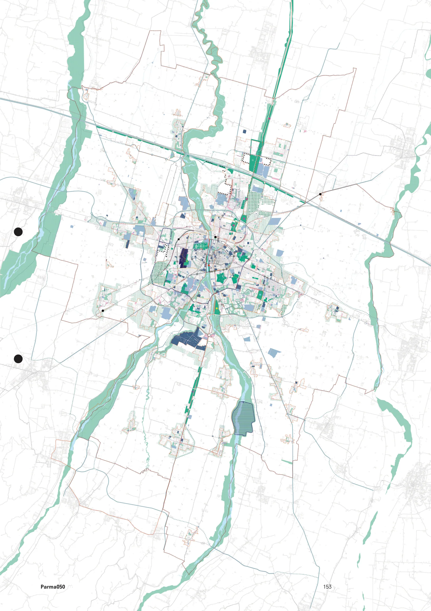
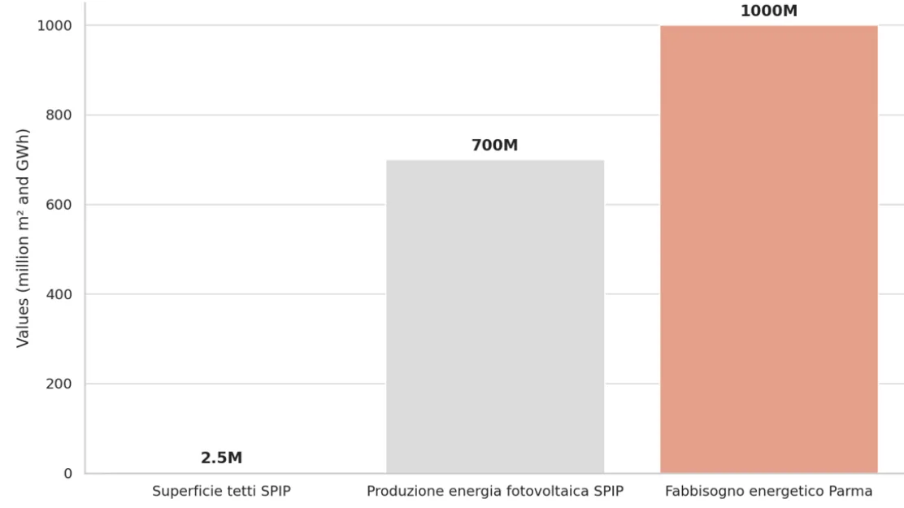
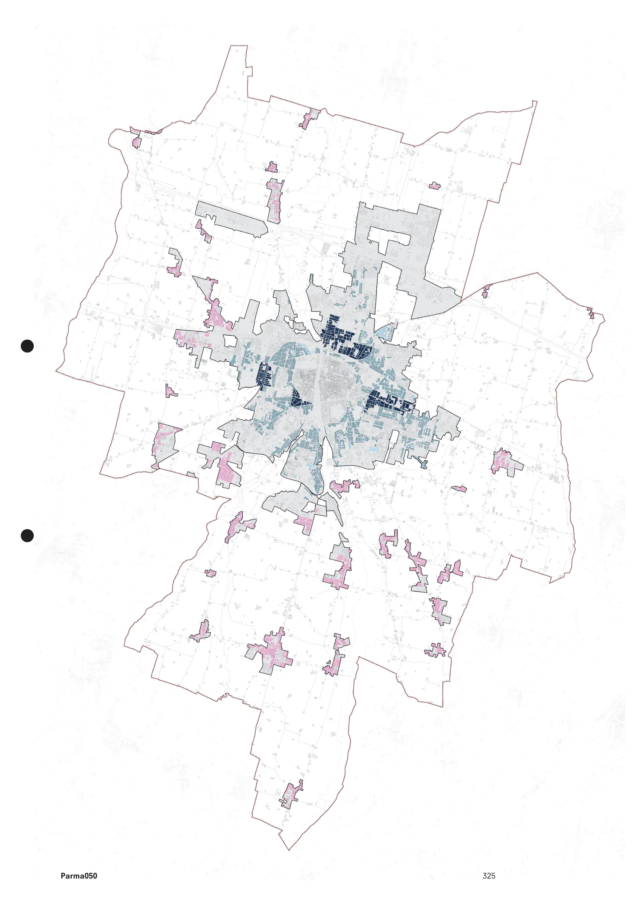

4.0 Introduzione
4.1 Strategia operativa
4.2 Schemi di assetto strategico
4.3 Strategie locali
4.4 Geografie della Trasformazione Strategica
4.5 Progetti Strategici
ST.SAS
Assetto strategico
4.4.0
PR050
Aree e spazi strategici
Trasformazioni urbane e correlazioni spaziali
Sviluppo urbano e la costruzione della città pubblica
Questa sezione dell’atlante viene dedicata alla rappresentazione della strategia “operativa” declinata alle aree d’in-
tervento strategico all’interno dei vari tessuti in accordo alle tipologie di intervento definite dalla LUR art. 7 comma 4.
Vengono quindi individuati cartograficamente i luoghi della trasformazione strategica attraverso la localizzazione di
spazi e luoghi da sviluppare, qualificare, rigenerare e completare. Categorie che contraddistinguono lo sviluppo della
città futura.
La strategia operativa del piano PR050 come descritto precedentemente si divide in due livelli ed è rappresentata dalle
tavole di assetto strategico delle trasformazioni e delle correlazioni (ST.SAS 4.2.2 e ST.SAS 4.2.3).
Le schede di seguito rappresentano gli ambiti della trasformazione Strategica organizzate secondo un crieterio temati-
co nelle seguenti sezioni:
Sez. 4.4.A
Interventi di rigenerazione urbana strategica
Sez. 4.4.B
Aree strategiche di nuova urbanizzazione, rigenerazione e sviluppo infrastrutturale
Sez. 4.4.C
Aree strategiche per interventi di sviluppo e rigenerazione urbana e ambientale
Sez. 4.4.D
Interventi di sviluppo strategico
La rappresentazione cartografica si avvale delle tavole di assetto indicate precedentemente: da una parte vi sono gli
areali delle aree strategiche di trasformazione e dall’altra la “dotazione” da correlare alla trasformazione stessa, in cui
risulta visibile il masterplan dell’assetto futuro della città pubblica.
Lo schema di assetto, a partire da una scomposizione del TU in tessuti urbani identifica, gli areali della trasformazione,
e gli spazi strategici che insieme costituiscono il sistema di rinnovamento dell’intero spazio urbano all’interno del ter-
ritorio comunale. Le aree di addensamento strategico rappresentano i “nodi” della nuova struttura multicentrica della
futura città di Parma, superando di fatto la dicotomia centro-periferia e il conseguente concetto ristretto di distribuzio-
ne gerarchica dei valori di mercato.
Le indicazioni progettuali contenute nelle schede relative alle “Aree e progetti della trasformazione strategica” hanno
valore di linee guida e di indirizzo; base sulla quale sviluppare l’Accordo Operativo tenendo conto degli atti program-
matori dei diversi settori competenti in materia.
Assetto strategico delle
trasformazioni
ST.SAS.4.2.2
LEGENDA
ELEMENTI INSEDIATIVI
PROGETTI STRATEGICI
TU - Territorio Urbanizzato (art. 32 LUR)
4.5.9 Progetto strategico LA "SUPERQUADRA": IL "BIOPARCO DI PARMA"
Insediamenti sparsi
4.5.10 Progetto strategico "SMART MOBILITY HUB" - "STAZIONE ALTA VELOCITÀ"
4.5.11 PARMA ECODISTRICT PED E IL PARCO CENTRALE
GEOGRAFIE DELLA TRASFORMAZIONE STRATEGICA
4.5.12 PARMA FOOD PORT - NUOVO MERCATO AGROALIMENTARE
RIGENERAZIONE STRATEGICA CON INTERVENTI COMPLESSI
Interventi di rigenerazione urbana
TESSUTI URBANI
-4.4.A1 RIMAGREEN - RIgenerazione MArgini GREEN Ring
Tessuto storico del capoluogo
-4.4.A2 RIMATAR - RIgenerazione MArgini stadio TARdini
Tessuti residenziali o misti da conservare
-4.4.A3 RIMACI - RIgenerazione MArgini CIttadella
Tessuti residenziali o misti da qualificare del capoluogo
-4.4.A4 RIMAOS - RIgenerazione MArgini OSpedale
Tessuti residenziali o misti da qualificare delle frazioni
-4.4.A5 RIMAVIL - RIgenerazione MArgini VILletta
Tessuti specializzati a destinazione prevalentemente produttiva da qualificare
-4.4.A6 RIMAPON - RIgenerazione MArgini parco lineare ex PONtremolese
Tessuti specializzati a destinazione prevalentemente
commerciale-direzionale-ricettiva da qualificare
-4.4.A7 RIMADUC - RIgenerazione MArgini parco DUCale
RIMAP - RIgenerazione MArgini dei Parchi
Tessuto dei servizi urbani
-4.4.A8
RIMAP - RIgenerazione MArgini Parco ex-Eridania, Falcone Borsellino,
Parco della musica
-4.4.A9
RIMAP - RIgenerazione MArgini Parco Martini
-4.4.A10 RIMAP - RIgenerazione MArgini Parco Ferrari
-4.4.A11 RIMAP - RIgenerazione MArgini Parco della Biodiversità
ELEMENTI CARTOGRAFICI
Nuove aree verdi PUG PR050 e aree verdi periurbane da valorizzare
(SCHEMA DI ASSETTO STRATEGICO DELLE CORRELAZIONI E DEI SERVIZI)
Aree strategiche di nuova urbanizzazione, rigenerazione e sviluppo infrastrutturale
Aree verdi esistenti e zone sportive, ricreative e culturali
Parti del territorio senza fattori preclusivi alle trasformazioni e con opportunità
di sviluppo (art. 35 comma 6, LUR)
Corsi d'acqua principali
-4.4.B.1 Area strategica "Nuova Pontremolese (A1 Crocetta) ERS" (Greenfield)
-4.4.B.2 Area strategica "Parma North Gate" (Greenfield)
-4.4.B.3 Area strategica "Campus Sud" e "Parma South Gate" (Greenfield)
-4.4.B.4 Area strategica "Parco attrezzato per servizi alla collettività" (Greenfield)
-4.4.B.5 Area strategica "Aeroporto Est" (Greenfield)
Stazioni ferroviarie esistenti
Stazioni ferroviarie in previsione
Linea ferroviaria TAV
Aree strategiche per interventi di sviluppo e rigenerazione urbana e ambientale
Rete ferroviaria
-4.4.C.1 Area strategica "Ex scalo merci viale Fratti" (Brownfield)
-4.4.C.2 Area strategica "Ex Bormioli" (Brownfield)
-4.4.C.3 Area strategica "Stazione nord" (Brownfield)
-4.4.C.4 Area strategica "Ponte nord" (Greenfield)
-4.4.C.5 Area strategica "Ex Greci Gaione" (Brownfield)
-4.4.C.6 Area strategica "Ex cartiera Bonati strada Argini" (Brownfield)
-4.4.C.7 Area strategica "Ex cartiera Vigatto" (Brownfield)
-4.4.C.8 Area strategica "Ex Star Corcagnano" (Brownfield)
-4.4.C.9 Area strategica "Ex TEP Villetta" (Brownfield)
-4.4.C.10 Area strategica "Ex Salamini, denominata PEG Parma East Gate" (Brownfield)
-4.4.C.11 Area strategica Via Emilia est" (Brownfield)
-4.4.C.12 Area strategica "Ex scalo ferroviario via Reggio" (Brownfield)
-4.4.C.13 Area strategica "Ex Italgel cluster multifunzionale" (Brownfield)
-4.4.C.14 Area strategica "Casello viale delle Esposizioni" (Brownfield)
-4,4.C.15 Area strategica "Via Strobel" (Brownfield)
-4.4.C.16 Area strategica "Ex inceneritore Cornocchio" (Brownfield)
-4.4.C.17 Area strategica "Molino Soncini Porporano" (Brownfield)
-4.4.C.18 Area strategica "San Pancrazio nord" (Greenfield)
-4.4.C.19 Area strategica "Cuneo verde confluenza torrenti Parma e Baganza"
-4.4.C.20 Area strategica "Aree produttive in sponda dx e sn torrente Baganza"
-4.4.C.21 Area strategica "Ospedale Maggiore" (Brownfield)
Nuova linea ferroviaria pontremolese
Autostrada
Viabilità principale
Viabilità principale in previsione
Rete stradale
Piano di sviluppo aeroportuale
Sistema edificato
Comune di Parma (confine comunale)
Interventi di sviluppo strategico
-4.4.D1 Areali della "Productive city"
-4.4.D2 Interventi di sviluppo "Green Tech Corridor"
-4.4.D3 Areali di addensamento lungo le direttrici strutturali del TPL
Edifici dismessi (art. 22, comma 6 LUR)
Aree dismesse (art. 22, comma 6 LUR)
Il riquadro punteggiato evidenzia il set d’informazioni aggiuntive rappresentate in questa sezione “4.4 Geografie della Tra-
sformazione Strategica” per lo schema delle correlazioni e dei servizi alla pagina seguente.
4.4.B.2
4.4.B.2
4.4.C.14
4.4.B.2
4.4.B.2
4.4.C.16
4.4.B.5
4.4.C.2
4.4.C.13
4.4.C.13
4.4.C.18
4.4.C.12
4.4.C.13
4.4.C.3
4.4.C.4
4.4.A.7
4.4.C.1
4.4.C.15
4.4.A.8
4.4.A.1
4.4.A.6
4.4.B.1
4.4.C.21
4.4.A.4
4.4.A.9
4.4.A.2
4.4.A.5
4.4.A.3
4.4.C.9
4.4.A.10
4.4.C.11
4.4.C.11
4.4.C.19
4.4.C.10
4.4.A.11
4.4.C.10
4.4.C.20
4.4.C.20
4.4.C.6
4.4.B.4
4.4.B.3
4.4.B.3
4.4.C.5
4.4.C.17
4.4.C.7
4.4.C.8
Assetto strategico delle
correlazioni e dei servizi
ST.SAS.4.2.3
LEGENDA
DOTAZIONI TERRITORIALI CORRELATE
DOTAZIONI AMBIENTALI PR050
Stazione ferroviaria esistente
4.5.1 Progetto strategico BOSCO ORBITALE -
Forestazione urbana e ambiti di potenziamento ecologico-ambientale
Stazioni ferroviarie in previsione
Nuovo tratto ferroviario
Parco Verde/Blu del Centro Storico
Linea ferroviaria TAV
Parco del Naviglio
Rete ferroviaria
Parco Eco-District
Parco della Biodiversità
Autostrada
Parco della Memoria
Viabilità principale
Parco delle Rimembranze
Viabilità principale in previsione
Parco della Comunità
Rete stradale
Parco lineare ex-pontremolese
Parcheggi d'interscambio
Parco di mitigazione Campus-Corcagnano
Parco lineare "KM verde"
Parcheggi in struttura
Aree verdi periurbane da valorizzare
Piano di sviluppo aeroportuale
PROGETTI GENERALI E LOCALI
4.5.2 Progetto strategico OASI DELLA BIODIVERSITÀ
Parti del territorio senza fattori preclusivi alle trasformazioni e con opportunità
di sviluppo (art. 35 comma 6, LUR)
4.5.4 Progetto strategico PARCO VERDE-BLU
Linea elettrica da risanare
4.5.8 Progetto strategico - VERDE TEMPORANEO - PARMA VIVAIO MOBILE
Incroci stradali da mettere in sicurezza
Interventi di messa in sicurezza su strada trafficata
4.5.13 Progetto strategico - PARCO LINEARE EX PONTREMOLESE
Fronti urbani da potenziare
Parchi principali esistenti da valorizzare
Aumento integrazione spaziale e funzionale
Assi viari da riqualificare
Struttura del verde esistente
SERVIZI PR050
Aree di forestazione urbana (Kyoto Forest) e verde di mitigazione
Aree urbane in cui potenziare il sistema dei servizi
Corsi d'acqua principali
Aree urbane in cui collocare nuovi servizi
Servizi e attrezzature di interesse comune
SPAZIO URBANO E MOBILITA' PR050
Salute e sanità
4.5.3 Progetto strategico PR050 GREEN RING
Istruzione, università e ricerca
4.5.5 Progetto strategico CICLOVIA E PARCO TERRITORIALE DEL NAVIGLIO
Aree e attrezzature sportive, ricreative e culturali
4.5.6 Progetto strategico "URBAN LOOPS" - SemiRing
4.5.6 Progetto strategico "URBAN LOOPS" - Anello ciclabile
Territorio Urbanizzato (TU)
Aree impermeabili da desigillare
Insediamenti sparsi
4.5.7 Progetto strategico - Aree stradali di potenziale pedonalizzazione
Comune di Parma (confine comunale)
4.5.7 Progetto strategico - Aree stradali di possibile implementazione di viabilità "Zona 20"
4.5.7 Progetto strategico - Aree stradali di possibile implementazione di viabilità "Zona 30"
Rete ciclabile esistente
Rete ciclabile da realizzare

4.4.A.1
Scala
1:10.000
Geografia della trasformazione strategica
Interventi di rigenerazione urbana strategica
ST.SAS
Legenda pag. 150-152
PR050
RIMAGREEN - RIgenerazione MArgini GREEN Ring
1. Introduzione generale
Le aree evidenziate rappresentano ambiti di trasformazione strategica. Esse definiscono i margini lungo i viali che
racchiudono il nucleo di antica formazione della città di Parma e che saranno parte di una progettualità strategica spe-
cifica di trasformazione e conversione dei “viali” in un “Green Ring”. La strategia del PUG assegna a queste aree la
possibilità di trasformazione attraverso interventi di addensamento o sostituzione urbana (cosi come definito nella LUR
24/2017 art. 7 comma 4 lettera c.) se non soggette a vincoli o limitazioni. Tali trasformazioni potranno concorrere alla
realizzazione del “Green Ring” identificato come progetto strategico. La redifinizione stradale del “Green Ring” (pro-
getto strategico) a favore di un aumento delle superfici demineralizzate e permeabili ad uso pedonale, ciclabile, e per
mezzi del trasporto pubblico, passa attraverso la ridefinizione dei relativi bordi edificati. La trasformazione delle aree
contigue e adiacenti al parco lineare circolare (definito dai viali) viene correlata alla costruzione di tale nuovo spazio
pubblico. Questo permette quindi agli interventi di contribuire in modo diretto e indiretto alla definizione della grande
dotazione ecologica urbana ambientale (progetto strategico: “Green ring”).
La strategia principale di riassetto mira ad un nuovo equilibrio tra la sfera urbana e quella ecologica-ambientale. Per
adeguare la città alle mutate esigenze di sostenibilità e diminuirne l’impronta ecologica 1, ripensa i viali esistenti come
parco lineare verde dedicato al trasporto pubblico e ciclo pedonale e la progressiva demineralizzazione dei suoli.
La nuova infrastruttura, si caratterizza come il più importante progetto di spazio pubblico urbano, ossia la conversione
di una infrastruttura in uno spazio di nuova concezione. ll Ring diventa dunque il nuovo “attrattore lineare urbano” di
riorganizzazione della “città pubblica” funzionale alla valorizzazione degli edifici moderni, edifici-simbolo di epoca otto-
centesca, lo stesso “Casinetto Petitot” in Piazzale Risorgimento, ma anche di nuova possibile rigenerazione di edifici
non vincolati che affacciano su di esso. Come indicato nella scheda riferita al quartiere e ambito omogeneo“Centro
Storico” viene indicato come progettualità pilota la parziale pedonalizzazione di viale Mentana, con accessibilità veico-
lare limitata a seguito della trasformazione progressiva dei viali in “Green Ring”.
1. L’impronta ecologica (Ecological Footprint)
è stata sviluppata a metà degli anni novanta
del secolo scorso da Mathis Wackernagel e
William Rees e si è affermata come indicatore
della sostenibilità. Indica quanto l’ecosistema e
le risorse naturali della terra vengano sollecitati.
L’impronta ecologica specifica quanti ettari di
bosco, terreni da pascolo, terreni coltivabili e
mari siano necessari per rinnovare le risorse
utilizzate e assorbire i rifiuti generati. Consente
pertanto di confrontare gli effetti del nostro
consumo momentaneo con le risorse disponibili
sulla terra. Le abitudini di consumo della
popolazione mondiale causano al momento un
deficit complessivo, nel senso che l’umanità
avrebbe bisogno di 1,7 terre per rinnovare le
risorse consumate. Le impronte climatiche dei
Paesi dell’Europa occidentale sono per lo più
mediamente elevate, come dimostra la mappa
del Global Footprint Network. L’impronta
ecologica può essere calcolata a tutti i livelli,
sia per attività selezionate, per singole persone
private, aziende, comunità, città o Paesi. A
differenza dell’impronta di CO2, l’impronta
ecologica considera oltre alle emissioni di CO2
anche altri agenti ambientali.
Fonte: footprintnetwork.org, Wackernagel/
Beyers 2010: L’Ecological Footprint.
2. Criteri rigenerativi: tipologia di intervento
Gli interventi di riassetto degli edifici lungo tale nuova infrastruttura potranno avere usi diversi dalla residenza al piano
terra per favorire lo sviluppo di attività e l’utilizzo dello spazio pubblico di nuova formazione. Sarà anche possibile
l’attivazione di diritti edificatori per la rigenerazione urbana relativa agli edifici entro le aree evidenziate, la monetiz-
zazione degli interventi attraverso il FONDO con il reinvestimento dei tributi. La realizzazione del “Green Ring” e il
relativo progetto di TPL denominato “Parma circle line”, potranno essere finanziati direttamente dalla rigenerazione
urbana innescata nelle aree perimetrali oppure passando attraverso il “fondo”. La sezione proposta per la costruzione
della nuova infrastruttura pubblica varierà a seconda del tessuto urbano intercettato e la viabilità esistente. Si propone
un’attività di ricognizione complessiva da svolgere preventivamente all’approvazione definitiva del progetto per verifi-
care la fattibilità dell’opera pubblica nel suo sviluppo e per risolvere tempestivamente le situazioni critiche attraverso
un masterplan specifico.
3. Disposizioni specifiche e Azioni
Le aree che perimetrano i viali (futuro Green Ring) e gli edifici che insistono lungo i margini vengono definiti come “RI-
MAGREEN”, ossia,“RIgenerazione MArgine GREEN Ring”. Ad oggi i margini non definiscono nessuna relazione diretta e
indiretta con il futuro anello. Molti edifici “voltano” le spalle ai parchi e in alcuni casi con recinzioni alte e coprenti.
Le aree evidenziate e il parco lineare circolare racchiudono il Centro Storico (CS). L’occasione di rigenerare i margini e
gli insediamenti lungo tale nuova infrastruttura, rappresenta un’opportunità importante per recepire la strategia e le esi-
genze del territorio dotando la città di nuovo spazio pubblico innovativo e di eccellenza (centralità qualitative a servizio
della città con trasformazione progressiva del suolo). La strategia del Piano PR050 prevede inoltre, in questo ambito, il
potenziamento della rete del trasporto pubblico con la realizzazione di uno spazio per il TPL e realizzazione di piste cicla-
bili su sede propria e allargamento dello spazio pedonale con conseguente riduzione della sezione stradale per limitare
in modo progressivo la percorrenza automobilistica privata, come parte integrante delle progettualità nella strategia
“Parma alta capacità”.
L’ambito per sua natura è ben connesso alle reti della viabilità di livello superiore, e interseca l’area della stazione ferro-
viaria. La strategia aspira a riabilitare i margini del “Green Ring” rigenerando le aree e gli edifici lungo i margini, attraver-
so AO cosi come indicatato nella LUR art. 7 comma 4 lettera c) ossia addensamento e/o sostituzione edilizia Tutti
gli interventi dovranno rispondere in modo efficace ai 4 parametri (urbanistico-edilizi) rigenerativi del piano PR050, nel
rispetto di “DECODICO” ossia, attraverso lo sviluppo di insediamenti compatti,(capaci di ridurre l’impronta degli edi-
fici demoliti e quindi diminuendone l’area permeabile) a fronte di un sensibile aumento della densità, con l’inserimento
di diversità funzionale (soprattutto ai piani terra) capace di attivare il margine con attività attrattive e allo stesso tempo
provvedere ad una maggiore connettività tra l’infrastruttura “Green Ring” e i quartieri attraversati. L’obiettivo è quindi
di rafforzare il ruolo di questo comparto ed elevarlo a quello di centralità mista integrata attravero una nuova relazione
tra il sistema urbano di margine con la dotazione e infrastruttura verde. Allo stesso tempo dovranno essere rispettati i 4
parametri fondamentali “FATE” ossia i criteri di sostenibilità ecologica-ambientale individuati dalla strategia. Quindi, gli
interventi che la strategia attiva concorrono al raggiungimento della Vision (gli obiettivi del piano) tra cui di sviluppare
Parma in una città multicentrica e dei quartieri. Gli interventi dovranno favorire l’inclusione sociale, anche attraverso la
dotazione e la caratterizzazione di spazi, attrezzature e servizi, seguendo il modello della città di prossimità e generando
spazi di maggior qualità e infrastrutture adattive che riescano a comportare il miglioramento ambientale da un punto di
vista prestazionale dell’ambito.
Gli elementi caratterizzanti in particolare derivante dal processo rigenerativo, devono soddisfare le condizioni indicate
negli “Scenari” e relative “Azioni”, qui richiamate:
Strategia 3.1 - Azione 3.1.1 Favorire la proliferazione di infrastrutture “smart mobility” con scambio mezzo, soprattutto
nei parcheggi pubblici. Azione 3.1.6 Migliorare la funzionalità del sistema di scambio tra strade di rango diverso con-
giuntamente ad Incentivare e rafforzare l’utilizzo dei P+R come hub della mobilità. Azione 3.1.8 Favorire opere di mitiga-
zione ambientale per ridurre l’impatto di infrastrutture stradali molto frequentate, riabilitando gli spazi interclusi. Azione
3.1.10 Estendere, implementare e gerarchizzare la rete ciclabile urbana e territoriale. Strategia 3.2 - Azione 3.2.1 Favo-
rire processi di mixitè con articolazione funzionale. Azione 3.2.2 Favorire il riuso e rinfunzionalizzazine di edifici obsoleti.
4.4.C.2
4.4.C.13
4.4.C.13
4.4.C.12
4.4.C.13
4.4.C.3
4.4.A.6
4.4.C.4
4.4.A.1
4.4.A.1
4.4.A.1
4.4.A.1
4.4.A.1
4.4.A.1
4.4.A.7
4.4.A.1
4.4.C.1
4.4.A.1
4.4.A.1
4.4.A.4
4.4.A.8
4.4.A.4
4.4.A.7
4.4.A.1
4.4.A.1
4.4.A.1
4.4.A.8
4.4.A.4
4.4.A.1
4.4.C.21
4.4.A.1
4.4.A.8
4.4.A.4
4.4.A.1
4.4.A.1
4.4.A.4
4.4.A.1
4.4.A.1
4.4.A.3
4.4.A.2
4.4.A.10
4.4.A.3
4.4.C.9
4.4.A.10
4.4.A.3
4.4.A.3
4.4.A.5
4.4.A.10
4.4.A.3
4.4.A.3
4.4.A.5
4.4.A.3
4.4.C.19
4.4.A.10
4.4.A.5
4.4.C.20
Azione 3.2.6 Favorire l’insediamento diffuso di attività economiche potenziando le aggregazioni funzionali innovative.
Azione 3.2.7 “Implementare le funzioni insediate contribuendo al loro rafforzamento promuovendo interventi di mitiga-
zinone e desigillazione”. Strategia 3.3 - Azione 3.3.2 Favorire processi di regolazione e mitigazione dell’effetto “isola
di calore” 3.3.3 Introduzione di misure finalizzate all’adattamento climatico degli edifici. Azione 3.3.7 Sviluppo di reti
di distribuzione locale di energia elettrica da fonti rinnovabili. Azione 3.3.8 Riuso, riciclo e stoccaggio dei materiali da
costruzione e di scavo incentivando l’uso in loco dei materiali derivanti da eventuali demolizioni. Strategia 3.4 - Azione
3.4.1 Garantire la diffusione di una rete equilibrata di attrezzature e servizi. Azione 3.4.2 Implementare programmi
funzionali insediati. Azione 3.4.3 Implementare la rete dei sotto servizi potenziando le infrastrutture digitali. Azione
3.4.4 Favorire il ridimensionamento e miglioramento delle infrastrutture sotterranee congiuntamente ad interventi di tra-
sformazione edilizia. Azione 3.4.5 Favorire l’aggregazione funzionale per la realizzazione di cluster funzionali innovativi
tra: scuole, parchi, sport, salute. Azione 3.4.6 Qualificazione e ridefinizione delle dotazioni, esistenti e proposte. Azione
3.4.8 Promuovere e favorire la proliferazioni di infrastrutture sociali innovative. Azione 3.4.9 Favorire la riqualificazione
e la realizzazione delle dotazioni territoriali. Azione 3.4.10 Supportare la diffusione degli spazi della cultura. Strategia
3.5 - Azione 3.5.1 Favorire i processi di rigenerazione del patrimonio edilizio, di riuso e rifunzionalizzazione. Azione 3.5.3
Sviluppo della città storica come “distretto centrale”. Azione 3.5.6 Qualificare gli spazi e le attrezzature. Azione 3.5.8
Favorire l’abitabilità del centro storico anche a carattere temporaneo. Azione 3.5.12 Favorire sviluppo edilizio tramite
demolizione e ricostruzione in modalità “condizionata” dal restringimento dell’impronta dell’edificio. Strategia 3.6 -
Azione 3.6.3 Favorire sviluppo della città multicentrica. Azione 3.6.8 Adeguamento della rete digitale di nuova genera-
zione. Strategia 3.7 - Azione 3.7.1 Salvaguardare ed implementare la biodiversità. Azione 3.7.3 Potenziare l’infrastrut-
tura verde urbana. Azione 3.7.4 Sviluppare e costruire la “green infrastructure” a livello urbano e territoriale. Azione
3.7.7 Supportare la proliferazione di parchi e piazze verdi in ambito urbano ed extra urbano.
4. Vision e obiettivi
Le strategie individuate, supportate dalle Azioni, richiamate precedentemente, concorrono al raggiungimento dei se-
guenti obiettivi dichiarati nella Vision: 1 - Parma città della biodiversità; 2 - Parma città policentrica e dei quarteri;
3 - Parma città della mobilità condivisa e sostenibile; 6 - Parma città dello sviluppo e delle opportunità; 7. Natura
Espansiva.
Di seguiti vengo esplicitati alcuni obiettivi specifici inclusi in quelli sopra indicati nella Vision:
•
definizione di uno parco pubblico innovativo nel segmento del torrente Parma compreso all’interno
dei viali;
•
demineralizzazione e deimpermeabilizzazione del suolo (oggi asfaltato);
•
trasformazione di viale Mentana in un spazio ciclo pedonale (progetto pilota);
•
aumento degli spazi verdi e degli elementi arborei e vegetativi a favore dell’abbattimento;
dell’isola di calore e all’aumento di aree ombreggiate;
•
costruzione di fronti uniformi prospicenti il “green Ring”;
•
ripristino di spazi verdi e razionalizzazione delle aree a parcheggio con raccolta delle acque
meteoriche;
•
messa a sistema di elementi funzionali incongrui o poco sviluppati;
•
valorizzazione ed efficientamento degli edifici pubblici prospicenti il “Green Ring”;
•
definizione di piazze pubbliche innovative nei nodi identificati e intersezioni con le “radiali”;
•
valorizzazione del “Petitot” come spazio multifunzionale di pregio e “terrazza urbana” del nuovo
“Green Ring”;
La costruzione di qualità nuove - intese in primo luogo come qualità urbana ed ambientale in grado di rigenerare i luo-
ghi delle infrastrutture in spazi pubblici innovativi, ma anche del commercio, della produzione, della ricreazione, della
socializzazione, dell’abitare e del lavoro e come qualità sociale, si traduce essenzialmente in una tessuto resiliente in
grado di articolarsi anche attraverso funzioni di eccellenza - è uno degli obiettivi prioritari da perseguire con l’interven-
to di trasformazione.
Per questa ragione vengono indicate le destinazioni d’uso da considerare al fine di sviluppare l’insediamento in coe-
renza ai principi precedentemete indicati.
Destinazioni d’uso previste
La rigenerazione è prevista attraverso l’inserimento di mix funzionali e sociali. Viene incoraggiata l’integrazione di aree
verdi e servizi che promuovono uno stile di vita più sostenibile e l’inclusione sociale. Viene altresi favorito l’insedia-
mento ai piani terra di attività diverse dalla residenza in grado di attivare il margine o perimetro del “Green Ring”, con-
sentendo l’utilizzo dei primi piani per funzioni non residenziali per aumentare le attività e programmi del “Parco lineare
circolare” o Green Ring.
Gli ambiti evidenziati potranno sviluppare interventi di addensamento, ovvero in modo prioritario favorendo interventi
di demolizione e ricostruzione con restringimento delle impronte degli edifici in modo tale da permettere il recupero di
suolo e rafforzare i collegamenti e le connessioni con l’intorno facilitando l’accessibilità e l’attraversabilità dell’area.
Si ritiene importante, venga introdotto negli interventi di rigenerazione e nello spazio pubblico generato dalla conver-
sione dei Viali in “Green Ring”, oltre all’aumento della presenza vegetazionale, anche ad un sistema di riciclo, raccolta
e riutilizzo dell’acqua piovana per usi irrigui.Ogni intervento di trasformazione sarà volto a consentire lo sviluppo del
“Green Ring” spazio connesso e correlato.
4.4.C.2
4.4.C.13
4.4.C.13
4.4.C.12
4.4.C.13
4.4.C.3
4.4.A.6
4.4.C.4
4.4.A.1
4.4.A.1
4.4.A.1
4.4.A.1
4.4.A.1
4.4.A.1
4.4.A.7
4.4.A.1
4.4.C.1
4.4.A.1
4.4.A.1
4.4.A.4
4.4.A.8
4.4.A.4
4.4.A.7
4.4.A.1
4.4.A.1
4.4.A.1
4.4.A.8
4.4.A.4
4.4.A.1
4.4.C.21
4.4.A.1
4.4.A.8
4.4.A.4
4.4.A.1
4.4.A.1
4.4.A.4
4.4.A.1
4.4.A.1
4.4.A.3
4.4.A.2
4.4.A.10
4.4.A.3
4.4.C.9
4.4.A.10
4.4.A.3
4.4.A.3
4.4.A.5
4.4.A.10
4.4.A.3
4.4.A.3
4.4.A.5
4.4.A.3
4.4.C.19
4.4.A.10
4.4.A.5
4.4.C.20
Geografia della trasformazione strategica
Interventi di rigenerazione urbana strategica
4.4.A.2
Scala
1:2.500
ST.SAS
Legenda pag. 150-152
PR050
Interventi di rigenerazione urbana strategica
RIMATAR - RIgenerazione MArgini stadio TARdini
1. Introduzione generale
L’area perimetrale evidenziata, intorno allo stadio Tardini costituisce un ambito di rigenerazione. La riqualificazione
dello stadio porta con sè la possibilità di rigenerazione delle aree adiacenti attraverso interventi di addensamento cosi
come definito dalla LUR art 7 comma 4 lettera c). Per le aree perimetrali dello stadi Ennio Tardini vale lo stesso princi-
pio adottato per il parco Ferrari ovvero la possibilità di addensamento o sostituzione urbana con l’obiettivo di consen-
tire interventi di trasformazione a fronte di una diretta correlazione con interventi di qualificazione dello spazio pubblico
e la possibilità di inserire nuove funzioni soprattutto al piano terra in relazione alla futura riqualificazione dello stadio.
A fronte di una possibile rigenerazione dello stadio con l’inserimento di mix funzionali, da polo sportivo integrato a “in-
frastruttura sociale”, o meglio “Parco Sociale” di nuovo tipo capace di cambiarne i rapporti non solo con l’immediato
intorno ma con tutta la città. La logica rigenerativa, quindi, viene trasferita anche al perimetro costruito soprattutto in
corrispondenza della connessione con il parco Ferrari. Il piano PR050 favorisce la connessione fisica tra questi sistemi
in grado di definirne uno di livello superiore.
Interventi diretti di trasformazione nelle
aree perimetrali dello stadio Tardini.
Gli interventi diretti riferibili alle aree evidenziate
sono rivolti ad attuare la strategia descritta
nella seguente scheda.
Viene concessa la possibilità di intervento
rigenerativo con aggiunta di una porzione di
piano sull’edificio esistente (previa conformità
strutturale antisismica) oppure demolizione
e ricostruzione con un piano aggiuntivo e
mantenimeto dell’impronta edificio in termini
di mq.). Viene concesso il RIFO per favorire
e attuare la strategia nella sua dimensione
massimale in regime ordinario nei tessuti
residenziali misti da qualificare (R2C).
2. Criteri rigenerativi: tipologia di intervento
Gli ambiti che definiscono il perimetro dello stadio Tardini sono oggetto di rigenerazione urbana nella misura in cui ven-
gano correlati alla definizione e costruzione dello spazio pubblico di riferimento con il rafforzamento di funzioni nell’im-
mediato intorno. Viene consetito agli edifici più bassi di uniformarsi agli edifici più alti esistenti o aumentarne l’altezza
attraverso AO in modo da riconfigurare e uniformare il tessuto edilizio a ridosso degli spazi di riferimento.
Come indicato, gli interventi di “addensamento” sono stati identificati in ambiti specifici (perimetri dei parchi esistenti
e di nuova formazione, indicati nella carta di assetto delle trasformazioni) e concorrono a definire le nuove centralità di
Parma 2050 all’interno del TU.
Essi ricoprono un ruolo centrale nello sviluppo della città futura. Gli stessi interventi devono essere in grado di gene-
rare e qualificare gli spazi di riferimento, attivando un rapporto simbiotico di relazione, correlazione e trasformazione.
Gli interventi di addesamento o sostituzione urbana non sono riferibili solamente ad una dimensione quantitativa ma
anche a elementi funzionali e di relazione con il contesto di riferimento. Intorno alle dotazioni e ai servizi è consentito (a
fronte di un masterplan che illustri i principi qualitativi dell’intervento) di aumentare il carico insediativo purchè in grado
di generare e qualificare la dotazione di riferimento senza appesantire le infrastrutture e sottoservizi esistenti. In caso
positivo sarà necessario un loro adeguamento indicato in sede di stesura di AO.
Gli ambiti che definiscono il perimetro dello stadio Tardini sono oggetto di rigenerazione urbana attraverso la tipologia
prevista in regime straordinario attuabile attraverso AO, ossia “l’addensamento o sostituzione urbana” cosi come
indicato nell’art. 7 comma 4 lettera c) della LUR. Il processo di sviluppo delle aree dovrà rispondere in modo adeguato
ai 4 parametri fondativi della rigenerazione individuati dal piano PR050 “DECODICO,” ossia: compattezza, densità,
diversità e connettività. A questi parametri ne dovranno essere associati altri di carattere ecologico-ambientale “FATE”
come: il riciclo delle acque, l’uso di dispositivi per la produzione di energia elettrica da fonti rinnovabili, coperture e ter-
razze verdi e gli edifici in genere avere una adeguata coibentazione termica come specificato nel Regolamento Edilizio
(R.E.). Nelle aree è altresì possibile attuare interventi di MO, MS, RE, Qualificazione e Ristrutturazione Urbanistica, nelle
more dell’attuazione dell’intervento previsto con AO o PAIP, così come indicato nella “Discilplina Normativa” (DN)
nella parte che riguarda interventi di trasformazione ordinaria. Anche in regime ordinario, all’interno della stessa trasfor-
mazione diretta si dovranno considerare i 4 DECODICO e FATE ove possibile. Riguardo ai pesi insediativi e premialità
nell’area strategica di rigenerazione, il criterio di incentivazione definito dalla strategia prevede che le proposte di
pianificazione attuativa, possano accedere ad un incentivo volumetrico da definire in fase negoziale a fronte di rilevanti
benefici pubblici e rispondenza ai parametri prestazionali RP (Requisiti Prestazionali) coerenti con LMC (Livelli Minimi
di Coerenza) e LPE (Livelli Premiali di Efficacia).Inoltre l’intervento dovrà essere allineato agli obiettivi generali indicati
nella strategia e dell’Amministrazione Comunale, concordati in sede di accordo, rispetto alle priorità individuate negli
strumenti di programmazione temporale.
Gli interventi in ordinario in queste aree
dovranno considerare i 4 parametri urbani
fondativi DECODICO ove possibile (densità,
compattezza, diversità e connettività) e quelli
ecologico-ambientali FATE (tetto verde
e/o fotovoltaico, recupero delle acque e
coibentazione involucro edilizio) ed altri
secondari in conformità al R.E e la VALSAT.
In ogni caso l’intervento diretto ricadente
nelle aree “RIMATAR” dovrà consentire la
realizzazione o concessione delle dotazioni
territoriali (il contributo alla città pubblica
fa riferimento alla dotazione individuata e
correlata “Piazza verde” di riferimento, ed
eventualmente anche quelle di prossimità
all’intervento stesso.
I parametri urbanistico-edilizi di riferimento
sono:
Densità: intesa come mq di costruito.
Compattezza: (riduzione impronta,
permeabilità/RIE, per promuovere maggior
qualità urbana in contrasto ai cambiamenti
climatici).
Diversità: Funzioni ammesse; è favorita la
mixitè funzionale (tra funzioni compatibili).
Dimensione lotto: riferita alle funzioni e
contesto (Capoluogo e frazioni).
Altezza: in numero di piani, che riferita ai
tessuti definiscono il carico insediativo
Reperimento posti auto pertinenziali
(all’interno delle trasformazioni per ovviare
al fatto che in alcune parti della città nelle
strade non vi è molta disponibilità per cui
questo fattore incide sulla qualità dello spazio
pubblico).
Realizzazione/cessione/monetizzazioni
dotazioni territoriali, ossia, il contributo alla
città pubblica riferito alle dotazioni di quartiere.
Ogni intervento edilizio deve produrre in modo
diretto le dotazioni o attraverso monetizzazione
che consente all’amministrazione di realizzare
una serie di interventi di miglioramento sulla
città pubblica.
3. Disposizioni specifiche e Azioni
La strategia aspira a riabilitare i margini urbani dello stadio rigenerando le aree e gli edifici nell’intorno, costruendo una
centralità definita dai 4 parametri fondativi di qualità urbana “DECODICO” attraverso interventi che favoriscano il
potenziale addensamento congiuntamente alla definizione di insediamenti più compatti (capaci di ridurne l’impronta
e quindi aumentando l’area permeabile) con l’inserimento di diversità funzionale (soprattutto ai piani terra) capace di
attivare il margine con attività attrattive e allo stesso tempo provvedere ad una maggiore connettività tra il quartiere
e la città con l’area verde (parco Ferrari), che la strategia individua come nuova “piazza verde”. L’obiettivo è quindi di
rafforzare il ruolo di questo ambito ed elevarlo a quello di centralità, attravero una nuova relazione tra il sistema urbano
di margine con la dotazione verde e i servizi integrati. Quindi, gli interventi che la strategia attiva concorrono al raggiun-
gimento della Vision (gli obiettivi del piano) tra cui di sviluppare Parma in una città multicentrica e dei quartieri.
Gli interventi dovranno favorire l’inclusione sociale, anche attraverso la dotazione e la caratterizzazione di spazi, attrez-
zature e servizi, seguendo il modello della città della prossimità, e comportare il miglioramento ambientale da un punto
di vista prestazionale dell’ambito.
Tra le più importanti strategie urbane riferite all’area “stadio Tardini”rientrano la rigenerazione degli spazi edificati au-
mentando la valorizzazione del comparto in relazione con l’area verde, la mitigazione dell’isola di calore, l’avvio di pro-
cessi di micro economia di quartiere, di aumentare la presenza vegetativa, anche lungo le strade di accesso, gli ingressi
e dei parcheggi connessi. L’inserimento di nuove funzioni in queste aree potrà configurare livelli di qualità superiori,
a livello di quartiere. Le aree perimetrali costituiscono pertanto un elemento di primo ordine, una risorsa per tutta la
città. Il carattere “strategico” di questi ambiti diventa l’occasione per implementare la dotazione ed affermarne il ruolo
di nuova centralità nel contesto territoriale e urbano. Elementi e funzioni qualificanti anche attraverso attrezzature di
eccellenza, e servizi per aumentare la performanza anche delle attività esistenti.
Gli elementi caratterizzanti in particolare derivante dall’innesto potenziale di nuovi carichi insediativi derivanti dal pro-
cesso rigenerativo, devono soddisfare le condizioni indicate negli “Scenari” e relative “Azioni”, qui richiamate:
Strategia 3.1 - Azione 3.1.8 favorire opere di mitigazione ambientale per ridurre l’impatto di infrastrutture strada-
4.4.A.1
4.4.A.1
4.4.A.8
4.4.A.1
4.4.A.1
A.3
4.4.A.10
4.4.A.2
4.4.A.10
li molto frequentate, riabilitando gli spazi interclusi. Azione 3.1.10 Estendere, implementare e gerarchizzare la rete
ciclabile urbana e territoriale. Strategia 3.2 - Azione 3.2.1 Favorire processi di mixitè. Azione 3.2.2 Favorie il riuso e
rinfunzionalizzazine di edifici obsoleti. Azione 3.2.6 Favorire l’isediamento diffuso di attività economiche potenziando le
aggregazioni funzionali innovative. Azione 3.2.7 “Implementare le funzioni insediate contribuendo al loro rafforzamento
promuovendo interventi di mitigazinone e desigillazione”. Strategia 3.3 - Azione 3.3.2 Favorire processi di regolazione
e mitigazione dell’effetto “isola di calore”. Azione 3. 3. 3 Introduzione di misure finalizzate all’adattamento climatico
degli edifici. Azione 3.3.7 Sviluppo di reti di distribuzione locale di energia elettrica da fonti rinnovabili Azione 3.3.8
Riuso, riciclo e stoccaggio dei materiali da costruzione e di scavo incentivando l’uso in loco dei materiali derivanti da
eventuali demolizioni. Strategia 3.4 - Azione 3.4.1 Garantire la diffusione di una rete equilibrata di attrezzature e servizi.
Azione 3.4.2 Implementare programmi funzionali insediati. Azione 3.4.3 Implementare la rete dei sotto servizi potenzian-
do le infrastrutture digitali. Azione 3.4.5 Favorire l’aggregazione funzionale per la realizzazione di cluster funzionali inno-
vativi tra: scuole, parchi, sport, salute. Azione 3.4.6 Qualificazione e ridefinizione delle dotazioni, esistenti e proposte.
Azione 3.4.8 Promuovere e favorire la proliferazioni di infrastrutture sociali innovative - nuovi centri civici. Azione 3.4.9
Favorire la riqualificazione e la realizzazione delle dotazioni territoriali. Azione 3.4.10 Supportare la diffusione degli spa-
zi della cultura. Azione 3.5.1 Favorire i processi di rigenerazione del patrimonio edilizio, di riuso e rifunzionalizzazione.
Strategia 3.5 - Azione 3.5.6 Qualificare gli spazi e le attrezzature. Azione 3.5.12 Favorire densificazione “condizionata”
dal restringimento dell’impronta dell’edificio. Strategia 3.6 - Azione 3.6.3 Favorire processi di densificazione a favore
dello sviluppo della città multicentrica. Azione 3.6.8 Adeguamento della rete digitale di nuova generazione. Strategia
3.7 - Azione 3.7.1 Salvaguardare ed implementare la biodiversità. Azione 3.7.3 Potenziare l’infrastruttura verde urbana.
Azione 3.7.4 Sviluppare e costruire la “green infrastructure” a livello urbano e territoriale. Azione 3.7.7 Supportare la
proliferazione di parchi e piazze verdi in ambito urbano ed extra urbano.
4. Vision e obiettivi
Le strategie individuate, supportate dalle Azioni, richiamate precedentemente, concorrono al raggiungimento dei se-
guenti obiettivi dichiarati nella Vision: 1 - Parma città della biodiversità; 2 - Parma città policentrica e dei quarteri; 6
- Parma città dello sviluppo e delle opportunità; 5 - Parma città della qualità dell’abitare e della cura; 10 - Parma
città inclusiva e del benessere.
La costruzione di qualità nuove - intese in primo luogo come qualità urbana in grado di rigenerare i luoghi della resi-
denza, ma anche della ricreazione, della socializzazione, e del lavoro come qualità sociale, si traduce essenzialmente in
una tessuto flessibile - uno degli obiettivi prioritari da perseguire con l’intervento di trasformazione.
5. Destinazioni d’uso previste
La rigenerazione delle aree evidenziate è prevista attraverso l’inserimento di mix funzionali e sociali, complementari alla
residenza. Le trasformazioni dovranno concorrere alla qualificazione della dotazione di riferimento anche attraverso la
depavimentazione e/o deimpermeabilizzazione di parcheggi e aree ricomprese all’interno dei perimetri evidenziati al
fine di migliorare l’accessibilità alle aree verdi. Viene incoraggiata l’integrazione di aree verdi e servizi che promuovono
uno stile di vita più sostenibile e l’inclusione sociale. Viene altresi favorito l’insediamento ai piani terra di attività diverse
dalla residenza in grado di attivare il margine o perimetro dell’area. Si propone l’utilizzo dei primi piani per funzioni non
residenziali per renderli più connessi ad attività e programmi futuri dell’area. Si potrà considerare, eventualmente, la
rilocazione della scuola attualmente posta tra l’area dello stadio e il parco Ferrari in modo da promuovere una connes-
sione diretta tra i due ambiti. Altra ipotesi considera la possibilità di permanenza della scuola ma aprendo dei passaggi
tali da rendere più accessibili le due aree.
Gli ambiti evidenziati potranno favorire interventi di addensamento e/o sostituzione urbana cosi come indicato
precedentemente, ovvero in modo prioritario favorendo interventi di demolizione e ricostruzione con la possibilità di
restringimento delle impronte degli edifici in modo tale da permettere il recupero di suolo e rafforzare i collegamenti e
le connessioni con l’intorno facilitando l’accessibilità e l’attraversabilità dell’area.
Saranno preferiti interventi che diano luogo a insediamenti con mixitè funzionale e sociale tale da implementare pro-
cessi di relazioni tra classi di età differenziati. Viene inoltre favorita la qualificazione degli elementi vegetazionali e di
caretterizzazione degli spazi attrezzati anche temporanei. Si ritiene importante che venga definito nel parco anche un
sistema di riciclo, raccolta e riutilizzo dell’acqua piovana per usi irrigui.
4.4.A.1
4.4.A.1
4.4.A.8
4.4.A.1
4.4.A.1
A.3
4.4.A.10
4.4.A.2
4.4.A.10
Geografia della trasformazione strategica
Interventi di rigenerazione urbana strategica
4.4.A.3
Scala
1:5.000
ST.SAS
Legenda pag. 150-152
PR050
“RIMACI”: RIgenerazione MArgini della CIttadella
1. Introduzione generale
Ripristino e definizione di un’area pubblica perimetrale alle mura del “Parco della Cittadella” denominata “RIMACI”.
Corrispondente al vecchio fossato che cingeva le mura è oggi uno spazio sottoutilizzato e praticabile solo parzial-
mente. Esso rappresenta una potenziale infrastruttura a servizio della città da potenziare. Con dimensione variabile il
RIMACI o spazio pubblico innovativo potrà costituire una forma di laminazione urbana per favorire processi di messa
in sicurezza e invarianza idraulica, con ricadute positive sul quartiere e sull’ambito della città giardino. Il Piano PR050
favorisce l’utilizzo di aree e spazi pubblici anche verdi per attivarne possibilià e usi non solo da un punto di vista am-
bientale, ma anche economico e sociale.
La qualificazione dello spazio intorno alle mura diventa la condizione primaria per migliorare le qualità ambientali con
benefici misurabili per tutta la comunità.
2. Criteri rigenerativi: tipologia di intervento
Il Piano favorisce la riorganizzazione del bordo attorno alle mura storiche per realizzare un corridoio verde attrezzato,
tramite Accordo Pubblico-Privato che consenta una cessione volontaria delle aree che ad oggi ne impediscono la
continuità della percorrenza. A fronte di detta cessione potrà essere possibile il riconoscimento di diritti edificatori da
inserire nelle aree strategiche individuate dal piano o nei margini del TU. Il fossato, che oggi definisce una frazio-
ne dell’area intorno alle mura, viene concepito come una infrastruttura per la raccolta delle acque meteoriche, oltre
che parco verde attrezzato, costituendo di fatto una forma di laminazione urbana a favore dell’invarianza idraulica
complessiva della zona; condizione di sicurezza per tutta l’area della cosiddetta “città giardino”. Considerando che
le precipitazioni saranno più ridotte ma di più forte intensità ripristinare il fossato intorno alle mura sfruttandone una
condizione topografica favorevole. Questo tipo di infrastruttura potrebbe, nel caso venisse realizzata, oltre a mettere
in sicurezza le abitazioni adiacenti tale infrastruttura, elevarne le qualità con effetti positivi sul valore economico delle
unità immobiliari. Un esempio di infrastruttura verde e blu che potrà giovare a tutta la comunità che vive intorno alle
mura della cittadella e non solo.
Gli ambiti che definiscono il perimetro del parco della cittadella sono oggetto di rigenerazione ambientale da sviluppa-
re anche attraverso attraverso la concessione di diritti edificatori, ai proprietari interessati, da far atterrare nel “BOR-
DO” , ossia, in continuità al TU, tra il TU e il Bosco Orbitale e nelle aree strategiche individuate cosi come indicate nel-
lo schema di assetto delle trasformazioni (ST.SAS. 4.2.2). In fase di AO sarà stabilita la quantità volumetrica ottenibile,
tenuto conto della quantità ceduta.
3. Disposizioni specifiche e Azioni
Le aree perimetrali le mura della Cittadella, costituiscono pertanto un elemento di primo ordine, una risorsa per tutta
la città, anche per la loro elevata propensione a trasformarsi in una infrastruttura urbana di nuovo tipo ed estendere
all’esterno il parco racchiuso tra le mura e rendere più qualitativa nel complesso la dotazione verde. Il carattere “stra-
tegico” di questi ambiti diventa l’occasione per implementare la dotazione ed affermarne il ruolo di nuova centralità nel
contesto territoriale e urbano. Elementi e funzioni qualificanti anche attraverso l’implementazione delle attrezzature esi-
stenti (i campi da tennis lungo il lato est, i parcheggi da deimpermeabilizzare) possono trasformare questo bordo in uno
spazio di eccellenza a servizio del quartiere e la città. La necessità di inserire nel contesto urbano aree per la raccolta
delle acque e lo stoccaggio delle stesse è un tema progettuale molto sensibile. A questa infrastruttura nel futuro se ne
dovranno aggiungere altre in modo tale da poter risponderne in modo adeguato alle sollecitazioni climatiche alle quali
siamo sottoposti.
Gli elementi caratterizzanti in particolare derivanti dal processo rigenerativo ambientale, devono soddisfare le condizioni
indicate negli “Scenari” e relative “Azioni”, qui richiamate:
Strategia 3.1 - Azione 3.1.8 Favorire opere di mitigazione ambientale per ridurre l’impatto di infrastrutture stradali molto
frequentate, riabilitando gli spazi interclusi 3.1.10 Estendere, implementare e gerarchizzare la rete ciclabile urbana e
territoriale. Strategia 3.2 - Azione 3.2.7 “Implementare le funzioni insediate contribuendo al loro rafforzamento promuo-
vendo interventi di mitigazione e deimpermeabilizzazione” Strategia 3.3 - Azione 3.3.2 Favorire processi di regolazione
e mitigazione dell’effetto “isola di calore”. Azione 3.3.3 Introduzione di misure finalizzate all’adattamento climatico degli
edifici 3.3.8 Riuso, riciclo e stoccaggio dei materiali da costruzione e di scavo incentivando l’uso in loco dei materiali
derivanti da eventuali demolizioni. Strategia 3.4 - Azione 3.4.1 Garantire la diffusione di una rete equilibrata di attrez-
zature e servizi. Azione 3.4.2 Implementare programmi funzionali insediati. Azione 3.4.3 Implementare la rete dei sotto
servizi potenziando le infrastrutture digitali. Azione 3.4.5 Favorire l’aggregazione funzionale per la realizzazione di cluster
funzionali innovativi tra: scuole, parchi, sport, salute. Azione 3.4.6 Qualificazione e ridefinizione delle dotazioni, esistenti
e proposte. Strategia 3.5 - Azione 3.5.6 Qualificare gli spazi e le attrezzature. Azione 3.5.12. Strategia 3.7 - Azione 3.7.1
Salvaguardare ed implementare la biodiversità. Azione 3.7.3 Potenziare l’infrastruttura verde urbana. Azione 3.7.4 Svilup-
pare e costruire la “green infrastructure” a livello urbano e territoriale. Azione 3.7.7 Supportare la proliferazione di parchi
e piazze verdi in ambito urbano ed extra urbano.
4. Vision e obiettivi
Le strategie individuate, supportate dalle Azioni, richiamate precedentemente, concorrono al raggiungimento dei se-
guenti obiettivi dichiarati nella Vision: 1 - Parma città della biodiversità; 2 - Parma città policentrica e dei quarteri;
5 - Parma città della qualità dell’abitare e della cura; 10 - Parma città inclusiva e del benessere.
La costruzione di qualità nuove - intese in primo luogo come qualità urbana in grado di rigenerare i luoghi della resi-
denza, si traduce essenzialmente in un tessuto resiliente - uno degli obiettivi prioritari da perseguire con l’intervento di
trasformazione.
5. Destinazioni d’uso previste
La rigenerazione delle aree evidenziate è prevista attraverso il ri-assetto della funzione residenziale in correlazione con
la dotazione e infrastruttura verde di riferimento. Le trasformazioni dovranno concorrere alla qualificazione della dota-
zione anche attraverso la creazione di passaggi al fine di migliorare l’accessibilità alle aree verdi. Viene incoraggiata
l’integrazione di aree verdi e servizi che promuovono uno stile di vita più sostenibile e l’inclusione sociale.
Gli ambiti evidenziati potranno favorire interventi in modo prioritario favorendo demolizione e ricostruzione con la pos-
sibilità di restringimento delle impronte degli edifici.
Creazione di collegamenti e connessioni ciclo-pedonali per aumentare l’accessibilità e l’attraversabilità dell’area.
4.4.A.1
4.4.A.1
4.4.A.8
4.4.A.1
4.4.A.1
4.4.A.1
4.4.A.1
4.4.A.3
4.4.A.10
4.4.A.2
4.4.A.10
4.4.A.3
4.4.A.3
4.4.A.3
4.4.A.10
4.4.A.3
4.4.A.3
4.4.A.3
4.4.A.10
4.4.C.19
4.4.A.10
4.4.A.1
4.4.A.1
4.4.A.8
4.4.A.1
4.4.A.1
4.4.A.1
4.4.A.1
4.4.A.3
4.4.A.10
4.4.A.2
4.4.A.10
4.4.A.3
4.4.A.3
4.4.A.3
4.4.A.10
4.4.A.3
4.4.A.3
4.4.A.3
4.4.A.10
4.4.C.19
4.4.A.10
4.4.A.4
Scala
1:7.500
ST.SAS
Legenda pag. 150-152
Geografie della trasformazione
Interventi di rigenerazione urbana strategica
PR050
L’ospedale come “quartiere”
RIMAOS: RIgenerazione MArgini OSpedale
1. Introduzione
Nel caso in questione le aree evidenziate, intorno allo spazio indicato come “polo ospedaliero” costituiscono ambiti di
rigenerazione urbana attuabili attraverso interventi di addensamento tramite Accordo Operativo e in regime ordinario
è possibile il RIFO1. L’area del polo ospedaliero rappresenta un contesto urbano specifico e progetto strategico che il
Piano PR050 conferma e valorizza a partire dalle aree perimetrali evidenziate. L’evoluzione del polo ospedaliero porta
con se l’evoluzione del contesto urbano in cui è inserito. Sebbene la scala del sistema ospedaliero ha carattere terri-
toriale le ricadute a livello urbano sono molte. La trasformazione sinergica del suo perimetro permetterà di sviluppare
il polo ospedaliero in un sistema multifunzionale evoluto capace di rispondere a necessità di trasformabilità future. Il
comparto così concepito definisce un “cluster” con aggregazioni di funzioni specifiche e urbane che agiscono alla
scala vasta e locale allo stesso tempo. Le possibilità trasformative dei perimetri evidenziati contribuiranno a trasforma-
re l’area dell’ospedale Maggiore 2 di Parma in un “Quartiere” o sistema urbano di nuovo tipo capace di implementare
relazioni funzionali e di scambio con la città, servizi e allargare l’offerta di spazi ed aree verdi attrezzate e di attraversa-
mento.
1. Gli interventi, “RIMAP”, “RIMAOS”,
“RIMATAR”, “RIMAVIL”, “RIMAPON”,
“RIMADUC”, consentono il RIFO e vengono
assoggettati al limite di altezza stabilito, che in
caso di AO può essere superato a condizione
del rispetto delle norme vigenti, vincoli e altre
limitazioni presenti nell’area specifica. Va
ricordato inoltre che la strategia in caso di
PCC e AO rende necessaria la redazione di
un masterplan per valutare in via prioritaria
le qualità urbane ed ecologico ambientali e i
contributi in termini di “città pubblica”tra cui
anche l’inserimento volumetrico rispetto ad
una porzione di tessuto allargato e non solo
dell’area interessata. dall’intervento.
2. L’Azienda ospedaliero-universitaria di
Parma è una struttura ospedaliera ad alta
specializzazione che usufruisce della presenza
fondamentale della Facoltà di medicina e
chirurgia dell’Università di Parma, offre servizi
diagnostici, terapeutici e riabilitativi, tra i
più numerosi della regione Emilia-Romagna
ed è centro di riferimento traumatologico e
neurochirurgico per l’Emilia nord-occidentale.
Le province più interessate dai servizi
dell’ospedale sono Parma, Piacenza e Reggio
Emilia. Dispone di 1.359 posti letto e nel 2007
sono stati registrati 51.516 ricoveri tra ordinari,
in day hospital, urgenti e ad alta specialità.
L’ospedale offre lavoro a 3.150 dipendenti dei
quali 2.288 risiedono in città, mentre 707 in
provincia.
2. Criteri rigenerativi: tipologia di intervento
La tipologia di intervento proposta per le aree perimetrali l’ospedale sono addensamento così come indicato nelle
definizioni della LUR. Gli ambiti che definiscono il perimetro dell’Ospedale Maggiore “parco della salute” sono ogget-
to di rigenerazione urbana, in cui distribuire attraverso la trasformazione stessa, funzioni e attività capaci di attivarne
relazioni di contigutà. Essi avranno il duplice scopo: da una parte di trasformare il polo ospedaliero (con funzione
monotematica) in un cluster polifunzionale, dall’altra quello di valorizzare un comparto come parte integrata nella città.
Si richiede agli interventi di trasformazione di essere portatori di qualità funzionali da connettere con l’ospedale e tali
da svilupparne le prestazioni urbane e ambientali. Se da una parte l’ospedale dovrà essere in grado di aprirsi alla citta
è anche vero che il suo perimetro urbano dovrà essere in grado di relazionarsi in modo tale da qualificarlo e aumen-
tarne le funzionalità e conseguentemente le prestazioni urbane e ambientali. Nel futuro come dimostrato dal COVID
l’ospedale dovrà essere in grado di rispondere in tempi stretti a cambiamenti repentini e per questo la sua evoluzione
non può essere separata dalla città ma deve poter avvenire in correlazione agli spazi urbani anche di prossimità tali da
sviluppare forme funzionali aggreagate o “clusters” innovativi non solo dedicati alla cura e della salute. Il cambio di
destinazione d’uso quindi viene ad avere un ruolo importante nelle aree indicate.
Gli ambiti che definiscono il perimetro del “parco ospedaliero” sono oggetto di rigenerazione urbana attraverso la
tipologia prevista in regime straordinario, ossia “l’addensamento o sostituzione urbana” cosi come indicato nell’art. 7
comma 4 lettera c) LUR. Il processo di sviluppo delle aree dovrà rispondere in modo adeguato ai 4 parametri fondativi
della rigenerazione individuati dal piano PR050, ossia DECODICO: compattezza, densità, diversità e connettività. A
questi parametri ne dovranno essere associati altri di carattere ecologico-ambientale FATE: Fotovoltaico o l’uso di
dispositivi per la produzione di energia elettrica da fonti rinnovabili, il riciclo delle acque, coperture e terrazze verdi e
gli edifici in genere avere una adeguata coibentazione termica come specificata nel Regolamento Edilizio. Nell’area
è atresi possibile attuare interventi di MO, MS, RE, il RIFO, Qualificazione e Ristrutturazione Urbanistica, nelle more
dell’attuazione dell’intervento previsto con AO o PAIP, così come indicato nella “Discilplina Normativa” (DN) nella
parte che riguarda interventi di trasformazione ordinaria. Anche in regime ordinario, all’interno della stessa trasforma-
zione diretta si dovranno considerare i 4 parametri fondativi della strategia trasformativa (DECODICO) e i 4 requisiti
ecologico-ambientali “FATE”.
I “perimetri” e/o margini urbanizzati individuati dalla strategia ricoprono un ruolo centrale nello sviluppo della città fu-
tura. Gli stessi interventi devono essere in grado di generare e qualificare gli spazi verdi presenti ed elevarne la qualità
urbana attraverso interventi di deimpermeabilizzazione, formazione di aree verdi piantumate e recupero delle acque
meteoriche. Riguardo ai pesi insediativi e premialità nell’area strategica di rigenerazione, il criterio di incentivazione de-
finito dalla strategia prevede che le proposte di pianificazione attuativa, possano accedere ad un incentivo volumetrico
da definire in fase negoziale a fronte di rilevanti benefici pubblici e rispondenza ai parametri prestazionali RP (Requisiti
Prestazionali) e coerenti con LMC (Livelli Minimi di Coerenza) e LPE (Livelli Premiali di Efficacia). Inoltre l’intervento do-
vrà essere allineato agli obiettivi generali indicati nella strategia e dell’Amministrazione Comunale, concordati in sede
di accordo, rispetto alle priorità individuate negli strumenti di programmazione temporale.
Interventi diretti di trasformazione nelle
aree perimetrali RIMAOS.
Gli interventi diretti riferibili alle aree evidenziate
sono rivolti ad attuare la strategia descritta
nella seguente scheda.
Viene concessa la possibilità di intervento
rigenerativo con aggiunta di porzione di piano
sull’edificio esistente (previa conformità
strutturale antisismica) oppure demolizione
e ricostruzione con un piano aggiuntivo
e mantenimeto dell’impronta dell’edificio
in termini di mq.). Viene concesso il RIFO
per favorire e attuare la strategia nella sua
dimensione massimale in regime ordinario nei
tessuti residenziali misti da qualificare (R2C).
Gli interventi in ordinario in queste aree
dovranno considerare i 4 parametri urbani
fondativi DECODICO ove possibile (densità,
compattezza, diversità e connettività) e quelli
ecologico-ambientali FATE (tetto verde
e/o fotovoltaico, recupero delle acque e
coibentazione involucro edilizio) ed altri
secondari in conformità al R.E e alla VALSAT.
In ogni caso l’intervento diretto ricadente
nelle aree “RIMAOS” dovrà consentire la
realizzazione o concessione (o monetizzazione)
delle dotazioni territoriali (il contributo alla
città pubblica fa riferimento alla dotazione
individuata e correlata di riferimento, o
eventualmente anche quelle di prossimità
all’intervento stesso.
3. Disposizioni urbanistiche e Azioni
Tra le più importanti strategie urbane riferite alle aree di rigenerazione “RIMAOS” rientrano la lotta al consumo di suolo
attraverso strategie di rigenerazione urbana dei suoli antropizzati, lo sviluppo dell’eco rete urbana, la mitigazione dei
rischi ambientali e la transizione energetica oltre all’avvio di processi di economia circolare attraverso l’inserimento fles-
sibile di funzioni compatibili con la residenza e di supporto e sviluppo del polo ospedaliero.
L’intervento è attuabile attraverso un intervento urbanistico di “addensamento o sostituzione urbana”, così come
definito dalla LUR all’art. 7 comma 4 lettera c), comprendenti le porzioni indicate intorno alla dotazione di riferimento.
In particolare, devono essere soddisfatte le condizioni di sostenibilità indicate nella “Strategia” e relative “Azioni”, qui
richiamate:
I parametri urbanistico-edilizi di riferimento
sono:
Densità: intesa come mq di costruito.
Compattezza: (riduzione impronta,
permeabilità, per promuovere maggior qualità
urbana in contrasto ai cambiamenti climatici).
Diversità: Funzioni ammesse; è favorita la
mixitè funzionale (tra funzioni compatibili)
Dimensione lotto: riferita alle funzioni e
contesto (Capoluogo e Frazioni).
Altezza: in numero di piani, che riferita ai
tessuti definiscono il carico insediativo.
Posti auto pertinenziali
Obbligatorio il reperimento all’interno delle
aree da trasformare per ovviare al fatto che
in alcune parti della città nelle strade non vi è
molta disponibilità per cui questo fattore incide
sulla qualità dello spazio pubblico.
Realizzazione/cessione/monetizzazioni
dotazioni territoriali, ossia, il contributo alla
città pubblica riferito alle dotazioni di quartiere.
Ogni intervento edilizio deve produrre in modo
diretto le dotazioni o attraverso monetizzazione
che consente all’amministrazione di realizzare
una serie di interventi di miglioramento sulla
città pubblica.
Strategia 3.1 - Azione 3.1.1 Favorire la proliferazione di infrastrutture “smart mobility” con interscambio di modalità, a
partire dai parcheggi pubblici. Diffusione di una rete equilibrata di parcheggi dotati di infrastrutture di supporto ai mezzi
e ove possibile inserimenti di apparati vegetazionali e alberi. Azioni 3.1.4/3.1.9 Nuove linee strutturali TPL strutturale - La
linea strutturale lungo la via Emilia dovrà consentire l’efficientamento del flusso veicolare e favorire l’insediamento di
corsie didicate ai mezzi di Trasporto Pubblico e con l’utilizzo di mezzi non inquinanti. Allo stesso tempo tutti gli interventi
ricadenti all’interno delle aree evidenziate dovranno sviluppare percorsi ciclo-pedonali su sede propria cosi come indi-
cato nelle Azioni 3.1.10 e 3.1.11 e ove possibile aumentando la presenza di alberature e aree verdi permeabili utilizzabili
come spazi tecnici prestazionali con riguardo specifico al recuro delle acque piovane. A tale proposito si veda quanto
descritto anche nell’azione 3.1.8 - Favorire opere di mitigazione ambientale per ridurre l’impatto di infrastrutture stradali
molto frequentate, riabilitando gli spazi interclusi. Strategia 3.2 - Azione 3.2.1 Favorire processi di mixitè con articolazio-
ne funzionale e sperimentazione nuove forme aggregative di “working & living”. A questo il Piano riconosce l’impor-
tanza di strutturare una rete capillare di attività economiche di prossimità e diffuse sul territorio comunale in modo da
rendere “indipendenti” parti del sistema urbanizzato e quindi in grado di promuovere spostamenti limitati e garantire
4.4.C.13
4.4.C.13
4.4.C.12
4.4.C.13
4.4.A.6
4.4.C.4
4.4.A.1
4.4.A.7
4.4.A.6
4.4.A.6
4.4.A.1
4.4.A.4
4.4.A.7
4.4.A.1
4.4.A.6
4.4.A.6
4.4.A.4
4.4.A.4
4.4.B.1
ST.SAS
Legenda pag. 150-152
ST.SAS
Legenda pag. 150-152
ST.SAS
Legenda pag. 150-152
4.4.C.21
4.4.A.1
4.4.A.4
4.4.A.4
4.4.A.1
4.4.C.9
4.4.A.5
4.4.A.5
4.4.C.19
4.4.A.5
maggiore accessibilità ai cittadini. Allo stesso tempo si favoriscono forme di lavoro aggregate ovvero capaci di svilup-
pare cluster di attività funzionali, in questo caso in sinergia con il “cluster ospedaliero”. Strategia 3.3 - Azione 3.3.1 De-
sigillazione, deimpermeabilizzazione, demineralizzazione dei suoli permeabili e antropizzati. Il Piano promuove attraverso
qualsiasi intervento urbanistico ed edilizio al miglioramento della permeabilità dei suoli e del drenaggio urbano. Ogni
progetto deve dimostrare di portare benefici al suolo in termini di maggiore permeabilità e raccolta delle acque ove
possibile, analizzare quindi le alternative possibili al fine di ridurre l’impermeabilizzazione delle costruzioni e alle pavimen-
tazioni e al contempo di aumentare il drenaggio, perseguendo il miglioramento rispetto allo stato di fatto. La strategia
inoltre promuove azioni volte alla mitigazione degli effetti negativi derivanti dai cambiamenti climatici qui richiamati dalle
azioni 3.3.2, 3.3.3, 3.3.4, 3.3.5, 3.3.6, 3.3.7, 3.3.9 e 3.3.10. Le aree che circondano l’ospedale inoltre dovranno contribu-
ire in forme diverse cosi come indicato nella Strategia 3.4 alla costruzione della Città-Parco. Infatti il piano riconosce
l’importanza strategica della distribuzione efficiente dei servizi e dotazioni, Azione 3.4.1. Il Piano propone il concetto di
Città Parco attraverso la strategia aggregative o del “Clustering” funzionale dei seguenti servizi: educazione, strutture
sportive, parchi e aree verdi, e spazi per la cura e la salute. La strategia permette di pensare alla città di Parma come
un grande parco a tema Azione 3.4.5. Azione 3.4.11 Potenziare il sistema sanitario diffuso e di cura alla persona. Il Piano
riconosce l’importanza di strutturare una rete capillare di strutture sanitarie e per la cura delle persone tale da poter
agevolare l’accessibilità di tutti alle cure in ambito urbano, alla scala del quartiere a favore del principio di prossimità.
L’ambito viene indicato come un possibile luogo per ospitare tali funzioni. Strategia 3.5 - Azione 3.5.1 Favorire i proces-
si di rigenerazione del patrimonio edilizio e riuso Le nuove costruzioni o infrastrutture devono essere collocate nelle parti
di comparto con suoli già antropizzati e limitare il consumo di suolo integro. Azione 3.5.2 Favorire l’aumento di offerta
abitativa sociale Al fine di favorire l’aumento di offerta abitativa sociale, è premiante inserire una quota del volume per
funzioni residenziali ad interventi di ERS (edilizia residenziale sociale, come definita dal PUG nella medesima Azione).
Azione 3.5.5 Favorire il recupero e l’efficientamento degli edifici e dei suoli antropizzati Nel caso siano previsti interventi
di recupero degli edifici esistenti, questi devono soddisfare pienamente i requisiti prestazionali minimi di miglioramento
sismico e accessibilità universale indicati per l’ottenimento di eventuali incentivi volumetrici (VALSAT e R.E.) oltre a quelli
previsti dall’art. 8 della LUR. Strategia 3.7 - Azione 3.7.3 Potenziare l’infrastruttura verde urbana. Gli interventi urbanistici
devono migliorare il valore dell’impatto edilizio rispetto allo stato di fatto, intervenendo sulla permeabilità delle superfici
e sulla fitomassa. Inoltre devono realizzare dotazioni di verde pubblico, misure di compensazione e riequilibrio ambienta-
le e dotazioni ecologiche e ambientali, come indicato nell’Azione 3.4.9 Favorire la riqualificazione e la realizzazione delle
dotazioni territoriali.
4. Vision e gli obiettivi del Piano
Le strategie individuate e attivate attraverso le Azioni, richiamate precedentemente, concorrono al raggiungimento dei
seguenti obiettivi dichiarati nella Vision: 2 - Parma città policentrica e dei quarteri; 6 - Parma città dello sviluppo
e delle opportunità; 1 - Parma città della biodiversità; 5 - Parma città della qualità dell’abitare e della cura alle
persone; 10 - Parma città inclusiva e del benessere. La costruzione di qualità nuove - nel caso specifico, intese in
primo luogo come qualità urbana in grado di rigenerare i luoghi sottoutilizzati, del commercio, della ricreazione, della
socializzazione, dell’abitare e del lavoro e come qualità sociale, si traduce essenzialmente in una tessuto flessibile di
in grado di articolarsi anche attraverso funzioni di supporto alla funzione sanitaria e di eccellenza rappresentata dal
“quartiere ospedale” - è uno degli obiettivi prioritari da perseguire con gli interventi di trasformazione.
5. Destinazioni d’uso previste
Le trasformazioni potranno svilupparsi attraverso l’inserimento di mix funzionali e sociali, comprese unità abitative a
prezzi accessibili e funzioni complementari. Viene favorito l’insediamento di varie tipologie di edilizia residenziale alla
quale potranno aggiungersi funzioni commerciali ai piani terra. Viene incoraggiata l’integrazione di aree verdi e servizi
che promuovono uno stile di vita più sostenibile e inclusione sociale.
Gli ambiti evidenziati potranno favorire interventi di addensamento e/o sostituzione urbana cosi come indicato prece-
dentemente, ovvero in modo prioritario favorendo interventi di demolizione e ricostruzione aumentando la superficie
permeabile (Rapporto di copertura) in modo tale da permettere il recupero di suolo e rafforzare i collegamenti e le
connessioni con l’intorno facilitando l’accessibilità e l’attraversabilità dell’area.
Saranno preferiti interventi che daranno luogo a insediamenti con possibile mixitè funzionale compatibile con la resi-
denza capaci di attivare processi di relazione con il “quartiere ospedale”.
4.4.C.13
4.4.C.13
4.4.C.12
4.4.C.13
4.4.A.6
4.4.C.4
4.4.A.1
4.4.A.7
4.4.A.6
4.4.A.6
4.4.A.1
4.4.A.4
4.4.A.7
4.4.A.1
4.4.A.6
4.4.A.6
4.4.A.4
4.4.A.4
4.4.B.1
4.4.C.21
4.4.A.1
4.4.A.4
4.4.A.4
4.4.A.1
4.4.C.9
4.4.A.5
4.4.A.5
4.4.C.19
4.4.A.5
4.4.A.5
Scala
1:5.000
ST.SAS
Legenda pag. 150-152
Geografia della trasformazione strategica
Interventi di rigenerazione urbana strategica
PR050
RIMAVIL - Rigenerazione MArgini VILletta
1. Introduzione generale
Obiettivo generale dell’intervento è la rigenerazione urbana delle aree perimetrali il cimitero monumentale “Villetta”
tramite un insieme organico di interventi su comparti edificati che per la loro posizione, funzione e/o il loro valore con-
testuale rappresentano in alcuni casi delle incongruenze. I principali interventi dovranno essere in grado di valorizzare
il nuovo parco intorno al cimitero, favorire l’inclusione sociale attraverso la dotazione e caratterizzazione di spazi,
attrezzature e servizi, anche aperti al pubblico, per la realizzazione della città di prossimità; favorire l’incremento di pic-
cole attività compatibili con diverse forme di residenza. La trasformazione dell’attuale area agricola in un nuovo parco
e/o “Piazza verde” (Parco della Rimembranza) anche in relazione con il progetto urbano di trasformazione lungo via
Spezia, la cui destinazione deve valorizzare usi misti e connettività del comparto a sud. All’interno di tale componente
è ammessa la realizzazione di funzioni che siano in grado di “attivare” il margine intorno al parco. Si potranno realiz-
zare attrezzature a corredo dell’impianto vegetazionale, che dovrà essere costituito da essenze autoctone, resistenti
e con scarsa necessità di acqua e di manutenzione, ovvero che contribuiscano all’aumento della componente arbore
dell’ambito. Si favorisce la messa a sistema, la realizzazione e la sistemazione degli spazi pubblici, utili alla riconnessio-
ne con il tessuto urbano circostante, verso viale Spezia e viale della Villetta, nonchè ad ospitare sistemazioni esterne,
percorsi ciclo-pedonali e/o parcheggi.
1. Va ricordato che l’area a fianco del
cimitero monumentale, lato est, è parte del
progetto “PINQUA” già approvato con una
superficie dei circa 8 ha. Il progetto prevede
la configurazione di un nuovo e articolato
complesso urbano aperto verso la città,
grazie all’apporto di nuove funzioni residenziali
innovative e alla riqualificazione del tessuto
connettivo verde presente nel quadrante.
Il progetto rigenerativo denominato MAS
(Mosaico Abitativo Solidale) si sviluppa per
stralci e ha come obiettivo dichiarato di
sviluppare un sistema integrato di abitazioni
intergenerazionali, social housing che prevede
di coniugare gestione solidale e mix abitativo
(erp, ers e studenti universitari), integrando
i servizi di un Punto di Comunità di quartiere
coordinato con il mondo dell’associazionismo e
dei servizi alla persona.
2. Criteri rigenerativi: tipologia di intervento
Lo sviluppo del comparto1 dovrà porre particolare attenzione al “bordo interno” del parco (lato ovest), prospicen-
te l’attuale area agricola, che dovrà consentire permeabilità di attraversamento con via Spezia. Inoltre gli interventi
dovranno anche ripensare i collegamenti e le connessioni con il torrente Baganza a est del sito. L’obiettivo è quello di
risviluppare le aree che gravitano intorno al “Parco della Rimembranza”, (formato dal cimitero monumentale e dall’area
verde a sud, oggi agricola), in un comparto di tipo misto, con al centro una nuova dotazione verde attrezzata. Si do-
vranno realizzare e implementare le connessioni ciclopedonali tra la città, la campagna e l’aree verdi. Tutti gli interventi
dovranno considerare la realizzazione di manufatti edilizi a basso impatto energetico o accedere agli incentivi FATE
individuati dalla strategia per aumentarne le prestazioni complessive.
Le aree evidenziate perimetrali al cimitero monumentale e il nuovo “Parco della Rimembranza” (oggi terreno agricolo)
sono oggetto di trasformazione urbana attraverso interventi in regime di AO secondo quanto previsto dalla LUR art.
7 comma 4 lettera c) ossia di addensamento o sostituzione urbana. Nell’angolo nord-est del cimitero monumentale e
adiacente all’area MAS-PINQUA, il piano individua un’area strategica “Ex-TEP”; anch’essa sarà soggetta ad Accordo
Operativo.
Gli accordi operativi (AO) per interventi di “addensamento e sostituzione urbana” attuano le strategie e azioni del
Piano PR050 stabilendo il progetto urbano degli interventi da attuare e la disciplina di dettaglio degli stessi (usi ammis-
sibili, parametri urbanistico-edilizi, modalità di attuazione, definizione delle dotazioni territoriali (anche da correlare),
infrastrutture e servizi pubblici da realizzare o riqualificare). La Valsat degli AO dimostra la sostenibilità del progetto
urbano e indica le eventuali misure di compensazione e di riequilibrio ambientale, territoriale e dotazioni ecologico-
ambientali. In applicazione delle indicazioni contenute nel capo I del titolo I della LR 24/2017.
Gli interventi di addensamento o sostituzione urbana sono sempre tenuti alla cessione di dotazioni territoriali non infe-
riori a quelle previste dall’art. 35 comma 3 della LR 24/2017 per le nuove urbanizzazioni.
3. Disposizioni urbanistiche e Azioni
Tra le più importanti strategie urbane riferite all’ambito di rigenerazione strategico e denominato “Villetta” rientrano la
qualificazione degli spazi pubblici recuperando la centralità di via Spezia, l’avvio di processi di economia circolare, di
aumentare la presenza vegetativa in relazione anche ad una implementazione delle attività, con l’insediamento di nuove
funzioni per favorire usi misti e diversificati. Va ricordato inoltre che è proprio nelle aree strategiche e di rigenerazione
che l’apporto di nuovi servizi potrà configurare livelli di eccellenza sia comunali che sovracomunali, e contare allo stes-
so tempo su un apporto più consistente a livello di quartiere.
Le aree indicate costituiscono pertanto un elemento di primo ordine, una risorsa irrinunciabile per tutta la città, anche
per la loro elevata estensione in termini di superficie occupata e per la loro localizzazione nodale rispetto alla confor-
mazione territoriale e del sistema urbano. Questi ambiti diventano l’occasione per definire servizi che concorrano ad
affermarne il ruolo di centralità nel contesto urbano, qualificando, attraverso attrezzature di eccellenza, i servizi e la
attività esistenti.
Gli elementi caratterizzanti, a partire dallo sviluppo potenziale della dotazione verde individuata in sinergia e correlazio-
ne con gli interventi in AO, di strutture diversificate in grado di definire i caratteri di un “cluster” funzionale integrato,
devono soddisfare le condizioni indicate negli “Scenari” e relative “Azioni”, qui richiamate:
Gli interventi in AO “addesamneto e sostituzione urbana” devono collocare le nuove costruzioni o infrastrutture in
aree e suoli già antropizzatie limitare il nuovo consumo di suolo integro cosi come indicato nell’azione 3.3.1. L’accordo
operativo deve quindi dimostrare una approfondita analisi dei suoli interessati alla trasformazione. Dovranno inoltre
sviluppare ed includere un’analisi delle diverse alternative possibili, sia localizzative che costruttive, per limitare il
consumo di suolo (diretto e indiretto), salvaguardandone o potenziandone le prestazioni ecosistemiche di regolazio-
ne, con particolare riferimento al ciclo dell’acqua, qualità dell’aria e microclima urbano. Allo stesso tempo la proposta
di AO deve garantire di rispondere in modo adeguato alle azioni 3.2.1 e 3.2.8 (Favorire mix funzionali e tipologici in
prossimità dei tessuti residenziali).
Strategia 3.1 - Azione 3.1.1 Favorire la proliferazione di infrastrutture “smart mobility” con scambio mezzo, soprattutto
nei parcheggi pubblici all’interno e nell’intorno delle aree evidenziate. Azione 3.1.5 Valorizzazione del sistema dei viali
e delle radiali/consolari e allo stesso tempo 3.1.9 Estendere e potenziare il sistema e la rete di TPL sono condizioni
indispensabili. L’importante funzione strutturale delle linee di trasporto pubblico locale capaci di promuovere valori di
mobilità sostenibile con importanti ricadute in termini di sicurezza, qualità ambientale e allegerimento del traffico vei-
colare. Il comparto è servito da una linea secondaria del TPL lungo via Spezia (da potenziare) ed è un’area con buona
accessibilità pedonale e alta accessibilità ciclabile. Gli ambiti evidenziati, inoltre, dovranno nella loro trasformazione
dovranno favorire processi di mixitè con articolazione funzionale e sperimentare nuove forme aggregative di “working
& living” come indicato nella Strategia 3.2 - Azioni 3.2.1 e 3.2.5, ossia, Favorire l’insediamento di aziende innovative
di piccola taglia non inquinanti e promuovere “centri” dell’innovazione contestualmente al miglioramento delle infra-
4.4.C.21
4.4.A.1
4.4.A.4
4.4.A.4
4.4.A.1
4.4.A.4
4.4.A.1
4.4.C.9
4.4.A.5
4.4.A.5
4.4.C.19
4.4.A.5
4.4.C.20
4.4.C.20
strutture (anche digitali) attraverso interventi di trasformazione urbanistica ed edilizia. Ovviamente tutti gli interventi
dovranno apportare benefici ambientali a partire da una corretta progettazione al fine di Strategia 3.3 - Azione 3.3.2
Favorire processi di regolazione e mitigazione dell’effetto “isola di calore”; Azione 3.3.3 Introduzione di misure finaliz-
zate all’adattamento climatico degli edifici. Azione 3.3.4 Mitigare l’esposizione agli inquinanti anche acustici e a rischi
antropici. Tutte le proposte di Accordo operativo devono raggiungere il clima acustico idoneo principalmente attra-
verso la corretta localizzazione degli usi e degli edifici: le funzioni residenziali devono essere collocate nelle posizioni
più schermate dal rumore e ad una “idonea distanza” dalle infrastrutture di trasporto esistenti ed eventuali vincoli di
progetto. Infatti, la maggiore criticità dell’area è l’inquinamento acustico generato dalle attività produttive attualmente
presenti nel comparto; l’intervento di rigenerazione dovrà garantire il miglioramento del clima acustico, in particolare
nei confronti delle aree residenziali circostanti, mediante la sostituzione del produttivo con funzioni più compatibili.
Il piano attraverso la strategia Parma Città-Parco persegue la diffusione di una rete equilibrata di attrezzature e servizi
così come specificato nella Strategia 3.4 - Azione 3.4.1. Va ricordato che il contesto del quartiere di Molinetto è ca-
ratterizzato da una buona dotazione quantitativa di aree per servizi e attrezzature, con carenze puntuali sul fronte dei
servizi sociosanitari e scolastici.
Va rilevato che la fruibilità dei servizi è condizionata,da una accessibilità ciclopedonale, confortevole e sicura. L’in-
tervento deve quindi concorrere a implementare i collegamenti ciclo pedonali e integrare la mobilità dolce con le
strutture di servizio e potenziare la dotazione di servizi in genere e aumentare la dotazione di strutture scolastiche da
integrare con aree verdi attrezzate e spazi sociali aggregativi come indicato nell’ Azione 3.4.5 Favorire l’aggregazione
funzionale per la realizzazione di cluster funzionali innovativi tra: scuole, parchi, sport, salute. Infatti, il Piano propone
il concetto di Città Parco attraverso la strategia aggregative o del “Clustering” funzionale tra i servizi: educazione,
strutture sportive, parchi e aree verdi, e spazi per la cura e la salute. La strategia permette di pensare alla città di
Parma come un grande parco a tema. La città-parco che oltre ad essere habitat e supporto per le sue pratiche diviene
strumento di riequilibro tra uomo e ambiente. Un utilizzo consapevole, razionale ed efficiente del suolo finalizzato alla
concentrazione degli insediamenti e alla valorizzazione degli spazi liberi contribuisce a riportare qualità sul territorio.
L’ Azione 3.4.6 Qualificazione e ridefinizione delle dotazioni, esistenti e proposte, persegue l’efficientamento e ricono-
sce l’importanza delle aree edificate a ridosso dei parchi e altri tipi di spazio verde pubblico quali elementi strutturali
per la definizione della città di Parma 2050. Essi risultano fondamentali per la compenente urbana quanto per quella
ecologica ambientale definita dai corridoi verdi e blu di penetrazione e attraversamento. La rete di servizi dovranno
considerare l’Azione 3.4.8 tale da promuovere e favorie la proliferazioni di infrastrutture sociali innovative - nuovi centri
civici, Azione 3.4.9 Favorire la riqualificazione, rigenerazione e la realizzazione delle dotazioni territoriali con il parco
della rimembranza, e l’Azione 3.4.11 Potenziare il sistema sanitario diffuso e di cura alla persona. La strategia “Living
Parma” introduce l’ Azione 3.5.1 volta a Favorire i processi di rigenerazione del patrimonio edilizio, di riuso e rifunzio-
nalizzazione e Azione 3.5.5 Favorie l’efficientamento e il recupero degli edifici e dei suoli antropizzati e Azione 3.5.10
Favorire densificazione “condizionata” dal restringimento dell’impronta dell’edificio
In generale, il piano PR050 propone interventi di riduzione del consumo di risorse a parti dal suolo, Azione 3.5.10
Favorire densificazione “condizionata” dal restringimento dell’impronta dell’edificio attivando forme compensative tali
da non solo di ridurre a zero l’impatto ma di “guadagnare suolo verde e/o permeabile. A partire da questa considera-
zione PR050 propone di promuovere forme addensamento in AO favorisce ove possibile con interventi di ristruttu-
razione urbanistica attraverso e in accordo a quanto definito nell’Azione 3. 5. 5. La maggiore volumetria deve essere
accompagnata da un minore rapporto di copertura consentendo maggiori spazi verdi e pubblici e/o spazi privati ad
uso pubblico.In quest’ottica la Strategia 3.6 - Azione 3.6.3 Favorire processi di densificazione a favore dello sviluppo
della città multicentrica attraverso la ridefinizione del modello di crescita urbana. Gli interventi in AO dovranno portare
alla definizione di una città più compatta, caratterizzata da un amento sensibile della densità, dove le distanze sono
più brevi e intensifica un uso più diversificato del territorio. La strategia di PR050 verte sulla sviluppo di una città poli-
centrica, dove la densità abitativa e di programmi venga resa piacevole, dove si possono soddisfare sei categorie di
funzioni sociali: vivere, lavorare, rifornirsi, curarsi, imparare e divertirsi. A tale scopo la strategia “Natura Espansiva”,
propone l’Azione 3.7.1 ossia, di salvaguardare ed implementare la biodiversità con la costruzione della dotazione ver-
de di riferimento “Parco della Rimembranza) da correlare alle trasformazioni nelle aree identificate ai margini (RIMAPA);
così come l’Azione 3.7.3 Potenziare l’infrastruttura verde urbana.
Fasi della rigenerazione del comparto a
partire dai bordi intorno il “Parco della
Rimembranza”
1. L’avvio del processo di rigenerazione ha
come obiettivo la valorizzazione dello spazio
pubblico delle aree attorno al cimitero monu-
mentale della Villetta. I privati, attese le poten-
zialità edificatorie previste nella strategia del
PUG, posso avviare processi di sostituzione del
patrimonio edilizio con la demolizione completa
dei fabbricati che viene fortemente incentivata.
2. Il progetto di rigenerazione, mediante inter-
venti di densificazione, sui sedimi delle demo-
lizioni effettuate è supportato dalla attrattività
della locazione, (qualità edilizia, sostenibilità
energetica, inclusività) e dalla dotazione nuova
“Parco della Rimembranza”, dello spazio pub-
blico e dei servizi.
3. Gli interventi di rigenerazione avviati dai
privati attraverso concessioni convenziona-
te in AO, prevedono la realizzazione di una
quota parte di interventi che concorrono alla
realizzazione del progetto generale predisposto
dall’Amministrazione Comunale mediante
masterplan.
4. Il meccanismo è in grado di innescare, in
un arco temporale variabile, un processo di
rigenerazione dell’intero comparto attraverso la
sostituzione edilizia con la conseguente defini-
zione del nuovo parco pubblico.
Note:
La possibilità di sviluppo dovrà considerare il
vincolo cimiteriale e la necessità di definire un
margine, perimetro della dotazione verde di
elevata qualità e in stretta relazione al nuovo
Parco.
4. Vision e gli obiettivi del Piano
Le strategie individuate e attivate attraverso le Azioni, richiamate precedentemente, concorrono al raggiungimento dei
seguenti obiettivi dichiarati nella Vision: 2 - Parma città policentrica e dei quarteri; 6 - Parma città dello sviluppo
e delle opportunità; 1 - Parma città della biodiversità; 5 Parma città della qualità dell’abitare e della cura alle
persone; 10 Parma città inclusiva e del benessere.
La costruzione di qualità nuove - intese in primo luogo come qualità urbana in grado di rigenerare i luoghi sottoutilizza-
ti, del commercio, della produzione, ma anche della ricreazione, della socializzazione, dell’abitare e del lavoro e come
qualità sociale, si traduce essenzialmente in una tessuto flessibile di tipo misto in grado di articolarsi anche attraverso
funzioni di eccellenza - è uno degli obiettivi prioritari da perseguire con l’intervento di trasformazione.
5. Destinazioni d’uso previste
La rigenerazione è prevista attraverso l’inserimento di mix funzionali e sociali. Viene incoraggiata l’integrazione di aree
verdi e servizi che promuovono uno stile di vita più sostenibile e l’inclusione sociale. Viene altresi favorito l’insediamen-
to ai piani terra di attività diverse dalla residenza in grado di attivare il margine o perimetro del “parco della rimembran-
za”, consentendo l’aumento delle attività e programmi in connessione al parco.
Gli ambiti evidenziati potranno sviluppare interventi di addensamento, ossia in modo prioritario favorendo interventi
di demolizione e ricostruzione con restringimento delle impronte degli edifici in modo tale da permettere il recupero di
suolo e rafforzare i collegamenti e le connessioni con l’intorno facilitando l’accessibilità e l’attraversabilità dell’area.
Si ritiene importante, venga introdotto negli interventi di rigenerazione e nello spazio pubblico generato dalla conver-
sione, l’aumento della presenza vegetazionale, e la costituzione di una comunità energetica.Ogni intervento di trasfor-
mazione sarà volto a consentire lo sviluppo del Parco; spazio connesso e correlato.
4.4.C.21
4.4.A.1
4.4.A.4
4.4.A.4
4.4.A.1
4.4.A.4
4.4.A.1
4.4.C.9
4.4.A.5
4.4.A.5
4.4.C.19
4.4.A.5
4.4.C.20
4.4.C.20
4.4.A.6
PR050
Scala
1:5.000
ST.SAS
Legenda pag. 150-152
Geografia della trasformazione strategica
Interventi di rigenerazione urbana strategica
Interventi diretti di trasformazione nelle
aree perimetrali di parco lineare ex-
Pontremolese.
RIMAPON - RIgenerazione MArgini parco lineare ex PONtremolese
Gli interventi diretti riferibili alle aree evidenziate
sono rivolti ad attuare la strategia descritta
nella seguente scheda.
1. Introduzione generale
Le aree evidenziate, intorno al tracciato ferroviario della “ex-pontremolese” indicato come “parco lineare della biodi-
versità” costituiscono ambiti di rigenerazione urbana attraverso interventi di addensamento da attuare con Accordo
Operativo. Le possibilità trasformative del bordo lungo il rilevato ferroviario devono consentire la creazione e sviluppo
del parco aumentando contestualmente i collegamenti tra la parte urbana a est con quella ovest. La ferrovia si in-
serisce nel paesaggio urbano come un solco, una ferita. Essa, infatti, sarà sostituita da un nuovo tracciato che sarà
interrato per il tratto urbano di attraversamento e spostato leggermente verso ovest.
Viene concessa la possibilità di intervento
rigenerativo con aggiunta di un piano
sull’edificio esistente (previa conformità
strutturale antisismica) oppure demolizione
e ricostruzione con un piano aggiuntivo e
mantenimeto dell’impronta edificio in termini
di mq.). Viene concesso il RIFO per favorire
e attuare la strategia nella sua dimensione
massimale in regime ordinario. Tutti gli
interventi sono soggetti a limiti di altezza
massima.
2. Criteri rigenerativi: tipologia di intervento
La tipologia di intervento proposta per le aree perimetrali il tracciato della ferrovia denominata “ex-pontremolese”
sono oggetto di rigenerazione urbana attraverso gli interventi previsti in regime straordinario, ossia “l’addensamento o
sostituzione urbana” cosi come indicato nell’art. 7 comma 4 lettera c) della LUR. Il processo di sviluppo delle aree do-
vrà rispondere in modo adeguato ai 4 parametri fondativi della rigenerazione individuati dal piano PR050, ossia DECO-
DICO: compattezza, densità, diversità e connettività. A questi parametri ne dovranno essere associati altri di carattere
ecologico-ambientale FATE: fotovoltaico o l’uso di dispositivi per la produzione di energia elettrica da fonti rinnovabili,
il riciclo delle acque, coperture e terrazze verdi e gli edifici in genere avere una adeguata coibentazione termica come
specificata nel Regolamento Edilizio. Nelle aree evidenziate è atresi possibile attuare interventi di MO, MS, RE, Qualifi-
cazione e Ristrutturazione Urbanistica e il RIFO, nelle more dell’attuazione dell’intervento previsto con AO o PAIP, così
come indicato nella “Discilplina Normativa” (DN) nella parte che riguarda interventi di trasformazione ordinaria. Anche
in regime ordinario, all’interno della stessa trasformazione diretta si dovranno considerare i 4 parametri fondativi della
strategia trasformativa (DECODICO) e i 4 requisiti ecologico-ambientali “FATE”.
I “perimetri” e/o margini urbanizzati individuati dalla strategia ricoprono un ruolo centrale nello sviluppo della città fu-
tura. Gli stessi interventi devono essere in grado di generare e qualificare gli spazi verdi presenti ed elevarne la qualità
urbana attraverso interventi di deimpermeabilizzazione, formazione di aree verdi piantumate e recupero delle acque
meteoriche. Come, per le altre aree RIMAP tutti gli interventi in AO devono rispondere ai 4 parametri urbanistico-edilizi
principali “DECODICO” in modo tale da aumentare la quota di suolo permeabile verde, introdurre diversità funzionale
compatibile con la residenza, connettersi alla mobilità dolce ed essere in grado di garantire accessi alle aree verdi
presenti e di progetto. Allo stesso tempo si dovranno considerare anche i 4 elementi ecologico-ambientali “FATE”.
Nel caso specifico si dovranno inoltre considerare possibili cessioni di spazio privato per accedere al futuro parco
lineare di nuova formazione - progetto strategico - a seguito della dismissione del tracciato ferroviario. Gli ambiti che
definiscono il perimetro del rilevato ferroviario ex pontremolese sono oggetto di rigenerazione urbana nella misura in
cui vengano correlati allo sviluppo dell’infrastruttura verde individuata dal PUG come “Parco lineare ex-pontremolese”.
Viene consetito quindi di sviluppare le aree in adiacenza attraverso interventi di addensamento tali da permettere la
costruzione del parco come spazio pubblico in sostituzione della ferrovia.
Viene altresi favorito l’accorpamento di parcelle in modo tale da permettere lo sfruttamento più efficiente del suolo e
sfruttare le premialità volumetriche aggiuntive (anche in regime ordinario attraverso il RIFO). Si ricorda inoltre, con il
RIFO la trasformazione avviene attraverso PCC (Permesso di Costruire Convenzionato) e il parametro “Connettività”
del DECODICO consente, a fronte dell’incentivo volumetrico garantito, di aquisire da parte dell’AC parte della pro-
prietà per aprire dei passaggi ciclopedonali di attraversamento del Percorso ferroviario trasformato in parco.
Riguardo ai pesi insediativi e premialità nell’area strategica di rigenerazione, il criterio di incentivazione definito dalla
strategia prevede che le proposte di pianificazione attuativa, possano accedere ad un incentivo volumetrico da defini-
re in fase negoziale a fronte di rilevanti benefici pubblici e rispondenza ai parametri prestazionali RP (Requisiti Presta-
zionali) e coerenti con LMC (Livelli Minimi di Coerenza) e LPE (Livelli Premiali per Efficacia). Inoltre l’intervento dovrà
essere allineato agli obiettivi generali indicati nella strategia e dell’Amministrazione Comunale, concordati in sede di
accordo, rispetto alle priorità individuate negli strumenti di programmazione temporale.
Gli interventi in ordinario in queste aree
dovranno considerare i 4 parametri urbani
fondativi DECODICO ove possibile (densità,
compattezza, diversità e connettività) e quelli
ecologico-ambientali FATE (tetto verde
e/o fotovoltaico, recupero delle acque e
coibentazione involucro edilizio) ed altri
secondari in conformità al R.E e la VALSAT.
Se l’intervento diretto in demo-ricostruzione
riduce l’impronta dell’edificio (rispetto al
precedente, cosa non obbligatoria) potrà
godere di una riduzione degli oneri dovuti. Lo
stesso vale per il cambio di destinazione d’uso
del piano terra, ossia, se nella ricostruzione
con aggiunta di un piano, il piano terra viene
dedicato a funzioni diverse da residenziali, tali
da “attivare” il margine e le relazioni con la
dotazione verde (favorendo la mixitè funzionale
tra funzioni compatibili). Lo stesso dicasi per
l’introduzione di un passaggio di connessione
con il parco.
In ogni caso l’intervento diretto ricadente
nelle aree “RIMAP” dovrà consentire la
realizzazione o concessione (o monetizzazione)
delle dotazioni territoriali (il contributo alla
città pubblica fa riferimento alla dotazione
individuata e correlata “Piazza verde” di
riferimento, ed eventualmente anche quelle di
prossimità all’intervento stesso.
I parametri urbanistico-edilizi di riferimento
sono:
Densità: intesa come mq di costruito
Compattezza: (riduzione impronta,
permeabilità/RIE, per promuovere maggior
qualità urbana in contrasto ai cambiamenti
climatici)
Diversità: Funzioni ammesse; è favorita la
mixitè funzionale (tra funzioni compatibili)
Dimensione lotto: riferita alle funzioni e
contesto (Capoluogo e frazioni)
Altezza: in numero di piani, che riferita ai
tessuti definiscono il carico insediativo
Reperimento posti auto pertinenziali
(all’interno delle trasformazioni per ovviare
al fatto che in alcune parti della città nelle
strade non vi è molta disponibilità per cui
questo fattore incide sulla qualità dello spazio
pubblico)
Realizzazione/cessione/monetizzazioni
dotazioni territoriali, ossia, il contributo alla
città pubblica riferito alle dotazioni di quartiere.
Ogni intervento edilizio deve produrre in modo
diretto le dotazioni o attraverso monetizzazione
che consente all’amministrazione di realizzare
una serie di interventi di miglioramento sulla
città pubblica.
3. Disposizioni urbanistiche e Azioni
Tra le più importanti strategie urbane riferite alle aree di rigenerazione “RIMAP” rientrano la lotta al consumo di suolo at-
traverso strategie di rigenerazione urbana dei suoli antropizzati, lo sviluppo dell’eco rete urbana, la mitigazione dei rischi
ambientali e la transizione energetica oltre all’avvio di processi di economia circolare attraverso l’inserimento flessibile di
funzioni compatibili con la residenza e di supporto e sviluppo del polo ospedaliero.
L’intervento è attuabile attraverso un intervento urbanistico di “addensamento o sostituzione urbana”, così come defi-
nito dalla LUR all’art. 7 comma 4 lettera c), comprendenti le porzioni indicate intorno alla dotazione di riferimento (Parco
Lineare Ex-Pontremolese). In particolare, devono essere soddisfatte le condizioni di sostenibilità indicate nella “Strate-
gia” e relative “Azioni”, qui richiamate:
Strategia 3.1 - Azione 3.1.9 Consentire l’efficientamento del flusso veicolare e allo stesso tempo tutti gli interventi rica-
denti all’interno delle aree evidenziate dovranno sviluppare percorsi ciclo-pedonali su sede propria cosi come indicato
nelle Azioni 3.1.10 e 3.1.11 e ove possibile aumentando la presenza di alberature e aree verdi permeabili utilizzabili come
spazi tecnici prestazionali con riguardo specifico al recuro delle acque piovane. Azione 3.1.6 Migliorare la funzionali-
tà del sistema di “scambio” tra strade di rango diverso congiuntamente ad incentivare e rafforzzare l’utilizzo dei P+R
come hub della mobilità. Strategia 3.3 - Azione 3.3.7 Sviluppo delle reti di distribuzione locale di energia elettrica da
fonti rinnovabili. Azione 3.3.6 Rendere accessibili i servizi energetici a basso impatto ambientale. Azione 3.3.10 Favorire
lo sviluppo dei sottoservizi tra cui banda larga e disporre nuovi sistemi per la ricarica elettrica dei mezzi di trasporto.
Strategia 3.5 - Azione 3.5.1 Favorire i processi di rigenerazione del patrimonio edilizio, di riuso e rifunzionalizzazione.
Azione 3.5.4 Favorire spazi pubblici e luoghi culturali innovativi con funzioni infrastrutturali. Azione 3.5.6 Completamento
delle cortine edilizie, e valorizzazione degli “ensamble”. Azione 3.5.10 Favorire densificazione “condizionata” dal restrin-
gimento dell’impronta dell’edificio. Strategia 3.7 - Azione 3.7.1 Salvaguardare ed implementare la biodiversità. Azione
3.7.3 Potenziare l’infrastruttura verde urbana.
4. Vision e gli obiettivi del Piano
Le strategie individuate e attivate attraverso le Azioni, richiamate precedentemente, concorrono al raggiungimento dei
seguenti obiettivi dichiarati nella Vision: 2 - Parma città policentrica e dei quarteri; 6 - Parma città dello sviluppo
e delle opportunità; 1 - Parma città della biodiversità; 5 - Parma città della qualità dell’abitare e della cura alle
persone; 10 - Parma città inclusiva e del benessere. La costruzione di qualità nuove - nel caso specifico, intese
4.4.B.5
4.4.C.13
4.4.C.13
4.4.C.12
4.4.C.13
4.4.A.6
4.4.C.4
4.4.A.1
4.4.A.1
4.4.A.7
4.4.A.6
4.4.A.6
4.4.A.1
4.4.A.4
4.4.B.1
4.4.A.7
4.4.A.1
4.4.A.6
4.4.A.6
4.4.A.4
4.4.A.4
4.4.C.21
4.4.A.1
4.4.A.4
4.4.A.4
4.4.A.1
4.4.A.5
4 4 C 9
in primo luogo come qualità urbana in grado di rigenerare i luoghi dell’abitare e del lavoro e come qualità sociale, si
traduce essenzialmente in una tessuto in grado di riarticolarsi in sinergia alla formazione del nuovo spazio pubblico
“parco lineare della biodivrsità” - è uno degli obiettivi prioritari da perseguire con gli interventi di trasformazione.
5. Destinazioni d’uso previste
Le trasformazioni potranno svilupparsi attraverso l’inserimento di mix funzionali e sociali, comprese ERS e funzioni
complementari. Viene favorito l’insediamento di varie tipologie di edilizia residenziale alla quale potranno aggiungersi
esercizi di vicinato ai piani terra. Viene incoraggiata l’integrazione di aree verdi e servizi che promuovono uno stile di
vita più sostenibile e inclusione sociale.
Gli ambiti evidenziati potranno favorire interventi di addensamento e/o sostituzione urbana cosi come indicato prece-
dentemente, ovvero in modo prioritario favorendo interventi di demolizione e ricostruzione aumentando la superficie
permeabile (ossia quella non coperta dall’edificio) in modo tale da permettere il recupero di suolo e rafforzarne i carat-
teri ambientali e i collegamenti, le connessioni con l’intorno facilitando l’accessibilità e l’attraversabilità dell’area.
Saranno preferiti interventi che daranno luogo a insediamenti residenziali con fronti urbani e cortine edilizie in grado di
dialogare con l’infrastruttura verde di riferimento e di attivare al contempo processi di relazione con i quartieri a est e
ovest il parco lineare.
4.4.B.5
4.4.C.13
4.4.C.13
4.4.C.12
4.4.C.13
4.4.A.6
4.4.C.4
4.4.A.1
4.4.A.1
4.4.A.7
4.4.A.6
4.4.A.6
4.4.A.1
4.4.A.4
4.4.B.1
4.4.A.7
4.4.A.1
4.4.A.6
4.4.A.6
4.4.A.4
4.4.A.4
4.4.C.21
4.4.A.1
4.4.A.4
4.4.A.4
4.4.A.1
4.4.A.5
4 4 C 9
Geografia della trasformazione strategica
Interventi di rigenerazione urbana strategica
4.4.A.7
Scala
1:5.000
ST.SAS
Legenda pag. 150-152
RIMADUC: RIgenerazione MArgini Parco DUCale
PR050
1. Introduzione generale
Le aree evidenziate, intorno al Parco Ducale con valore storico e culturale, costituiscono ambiti di rigenerazione ur-
bana attraverso interventi di valorizzazione da attuare con Accordo Operativo. Le possibilità trasformative del bordo
lungo il perimetro del parco devono consentire la creazione e qualificazione del parco stesso, aumentando contestual-
mente i collegamenti tra la parte urbana a nord e a sud.
2. Criteri rigenerativi: tipologia di intervento
La tipologia di intervento proposta per le aree perimetrali il parco Ducale sono oggetto di rigenerazione urbana attra-
verso gli interventi previsti in regime straordinario, ossia con AO. Il processo di sviluppo delle aree dovrà rispondere in
modo adeguato ai 4 parametri fondativi della rigenerazione individuati dal piano PR050, ossia DECODICO: compat-
tezza, densità, diversità e connettività. A questi parametri ne dovranno essere associati altri di carattere ecologico-am-
bientale FATE: fotovoltaico o l’uso di dispositivi per la produzione di energia elettrica da fonti rinnovabili, il riciclo delle
acque, coperture e terrazze verdi e gli edifici in genere avere una adeguata coibentazione termica come specificata
nel Regolamento Edilizio. Nelle aree evidenziate è altresì possibile attuare interventi di MO, MS, RE, Qualificazione e
Ristrutturazione Urbanistica, nelle more dell’attuazione dell’intervento previsto con AO o PAIP, così come indicato nella
“Discilplina Normativa” (DN) nella parte che riguarda interventi di trasformazione ordinaria. Anche in regime ordinario,
all’interno della stessa trasformazione diretta si dovranno considerare principalmente i 4 parametri fondativi della stra-
tegia trasformativa (DECODICO) e i 4 requisiti ecologico-ambientali “FATE”.
I “perimetri” e/o margini urbanizzati individuati dalla strategia ricoprono un ruolo centrale nello sviluppo della città fu-
tura. Gli stessi interventi devono essere in grado di generare e qualificare gli spazi verdi presenti ed elevarne la qualità
urbana attraverso interventi di deimpermeabilizzazione, formazione di aree verdi piantumate e recupero delle acque
meteoriche. Come, per le altre aree RIMAP tutti gli interventi in AO devono rispondere ai 4 parametri urbanistico-edilizi
principali “DECODICO” in modo tale da aumentare la quota di suolo permeabile verde, introdurre diversità funzionale
compatibile con la residenza, connettersi alla mobilità dolce ed essere in grado di garantire accessi alle aree verdi pre-
senti e di progetto. Allo stesso tempo si dovranno considerare anche i 4 elementi ecologico-ambientali “FATE”.
Riguardo ai pesi insediativi e premialità nell’area strategica di rigenerazione, il criterio di incentivazione definito dalla
strategia prevede che le proposte di pianificazione attuativa, possano accedere ad un incentivo volumetrico da
definire in fase negoziale a fronte di rilevanti benefici pubblici e rispondenza ai parametri prestazionali RP (Requisiti Pre-
stazionali)coerenti con LMC (Livelli Minimi di Coerenza) e LPE (Livelli Premiali per efficacia). Inoltre l’intervento dovrà
essere allineato agli obiettivi generali indicati nella strategia e dell’Amministrazione Comunale, concordati in sede di
accordo, rispetto alle priorità individuate negli strumenti di programmazione temporale.
3. Disposizioni urbanistiche e Azioni
Tra le più importanti strategie urbane riferite alle aree di rigenerazione e valorizzazione “RIMAP” rientrano il conteni-
mento del consumo di suolo attraverso strategie di rigenerazione urbana e ambientale dei suoli antropizzati, lo sviluppo
dell’ecorete urbana, la mitigazione dei rischi ambientali e la transizione energetica oltre all’avvio di processi di economia
urbana attraverso l’inserimento flessibile di funzioni compatibili con la residenza e di supporto e sviluppo del Parco Du-
cale, futura piazza verde di Parma. In particolare, devono essere soddisfatte le condizioni di sostenibilità indicate nella
“Strategia” e relative “Azioni”, qui richiamate:
Strategia 3.1 - Azione 3.1.9 Consentire l’efficientamento del flusso veicolare e allo stesso tempo tutti gli interventi rica-
denti all’interno delle aree evidenziate dovranno sviluppare percorsi ciclo-pedonali su sede propria cosi come indicato
nelle Azioni 3.1.10 e 3.1.11 e ove possibile aumentando la presenza di alberature e aree verdi permeabili utilizzabili come
spazi tecnici prestazionali con riguardo specifico al recuro delle acque piovane. Nel caso specifico dovranno essere
migliorate le accessibilità allo spazio verde con riguardo all’ingresso da viale Piacenza. Azione 3.1.6 Migliorare la funzio-
nalità del sistema di “scambio” tra strade di rango diverso congiuntamente ad incentivare e rafforzzare l’utilizzo dei P+R
come hub della mobilità. Strategia 3.3 - Azione 3.3.7 Sviluppo delle reti di distribuzione locale di energia elettrica da
fonti rinnovabili. Azione 3.3.6 Rendere accessibili i servizi energetici a basso impatto ambientale. Azione 3.3.10 Favorire
lo sviluppo dei sottoservizi tra cui banda larga e disporre nuovi sistemi per la ricarica elettrica dei mezzi di trasporto.
Strategia 3.5 - Azione 3.5.1 Favorire i processi di rigenerazione del patrimonio edilizio, di riuso e rifunzionalizzazione.
Azione 3.5.4 Favorire spazi pubblici e luoghi culturali innovativi con funzioni infrastrutturali. Azione 3.5.6 Completamento
delle cortine edilizie, e valorizzazione degli edifici storici presenti nelle aree limitrofe. Strategia 3.7 - Azione 3.7.1 Salva-
guardare ed implementare la biodiversità. Azione 3.7.3 Potenziare l’infrastruttura verde urbana.
4. Vision e gli obiettivi del Piano
Le strategie individuate e attivate attraverso le Azioni, richiamate precedentemente, concorrono al raggiungimento dei
seguenti obiettivi dichiarati nella Vision: 2 - Parma città policentrica e dei quarteri; 6 - Parma città dello sviluppo e
delle opportunità, 1 - Parma città della biodiversità. La costruzione di qualità nuove - nel caso specifico, intese in
primo luogo come qualità urbana da valorizzare in sinergia ai luoghi dello svago e della cultura, come qualità sociale, si
traduce essenzialmente in una tessuto in grado di riarticolarsi in relazione alle qualità del nuovo spazio pubblico “piaz-
za verde” - è uno degli obiettivi prioritari da perseguire con gli interventi di trasformazione.
5. Destinazioni d’uso previste
Le trasformazioni potranno svilupparsi attraverso l’inserimento di mix funzionali e sociali, servizi e funzioni comple-
mentari. Viene favorito l’insediamento di servizi qualificanti e di eccellenza ai quali potranno aggiungersi esercizi multi
funzionali ai piani terra. Viene incoraggiata l’integrazione di aree verdi e servizi che promuovono uno stile di vita più
sostenibile e inclusione sociale.
Gli ambiti evidenziati potranno favorire interventi di rigenerazione e sostituzione urbana cosi come indicato preceden-
temente, ovvero in modo prioritario favorendo interventi di demolizione e ricostruzione aumentando la superficie per-
meabile (ossia quella non coperta dall’edificio) in modo tale da permettere il recupero di suolo e rafforzarne i caratteri
4.4.C.13
4.4.C.13
4.4.C.12
4.4.A.6
4.4.C.4
4.4.C.3
4.4.A.1
4.4.A.1
4.4.A.1
4.4.A.1
4.4.A.7
4.4.A.1
4.4.A.4
4.4.A.7
4.4.A.1
4.4.C.21
4.4.A.4
4.4.A.1
4.4.C.21
4.4.A.4
ambientali, i collegamenti, le connessioni con l’intorno facilitando l’accessibilità e l’attraversabilità dell’area.
Saranno preferiti interventi che daranno luogo a insediamenti residenziali con fronti urbani e cortine edilizie in grado di
dialogare con l’infrastruttura verde di riferimento e di attivare al contempo processi di relazione con gli ambiti urbaniz-
zati limitrofi.
4.4.C.13
4.4.C.13
4.4.C.12
4.4.A.6
4.4.C.4
4.4.C.3
4.4.A.1
4.4.A.1
4.4.A.1
4.4.A.1
4.4.A.7
4.4.A.1
4.4.A.4
4.4.A.7
4.4.A.1
4.4.C.21
4.4.A.4
4.4.A.1
4.4.C.21
4.4.A.4
4.4.A.8
Scala
1:5.000
ST.SAS
Legenda pag. 150-152
Geografia della trasformazione strategica
Interventi di rigenerazione urbana strategica
PR050
RIMAP: rigenerazione margini Parco ex-Eridania,
Falcone Borsellino, Parco della Musica
1. Introduzione generale
Le aree perimetrali i parchi ex-Eridania, Falcone Borsellino, Parco della Musica sono indicate come aree strategiche
di “RIgenerazione MArgini Parchi” (RIMAP) evidenziate nello schema di assetto delle trasformazioni del PUG PR050.
Tutte le aree prospicenti l’area verde definiscono un ambito di rigenerazione urbana privilegiato. Il piano infatti indivi-
dua nei parchi, dotazioni “verdi” esistenti e di progetto attribuendogli il ruolo di nuove “piazze verdi” e quindi di nuove
centralità nell’assetto futuro della città di Parma. A queste aree viene assegnato il ruolo non solo di ridefinire il perime-
tro, rendendolo più permeabile, poroso e implementandone le connessioni con l’intorno ma di “attivarlo” attraverso
l’inserimento di funzioni alternative alla residenza (con particolare riguardo al piano terra). Le linee guida, costituisco-
no il quadro urbanistico di riferimento, per la valorizzazione delle aree di “RIgenerazione MArgini PArchi” individuate
intorno ai parchi. Oggi la società contemporanea si riconosce in una nuova concezione di parco che oltre ad essere
habitat e supporto per le sue pratiche diviene uno strumento di riequilibro tra uomo e ambiente. Il sistema del verde
proposto dal piano PR050 verrà declinato e articolato attraverso diversi dispositivi. I parchi vengono ripensati come
“piazze verdi” della Parma 2050, caratterizzati da una grande varietà d’usi e identità diverse, proiezioni di approcci cul-
turali differenti nel corso della storia. Le aree oggi ospitano elementi eterogenei non in relazione esplicita con il parco
(nuova piazza verde) con recinzioni a ridosso di caseggiati che chiudono la connettività fisica e visiva. Ad ogni area
può essere assegnato un ruolo diversificato. Lo sviluppo e qualificazione dell’area a parco, futura piazza verde, sarà
correlato alle trasformazioni perimetrali che si verificheranno attraverso le modalità previste dalla strategia in regime
ordinario e tramite AO cosi come indicato nella LUR.
Interventi diretti di trasformazione nelle
aree “RIMAP”.
Gli interventi diretti riferibili alle aree evidenziate
e classificate come “RIMAP” sono rivolti ad
attuare la strategia descritta nella seguente
scheda.
Viene concessa la possibilità di intervento
rigenerativo con aggiunta di porzione di piano
sull’edificio esistente (previa conformità
strutturale antisismica) oppure demolizione e
ricostruzione con un piano aggiuntivo. Viene
concesso il RIFO per favorire di attuare la
strategia nella sua dimensione massimale.
Gli interventi in ordinario in queste aree
dovranno considerare i 4 parametri urbani
fondativi DECODICO (densità, compattezza,
diversità e connettività) e quelli ambientali FATE
(tetto e terrazze verdi, fotovoltaico, recupero
delle acque e coibentazione involucro edilizio)
in conformità al R.E e la VALSAT.
2. Criteri rigenerativi: tipologia di intervento
Gli ambiti che definiscono il perimetro del Parco della Musica e Falcone Borsellino sono oggetto di rigenerazione
urbana attraverso la tipologia prevista in regime straordinario, ossia “l’addensamento o sostituzione urbana” cosi
come indicato nell’art. 7 comma 4 lettera c) della LUR. Il processo di sviluppo delle aree dovrà rispondere in modo
adeguato ai 4 parametri fondativi della rigenerazione individuati dal piano PR050, ossia: compattezza, densità, diversità
e connettività. A questi parametri ne dovranno essere associati altri di carattere ecologico-ambientale FATE: il riciclo
delle acque, l’uso di dispositivi per la produzione di energia elettrica da fonti rinnovabili, fotovoltaico, coperture e ter-
razze verdi e gli edifici in genere avere una adeguata coibentazione termica come specificato nel Regolamento Edilizio.
Nell’area è altresì possibile attuare interventi di MO, MS, RE, Qualificazione e Ristrutturazione Urbanistica, nelle more
dell’attuazione dell’intervento previsto con AO o PAIP, così come indicato nella “Discilplina Normativa” (DN) nella par-
te che riguarda interventi di trasformazione ordinaria. Anche in regime ordinario, all’interno della stessa trasformazione
diretta si dovranno considerare i 4+4 parametri ove possibile e/o accedendo al RIFO. Gli interventi di rigenerazione
strategica sono stati identificati in ambiti specifici (perimetri dei parchi esistenti e di nuova formazione, indicati nella
carta di assetto delle trasformazioni) attraverso la dicitura di “RIgenerazione MArgini Parchi” (RIMAP) e concorrono
insieme alla dotazione di riferimeto a definire le nuove centralità di Parma 2050, in correlazione alla realizzazione e im-
plementazione delle dotazioni verdi esistenti e di progetto all’interno del TU (Territorio Urbanizzato). Infatti nell’assetto
strategico complessivo ricoprono un ruolo centrale nello sviluppo della città futura. Gli stessi interventi devono essere
in grado di generare e qualificare gli spazi verdi di riferimento, attivando un rapporto simbiotico di trasformazione,
relazione e correlazione. Gli interventi di addensamento non sono riferibili solamente ad una dimensione quantitativa.
In generale nell’intorno delle dotazioni e dei servizi individuati nello schema di assetto strategico delle trasformazioni
e correlazioni è consentito (attraverso l’ausilio di un masterplan in grado di far comprendere in modo volumetrico l’in-
tervento e di evidenziare le qualità aggiuntive apportate dalla trasformazione) di aumentare sensibilmente il carico in-
sediativo purchè in grado di generare e qualificare la dotazione di riferimento parco e/o piazza verde e rispondere pro-
gettualmente in modo adeguato ai principi fondativi della rigenerazione, “DECODICO” e “FATE” individuati nel Piano
PR050. Riguardo ai pesi insediativi e premialità nell’area strategica di rigenerazione, il criterio di incentivazione definito
dalla strategia prevede che le proposte di pianificazione attuativa, possano accedere ad un incentivo volumetrico da
definire in fase negoziale a fronte di rilevanti benefici pubblici e rispondenza ai parametri prestazionali RP (Requisiti Pre-
stazionali) coerenti con LMC (Livelli Minimi di Coerenza) e LPE (Livelli Premiali per efficienza). Inoltre l’intervento dovrà
essere allineato agli obiettivi generali indicati nella strategia e dell’Amministrazione Comunale, concordati in sede di
accordo, rispetto alle priorità individuate negli strumenti di programmazione temporale.
In ogni caso l’intervento diretto ricadente
nelle aree “RIMAP” dovrà consentire la
realizzazione o concessione (o monetizzazione)
delle dotazioni territoriali (il contributo alla
città pubblica fa riferimento alla dotazione
individuata e correlata “Piazza verde” di
riferimento, ed eventualmente anche quelle di
prossimità all’intervento stesso.
Si superano gli indici assumendo nuovi
parametri urbanistico-edilizi
Densità: intesa come mq di costruito
Compattezza: (riduzione impronta, o SCO -
superficie coperta - per promuovere maggior
qualità urbana in contrasto ai cambiamenti
climatici)
Diversità: Funzioni ammesse; è favorita la
mixitè funzionale (tra funzioni compatibili)
Dimensioni lotto: riferita alle funzioni e
contesto (Capoluogo e frazioni)
Altezza: in numero di piani, che riferita ai
tessuti definiscono il carico insediativo
Reperimento posti auto pertinenziali
(all’interno delle trasformazioni per ovviare
al fatto che in alcune parti della città nelle
strade non vi è molta disponibilità per cui
questo fattore incide sulla qualità dello spazio
pubblico)
Realizzazione/cessione/monetizzazioni
dotazioni territoriali (il contributo alla città
pubblica riferito alle dotazioni di quartiere.
Ogni intervento edilizio deve produrre in modo
diretto le dotazioni o attraverso il FONDO che
consente all’amministrazione di realizzare una
serie di interventi di miglioramento della città
pubblica.
3. Disposizioni specifiche e Azioni
Le aree che perimetrano i parchi e gli edifici che insistono al loro interno ad oggi non definiscono nessuna relazione
diretta e indiretta con l’area verde. Molti edifici “voltano” le spalle ai parchi e in molti casi con recinzioni alte e coprenti.
Le aree evidenziate e il parco si trovano a ridosso del Centro Storico. L’occasione di rigenerare i margini e gli insedia-
menti nel loro intorno, rappresenta un’opportunità importante per recepire la strategia e le esigenze del territorio do-
tando la città di nuove centralità qualitative a servizio di chi abita la città e vive il quartiere. La strategia del Piano PR050
prevede inoltre, in questo ambito, il potenziamento della rete del trasporto pubblico lungo la via Emilia e lungo il “green
Ring” e la realizzazione di piste ciclabili di attraversamento, parte delle progettualità “Parma alta capacità”. Il compen-
dio è ad oggi inserito nel quartiere S.Leonardo, e ha l’obiettivo di privilegiare la percorrenza ciclopedonale. L’ambito è
ben connesso alle reti della viabilità di livello superiore, e si trova nelle immediate vicinanze della stazione ferroviaria. La
strategia aspira a riabilitare i margini del parco rigenerando le aree e gli edifici al loro interno, costruendo una centralità
definita sui 4 parametri ed elementi “fondativi” di qualità attraverso interventi che favoriscano il potenziale addensa-
mento e/o densificazione congiuntamente alla definizione di insediamenti più compatti,(capaci di ridurne l’impronta
e quindi aumentando l’area permeabile) con l’inserimento di diversità funzionale (soprattutto ai piani terra) capace di
attivare il margine con attività attrattive e allo stesso tempo provvedere ad una maggiore connettività tra il quartiere e
la città con l’area verde, che la strategia individua come nuova “piazza verde”. L’obiettivo è quindi di rafforzare il ruolo
di questo comparto ed elevarlo a quello di centralità mista integrata attravero una nuova relazione tra il sistema urbano
di margine con la dotazione verde e i servizi integrati. Quindi, gli interventi che la strategia attiva concorrono al rag-
giungimento della Vision (gli obiettivi del piano) tra cui di sviluppare Parma in una città multicentrica e dei quartieri. Gli
interventi dovranno favorire l’inclusione sociale, anche attraverso la dotazione e la caratterizzazione di spazi, attrezzature
e servizi, seguendo il modello della città della prossimità e generando opportunità d’impiego lavorative sul territorio; e
comportare il miglioramento ambientale da un punto di vista prestazionale dell’ambito indicato.
4.4.C.1
4.4.C.15
4.4.A.1
4.4.A.1
4.4.A.8
4.4.A.1
4.4.A.8
4.4.A.1
4.4.A.1
4.4.A.8
4.4.A.8
4.4.A.1
4.4.A.9
4.4.A.2
4.4.A.10
4.4.A.10
4.4.A.3
4.4.A.10
Tra le più importanti strategie urbane riferite alle aree perimetrali dei parchi indicate come ambiti di“Rigenerazione
MArgini PArchi” (RIMAP) rientrano la rigenerazione degli spazi edificati aumentando in questo caso la valorizzazione
del plesso scolastico con la centralità dell’area verde, la mitigazione dell’isola di calore, l’avvio di processi di economia
circolare, di aumentare la presenza vegetativa non solo nel parco ma anche lungo le starde di accesso, gli ingressi e
dei parcheggi connessi. Favorire insediamento di nuove qualità insediative e funzioni “trainanti” per favorire usi misti
e diversificati al fine di definire una nuova centralità integrata con dotazioni e servizi. L’inserimento di nuovi servizi in
queste aree potrà configurare livelli di eccellenza comunali e sovracomunali, ma anche poter contare su un apporto
più localistico e a livello di quartiere. Le aree perimetrali costituiscono pertanto un elemento di primo ordine, una
risorsa per tutta la città, anche per la loro elevata propensione vista la stretta relazione con la dotazione verde. Il ca-
rattere “strategico” di questi ambiti diventa l’occasione per implementare la dotazione ed affermarne il ruolo di nuova
centralità nel contesto territoriale e urbano. Elementi e funzioni qualificanti anche attraverso attrezzature di eccellenza,
e servizi per aumentare la performanza anche delle attività esistenti. La rilocalizzazione nelle aree strategiche di trasfor-
mazione, di alcune funzioni incongrue all’interno del TU, liberano risorse territoriali o immobiliari nella città consolidata
che potranno essere disponibili per la riqualificazione di nuovi servizi, incrementando la qualità e la vivibilità dei luoghi
e generando nuove polarità e/o centralità urbane.
Gli elementi caratterizzanti in particolare derivante dall’innesto potenziale di nuovi carichi insediativi derivanti dal pro-
cesso rigenerativo, devono soddisfare le condizioni indicate negli “Scenari” e relative “Azioni”, qui richiamate:
Strategia 3.1 - Azione 3.1.1 Favorire la proliferazione di infrastrutture “smart mobility” con scambio mezzo, soprat-
tutto nei parcheggi pubblici. Azione 3.1.6 Migliorare la funzionalità del sistema di scambio tra strade di rango diverso
congiuntamente ad incentivare e rafforzare l’utilizzo dei P+R come hub della mobilità. Azione 3.1.8 Favorire opere di
mitigazione ambientale per ridurre l’impatto di infrastrutture stradali molto frequentate, riabilitando gli spazi interclusi,
Azione 3.1.10 Estendere, implementare e gerarchizzare la rete ciclabile urbana e territoriale. Strategia 3.2 - 3.2.1
Favorire processi di mixitè con articolazione funzionale e sperimentare nuove forme di “working & living”. Azione 3.2.2
Favorie il riuso e rinfunzionalizzazine di edifici obsoleti. Azione 3.2.6 Favorire l’isediamento diffuso di attività economi-
che potenziando le aggregazioni funzionali innovative. Azione 3.2.7 “Implementare le funzioni insediate contribuendo
al loro rafforzamento promuovendo interventi di mitigazinone e desigillazione”. Strategia 3.3 - 3.3.2 Favorire processi
di regolazione e mitigazione dell’effetto “isola di calore” 3.3.3 Introduzione di misure finalizzate all’adattamento cli-
matico degli edifici. Azione 3.3.7 Sviluppo di reti di distribuzione locale di energia elettrica da fonti rinnovabil 3. 3. 8
Riuso, riciclo e stoccaggio dei materiali da costruzione e di scavo incentivando l’uso in loco dei materiali derivanti da
eventuali demolizioni. Strategia 3.4 - 3.4.1 Garantire la diffusione di una rete equilibrata di attrezzature e servizi. Azione
3.4.2 Implementare programmi funzionali insediati. Azione 3.4.3 Implementare la rete dei sotto servizi potenziando le
infrastrutture digitali 3.4.4 Favorire il ridimensionamento e miglioramento delle infrastrutture sotterranee congiunta-
mente ad interbventi di trasformazione edilizia. Azione 3. 4. 5 Favorire l’aggregazione funzionale per la realizzazione di
cluster funzionali innovativi tra: scuole, parchi, sport, salute. Azione 3.4.6 Qualificazione e ridefinizione delle dotazioni,
esistenti e proposte. Azione 3.4.7 Le scuole come centri di quartiere. Azione 3.4.8 Promuovere e favorire la proliferazio-
ni di infrastrutture sociali innovative - nuovi centri civici 3.4.9 Favorire la riqualificazione e la realizzazione delle dotazioni
territoriali. Azione 3. 4. 10 Supportare la diffusione degli spazi della cultura 3.5.1 Favorire i processi di rigenerazione
del patrimonio edilizio, di riuso e rifunzionalizzazione. Strategia 3.5 - 3.5.6 Qualificare gli spazi e le attrezzature 3.5.12
Favorire densificazione “condizionata” dal restringimento dell’impronta dell’edificio. Strategia 3.6 - 3.6.3 Favorire
processi di densificazione a favore dello sviluppo della città multicentrica. Azione 3.6.4 Favorire lo sviluppo della città
centripeta attraverso aggregazioni e cluster funzionali. Azione 3.6.8 Adeguamento della rete digitale di nuova genera-
zione. Strategia 3.7 - Azione 3.7.1 Salvaguardare ed implementare la biodiversità. Azione 3.7.3 Potenziare l’infrastrut-
tura verde urbana. Azione 3.7.4 Sviluppare e costruire la “green infrastructure” a livello urbano e territoriale. Azione
3.7.7 Supportare la proliferazione di parchi e piazze verdi in ambito urbano ed extra urbano.
4. Vision e obiettivi
Le strategie individuate, supportate dalle Azioni, richiamate precedentemente, concorrono al raggiungimento dei se-
guenti obiettivi dichiarati nella Vision: 1 - Parma città della biodiversità; 2 - Parma città policentrica e dei quarteri;
6 - Parma città dello sviluppo e delle opportunità.
La costruzione di qualità nuove - intese in primo luogo come qualità urbana in grado di rigenerare i luoghi del commer-
cio, della produzione, ma anche della ricreazione, della socializzazione, dell’abitare e del lavoro e come qualità sociale,
si traduce essenzialmente in un tessuto flessibile di tipo misto in grado di articolarsi anche attraverso funzioni di eccel-
lenza - è uno degli obiettivi prioritari da perseguire con l’intervento di trasformazione.
Per questa ragione vengono indicate le destinazioni d’uso da considerare al fine di sviluppare l’insediamento in coe-
renza ai principi precedentemete indicati.
Obiettivi specifici:
1 - Sviluppare un insediamento con funzioni
miste favorendo l’inserimento di nuove
aggregazioni funzionali in sinergia agli spazi
pubblici e in particolare con il parco (piazza
verde);
2 - Rafforzare le relazioni tra funzioni educative
già presenti con la nuova piazza verde;
3 - Rafforzare l’integrazione degli orti a nord
con il parco;
4 -Trasformazione del parco in “PIAZZA
VERDE” come tipo di spazio pubblico
innovativo;
5 - Aumentare la permeabilità urbana e
implementare le connessioni tra il parco e il
quartiere in cui è inserito;
6 - Attivare il bordo attraverso inserimento al
piano terra di funzioni legate alla ristorazione,
educazione e al ricettivo, in generale in grado
di renderlo vivibile e attivo;
7 - Favorire l’insediamento di attività e funzioni.
diversificate con attenzione a quelle insediabili
per creare nuove sinergie e costruire un
contesto con programmi e attività.
5. Destinazioni d’uso previste
La riqualificazione dello spazio è prevista attraverso l’inserimento di mix funzionali e sociali, comprese unità abitative e
funzioni complementari, ma anche attraverso la depavimentazione di parcheggi e aree da desigillare ricomprese all’in-
terno dei perimetri evidenziati al fine di migliorare l’accessibilità alle aree verdi. Viene incoraggiata l’integrazione di aree
verdi e servizi che promuovono uno stile di vita più sostenibile e l’inclusione sociale. Viene altresì richiesto di posizio-
nare ai piani terra attività diverse dalla residenza in grado di attivare il margine o perimetro del parco o “piazza verde”.
Si consente l’utilizzo dei primi piani per funzioni non residenziali, per renderli più connessi ad attività e programmi del
parco. Gli ambiti evidenziati potranno favorire interventi di addensamento cosi come indicato dalla LUR, ovvero in
modo prioritario favorendo interventi di demolizione e ricostruzione con la possibilità di restringimento delle impronte
degli edifici in modo tale da permettere il recupero di suolo e rafforzare i collegamenti e le connessioni con l’intorno
facilitando l’accessibilità e l’attraversabilità dell’area.
Si prevede la rigenerazione delle aree attraverso l’inserimento di mix funzionali e sociali, includendo quote ERS anche
in locazione a prezzi accessibili, servizi annessi e funzioni complementari. Saranno preferiti interventi che daranno luo-
go a insediamenti con elevata mixitè funzionale e processi di qualificazione degli elementi vegetazionali e l’implemen-
tazioni di spazi attrezzati anche temporanei. Si ritiene importante che venga integrato anche ad un sistema di riciclo,
raccolta e riutilizzo dell’acqua piovana per usi irrigui. La riqualificazione dello spazio perimetrale è prevista attraverso
l’inserimento di mix funzionali e sociali, comprese unità abitative per diverse fasce di età promuovendo mix interge-
nerazionale. Lo sviluppo delle relazioni tra il plesso scolastico presente e il parco con la possibile valorizzazione degli
impianti ecologici sul lato nord e l’implementazione degli orti come giardini sociali.
4.4.C.1
4.4.C.15
4.4.A.1
4.4.A.1
4.4.A.8
4.4.A.1
4.4.A.8
4.4.A.1
4.4.A.1
4.4.A.8
4.4.A.8
4.4.A.1
4.4.A.9
4.4.A.2
4.4.A.10
4.4.A.10
4.4.A.3
4.4.A.10
4.4.A.9
Scala
1:5.000
ST.SAS
Legenda pag. 150-152
Geografia della trasformazione strategica
Interventi di rigenerazione urbana strategica
PR050
RIMAP - RIgenerazione MArgini Parco Martini
1. Introduzione generale
Le aree perimetrali del parco Martini sono indicate come aree strategiche di “RIgenerazione MArgini Parchi” (RIMAP)
evidenziate nello schema di assetto delle trasformazioni del PUG PR050. Tutte le aree prospicenti l’area verde defini-
scono un ambito di rigenerazione urbana privilegiato. Il piano infatti individua nei parchi, dotazioni “verdi” esistenti e di
progetto il ruolo di nuove “piazze verdi” e quindi di nuove centralità nell’assetto futuro della città di Parma. A queste
aree viene assegnato il ruolo non solo di ridefinire il perimetro, rendendolo più permeabile, poroso e implementandone
le connessioni con l’intorno ma di “attivarlo” attraverso l’inserimento di funzioni alternative alla residenza (con partico-
lare riguardo al piano terra). Le linee guida, costituiscono il quadro urbanistico di riferimento. per la valorizzazione delle
aree di “RIgenerazione MArgini Parchi” individuate intorno i parchi. Oggi la società contemporanea si riconosce in un
nuova concezione di parco che oltre ad essere habitat e supporto per le sue pratiche diviene uno strumento di riequili-
bro tra uomo e ambiente. Il sistema del verde proposto dal piano PR050 verrà declinato e articolato attraverso diversi
dispositivi. I parchi vengono ripensati come “piazze verdi” della Parma 2050, caratterizzati da una grande varietà d’usi
e identità diverse, proiezioni di approcci culturali differenti nel corso della storia.
Le aree oggi ospitano edifici eterogenei non in relazione esplicita con il parco (nuova piazza verde) con recinzioni a
ridosso di caseggiati che chiudono la connettività fisica e visiva. Lo sviluppo e qualificazione dell’area a parco, futura
piazza verde, sarà correlato alle trasformazioni perimetrali che si verificheranno attraverso le modalità previste dalla
strategia in regime ordinario e tramite AO cosi come indicato nella LUR.
Interventi diretti di trasformazione nelle
aree “RIMAP”.
Gli interventi diretti riferibili alle aree evidenziate
e classificate come “RIMAP” sono rivolti ad
attuare la strategia descritta nella seguente
scheda.
Viene concessa la possibilità di intervento
rigenerativo con aggiunta di porzione di piano
sull’edificio esistente (previa conformità
strutturale antisismica) oppure demolizione e
ricostruzione con un piano aggiuntivo. Viene
concesso il RIFO per favorire di attuare la
strategia nella sua dimensione massimale.
Gli interventi in ordinario in queste aree
dovranno considerare i 4 parametri urbani
fondativi DECODICO (densità, compattezza,
diversità e connettività) e quelli ambientali FATE
(tetto e terrazze verdi, fotovoltaico, recupero
delle acque e coibentazione involucro edilizio)
in conformità al R.E e la VALSAT.
2. Criteri rigenerativi: tipologia di intervento
Gli ambiti che definiscono il perimetro del Parco Martini sono oggetto di rigenerazione urbana attraverso la tipologia
prevista in regime straordinario, ossia “l’addensamento o sostituzione urbana” cosi come indicato nell’art. 7 comma
4 lettera c) LUR. Il processo di sviluppo delle aree dovrà rispondere in modo adeguato ai 4 parametri fondativi della
rigenerazione individuati dal piano PR050 “DECODICO” (compattezza, densità, diversità e connettività). A questi
parametri ne dovranno essere associati altri di carattere ambientale FATE (riciclo delle acque, l’uso di dispositivi per la
produzione di energia elettrica da fonti rinnovabili - fotovoltaico, coperture e terrazze verdi e gli edifici in genere avere
una adeguata coibentazione ed efficienza termica come specificata nel Regolamento Edilizio. Nell’area è altresì pos-
sibile attuare interventi di MO, MS, RE, Qualificazione e Ristrutturazione Urbanistica, nelle more dell’attuazione dell’in-
tervento previsto con AO o PAIP, così come indicato nella “Discilplina Normativa” (DN) nella parte dedicata. Anche
in regime ordinario, all’interno della stessa trasformazione diretta si dovranno considerare i 4 parametri ove possibile
e i requisiti ecologici ambientali FATE. Va considerato che l’intervento di addensamento è stato altresì specificato nel
presente documento (Atlante) come aree di possibile “rigenerazione intensiva”. Gli interventi di risviluppo strategico
sono stati identificati in ambiti specifici (perimetri dei parchi esistenti e di nuova formazione, indicati nella carta di
assetto delle trasformazioni) come aree di “RIgenerazione MArgini Parchi” (RIMAP) e concorrono insieme alla dota-
zione a definire le nuove centralità di Parma 2050, in correlazione alla realizzazione e implementazione di dotazioni verdi
esistenti e di progetto all’interno del TU (Territorio Urbanizzato). Infatti nell’assetto strategico complessivo ricoprono
un ruolo centrale nello sviluppo della città futura. Gli stessi interventi devono essere in grado di generare e qualificare
gli spazi verdi di riferimento, attivando un rapporto simbiotico di trasformazione, relazione e correlazione. Gli interventi
di addesamento non sono riferibili solamente ad una dimensione quantitativa. In generale nell’intorno delle dotazioni
e dei servizi individuati nello schema di assetto strategico delle trasformazioni e correlazioni è consentito (attraverso
l’ausilio di un masterplan in grado di evidenziare in modo volumetrico l’intervento e quindi le qualità aggiuntive appor-
tate dalla trasformazione) di aumentare sensibilmente il carico insediativo purchè in grado di generare e qualificare la
dotazione di riferimento parco e/o piazza verde e rispondere progettualmente in modo adeguato ai principi fondativi
della rigenerazione (DECODICO E FATE) individuati nel Piano PR050.
Riguardo ai pesi insediativi e premialità nell’area strategica di rigenerazione, il criterio di incentivazione definito dalla
strategia prevede che le proposte di pianificazione attuativa, possano accedere ad un incentivo volumetrico da
definire in fase negoziale a fronte di rilevanti benefici pubblici e rispondenza ai parametri prestazionali RP (Requisiti Pre-
stazionali) con LMC (Livelli Minimi di Coerenza) e LPE (Livelli Premiali per efficienza). Inoltre l’intervento dovrà essere
allineato agli obiettivi generali indicati nella strategia e dell’Amministrazione Comunale, concordati in sede di accordo,
rispetto alle priorità individuate negli strumenti di programmazione temporale.
In ogni caso l’intervento diretto ricadente nelle
aree “RIMAP” dovrà consentire la realizzazione
o cessione (o monetizzazione) delle dotazioni
territoriali (il contributo alla città pubblica
fa riferimento alla dotazione individuata e
correlata “Piazza verde” di riferimento, ed
eventualmente anche quelle di prossimità
all’intervento stesso.
Si superano gli indici assumendo nuovi
parametri urbanistico-edilizi
Densità: intesa come mq di costruito.
Compattezza: (riduzione impronta, o SCO -
superficie coperta - per promuovere maggior
qualità urbana in contrasto ai cambiamenti
climatici).
Diversità: Funzioni ammesse; è favorita la
mixitè funzionale (tra funzioni compatibili)
Dimensioni lotto: riferita alle funzioni e
contesto (Capoluogo e frazioni).
Altezza: in numero di piani, che riferita ai
tessuti definiscono il carico insediativo
Reperimento posti auto pertinenziali
(all’interno delle trasformazioni per ovviare
al fatto che in alcune parti della città nelle
strade non vi è molta disponibilità per cui
questo fattore incide sulla qualità dello spazio
pubblico).
Realizzazione/cessione/monetizzazioni
dotazioni territoriali (il contributo alla città
pubblica riferito alle dotazioni di quartiere.
Ogni intervento edilizio deve produrre in modo
diretto le dotazioni o attraverso il FONDO che
consente all’amministrazione di realizzare una
serie di interventi di miglioramento della città
pubblica.
3. Disposizioni specifiche e Azioni
Le aree che perimetrano i parchi e gli edifici che insistono al loro interno ad oggi non definiscono nessuna relazione
diretta e indiretta con l’area verde. Molti edifici “voltano” le spalle ai parchi e in molti casi con recinzioni alte e coprenti.
Le aree evidenziate e il parco si trovano nelle vicinanze di Parco Falcone Borsellino e della via Emilia a sud. L’occasione
di rigenerare i margini e gli insediamenti al loro intorno, rappresenta un’opportunità importante per recepire la strategia
e le esigenze del territorio dotando la città di nuove centralità qualitative a servizio di chi abita la città e vive il quartiere.
La strategia del Piano PR050 prevede inoltre, in questo ambito, il potenziamento della rete del trasporto pubblico lungo
la via Emilia e la realizzazione di piste ciclabili di attraversamento, parte delle progettualità “Parma alta capacità”.
Il compendio è ad oggi inserito nel quartiere San Lazzaro, e ha l’obiettivo di privilegiare la percorrenza ciclopedonale. La
strategia aspira a riabilitare i margini del parco rigenerando le aree e gli edifici sul loro intorno, costruendo una centralità
fondata sui 4 parametri fondativi di qualità “DECODICO” attraverso interventi che favoriscano il potenziale addensa-
mento congiuntamente alla definizione di insediamenti più compatti,(capaci di ridurne l’impronta e quindi diminuendo
l’area permeabile) con l’inserimento di diversità funzionale (soprattutto ai piani terra) capace di attivare il margine con
attività attrattive e allo stesso tempo provvedere ad una maggiore connettività tra il quartiere e la città con l’area verde,
che la strategia individua come nuova “piazza verde”. L’obiettivo è quindi di rafforzare il ruolo di questo comparto ed
elevarlo a quello di centralità mista integrata attravero una nuova relazione tra il sistema urbano di margine con la do-
tazione verde e i servizi integrati. Quindi, gli interventi che la strategia attiva concorrono al raggiungimento della Vision
(gli obiettivi del piano) tra cui di sviluppare Parma in una città multicentrica e dei quartieri. Gli interventi dovranno
favorire l’inclusione sociale, anche attraverso la dotazione e la caratterizzazione di spazi, attrezzature e servizi, seguendo
il modello della città della prossimità, e comportare il miglioramento ambientale da un punto di vista prestazionale
4.4.C.15
4.4.A.8
4.4.A.1
4.4.A.8
4.4.A.8
4.4.A.9
4.4.A.10
4.4.A.11
dell’ambito.
Tra le più importanti strategie urbane riferite alle aree perimetrali dei parchi indicate come ambiti di“Rigenerazione
MArgini Parchi” (RIMAP) rientrano la rigenerazione degli spazi edificati aumentando la valorizzazione del comparto
con la centralità dell’area verde, la mitigazione dell’isola di calore, l’avvio di processi di micro economia di quartiere, di
aumentare la presenza vegetativa, anche lungo le strade di accesso, gli ingressi e dei parcheggi connessi. Favorire inse-
diamento di nuove qualità insediative e funzioni compatibili alla residenza per favorire usi misti e diversificati al fine di
definire una nuova centralità integrata con dotazioni e servizi. L’inserimento di nuove funzioni in queste aree potrà con-
figurare livelli di qualità superiori, a livello di quartiere. Le aree perimetrali costituiscono pertanto un elemento di primo
ordine, una risorsa per tutta la città, anche per la loro elevata propensione vista la stretta relazione con la dotazione
verde. Il carattere “strategico” di questi ambiti diventa l’occasione per implementare la dotazione ed affermarne il
ruolo di nuova centralità nel contesto territoriale e urbano. Elementi e funzioni qualificanti anche attraverso attrezzature
di eccellenza, e servizi per aumentare la performanza anche delle attività esistenti.
Gli elementi caratterizzanti in particolare derivante dall’innesto potenziale di nuovi carichi insediativi derivanti dal pro-
cesso rigenerativo, devono soddisfare le condizioni indicate negli “Scenari” e relative “Azioni”, qui richiamate:
Strategia 3.1 - Azione 3.1.8 favorire opere di mitigazione ambientale per ridurre l’impatto di infrastrutture stradali mol-
to frequentate, riabilitando gli spazi interclusi. Azione 3.1.10 Estendere, implementare e gerarchizzare la rete ciclabile
urbana e territoriale. Strategia 3.2 - Azione 3.2.1 Favorire processi di mixitè con articolazione funzionale e sperimen-
tare nuove forme di “working & living”. Azione 3.2.2 Favorie il riuso e rinfunzionalizzazine di edifici obsoleti. Azione
3.2.6 Favorire l’isediamento diffuso di attività economiche potenziando le aggregazioni funzionali innovative. Azione
3.2.7 “Implementare le funzioni insediate contribuendo al loro rafforzamento promuovendo interventi di mitigazinone e
desigillazione” Strategia 3.3 - Azione 3.3.2 Favorire processi di regolazione e mitigazione dell’effetto “isola di calore”.
Azione 3.3.3 Introduzione di misure finalizzate all’adattamento climatico degli edifici. Azione 3.3.7 Sviluppo di reti di
distribuzione locale di energia elettrica da fonti rinnovabil. Azione 3.3.8 Riuso, riciclo e stoccaggio dei materiali da
costruzione e di scavo incentivando l’uso in loco dei materiali derivanti da eventuali demolizioni. Strategia 3.4 - Azione
3.4.1 Garantire la diffusione di una rete equilibrata di attrezzature e servizi. Azione 3.4.2 Implementare programmi fun-
zionali insediati. Azione 3.4.3 Implementare la rete dei sotto servizi potenziando le infrastrutture digitali. Azione 3.4.5
Favorire l’aggregazione funzionale per la realizzazione di cluster funzionali innovativi tra: scuole, parchi, sport, salute.
Azione 3. 4. 6 Qualificazione e ridefinizione delle dotazioni, esistenti e proposte. Azione 3.4.8 Promuovere e favorire la
proliferazioni di infrastrutture sociali innovative - nuovi centri civici. Azione 3.4.9 Favorire la riqualificazione e la realizza-
zione delle dotazioni territoriali. Azione 3.4.10 Supportare la diffusione degli spazi della cultura. Azione 3.5.1 Favorire i
processi di rigenerazione del patrimonio edilizio, di riuso e rifunzionalizzazione. Strategia 3.5 - Azione 3.5.6 Qualificare
gli spazi e le attrezzature. Azione 3.5.12 Favorire densificazione “condizionata” dal restringimento dell’impronta dell’e-
dificio. Strategia 3.6 - Azione 3.6. Favorire processi di densificazione a favore dello sviluppo della città multicentrica.
Azione 3.6.8 Adeguamento della rete digitale di nuova generazione. Strategia 3.7 - Azione 3.71 Salvaguardare ed
implementare la biodiversità 3.7.3 Potenziare l’infrastruttura verde urbana. Azione 3.7.4 Sviluppare e costruire la “green
infrastructure” a livello urbano e territoriale. Azione 3.7.7 Supportare la proliferazione di parchi e piazze verdi in ambito
urbano ed extra urbano.
4. Vision e obiettivi
Le strategie individuate, supportate dalle Azioni, richiamate precedentemente, concorrono al raggiungimento dei se-
guenti obiettivi dichiarati nella Vision: 1 - Parma città della biodiversità; 2 - Parma città policentrica e dei quarteri; 6
- Parma città dello sviluppo e delle opportunità; 5 - Parma città della qualità dell’abitare e della cura; 10 - Parma
città inclusiva e del benessere
La costruzione di qualità nuove - intese in primo luogo come qualità urbana in grado di rigenerare i luoghi della resi-
denza, ma anche della ricreazione, della socializzazione, e del lavoro come qualità sociale, si traduce essenzialmente in
un tessuto flessibile - uno degli obiettivi prioritari da perseguire con l’intervento di trasformazione.
5. Destinazioni d’uso previste
La rigenerazione delle aree evidenziate è prevista attraverso l’inserimento di mix funzionali e sociali, comprese unità
abitative e funzioni complementari alla residenza stessa. Alle trasformazioni viene correlata l’implementazione e
qualificazione della dotazione di riferimento “Parco Martini” favorendo anche depavimentazione di parcheggi e aree
ricomprese all’interno dei perimetri evidenziati al fine di migliorare l’accessibilità alle aree verdi. Viene incoraggiata
l’integrazione di aree verdi e servizi che promuovono uno stile di vita più sostenibile e l’inclusione sociale. Viene altresi
reso possibile di posizionare ai piani terra attività diverse dalla residenza in grado di attivare il margine o perimetro del
parco o “piazza verde”. Si consente l’utilizzo dei primi piani per funzioni non residenziali per renderli più connessi ad
attività e programmi del parco.
Gli ambiti evidenziati potranno favorire interventi di addensamento e densificazione cosi come indicato precedente-
mente, ovvero in modo prioritario favorendo interventi di demolizione e ricostruzione con la possibilità di restringimen-
to delle impronte degli edifici in modo tale da permettere il recupero di suolo e rafforzare i collegamenti e le connessio-
ni con l’intorno facilitando l’accessibilità e l’attraversabilità dell’area.
Si prevede la rigenerazione delle aree attraverso l’inserimento di mix funzionali e sociali, includendo quote ERS anche
in locazione a prezzi accessibili e/o calmierati. Saranno preferiti interventi che daranno luogo a insediamenti con mixitè
funzionale e processi di qualificazione degli elementi vegetazionali e l’implementazioni di spazi attrezzati anche tem-
poranei. Si ritiene importante che vengano organizzati sistemi di riciclo, raccolta e riutilizzo dell’acqua piovana per usi
irrigui, contestualmente alle trasformazioni del margine.
4.4.C.15
4.4.A.8
4.4.A.1
4.4.A.8
4.4.A.8
4.4.A.9
4.4.A.10
4.4.A.11
4.4.A.10
Scala
1:5.000
ST.SAS
Legenda pag. 150-152
Geografia della trasformazione strategica
Interventi di rigenerazione urbana strategica
PR050
RIMAP - RIgenerazione MArgini Parco Ferrari
1. Introduzione generale
L’area perimetrale evidenziata, intorno al “Parco Ferrari” costituisce un ambito di rigenerazione. La rigenerazione delle
aree perimetrali del Parco porta con sè la qualificazione della dotazione verde. Gli interventi di rigenerazione sono
definiti dalla LUR art 7 comma 4 lettera c). Per le aree perimetrali di Parco Ferrari vale lo stesso principio adottato per
il Parco ex-Eridania, ossia, la possibilità di addensamento o sostituzione urbana con l’obiettivo di consentire interventi
di trasformazione a fronte di una diretta correlazione con interventi di qualificazione del parco, dotazione verde di riferi-
mento e la possibilità di inserire nuove funzioni soprattutto al piano terra in relazione al parco, futura “Piazza verde”.
A fronte di una possibile rigenerazione anche dello stadio con l’inserimento di mix funzionali, i due sistemi sarebbero in
grado di aumentare la loro capacità qualitativa. La logica rigenerativa, viene trasferita anche al perimetro costruito so-
prattutto in corrispondenza della connessione con lo stadio, favorendo la connessione fisica tra questi sistemi in modo
tale da definirne uno di livello superiore.
Interventi diretti di trasformazione nelle
aree perimetrali di Parco Ferrari.
Gli interventi diretti riferibili alle aree evidenziate
sono rivolti ad attuare la strategia descritta
nella seguente scheda.
Viene concessa la possibilità di intervento
rigenerativo con aggiunta di porzione di piano
sull’edificio esistente (previa conformità
strutturale antisismica) oppure demolizione
e ricostruzione con un piano aggiuntivo e
mantenimeto dell’impronta edificio in termini
di mq.). Viene concesso il RIFO per favorire
e attuare la strategia nella sua dimensione
massimale in regime ordinario.
2. Criteri rigenerativi: tipologia di intervento:
Gli ambiti che definiscono il perimetro del Parco Ferrari sono oggetto di rigenerazione urbana nella misura in cui
vengano correlati alla definizione e costruzione dell’infrastruttura verde “Parco Ferrari” con il rafforzamento di funzioni
nell’immediato intorno. Viene consentito agli edifici più bassi di uniformarsi agli edifici più alti esistenti o aumentarne
l’altezza attraverso AO in modo da riconfigurare e uniformare il tessuto edilizio a ridosso degli spazi di riferimento.
Come indicato, gli interventi di “addensamento” sono stati identificati in ambiti specifici (perimetri dei parchi esistenti
e di nuova formazione, indicati nello schema di assetto delle trasformazioni ST.SAS 4.2.2) e concorrono a definire le
nuove centralità di Parma 2050 all’interno del TU.
Essi ricoprono un ruolo centrale nello sviluppo della città futura. Gli stessi interventi devono essere in grado di gene-
rare e qualificare gli spazi di riferimento, attivando un rapporto simbiotico di relazione, correlazione e trasformazione.
Gli interventi di addensamento o sostituzione urbana non sono riferibili solamente ad una dimensione quantitativa ma
anche a elementi funzionali e di relazione con il contesto di riferimento. Intorno alle dotazioni e ai servizi è consentito (a
fronte di un masterplan che illustri i principi qualitativi dell’intervento) di aumentare il carico insediativo purchè in grado
di generare e qualificare la dotazione di riferimento senza appesantire le infrastrutture e sottoservizi esistenti. In caso
positivo sarà necessario un loro adeguamento indicato in sede di stesura di AO.
Gli ambiti che definiscono il perimetro del Parco Ferrari sono oggetto di rigenerazione urbana attraverso la tipologia
prevista in regime straordinario attuabile attraverso AO, ossia “l’addensamento o sostituzione urbana” cosi come indi-
cato nell’art. 7 comma 4 lettera c) della LUR. Il processo di sviluppo delle aree dovrà rispondere in modo adeguato ai 4
parametri fondativi della rigenerazione individuati dal piano PR050 “DECODICO,” ossia: compattezza, densità, diver-
sità e connettività. A questi parametri ne dovranno essere associati altri di carattere ambientale “FATE” come: il riciclo
delle acque, l’uso di dispositivi per la produzione di energia elettrica da fonti rinnovabili, coperture e terrazze verdi e
gli edifici in genere avere una adeguata coibentazione termica come specificata nel Regolamento Edilizio. Nelle aree è
altresì possibile attuare interventi di MO, MS, RE, Qualificazione e Ristrutturazione Urbanistica, nelle more dell’attua-
zione dell’intervento previsto con AO o PAIP, così come indicato nella “Discilplina Normativa” (DN) nella parte che
riguarda interventi di trasformazione ordinaria. Anche in regime ordinario, all’interno della stessa trasformazione diretta
si dovranno considerare i parametri urbani DECODICO ed ecologico-ambientali FATE ove possibile. Riguardo ai pesi
insediativi e premialità nell’area strategica di rigenerazione, il criterio di incentivazione definito dalla strategia prevede
che le proposte di pianificazione attuativa, possano accedere ad un incentivo volumetrico da definire in fase negoziale
a fronte di rilevanti benefici pubblici e rispondenza ai parametri prestazionali RP (Requisiti Prestazionali) con LMC
(Livelli Minimi di Coerenza) e LPE (Livelli Premiali per efficienza). Inoltre l’intervento dovrà essere allineato agli obiettivi
generali indicati nella strategia e dell’Amministrazione Comunale, concordati in sede di accordo, rispetto alle priorità
individuate negli strumenti di programmazione temporale.
Gli interventi in ordinario in queste aree
dovranno considerare i 4 parametri urbani
fondativi DECODICO ove possibile (densità,
compattezza, diversità e connettività) e quelli
ecologico-ambientali FATE (tetto verde
e/o fotovoltaico, recupero delle acque e
coibentazione involucro edilizio) ed altri
secondari in conformità al R.E e la VALSAT.
In ogni caso l’intervento diretto ricadente nelle
aree “RIMAP” dovrà consentire la realizzazione
o cessione (o monetizzazione) delle dotazioni
territoriali (il contributo alla città pubblica
fa riferimento alla dotazione individuata e
correlata “Piazza verde” di riferimento, ed
eventualmente anche quelle di prossimità
all’intervento stesso.
I parametri urbanistico-edilizi di riferimento
sono:
Densità: intesa come mq di costruito.
Compattezza: (riduzione impronta,
permeabilità/RIE, per promuovere maggior
qualità urbana in contrasto ai cambiamenti
climatici).
Diversità: Funzioni ammesse; è favorita la
mixitè funzionale (tra funzioni compatibili)
Dimensione lotto: riferita alle funzioni e
contesto (Capoluogo e frazioni).
Altezza: in numero di piani, che riferita ai
tessuti definiscono il carico insediativo
Reperimento posti auto pertinenziali
(all’interno delle trasformazioni per ovviare
al fatto che in alcune parti della città nelle
strade non vi è molta disponibilità per cui
questo fattore incide sulla qualità dello spazio
pubblico).
Realizzazione/cessione/monetizzazioni
dotazioni territoriali, ossia, il contributo alla
città pubblica riferito alle dotazioni di quartiere.
Ogni intervento edilizio deve produrre in modo
diretto le dotazioni o attraverso monetizzazione
che consente all’amministrazione di realizzare
una serie di interventi di miglioramento sulla
città pubblica.
3. Disposizioni specifiche e Azioni
La strategia aspira a riabilitare i margini del parco rigenerando le aree e gli edifici nell’intorno, costruendo una centralità
definita dai 4 parametri fondativi di qualità urbana “DECODICO” attraverso interventi che favoriscano il potenziale ad-
densamento congiuntamente alla definizione di insediamenti più compatti,(capaci di ridurne l’impronta e quindi aumen-
tando l’area permeabile) con l’inserimento di diversità funzionale (soprattutto ai piani terra) capace di attivare il margine
con attività attrattive e allo stesso tempo provvedere ad una maggiore connettività tra il quartiere e la città con l’area
verde, che la strategia individua come nuova “piazza verde”. L’obiettivo è quindi di rafforzare il ruolo di questo ambito
ed elevarlo a quello di centralità, attravero una nuova relazione tra il sistema urbano di margine con la dotazione verde e
i servizi integrati. Quindi, gli interventi che la strategia attiva concorrono al raggiungimento della Vision (gli obiettivi del
piano) tra cui di sviluppare Parma in una città multicentrica e dei quartieri. Gli interventi dovranno favorire l’inclusione
sociale, anche attraverso la dotazione e la caratterizzazione di spazi, attrezzature e servizi, seguendo il modello della
città della prossimità, e comportare il miglioramento ambientale da un punto di vista prestazionale dell’ambito.
Tra le più importanti strategie urbane riferite alle aree perimetrali dei parchi indicate come ambiti di“Rigenerazione
MArgini Parchi” (RIMAP) rientrano la rigenerazione degli spazi edificati aumentando la valorizzazione del comparto
con la centralità dell’area verde, la mitigazione dell’isola di calore, l’avvio di processi di micro economia di quartiere, di
aumentare la presenza vegetativa, anche lungo le strade di accesso, gli ingressi e dei parcheggi connessi. L’inserimento
di nuove funzioni in queste aree potrà configurare livelli di qualità superiori, a livello di quartiere. Le aree perimetrali co-
stituiscono pertanto un elemento di primo ordine, una risorsa per tutta la città. Il carattere “strategico” di questi ambiti
diventa l’occasione per implementare la dotazione ed affermarne il ruolo di nuova centralità nel contesto territoriale e
urbano. Elementi e funzioni qualificanti anche attraverso attrezzature di eccellenza, e servizi per aumentare la perfor-
manza anche delle attività esistenti.
Gli elementi caratterizzanti in particolare derivante dall’innesto potenziale di nuovi carichi insediativi derivanti dal pro-
cesso rigenerativo, devono soddisfare le condizioni indicate negli “Scenari” e relative “Azioni”, qui richiamate:
Strategia 3.1 - 3. 1. 8 favorire opere di mitigazione ambientale per ridurre l’impatto di infrastrutture stradali molto
frequentate, riabilitando gli spazi interclusi 3.1.10 Estendere, implementare e gerarchizzare la rete ciclabile urbana e
territoriale. Strategia 3.2 - 3.2.1 Favorire processi di mixitè. Azione 3.2.2 Favorie il riuso e rinfunzionalizzazine di edifici
obsoleti 3. 2. 6 Favorire l’isediamento diffuso di attività economiche potenziando le aggregazioni funzionali innova-
tive. Azione 3.2.7 “Implementare le funzioni insediate contribuendo al loro rafforzamento promuovendo interventi di
4.4.A.1
4.4.A.8
4.4.A.1
4.4.A.1
4.4.A.8
4.4.A.8
4.4.A.1
4.4.A.9
4.4.A.1
4.4.A.3
4.4.A.2
4.4.A.3
4.4.A.10
4.4.A.10
4.4.A.3
4.4.A.10
4.4.A.3
4.4.A.3
4.4.A.10
mitigazinone e desigillazione” Strategia 3.3 - Azione 3.3.2 Favorire processi di regolazione e mitigazione dell’effetto
“isola di calore”. Azione 3.3.3 Introduzione di misure finalizzate all’adattamento climatico degli edifici. Azione 3.3.7 Svi-
luppo di reti di distribuzione locale di energia elettrica da fonti rinnovabil. Azione 3.3.8 Riuso, riciclo e stoccaggio dei
materiali da costruzione e di scavo incentivando l’uso in loco dei materiali derivanti da eventuali demolizioni. Strategia
3.4 - Azione 3.4.1 Garantire la diffusione di una rete equilibrata di attrezzature e servizi. Azione 3.4.2 Implementare
programmi funzionali insediati. Azione 3.4.3 Implementare la rete dei sotto servizi potenziando le infrastrutture digitali.
Azione 3.4.5 Favorire l’aggregazione funzionale per la realizzazione di cluster funzionali innovativi tra: scuole, parchi,
sport, salute. Azione 3.4.6 Qualificazione e ridefinizione delle dotazioni, esistenti e proposte. Azione 3.4.8 Promuovere
e favorire la proliferazioni di infrastrutture sociali innovative - nuovi centri civici. Azione 3.4.9 Favorire la riqualificazione
e la realizzazione delle dotazioni territoriali. Azione 3.4.10 Supportare la diffusione degli spazi della cultura. Azione 3.5.1
Favorire i processi di rigenerazione del patrimonio edilizio, di riuso e rifunzionalizzazione. Strategia 3.5 - Azione 3.5.6
Qualificare gli spazi e le attrezzature. Azione 3.5.12 Favorire densificazione “condizionata” dal restringimento dell’im-
pronta dell’edificio. Strategia 3.6 - Azione 3.6.3 Favorire processi di densificazione a favore dello sviluppo della città
multicentrica. Azione 3.6.8 Adeguamento della rete digitale di nuova generazione. Strategia 3.7 - Azione 3.71 Salva-
guardare ed implementare la biodiversità. Azione 3.7.3 Potenziare l’infrastruttura verde urbana. Azione 3.7.4 Sviluppare
e costruire la “green infrastructure” a livello urbano e territoriale. Azione 3.7.7 Supportare la proliferazione di parchi e
piazze verdi in ambito urbano ed extra urbano.
4. Vision e obiettivi
Le strategie individuate, supportate dalle Azioni, richiamate precedentemente, concorrono al raggiungimento dei se-
guenti obiettivi dichiarati nella Vision: 1 - Parma città della biodiversità; 2 - Parma città policentrica e dei quarteri; 6
- Parma città dello sviluppo e delle opportunità; 5 - Parma città della qualità dell’abitare e della cura; 10 - Parma
città inclusiva e del benessere.
La costruzione di qualità nuove - intese in primo luogo come qualità urbana in grado di rigenerare i luoghi della resi-
denza, ma anche della ricreazione, della socializzazione, e del lavoro come qualità sociale, si traduce essenzialmente in
una tessuto flessibile - uno degli obiettivi prioritari da perseguire con l’intervento di trasformazione.
5. Destinazioni d’uso previste
La riqualificazione dello spazio è prevista attraverso l’inserimento anche di mix funzionali e sociali, comprese unità
abitative e funzioni complementari. Viene incentivato anche attraverso la depavimentazione e/o deimpermeabilizzazio-
ne di parcheggi e aree ricomprese all’interno dei perimetri evidenziati al fine di migliorare l’accessibilità alle aree verdi.
Viene incoraggiata l’integrazione di aree verdi e servizi che promuovono uno stile di vita più sostenibile e l’inclusione
sociale. Viene altresi favorito l’insediamento ai piani terra attività diverse dalla residenza in grado di attivare il margine
o perimetro del parco o “piazza verde”. Si consente l’utilizzo dei primi piani per funzioni non residenziali per renderli più
connessi ad attività e programmi del parco. Si potrà considerare, eventualmente, una connessione diretta tra tra l’area
dello stadio con il parco Ferrari.
Gli ambiti evidenziati potranno favorire interventi di addensamento e/o sostituzione urbana cosi come indicato
precedentemente, ovvero in modo prioritario favorendo interventi di demolizione e ricostruzione con la possibilità di
restringimento delle impronte degli edifici in modo tale da permettere il recupero di suolo e rafforzare i collegamenti e
le connessioni con l’intorno facilitando l’accessibilità e l’attraversabilità dell’area.
Si prevede la rigenerazione delle aree attraverso l’inserimento di mix funzionali e sociali, includendo quote ERS anche
in locazione a prezzi accessibili, servizi annessi e funzioni complementari. Saranno preferiti interventi che daranno luo-
go a insediamenti con elevata mixitè funzionale e processi di qualificazione degli elementi vegetazionali e l’implementa-
zioni di spazi attrezzati anche temporanei. Si ritiene importante che venga definito anche un sistema di riciclo, raccolta
e riutilizzo dell’acqua piovana per usi irrigui.
4.4.A.1
4.4.A.8
4.4.A.1
4.4.A.1
4.4.A.8
4.4.A.8
4.4.A.1
4.4.A.9
4.4.A.1
4.4.A.3
4.4.A.2
4.4.A.3
4.4.A.10
4.4.A.10
4.4.A.3
4.4.A.10
4.4.A.3
4.4.A.3
4.4.A.10
4.4.A.11
Scala
1:5.000
ST.SAS
Legenda pag. 150-152
Geografia della trasformazione strategica
Interventi di rigenerazione urbana strategica
PR050
RIMAP - Rigenerazione MArgini Parco della Biodiversità
1. Introduzione generale
Le aree evidenziate, intorno allo spazio indicato come “parco della Biodiversità” (oggi spazio agricolo) costituisco-
no ambiti di rigenerazione urbana attraverso interventi di possibile addensamento o sostituzione urbana, così come
indicato dalla LUR all’art. 7 comma 4. Le possibilità trasformative del Bordo del parco devono consentire la creazione
e lo sviluppo del parco, dotazione correlata, in modo diretto o indiretto attraverso il “FONDO”.
Interventi diretti di trasformazione nelle
aree perimetrali di parco della Biodiversità.
Gli interventi diretti riferibili alle aree evidenziate
sono rivolti ad attuare la strategia descritta
nella seguente scheda.
2. Criteri rigenerativi: tipologia di intervento
Gli ambiti che definiscono il perimetro del parco di nuova formazione sono oggetto di rigenerazione urbana nella misu-
ra in cui vengano correlati alla definizione dell’infrastruttura verde individuata dal PUG. Viene consentito agli edifici più
bassi di uniformarsi agli edifici più alti esistenti o aumentarne l’altezza attraverso AO in modo da riconfigurare e unifor-
mare il tessuto edilizio a ridosso degli spazi di riferimento. Lo stesso vale per le funzioni che possono essere inserite a
favore dei principi di mixitè in grado di trasformare la dotazione in un centralità con servizi di vario tipo e grandezza.
Come indicato, gli interventi di “RIMAP” sono stati identificati in ambiti specifici (perimetri dei parchi esistenti e di nuo-
va formazione), indicati nella carta di assetto delle trasformazioni e concorrono a definire le nuove centralità di Parma
2050 all’interno del TU.
Gli ambiti che definiscono il perimetro del “Parco della Biodiversità” sono oggetto di rigenerazione urbana attraverso
la tipologia prevista in regime straordinario, ossia “l’addensamento o sostituzione urbana” cosi come indicato nell’art.
7 comma 4 lettera c) della LUR. Il processo di sviluppo delle aree dovrà rispondere in modo adeguato ai 4 parametri
fondativi della rigenerazione individuati dal piano PR050, ossia DECODICO: compattezza, densità, diversità e con-
nettività. A questi parametri ne dovranno essere associati altri di carattere ecologico-ambientale FATE: Fotovoltaico o
l’uso di dispositivi per la produzione di energia elettrica da fonti rinnovabili, il riciclo delle acque, coperture e terrazze
verdi e gli edifici in genere avere una adeguata coibentazione termica come specificata nel Regolamento Edilizio.
Nell’area è atresi possibile attuare interventi di MO, MS, RE, il RIFO, Qualificazione e Ristrutturazione Urbanistica,
nelle more dell’attuazione dell’intervento previsto con AO o PAIP, così come indicato nella “Discilplina Normativa”
(DN) nella parte che riguarda interventi di trasformazione ordinaria. Anche in regime ordinario, all’interno della stessa
trasformazione diretta si dovranno considerare i 4+4 parametri fondativi (DECODICO) ed ecologico ambientali (FATE)
ove possibile.
I perimetri o “margini urbanizzati” dei Parchi ricoprono un ruolo centrale nello sviluppo della città futura. Gli stessi
interventi devono essere in grado di generare e qualificare gli spazi verdi di riferimento, attivando un rapporto simbio-
tico di relazione, correlazione e trasformazione. Gli interventi di RIMAP non sono riferibili solamente ad una dimensio-
ne quantitativa ma anche e soprattutto qualitativa, a elementi funzionali e di relazione con il contesto di riferimento.
Intorno alle dotazioni e ai servizi è consentito (a fronte di un masterplan che illustri i principi qualitativi dell’intervento)
di aumentare il carico insediativo purchè in grado di generare e qualificare la dotazione di riferimento. Come, per le
altre aree RIMAP tutti gli interventi in AO devono rispondere ai 4 parametri urbanistico-edilizi principali “DECODI-
CO” (Densità, Compattezza, Diversità, Connettività) in modo tale da ridurre il consumo di suolo, introdurre diversità
funzionale compatibile con la residenza e l’area verde, ma anche connettersi alla mobilità dolce ed essere in grado
di garantire accessi all’area verde e infine essere sviluppata con un carico insediativo capace di sviluppare insedia-
menti di qualità sociale. Allo stesso tempo si dovranno associare anche i 4 requisiti ecologico-ambientali “FATE”
(Fotovoltaico,Efficientamento, Tetto e terrazze verdi, Acque di recupero) individuati dalla strategia come elementi
minimi fondamentali. Riguardo ai pesi insediativi e premialità nell’area strategica di rigenerazione, il criterio di incenti-
vazione definito dalla strategia prevede che le proposte di pianificazione attuativa, possano accedere ad un incentivo
volumetrico da definire in fase negoziale a fronte di rilevanti benefici pubblici e rispondenza ai parametri prestazionali
RP (Requisiti Prestazionali) con LMC (Livelli Minimi di Coerenza) e LPE (Livelli Premiali per efficienza).Inoltre l’interven-
to dovrà essere allineato agli obiettivi generali indicati nella strategia e dell’Amministrazione Comunale, concordati in
sede di accordo, rispetto alle priorità individuate negli strumenti di programmazione temporale.
Viene concessa la possibilità di intervento
rigenerativo con aggiunta di un piano
sull’edificio esistente (previa conformità
strutturale antisismica) oppure demolizione
e ricostruzione con un piano aggiuntivo e
mantenimeto dell’impronta edificio in termini
di mq.). Viene concesso il RIFO per favorire
e attuare la strategia nella sua dimensione
massimale in regime ordinario.
Gli interventi in ordinario in queste aree
dovranno considerare i 4 parametri urbani
fondativi DECODICO ove possibile (densità,
compattezza, diversità e connettività) e quelli
ecologico-ambientali FATE (tetto verde
e/o fotovoltaico, recupero delle acque e
coibentazione involucro edilizio) ed altri in
conformità al R.E e la VALSAT.
In ogni caso l’intervento diretto ricadente
nelle aree “RIMAP” dovrà consentire la
realizzazione o concessione (o monetizzazione)
delle dotazioni territoriali (il contributo alla
città pubblica fa riferimento alla dotazione
individuata e correlata “Piazza verde” di
riferimento, ed eventualmente anche quelle
di prossimità all’intervento stesso (bosco
orbitale).
3. Disposizioni urbanistiche e Azioni
Tra le più importanti strategie urbane riferite alle aree di rigenerazione “RIMAP” rientrano la lotta al consumo di suolo
attraverso strategie di rigenerazione urbana dei suoli antropizzati, lo sviluppo dell’eco rete urbana, la mitigazione dei
rischi ambientali e la transizione energetica oltre all’avvio di processi di economia circolare. In modo specifico questi
“margini” rigenerati dovranno attivarne funzioni e attività in grado di aumentarne l’offerta.
L’intervento è attuabile attraverso un intervento urbanistico di “addensamento o sostituzione urbana”, così come
definito dalla LUR all’art. 7 comma 4 lettera c), comprendenti le porzioni indicate intorno alla dotazione di riferimento.
In particolare, devono essere soddisfatte le condizioni di sostenibilità indicate nella “Strategia” e relative “Azioni”, qui
richiamate.
Strategia 3.1 - Le aree in questione dovranno costruire un sistema in grado di essere attraversato da ciclovie e percorsi
urbani (Azione 3.1.10) Estendere, implementare e gerarchizzare la rete ciclabile urbana e territoriale, e promuovere lo
sviluppo di percorsi tra la parte urbanizzata e l’ambito rurale. (Azione 3.1.11). Ogni intervento dovrà essere in grado di
aumentare le connessioni con l’intorno agevolando il potenziamento della rete di TPL cosi come indicato nell’Azione
3.1.9. Strategia 3.3 - Azione 3.3.3 Tutti gli interventi dovranno concorrere e rispondere in modo adeguato all’adatta-
mento climatico degli edifici e definire una cortina edilizia di relazione con la dotazione - Parco della Biodiversità.
Seguendo quanto indicato dalla Strategia 3.4 e nelle Azioni 3.4.1, Azione 3.4.2 e vista la vicinanza con altre strutture
e servizi favorire e incentivare quanto indicato nell’azione 3.4.5. Infatti il Piano propone il concetto di Città Parco at-
traverso strategie aggregative o del “Clustering” funzionale dei seguenti servizi: educazione, strutture sportive, parchi
e aree verdi, e spazi per la cura e la salute. La strategia permette di pensare alla città di Parma come un grande parco a
tema. Viene quindi riconosciuta l’importanza delle aree edificate a ridosso dei parchi e altri tipi di spazio verde pubblico
quali elementi strutturali per la definizione della città di Parma 2050. Essi risultano fondamentali per la compenente urba-
na quanto per quella ecologica ambientale definita dai corridoi verdi e blu di penetrazione e attraversamento, a partire
dall’area in oggetto (Azione 3.4.6).
La strategia prevede a partire dal “Piano del Verde” una sensibile riqualificazione attraverso una sostituzione degli ele-
meti vegetativi a fine ciclo e un miglioramento complessivo della biodieversità. Le dotazioni dovranno essere in grado
di qualificare l’ambito d’influenza a stretto contatto e funzionare come attrattori di altri servizi e aggregazioni funzionali,
programmatiche e anche insediative.
Devono essere realizzate le infrastrutture per l’urbanizzazione degli insediamenti, ivi compresi i parcheggi pubblici previ-
4.4.C.11
4.4.A.11
sti per ogni uso e le eventuali opere di loro adeguamento rese necessarie dal nuovo carico insediativo. Devono essere
predisposti la cessione al Comune delle aree per attrezzature pubbliche nelle quantità minime fissate nell’azione 3.4.9
in relazione alle categorie funzionali da insediarsi, il concorso alla realizzazione delle attrezzature pubbliche attraverso
la corresponsione del contributo di costruzione di cui all’art. 29 della LR 15/2013 e delle misure di compensazione e di
riequilibrio ambientale e territoriale e delle dotazioni ecologiche e ambientali, di cui agli art. 20 e 21 della LR 24/2017 se
necessarie. Azione 3.4.11 Potenziare il sistema sanitario diffuso e di cura alla persona - Il Piano riconosce l’importanza
di strutturare una rete capillare di strutture sanitarie e per la cura delle persone tale da poter agevolare l’accessibilità di
tutti alle cure in ambito urbano, alla scala del quartiere a favore del principio di prossimità. L’ambito viene indicato come
un possibile luogo per ospitare tali funzioni. Strategia 3.5 - Azione 3.5.5 Favorire il recupero e l’efficientamento degli
edifici e dei suoli antropizzati - Nel caso siano previsti interventi di recupero degli edifici esistenti, questi devono soddi-
sfare pienamente i requisiti prestazionali minimi di miglioramento sismico e accessibilità universale cosi come indicati nel
Regolamento Edilizio.
Strategia 3.7 - Azione 3.7.3 Potenziare l’infrastruttura verde urbana Gli interventi urbanistici dovranno migliorare il valore
dell’impatto edilizio (RIE) rispetto allo stato di fatto, intervenendo sulla permeabilità delle superfici e sulla fitomassa.
Gli interventi urbanistici devono realizzare dotazioni di verde pubblico, misure di compensazione e riequilibrio ambientale
e dotazioni ecologiche e ambientali, come indicato nell’Azione 3.4.9 - Favorire la riqualificazione e la realizzazione delle
dotazioni territoriali. Azione 3.5.2 Favorire l’aumento di offerta abitativa sociale Al fine di favorire l’aumento di offerta
abitativa sociale, interventi di ERS.
4. Vision e obiettivi del Piano
Le strategie individuate e attivate attraverso le Azioni, richiamate precedentemente, concorrono al raggiungimento dei
seguenti obiettivi dichiarati nella Vision: 2 - Parma città policentrica e dei quarteri; 6 - Parma città dello sviluppo
e delle opportunità; 1 - Parma città della biodiversità; 5 - Parma città della qualità dell’abitare e della cura alle
persone; 10 - Parma città inclusiva e del benessere.
La costruzione di nuove qualità verdi - intese in primo luogo come qualità in grado di rigenerare i margini urbanizzati
dell’abitare e del lavoro e come qualità sociale, si traduce essenzialmente in una tessuto flessibile in grado di articolar-
si anche attraverso funzioni di eccellenza.
Destinazioni d’uso previste
Le trasformazioni potranno svilupparsi attraverso l’inserimento di mix funzionali e sociali, comprese unità abitative
e funzioni complementari. Viene favorito l’insediamento di varie tipologie di edilizia residenziale alla quale potranno
aggiungersi funzioni e servizi ai piani terra, in modo da attivare le relazioni con la dotazione di riferimento. Viene inco-
raggiata l’integrazione di aree verdi e servizi che promuovono uno stile di vita più sostenibile e d’inclusione sociale.
Gli ambiti evidenziati potranno favorire interventi di addensamento e/o sostituzione urbana cosi come indicato prece-
dentemente, ovvero in modo prioritario favorendo interventi di demolizione e ricostruzione aumentando la superficie
permeabile (Rapporto di copertura) in modo tale da permettere il recupero di suolo e rafforzare i collegamenti e le
connessioni con l’intorno facilitando l’accessibilità e l’attraversabilità dell’area.
Viene favorita la rigenerazione delle aree attraverso l’inserimento di mix funzionali e sociali, includendo quote ERS an-
che in locazione a prezzi accessibili, servizi annessi e funzioni complementari alla residenza. Saranno preferiti interventi
che daranno luogo a insediamenti con elevata mixitè funzionale capaci di attivare processi di relazione sociale.
Gli interventi dovranno concorrere alla qualificazione degli elementi vegetazionali e all’implementazione degli spazi ver-
di attrezzati. Le trasformazioni dovranno anche sviluppare un sistema di riciclo, raccolta e riutilizzo dell’acqua piovana
per usi irrigui del parco.
4.4.C.11
4.4.A.11
Geografia della trasformazione
Area strategica di nuova urbanizzazione
4.4.B.1
Scala
1:5.000
ST.SAS
Legenda pag. 150-152
(Greenfield)
PR050
“Nuova Pontremolese (A1 Crocetta) - ERS”
1. Introduzione generale
L’area evidenziata, racchiusa all’interno del tracciato “semi-ring” e strada Valera di Sopra, indicata con grafia ideo-
grammatica costituisce un potenziale ambito di sviluppo urbano attraverso interventi di addensamento. Le possibilità
trasformative dell’area lungo il Semi-Ring devono consentire la creazione e sviluppo di una dotazione verde aumen-
tando contestualmente i collegamenti tra la parte a est (parco ex-pontremolese) e con la via Emilia a nord. L’area sarà
oggetto di restrizioni e limitazioni dovute al passaggi della nuova linea ferroviaria interrata pontremolese. Lo spazio
soprastante tale nuova linea ferroviaria ad est dovrà essere qualificato a parco lineare. In questo caso specifico il
bosco orbitale lambisce le strade che definiscono la forma dell’area a sud e ovest, o eventualmente altre dotazioni
ambientali. L’area può essere definita come un’area di “completamento” perimetrata da un sistema infrastrutturale
che dovrà essere opportunamente considerato nel masterplan come ambito di mitigazione vegetazionale da distribuire
lungo i segmenti viari che ne definiscono i lati sud e ovest.
2. Criteri generativi: tipologia di intervento
Il processo di sviluppo delle aree dovrà rispondere in modo adeguato ai parametri urbani fondativi individuati dal piano
PR050, ossia DECODICO: compattezza, densità, diversità e connettività e altri di carattere ecologico-ambientale
FATE: Fotovoltaico o l’uso di dispositivi per la produzione di energia elettrica da fonti rinnovabili, il riciclo delle acque,
coperture e terrazze verdi e gli edifici in genere avere una adeguata coibentazione termica come specificata nel Re-
golamento Edilizio. Riguardo ai pesi insediativi e premialità nell’area strategica di rigenerazione, il criterio di incentiva-
zione definito dalla strategia prevede che le proposte di pianificazione attuativa, possano accedere ad un incentivo
volumetrico da definire in fase negoziale a fronte di rilevanti benefici pubblici e rispondenza ai parametri prestazionali
RP (Requisiti Prestazionali) con LMC (Livelli Minimi di Coerenza) e LPE (Livelli Premiali per efficienza). Inoltre l’interven-
to dovrà essere allineato agli obiettivi generali indicati nella strategia e dell’Amministrazione Comunale, concordati in
sede di AO, rispetto alle priorità individuate negli strumenti di programmazione temporale.Le proposte di pianificazione
attuativa degli ambiti di trasformazione che prevedano una strategia volta alla riduzione del “Footprint” (impronta e/o
copertura del suolo) del fabbisogno energetico, delle emissioni inquinanti e dell’impatto ambientale, all’integrazione
dei sistemi ad energia rinnovabile e ad un uso efficiente ed ecosostenibile delle risorse locali e che si impegnino a
realizzare edifici con caratteristiche di qualità ambientale, in rapporto a prefissati parametri di sostenibilità “urbana e
ambientale” possono accedere ad incentivo volumetrico cosi come definito dalla strategia e indicato nella ValSAT.
L’incentivo FATE considera anche la“qualità energetica” ed è collegato all’adesione della politica energetica dell’Am-
ministrazione Comunale, (Parma Climate Neutral 2030) finalizzata al contenimento delle emissioni nell’aria, alla produ-
zione sinergica di calore ed energia anche con soluzioni progettuali innovative di “promozione dell’edilizia bioclimatica
e del risparmio energetico” in aggiunta rispetto a quanto previsto dalla normativa vigente.
Gli incentivi potranno essere applicati in aggiunta alla capacità edificatoria che verrà identificata in fase negoziale. Va
ricordato inoltre che l’intervento in questione dovrà produrre in corrispondenza della fascia soggetta a vincolo (causa
il tracciato della linea pontremolese e sopra la quale viene inibita la costruzione di edifici) un parco o dotazione verde
ad uso pubblico e considerare le connessioni ecosistemiche.
3. Disposizioni urbanistiche e Azioni
Tra le più importanti strategie urbane riferite alle aree di sviluppo urbano (Greenfield) rientrano la lotta al consumo di
suolo attraverso strategie di generazione urbana, lo sviluppo dell’eco rete urbana e territoriale, la mitigazione dei rischi
ambientali e la transizione energetica oltre all’avvio di processi di economia circolare attraverso l’inserimento flessibile di
funzioni compatibili con la residenza.
Per garantire un’attuazione sostenibile dell’intervento devono essere soddisfatte le condizioni di sostenibilità indicate
nella “Strategia” e relative “Azioni”, qui richiamate:
Strategia 3.1 - Azione 3.1.9 Consentire l’efficientamento del flusso veicolare e allo stesso tempo tutti gli interventi rica-
denti all’interno delle aree evidenziate dovranno sviluppare percorsi ciclo-pedonali su sede propria cosi come indicato
nell’Azione 3.1.10, Azione 3.1.11 e ove possibile aumentando la presenza di alberature e aree verdi permeabili utilizzabili
come spazi tecnici prestazionali con riguardo specifico al recuro delle acque piovane. Rispetto allo Scenario Eco-città e
quindi la Strategia 3.3 l’intervento dovrà cosiderare di ridurre il più possibile l’effetto isola di calore come indicato nell’
Azione 3.3.2 e al contempo Mitigare l’esposizione agli inquinanti anche acustici e a rischi antropici. Azione 3.3.4. Azione
3.3.6 Rendere accessibili i servizi energetici a basso impatto ambientale. Azione 3.3.7 Sviluppo delle reti di distribuzione
locale di energia elettrica da fonti rinnovabili. Azione 3.3.9 Favorire il riciclo e la diminuzione di rifiuti. Strategia 3. 4 -
Azione 3.4.1 Garantire la diffusione di una rete equilibrata di attrezzature e servizi. Azione 3.4.6 Qualificazione e ridefini-
zione delle dotazioni, esistenti e proposte. Azione 3.4.9 Favorire la riqualificazione, rigenerazione e la realizzazione delle
dotazioni territoriali. Azione 3.4.12 Sviluppo di percorsi ciclo pedonali, sentieri e ippovie alla scala urbana e territoriale.
Strategia 3.5 - Azione 3.5.4 Favorire spazi pubblici e luoghi culturali innovativi con funzioni infrastrutturali. Azione 3.5.10
Favorire densificazione “condizionata” dal restringimento dell’impronta dell’edificio. Strategia 3.6 - Azione 3.6.3 Favori-
re processi di densificazione a favore dello sviluppo della città multicentrica; Azione 3.6.4 Favorire lo sviluppo centripeto
della città attraverso aggregazioni e formazione di “cluster” funzionali; Azione 3.6.6 Favorire la diffusione di sistema
di servizi e dotazione alla scala del quartiere. Azione 3.6.7 Predisporre e costruire una infrastrutturazione adeguata per
ospitare nuove necessità. Strategia 3.7 - Azione 3.7.1 Salvaguardare ed implementare la biodiversità. Azione 3.7.3
Potenziare l’infrastruttura verde urbana. Azione 3.7.4 Sviluppare e costruire la “green infrastructure” a livello urbano e
territoriale. Azione 3.7.5 Migliorare il sistema idrico, la qualità delle acque di falda e quelle superficiali. Azione 3.7.7 Sup-
portare la proliferazione di parchi e piazze verdi in ambito urbano ed extra urbano
4. Vision e gli obiettivi del Piano
Le strategie individuate e attivate attraverso le Azioni, richiamate precedentemente, concorrono al raggiungimento
dei seguenti obiettivi dichiarati nella Vision: 5 - Parma città della qualità dell’abitare e della cura alle persone;
6 - Parma città dello sviluppo e delle opportunità; 1 - Parma città della biodiversità; 5 - Parma città della qualità
dell’abitare e della cura alle persone; 10 - Parma città inclusiva e del benessere; 2 - Parma città policentrica e
dei quartieri.
La costruzione di qualità nuove - nel caso specifico, intese in primo luogo come qualità urbana in grado di generare
4.4.A.6
4.4.A.6
4.4.A.6
4.4.A.6
4.4.B.1
4.4.A.4
nuovi luoghi dell’abitare e del lavoro come qualità sociale, si traduce essenzialmente in un intervento in grado di artico-
larsi in sinergia con la formazione di nuovo spazio pubblico è uno degli obiettivi prioritari da perseguire con l’intervento
di trasformazione.
Destinazioni d’uso previste
Le trasformazioni potranno svilupparsi attraverso l’inserimento di mix funzionali e sociali, prevalentemente orientato
all’ERS, vista la situazione di attuale emergenza abitativa con funzioni complementari alla residenza. Viene incoraggiata
l’integrazione di aree verdi e servizi che promuovono uno stile di vita più sostenibile e e favoriscano l’inclusione sociale.
Gli ambiti evidenziati potranno favorire interventi di addensamento cosi come indicato precedentemente in modo tale da
permettere il recupero di suolo e rafforzarne i caratteri ambientali e i collegamenti, le connessioni con l’intorno facilitando
l’accessibilità e l’attraversabilità dell’area.
Saranno preferiti interventi che daranno luogo a insediamenti con fronti urbani e cortine edilizie in grado di dialogare con
l’infrastruttura verde di riferimento (ossia nella parte non edificabile in corrispondenza con il tracciato ferroviario della
nuova Pontremolese) e di attivare al contempo connessioni a nord con la via Emilia e le parti edificate a est e ovest. In
particolare si dovranno valorizzare le connessioni tra il nuovo parco che l’intervento dovrà generare (sopra la nuova linea
ferroviaria “Pontremolese”) verso il parco lineare della ex linea ferroviaria che verrà dismessa e trasformata in parco
lineare.
4.4.A.6
4.4.A.6
4.4.A.6
4.4.A.6
4.4.B.1
4.4.A.4
4.4.B.2
Scala
1:5.000
ST.SAS
Legenda pag. 150-152
Geografia della trasformazione strategica
Area strategica di nuova urbanizzazione
(Greenfield)
PR050
“Parma North Gate”
1. Introduzione generale
L’area oggetto dell’intervento è inquadrata nel comparto nord e parte del quartiere Cortile San Martino, in vicinanza
dell’ingresso autostradale mentre a sud è confinante con il centro sportivo Moletolo e la cittadella del rugby. A ovest
è delimitata da viale Europa, mentre a est da via San Leonardo (SS343 Asolana). Il tessuto in cui si inserisce l’area è di
tipo misto con presenze di molte aziede e di parti frammiste lungo via Paradigna (parallela a via S. Leonardo). L’area
si trova strategicamente ubicata rispetto ai trasporti e ai servizi in generale, essendo servita dalle principali linee del
trasporto pubblico urbano che transitano lungo viale Europa e via San Leonardo, ma in particolare si trova lungo la
dorsale strutturale individuata dal PUG (lungo viale Europa) e in corrispondenza della fermata del TP ad essa collegata.
L’accesso autostradale è ubicato a ridosso dell’area lato nord in cui vi sono presenze di esercizi commerciali. A fianco
dell’ingresso autostradale è presente un parcheggio scambiatore che dovrebbe essere integrato maggiormente e in
generale il nodo infrastrutturale riorganizzato in modo organico alla definizione della nuova Porta Nord. La stazione dei
pullman e la stazione ferroviaria, si trovano a sud, relativamente a breve distanza e tra i quali si trova il centro Torri e
lo svincolo della tangenziale nord. L’area definisce uno spazio strategicamente collocato riferito a questa “geografia
urbana”. Uno spazio in “stand by” e classificato come “Greenfield”, ossia un’area di completamento, libera, senza
edifici (a parte un piccolo caseggiato agricolo lungo il bordo est del sito) quindi categorizzata come espansione/com-
pletamento della città fuori dal TU e quindi computata come quota del 3% così come stabilito dalla LUR 24/17. L’area
si apre in tutta la sua ampiezza alla città che gli sta attorno compreso l’ingresso autostradale a nord. Il masterplan
(strumento necessario alla formulazione della proposta progettuale) dovrà quindi essere in grado di innescare proget-
tualità (anche inedite) e stabilire rapporti tra i comparti esistenti e le infrastrutture presenti, che in alcuni casi diventano
elementi di forte separazione. Un’area al cui interno dovranno quindi convivere programmi funzionali e paesaggi diffe-
renti, da trattare in continuità e in relazione ai tessuti urbani esistenti.
1. Obiettivi specifici area lungo l’autostrada
A1:
- per quanto riguarda l’interventi di sviluppo e
completamento lungo l’autostrada dovranno
essere prese in considerazione opere di
mitigazione tali da aumentare e potenziare
l’assetto del “KM VERDE”;
- rafforzare le infrastrutture per la raccolta
acque e i sottoservizi in generale per poter
garantire portate adeguate;
- rafforzare l’integrazione degli insediamenti
con le infrastrutture e la viabilità lungo viale
delle Esposizioni.
2. Criteri rigenerativi: tipologia di intervento
La trasformazione dell’area in oggetto dovrà contribuire in maniera correlata alla costruzione del “Bosco Orbitale”, do-
tazione territoriale e ambientale di riferimento. Allo stesso tempo l’area dovrà considerare l’inserimento di aree verdi in
modo da produrre un filtro ecologico tale da mitigare l’impatto pesante delle infrastrutture che lo circondano. A questo
si dovranno aggiungere suoli permeabili e vegetazioni spontanee da integrare nella trasformazione con il paesaggio
infrastrutturale ed edificato dell’ambito. A sud dell’area, l’attuale sistema frammentato del verde deve ricomporsi in un
mosaico di giardini urbani e nuovi servizi pubblici in continuità e in sinergia con quelli esistenti.
L’area evidenziata è localizzata fuori da TU (greenfield) e viene individuata come area strategica di sviluppo. La
strategia del PUG assegna alle aree lungo l’autostrada (ambiti a nord) usi prevalentemente produttivi avanzati mentre
l’area sud del casello autostradale viene assegnato il ruolo di Porta nord della città. La trasformazione dell’area viene
correlata alla costruzione del “Bosco Orbitale” e altre dotazioni eventualmente specificate in sede di AO. La Porta
Nord quindi contribuisce alla definizione della grande dotazione ecologica ambientale (progetto strategico) correlato
alle grandi trasformazioni individuate dal PUG PR050 oggetto di trasformazione urbana attraverso interventi di adden-
samento e densificazione urbanistica.
3. Disposizioni urbanistiche e Azioni
Il comparto denominato Porta Nord è ricompreso e parte integrante delle aree strategiche del PUG PR050. La strate-
gia ne definisce la nuova “destinazione d’uso urbanistica” per il processo di urbanizzazione fuori dal TU e conseguen-
te consumo della quota prefissata del 3%. La scheda contenete le linee guida, costituisce il quadro urbanistico di rife-
rimento. L’area dovrà quindi essere in grado di generare una centralità urbana e territoriale anche attraverso elementi
verticali con funzione di landmark. Riguardo ai pesi insediativi e premialità nell’area strategica di “generazione urba-
na”, il criterio di incentivazione definito dalla strategia prevede che le proposte di pianificazione attuativa, possano
accedere ad un incentivo volumetrico da definire in fase negoziale a fronte di rilevanti benefici pubblici e rispondenza
ai parametri prestazionali RP (Requisiti Prestazionali) con LMC (Livelli Minimi di Coerenza) e LPE (Livelli Premiali per
efficienza). Inoltre l’intervento dovrà essere allineato agli obiettivi generali indicati nella strategia e dell’Amministrazione
Comunale, concordati in sede di AO, rispetto alle priorità individuate negli strumenti di programmazione temporale.
L’intervento dovrà essere attuato entro le più diverse coordinate di sviluppo economico della città di Parma ed essere
nella condizione di adattarsi a una ampia pluralità di orientamenti di carattere funzionale. Il progetto infatti dovrà esse-
re attuabile sia nell’ambito di scenari di crescita economica - anche particolarmente sostenuta, ipotizzando un aumen-
to delle volumetrie a seguito di compensazioni ambientali - ma anche caratterizzati da una flessione della domanda di
famiglie e imprese a seguito dei più diversi “shock” esterni. La resilienza del progetto deve essere legata alla scelta
di precisi tipi insediativi il cui sviluppo immobiliare nel tempo sarà possibile sia in contesti di forte crescita - e quindi a
seguito dell’impulso di importanti investitori interessati a grandi investimenti di carattere unitario - che nella prospettiva
di una pluralità di iniziative di taglia piccola e media, tipiche di contesti di flessione del mercato immobiliare. A restare
costante nei più diversi scenari deve essere la maglia delle infrastrutture ambientali cui si aggiungono i molteplici svi-
luppi dei servizi destinati alla comunità: la città pubblica diviene quindi il principio organizzatore di molteplici scenari di
sviluppo dell’area che ne declinano i futuri possibili.
Il masterplan deve considerare lo sviluppo di strutture verticali tali da poter definire l’immagine d’ingresso alla città e
al contempo provvedere ad un uso razionale del suolo ma avendo una superficie costruibile adeguata. Per differen-
ziare la varietà delle tipologie, si consiglia la possibilità di istituire un concorso internazionale di idee (o almeno in una
sua parte). L’area in questione deve proporre un simbolo per Parma come uno degli ultimi esempi di pianificazione in
estensione di una certa consistenza e portata.
Tra le più importanti strategie urbane riferite ai progetti strategici “Porte della città” rientrano lo sviluppo della città
multicentrica, lo sviluppo di insediamenti che seguono i principi fondativi “DECODICO” e “FATE”, lo sviluppo di spazi
pubblici innovativi e qualificanti, provvedere all’inserimento di sistemi funzionali misti e flessibili tali da permettere nel
tempo un loro cambiamento o adattamento, la mitigazione dell’isola d calore, l’avvio di processi di decarbonizzazione,
di aumentare la presenza di corsie preferenziali per ciclisti, aumentare la presenza vegetale di mitigazione come parte
della sezione stradale; sviluppare la città di prossimità. In particolare, devono essere soddisfatte le condizioni di sosteni-
bilità indicate nella “Strategia” declinata dai 7 scenari e le relative “Azioni”, qui richiamate:
4.4.B.2
4.4.B.2
4.4.C.14
4.4.B.2
4.4.B.2
Strategia 3.1 - Azione 3.1.1 Favorire la proliferazione di infrastrutture “smart mobility” con interscambio di modalità,
a partire dai parcheggi pubblici. La riorganizzazione delle aree, tra cui il parcheggio in prossimità del casello autostra-
dale, dovrà essere attivato funzionalmente e consentire l’isediamento di attrezzature per la ricarica dei veicoli elettrici,
ma anche consentire il cambio mezzo e in generale un riassetto e migliorarne la sua integrazione. I nodi e le intersezioni
principali che consentono l’accesso e lo scambio tra sistemi infrastrutturali per la mobilità sono oggetto di una specifica
attenzione per il ruolo funzionale che svolgono in una logica di intermodalità, per il ruolo simbolico che assumono nel
contesto dei significati urbani e per le logiche di accessibilità al contesto urbano e territoriale di riferimento. Azione
3.1.4 Nuove linee strutturali TP. Il Piano riconosce l’importante funzione strutturale e strutturante delle linee di trasporto
pubblico locale nel promuovere valori di mobilità sostenibile, nonché l’importantanza di sviluppo dei nodi a favore di una
urbanità multicentrica e aggregata. Il PUG propone tre linee strutturali tra cui quella nord-sud (dalla SPIP - Parma Eco
District al Campus). L’area si trova lungo tale direttrice e in corrispondenza della fermata nelle vicinanze del parcheggio.
Questo significa il necessario insediamento di funzioni e servizi tali da promuovere mixitè al contestuale aumento di
servizi con riguardo a quelli mancanti nella area o quartiere specifico. Allo stesso tempo dovrà (Azione 3.1.8) - a livello
infrastrutturale essere ingrado di rispondere favorire la mitigazione ambientale per ridurre l’impatto di arterie stradali
molto frequentate, riabilitando gli spazi interclusi. Azione 3.1.10 Estendere, implementare e gerarchizzare la rete ciclabile
urbana Il cambio modale rispetto agli spostamenti in ambito urbano tramite l’utilizzo di mezzi motorizzati privati verso la
modalità ciclistica è uno dei principali obiettivi della pianificazione comunale della mobilità (PUMS) che il PUG recepisce
e implementa in alcune parti specifiche sia a livello urbano che extra urbano. In ogni caso l’intervento dovrà essere in
grado di favorire l’Azione 3.1.13 considerata la scala territoriale della nuova porta Nord.
Strategia 3.2 - Azione 3.2.3/3.2.4 - Favorire la piccola produzione in aree urbane e sostenere i processi di economia
circolare e cicli virtuosi. Infatti, lo sviluppo urbano dovrà favorire, congiuntamente alle destinazioni princiapli come
terziario, direzionale (privato e pubblico) e commerciale anche l’insediamento potenziale di piccole attività produtti-
ve non inquinanti tra cui le industrie creative, startup, produzioni immateriali, attività artigianali di piccole dimensioni
vengono incentivate perchè capaci di generare relazioni di prossimità. Azione 3. 2. 5 Favorire l’insediamento di aziende
innovative e promuovere “centri” dell’innovazione contestualmente al miglioramento delle infrastrutture (anche digitali),
infatti le trasformazioni in AO dovranno efficientare e implementare il sistema infrastrutturale esistente contribuendo alla
costruzione della “città intelligente”. Azione 3.2.9 - Favorie una logistica urbana sostenibile. Strategia 3.3 - Azione 3.3.3
- Introduzione di misure finalizzate all’adattamento climatico degli edifici, e di mitigare l’esposizione agli inquinanti anche
acustici e a rischi antropici come indicato nell’ Azione 3.3.4. Inoltre dovranno essere cosiderate prioritari tutte le misure
di efficientamento energetico Azione 3.3.5.
Strategia 3.4 - Azione 3.4.1 - Garantire la diffusione di una rete equilibrata di attrezzature e servizi. Azione 3.4.6 Qua-
lificazione e ridefinizione delle dotazioni, esistenti e proposte.Strategia 3.5 - Azione 3.5.5 Favorie l’efficientamento e il
recupero degli edifici e dei suoli antropizzati. Azione 3.5.10 Favorire forme di densificazione “condizionata” dal restrin-
gimento dell’impronta dell’edificio. Il Piano riconosce l’importanza sviluppare la “città centripeta” senza consumare
suolo, o quantomeno attivando forme compensative tali da ridurre a zero l’impatto. A partire da questa considerazione
l’intervento potrà considerare forme di sensibile addensamento tali da rispondere alla domanda di nuove necessità e at-
tarttività. Lo sviluppo condizionato proposto dal Piano in AO favorisce in accordo a quanto definito nell’Azione 3.5.5. la
possibilità di incrementi volumetrici se accompagnata da un minore rapporto di copertura consentendo maggiori spazi
verdi e pubblici e/o spazi privati ad uso pubblico.
Strategia 3.6 - Azione 3.6.1/3.6.2 La definizione del ruolo delle nuove porte di accesso alla città è fondamentale per
sviluppare lo scenario “SuperParma” ossia una città in grado di rispondere alle esigenze scalari di area vasta e allo
stesso tempo riflettere aspetti positivi su territorio urbano e di prossimità, congiuntamente a completare parti di città
non finite. Azione 3.6.3 Favorire processi di densificazione a favore dello sviluppo della città multicentrica. Azione 3.6.3/
Azione 3.6.7 Predisporre e costruire una infrastrutturazione adeguata per ospitare nuove necessità. l’intervento rico-
nosce l’importanza di strutturare una rete capillare di infrastrutture tali da permettere l’insediamento di attività e carichi
funzionali capaci di costruire una città accessibile a tutti. La rete va pensata per essere aggiornabile in tempi rapidi e
predisporsi ad essere implementata rispondendo a esigenze diverse. Azione 3.6.10 Potenziare expo in connessione con
(AV eventuale) l’area che scorre lungo il lato sud dell’autostrada del sole A1. Strategia 3.7 - Azione 3.7.1 - Salvaguarda-
re ed implementare la biodiversità. Strategia 3.7 - Azione 3.7.3/ 3.7.4 Potenziare l’infrastruttura verde urbana e il “Bosco
Orbitale” come grande anello verde di potenziamento e mitigazione ambientale e di conseguenzasviluppare e costruire
la “green infrastructure” a livello urbano e territoriale. Strategia 3.7 - Azione 3.7.8 Sviluppare in ambito urbano una nuo-
va infrastruttura ecologicamente attiva.
4. Vision e obiettivi del Piano
Le strategie individuate supportate dalle Azioni, richiamate precedentemente, concorrono al raggiungimento dei se-
guenti obiettivi dichiarati nella Vision: 2 - Parma città policentrica e dei quartieri; 6 - Parma città dello sviluppo e
delle opportunità; 1 - Parma città della biodiversità.
5. Destinazioni d’uso previste
Nell’area di valorizzazione all’ingresso dell’autostrada A1 (parte sud), viene favorito il mix funzionale con usi terziario,
terziario avanzato, new economy e servizi come definiti dalle vigenti norme, servizi alle persone (amministrativi, sociali,
assistenziali, sanitari, istruzione, culturali, fitness); Direzionale privato (studi professionali, servizi alle imprese); Sedi del-
le Istituzioni; Ricettivo; Attrezzature culturali; Attrezzature collettive (sport, spettacolo, cultura, ricreative, congressuali);
Centri di formazione, istruzione pubblica e/o di interesse pubblico; eventuale “housing” sociale laddove funzionale a
importanti interventi di rigenerazione urbana, ossia, finalizzata allo sviluppo di particolari progetti integrati. La residenza
potrà essere quella connessa alle attività insediate o per particolari categorie – senior, student, sportivi, …).
E’ ammessa l’introduzione di usi e funzioni complementari all’interno di unità immobiliari, nella misura ed alle condizioni
definite in AO. Sono sempre favoriti i Servizi pubblici, ancorché gestiti da operatore privato tramite convenzione con
il Comune. Inoltre, eventuali sviluppi di attività produttive e di terziario avanzato dovranno essere caratterizzate da
produzioni ad alto valore aggiunto, qualificanti e caratterizzanti la futura porta nord.
La trasformazione dell’area dovrà essere correlata anche al progetto del bosco orbitale. È favorita la realizzazione di
parcheggi interrati o in struttura, purché venga garantita la continuità delle aree verdi.
L’area della futura Porta Nord della città potrà anche essere definita da Grandi Funzioni Urbane, ovvero, destinata alla
localizzazione di rilevanti funzioni a carattere urbano e territoriale per servizi pubblici e/o di interesse pubblico o gene-
rale, per attrezzature pubbliche, nonché per funzioni, anche private, aventi carattere strategico.
Le aree a nord, in maniera prioritaria, trovandosi all’interno del “fuso” lungo l’autostrada A1 (ST.SAS.4.2.1 - Schema di
assetto strategico strutturale), potranno considerare l’insediamento di attività produttive avanzate, direzionali e com-
merciali tali da qualificare le relazioni con le “Fiere di Parma” e le altre funzioni già insediate.
L’area è destinata prevalentemente a usi produttivi con particolare attenzione agli interventi con elevato grado di inno-
vazione e di specializzazione , ma anche a usi diversi in grado di integrare queste funzioni.
Uso terziario: si favorisce l’insediamento di funzioni terziarie, tra cui il terziario avanzato e la new economy, che devono
essere qualificanti e caratterizzanti per la città. Funzioni urbane e territoriali: l’area è destinata alla localizzazione di fun-
zioni urbane di rilevanza territoriale, quali attrezzature pubbliche e funzioni private di interesse strategico.
Innovazione e centri dell’innovazione: è preferibile l’insediamento di aziende innovative e la promozione di centri per
l’innovazione, con il miglioramento delle infrastrutture, incluse quelle digitali.
Nella stesura dell’Accordo Operativo potranno essere valutate altre funzioni se qualificanti.
4.4.B.2
4.4.B.2
4.4.C.14
4.4.B.2
4.4.B.2
4.4.B.3
Scala
1:5.000
ST.SAS
Legenda pag. 150-152
Geografia della trasformazione strategica
Area strategica di nuova urbanizzazione
PR050
“Campus sud” e “Parma South Gate”
(Greenfield) e sviluppo infrastrutturale
1. Introduzione generale
L’aree evidenziata con il numero “1” a sud, definisce un area “Greenfield”, indicata con grafia ideogrammatica costi-
tuisce un potenziale ambito di espansione del campus e delle relative funzioni e attività, attraverso interventi così come
indicati dalla LUR. Le possibilità trasformative dell’area devono consentire la creazione e sviluppo di una dotazione
verde di collegamento con il Parco ecosistemico definito dal torrente Cinghio. La trasformazione dell’area come del
resto anche le altre aree strategiche evidenziate con la stessa grafia dovranno partecipare al “FONDO” per lo svilup-
po della “Green Infrastructure”. L’area “2” a est evidenzia un’area che il Piano PR050 identifica come “Parma South
Gate” (Parma Porta Sud) ed è area strategica di sviluppo urbano (Greenfield).
2. Criteri generativi: tipologia di intervento
La tipologia di intervento proposta per entrambe le aree strategiche oggetto di sviluppo si attua attraverso la stipula di
AO cosi come indicato nell’art. 7 comma 4 lettera c) della LUR. Il processo di sviluppo delle aree dovrà rispondere in
modo adeguato ai 4 parametri fondativi individuati dal piano PR050, ossia DECODICO: compattezza, densità, diver-
sità e connettività. A questi parametri ne dovranno essere associati altri di carattere ecologico-ambientale FATE: Foto-
voltaico o l’uso di dispositivi per la produzione di energia elettrica da fonti rinnovabili, il riciclo delle acque, coperture e
terrazze verdi e gli edifici in genere avere una adeguata coibentazione termica come specificata nel Regolamento Edili-
zio. L’intervento 1 dovrà essere in grado di generare e concepire l’area come uno nuovo “tassello” del Campus, in cui
sviluppare strutture con elevate capacità prestazionali e collegarsi in modo organico all’infrastruttura verde, integran-
dola e valorizzandone le componenti qualitative. L’area 2 potrà ospitare parzialmente altre funzioni legate al Campus
alle quali associare attrezzature e servizi in generale di uso collettivo a completamento sia del Campus che per la città.
L’intervento dovrà essere in grado di definire un unico sistema integrato tra componenti naturali ed urbane, equilibrato
con apporti energetici attivi e passivi ad impatto zero. Alla scala architettonica gli edifici dovranno essere in grado di
ridurre la domanda energetica a partire dalle caratteristiche fisiche delle masse e delle facciate; utilizzando materiali
e colorazioni che permettano un alto albedo; attraverso l’uso di materiali catalitici ad alta percentuale di componente
riciclata; integrando ricettori fotovoltaici nei sistemi di facciata e coperture; utilizzando materiali che riducono l’effetto
isola di calore (SRI>80) e il tasso di smog ambientale. Riguardo ai pesi insediativi e premialità nell’area strategica di
rigenerazione, il criterio di incentivazione definito dalla strategia prevede che le proposte di pianificazione attuativa,
possano accedere ad un incentivo volumetrico da definire in fase negoziale a fronte di rilevanti benefici pubblici e ri-
spondenza ai Requisiti prestazionali stabiliti. Inoltre l’intervento dovrà essere allineato agli obiettivi generali indicati nel-
la strategia e dell’Amministrazione Comunale, concordati in sede di AO, rispetto alle priorità individuate negli strumenti
di programmazione temporale. Le proposte di pianificazione attuativa degli ambiti di trasformazione che prevedano
una strategia volta alla riduzione del “Footprint” (impronta e/o copertura del suolo) del fabbisogno energetico, delle
emissioni inquinanti e dell’impatto ambientale, all’integrazione dei sistemi ad energia rinnovabile e ad un uso efficiente
ed ecosostenibile delle risorse locali e che si impegnino a realizzare edifici con caratteristiche di qualità ambientale, in
rapporto a prefissati parametri di sostenibilità “urbana e ambientale” possono accedere ad un incentivo volumetrico
così come indicato nella strategia e riportato nella ValSAT.
L’incentivo FATE considera anche la“qualità energetica” ed è collegato all’adesione della politica energetica dell’Am-
ministrazione Comunale, (Parma Climate Neutral 2030) finalizzata al contenimento delle emissioni nell’aria, alla produ-
zione sinergica di calore ed energia anche con soluzioni progettuali innovative di “promozione dell’edilizia bioclimatica
e del risparmio energetico” in aggiunta rispetto a quanto previsto dalla normativa vigente.
3. Disposizioni urbanistiche e Azioni
Tra le più importanti strategie urbane riferite alle aree di sviluppo (Greenfield) rientrano: il mantenimento della perme-
abilità del suolo, lo sviluppo dell’eco-rete urbana, la mitigazione dei rischi ambientali e la transizione energetica oltre
all’avvio di processi di economia circolare attraverso l’inserimento flessibile di funzioni compatibili e potenzialmente
rafforzando le relazioni sinergiche.
L’intervento è attuabile attraverso un progetto urbanistico così come definito dalla LUR all’art. 7 comma 4 lettera c). Gli
interventi di addensamento o sostituzione urbana sono sempre tenuti alla cessione di dotazioni territoriali non inferiori
a quelle previste dall’art. 35 comma 3 della LR 24/2017 per le nuove urbanizzazioni. In particolare, devono essere sod-
disfatte le condizioni di sostenibilità indicate nella “Strategia” e relative “Azioni”, qui richiamate:
Strategia 3.1 - Azione 3.1.9 Consentire l’efficientamento del flusso veicolare e allo stesso tempo tutti gli interventi rica-
denti all’interno delle aree evidenziate dovranno sviluppare percorsi ciclo-pedonali su sede propria cosi come indicato
nell’Azione 3.1.10, Azione 3.1.11 e ove possibile aumentando la presenza di alberature e aree verdi permeabili utilizzabili
come spazi tecnici prestazionali con riguardo specifico al recuro delle acque piovane. Strategia 3.2 - Azione 3. 2. 5
Favorire l’insediamento di aziende innovative e promuovere “centri” dell’innovazione contestualmente al miglioramento
delle infrastrutture (anche digitali) attraverso interventi di trasformazione urbanistica ed edilizia. Azione 3.2.7 Implemen-
tazione delle funzioni insediate contribuendo al loro rafforzamento, promuovendo interventi di mitigazione e desigilla-
zione. Strategia 3.3 l’intervento dovrà cosiderare di ridurre il più possibile l’effetto isola di calore come indicato nell’
Azione 3.3.2 e al contempo mitigare l’esposizione agli inquinanti anche acustici Azione 3.3.4. Azione 3.3.6 Rendere ac-
cessibili i servizi energetici a basso impatto ambientale. Azione 3.3.7 Sviluppo delle reti di distribuzione locale di energia
elettrica da fonti rinnovabili. Azione 3.3.9 Favorire il riciclo e la diminuzione di rifiuti. Strategia 3.4 - Azione 3.4.1 Garanti-
re la diffusione di una rete equilibrata di attrezzature e servizi. Azione 3.4.6 Qualificazione e ridefinizione delle dotazioni,
esistenti e proposte. Azione 3.4.9 Favorire la riqualificazione, rigenerazione e la realizzazione delle dotazioni territoriali
Azione. Strategia 3.6 - Azione 3.6.4 Favorire lo sviluppo centripeto della città attraverso aggregazioni e formazione di
“cluster” funzionali. Azione 3.6.6 Favorire la diffusione di sistema di servizi e dotazione alla scala del quartiere; Azione
3.6.7 Predisporre e costruire una infrastrutturazione adeguata per ospitare nuove necessità; Strategia 3.7 - Azione 3.7.1
Salvaguardare ed implementare la biodiversità. Azione 3.7.3 Potenziare l’infrastruttura verde urbana. Azione 3.7.4 Svilup-
pare e costruire la “green infrastructure” a livello urbano e territoriale;
4.4.B.3
4.4.B.3
4. Vision e gli obiettivi del Piano
Le strategie individuate e attivate attraverso le Azioni, richiamate precedentemente, concorrono al raggiungimento dei
seguenti obiettivi dichiarati nella Vision: 2 - Parma città policentrica e dei quartieri; 3 - Parma città della mobilità
condivisa e sostenibile; 6 - Parma città dello sviluppo e delle opportunità; 1 - Parma città della biodiversità;
La costruzione di qualità nuove - nel caso specifico, intese in primo luogo come qualità urbana in grado di generare un
spazio innovativo legato alla produzione culturale, ma anche favorendo spazi per il “working and living” di alta qualità
(Social housing, spazi commercial, co-working, uffici in genere e R&D) con riflessi positivi sul contesto urbano, si tra-
duce essenzialmente in un intervento in grado di articolarsi attraverso aggregazione funzionale, capace di relazionarsi
ad un contesto altamente naturalizzato tale da richiedere un adeguato inserimento (attraverso masterplan) - è uno
degli obiettivi prioritari da perseguire con l’intervento di trasformazione.
5. Destinazioni d’uso previste
L’area in questione deve essere progettata per assolvere a due elementi fondamentali. Il primo è quello di rispondere
in modo adeguato a necessità educative con strutture dedicate all’insegnamento e ricerca (area 1). Dall’altra definire
contestualmente la porta sud della città (area 2) che si attesta tra la “massese”e il campus.
L’area 1 potrà svilupparsi attraverso l’inserimento di un numero limitato di funzioni, ossia, legate all’espansione
diretta delle attività del Campus e servizi ad esso connessi. Nell’area 2 viene favorita l’aggregazione di funzioni (o
cluster funzionali di nuova concezione, capaci di qualificare e aumentare l’attrattività del Campus) legate alle attività
complementari e con servizi di carattere collettivo, da collocarsi preferibilmente nella parte centrale e a est dell’area
lungo via Massese. L’intervento potrà svilupparsi per stralci funzionali (vedi VALSAT) purchè supportato da adeguato
masterplan. L’ambito evidenziato con il numero “2” dovrà favorire interventi in AO tali da permettere il raggiungimento
di livelli prestazionali ottimali e rafforzare i caratteri ambientali, i collegamenti e le connessioni con l’intorno facilitando
l’accessibilità e l’attraversabilità dell’area.
Il Masterplan dovrà essere in grado di dimostrare come l’intervento sia in grado di generare un “cluster” funzionale
alle attività del Campus e a servizio della città.
4.4.B.3
4.4.B.3
4.4.B.4
Scala
1:2.000
ST.SAS
Legenda pag. 150-152
Geografia della trasformazione strategica
Area strategica di nuova urbanizzazione
(Greenfield)
PR050
“Parco attrezzato per servizi alla collettività”
1. Introduzione generale
L’ambito denominato “Parco attrezzato per servizi alla collettività” è ricompreso nelle aree strategiche evidenziate
nello schema di assetto delle trasformazioni del PUG PR050. Esso definisce un ambito di sviluppo urbano strategico
(greenfield) a cui viene assegnato il ruolo di “Parco a servizio della città” con funzioni, tali da poter attivarne le qualità
urbanistiche ed ambientali di un’area oggi agricola.
Lo sviluppo dell’area è parte di un riassetto complessivo dell’ambito riferibile al campus. Insieme con la porta sud si
configura come un “Parco attrezzato per servizi alla collettività” a servizio della città con ricadute positive sulla valoriz-
zazione dell’intero comparto. Contestualmente l’area è integrata al “Bosco Orbitale” dispositivo ecologico-ambientale
qualificante e in generale alla piana agricola parmense. L’area attestandosi con il lato ovest lungo via Massese si trova
in una condizione favorevole rispetto ai futuri tracciati di mobilità dolce in particolare con la futura ciclovia Colorno-
Parma -Sala Baganza (progetto strategico).
Le linee guida, costituiscono il quadro urbanistico di riferimento per la valorizzazione strategica dell’area “Parco attrez-
zato per servizi alla collettività” oggi “greenfield”.
2. Criteri rigenerativi: tipologia di intervento
L’area evidenziata denominata “Parco attrezzato per servizi alla collettività” viene individuata come ambito strategico
di trasformazione. La strategia del PUG assegna a questa area il ruolo di “cluster” con relativa aggregazione riferibile
alle diverse forme di “attrezzature e servizi per la collettività” a cui possono aggiungersi servizi specifici in relazione
a programmi e attività anche in modalità temporanea (per esempio spettacoli viaggianti). La trasformazione dell’area
viene correlata alla realizzazione di spazi verdi o giardini boscati che definiscono parte delle dotazioni dovute e parte
del “Green Infrastructure”come contributo obbligatorio attraverso il “FONDO”. La trasformazione dell’area quindi
concorre e contribuisce alla definizione delle grandi dotazioni territoriali e ambientali extra comparto.
Per quanto riguarda tutte le strutture fisse che verranno definite in fase di Accordo, esse dovranno rispondere in modo
adeguato ai parametri fondativi della rigenerazione DECODICO individuati dalla strategia, ossia: DEnsità, COmpattez-
za, DIversità e COnnettività (qualità urbana) e quelli ecologico-ambientali FATE, ossia: Fotovoltaico, recupero Acque,
Tetto e terrazze verdi e adeguata Efficienza, coibentazione termica dell’involucro. A questi parametri ne dovranno
essere associati altri di carattere ecologico-ambientale e prevedere l’aumento della presenza vegetativa con conse-
guente diminuzione isola di calore e optare per una caratterizzazione degli elementi vegetazionali, tali da promuovere e
veicolare i valori identitari dell’intera area.
La strategia propone che la trasformazione del comparto avvenga solo attraverso l’attivazione di AO, con l’ausilio di
un “Masterplan” in cui valutare gli elementi qualitativi in termini di città pubblica, dotazioni in generale e l’inserimento
volumetrico all’interno del comparto. Per l’area individuata ideogrammaticamente vengono quindi proposte funzioni
– anche temporanee di servizi e attrezzature di interesse culturale e collettivo. Detta area si presta ad ospitare forme
diversificate di servizi in particolar modo alle forme temporanee di intrattenimento vista l’accessibilità e connessione
diretta alla tangenziale sud e la sua vicinanza al parcheggio scambiatore sud.
3. Disposizioni urbanistiche e Azioni
Tra le più importanti strategie urbane riferite all’area strategica denominata “Parco attrezzato per servizi alla collet-
tività” rientrano lo sviluppo di aggregazioni funzionali sotto forma di “Cluster” multifunzionali. La vicinanza con altri
servizi dislocati nell’area “Campus” ossia, cineplex, spazi commerciali, spazi culturali ed educativi, il comparto si presta
ad una trasformazione multifunzionale con possibilità di convivenza tra programmi per la produzione culturale e dell’in-
trattenimento.
Il complesso attraverso la sua trasformazione dovrebbe ampliare il repertorio di tipologie spaziali aumentando l’offerta
di funzioni che attirino persone di diverse fasce di età durante e dopo le attività didattiche del campus. La trasformazio-
ne dell’area dovrà oltre a contribuire al FONDO essere in grado di apportare migliorie al Parcheggio scambiatore sud.
Gli elementi caratterizzanti in particolare derivante dall’innesto potenziale di programmi e funzioni diversificate caratte-
rizzanti l’area, devono soddisfare le condizioni indicate negli “Scenari” e relative “Azioni”, qui richiamate:
Strategia 3.1 L’intervento dovrà favorire la proliferazione di infrastrutture “smart mobility” con scambio mezzo, soprat-
tutto nei parcheggi pubblici e in questo caso specifico è riferibile al collegamentoi alla rete ciclabile territoriale tra cui
la nuova ciclovia definita dal PUG ossia la Colorno Parma Sala-Baganza (Azione 3.1.1). L’area è attraversata dalla Str.
Massese (SP665), che sarà una segmento stradale da valorizzare cosi come descritto nell’azione 3.1.4 e 3.1.5 ossia la
contestuale valorizzazione del reticolo stradale, l’intervento dovrà essere in grado di migliorare la funzionalità del siste-
ma di scambio tra strade di rango diverso congiuntamente ad incentivare e rafforzzare (Azione 3.1.6), opere di mitiga-
zione ambientale per ridurre l’impatto di infrastrutture stradali molto frequentate, riabilitando gli spazi interclusi (Azione
3.1.8). Azione 3.1.10 Estendere, implementare e gerarchizzare la rete ciclabile urbana e territoriale 3.1.11 “Favorire la
ridefinizioni dello spazio carrabile a favore della ciclo-pedonalità e congiuntamente aumentarne la sicurezza e l’acces-
sibilità”. Strategia 3.2 - Azione 3. 2. 4 Sostenere i processi di economia circolare e cicli virtuosi. Azione 3.2.6 Favorire
l’isediamento diffuso di attività economiche potenziando le aggregazioni funzionali innovative 3.2.7 “Implementare le
funzioni insediate contribuendo al loro rafforzamento promuovendo interventi di mitigazinone e desigillazione” 3.2.10
Favorire e sperimentare nuove forme di riuso temporaneo e gestione delle attivià produttive e commerciali Strate-
gia 3.3 - Azione 3.3.1 Desigillazione, deimpermeabilizzazione, demiralizzazione dei suoli impermeabili e antropizzati
(riferita alle future aree a parcheggio). Azione 3.3.2 Favorire processi di regolazione e mitigazione dell’effetto “isola di
calore” 3. 3. 3 Introduzione di misure finalizzate all’adattamento climatico degli edifici 3.3.4 Mitigare l’esposizione agli
inquinanti anche acustici e a rischi antropici. 3.3.8 Riuso, riciclo e stoccaggio dei materiali da costruzione e di scavo
incentivando l’uso in loco dei materiali derivanti da eventuali demolizioni. Azione 3.3.9 Favorire il riciclo e la diminuzione
di rifiuti 3. 3. 10 Favorire lo sviluppo dei sottoservizi tra cui banda larga e disporre nuovi sistemi per la ricarica elettrica
dei mezzi di trasporto. Strategia 3.4 - 3.4.1 Garantire la diffusione di una rete equilibrata di attrezzature e servizi. Azio-
ne 3.4.2 Implementare programmi funzionali insediati. Azione 3.4.3 Implementare la rete dei sotto servizi potenziando
le infrastrutture digitali. Azione 3.4.4 Favorire il ridimensionamento e miglioramento delle infrastrutture sotterranee con-
giuntamente ad interventi di trasformazione edilizia. Azione 3.4.6 Qualificazione e ridefinizione delle dotazioni, esistenti
e proposte. Azione 3.4.9 Favorire la riqualificazione e la realizzazione delle dotazioni territoriali. Azione 3.4.12 Sviluppo
4.4.B.4
4.4.B.3
di percorsi ciclo pedonali, sentieri e ippovie alla scala territoriale. Strategia 3.5 - Azione 3.5.4 Favorire spazi pubblici
innovativi con funzioni infrastrutturali. Strategia 3.7 - Azione 3.7.3 Potenziare l’infrastruttura verde urbana. Azione 3.7.4
Sviluppare e costruire la “green infrastructure” a livello urbano e territoriale. Azione 3.7.10 valorizzazione e qualificazio-
ne deli parchi territoriali.
4. Vision e gli obiettivi del Piano
Le strategie individuate supportate dalle Azioni, richiamate precedentemente, concorrono al raggiungimento dei se-
guenti obiettivi dichiarati nella Vision: 1 - Parma città della biodiversità; 2 - Parma città policentrica e dei quarteri;
6 - Parma città dello sviluppo e delle opportunità.
La costruzione di qualità nuove - intese in primo luogo come qualità urbana in grado di generare luoghi della produzio-
ne di divertimento e intrattenimento - si traduce essenzialmente nella definizione di un tessuto flessibile dall’alto con-
tenuto ambientale di nuovo tipo in grado di articolarsi anche attraverso funzioni complesse e di complemeto, in grado
di attivare processi virtuosi a carattere sociale, economico e ambientale.Per questo motivo, nel punto successivo ven-
gono indicate le destinazioni d’uso, con l’obiettivo di sviluppare l’insediamento in linea con i principi precedentemente
indicati, ovvero adottando soluzioni innovative per l’uso del suolo e modalità di resilienza che consentano eventuali
riorganizzazioni dei programmi valorizzando le strutture di interesse collettivo.
5. Destinazioni d’uso previste
L’area in questione deve essere progettata tenendo conto del contesto e della vicinaza sia al campus sia alla porta
sud. Le destinazioni d’uso di seguito elencate mirano a garantire la multifunzionalità dell’area, favorendo l’integrazione
tra servizi, sostenibilità ambientale e innovazione, contribuendo alla valorizzazione strategica del comparto urbano.
Per quanto riguarda la funzione principale e “trainante” vi sono i Servizi culturali e ricreativi che comprendono anche
spazi per eventi e spettacoli temporanei (spettacoli viaggianti, festival, concerti all’aperto), strutture per la produzione
e fruizione culturale (teatri all’aperto, sale espositive, cinema all’aperto), aree per laboratori artistici e creativi, attrezza-
ture per il tempo libero e il benessere. La stessa area definisce un Parco urbano di nuova concezione con percorsi te-
matici e giardini boscati che può ospitare aree per lo sport all’aperto (piste ciclabili, campi sportivi polivalenti, percorsi
fitness), spazi per il relax e la socializzazione (aree picnic, zone di lettura all’aperto). Inoltre, l’area dovrà provvedere
adeguate Infrastrutture per la mobilità sostenibile e connessioni con la ciclovia Colorno-Parma-Sala Baganza, punti di
interscambio con trasporto pubblico e parcheggi scambiatori e spazi per la “smart mobility” con colonnine di ricarica
per veicoli elettrici. A livello funzionale potrà ospitare servizi ambientali e infrastrutture verdi attraverso progetti di fore-
stazione urbana e incremento del verde, infrastrutture per la sostenibilità ambientale (recupero acque, tetti e terrazze
verdi, pannelli fotovoltaici), misure di mitigazione ambientale e riduzione dell’isola di calore. Potranno essere consentite
attività economiche innovative e sostenibili, spazi per start-up e imprese legate all’economia circolare, mercati tempo-
ranei e fiere dell’artigianato e dei prodotti locali, strutture per il co-working e la formazione professionale.
Dotazioni e servizi per la collettività: strutture per la formazione e l’educazione ambientale, aree multifunzionali per
incontri e iniziative di quartiere, servizi per la sicurezza e il pronto intervento. Nella stesura dell’Accordo Operativo
potranno essere valutate altre funzioni se qualificanti.
4.4.B.4
4.4.B.3
4.4.B.5
ST.SAS
Area strategica
Scala
1:5.000
Geografia della trasformazione strategica
Area strategica di nuova urbanizzazione
Area strategica di sviluppo infrastrutturale (Greenfield)
PR050
“Aeroporto Est”
1. Introduzione generale
Il piano PR050 non preclude la possibilità di sviluppo aeroportuale che viene considerato come elemento strategico di
riassetto territoriale. Lungo il perimetro est il piano individua ideogrammaticamente le direzioni dello sviluppo stesso.
L’allargamento, infatti, si affiancherebbe alle infrastrutture esistenti e alla stessa aerostazione. Il necessario riassetto
dell’accessibilità e le possibili necessità future dovute ad una maggiore connessione con le parti di territorio urbanizza-
to potranno definirsi preferibilmente nell’ambito tra l’attuale bordo verso il tracciato stradale della tangenziale.
2. Criteri generativi: tipologia di intervento
Lo sviluppo denominato “Aeroporto Est” viene individuato come elemento strategico di trasformazione. La strategia
del PUG assegna alle trasformazioni strategiche il ruolo di definire luoghi da valorizzare attraverso l’inserimento di
attività qualificanti. Lo sviluppo dell’areoporto viene correlato alla costruzione del parco delle tangenziali (dotazione
territoriale e progetto strategico) e del “Bosco Orbitale”; quindi contribuisce alla definizione delle grandi dotazioni
territoriali e ambientali.
Essa dovrà svilupparsi e rispondere in modo adeguato ai parametri ed elementi fondativi individuati dal piano PR050,
ossia: DECODICO (densità, compattezza, diversità e connettività). A questi parametri ne dovranno essere associa-
ti altri di carattere ecologico-ambientale: FATE, ossia, il riciclo delle acque, l’uso di dispositivi per la produzione di
energia elettrica da fonti rinnovabili (Fotovoltaico), coperture e terrazze verdi (con l’aumento della presenza vegetativa,
della biodiversità e conseguente diminuzione isola di calore) e gli edifici in genere avere una adeguata coibentazione
termica).
3. Disposizioni urbanistiche e Azioni
Tra le più importanti strategie urbane riferite all’ambito strategico di estensione aereoportuale “Aeroporto est” rientra-
no la qualificazione degli spazi infrastrutturali di collegamento con la città, la creazione di spazi di servizio per le attività
aereoportuali, l’avvio di processi di economia locale, di aumentare la presenza vegetativa in relazione anche ad una im-
plementazione delle attività complementari, con l’insediamento di nuove qualità e nuove funzioni per favorire usi misti e
diversificati. Va ricordato inoltre che è proprio nelle “aree strategiche” che l’apporto di nuovi servizi potrà configurare
livelli di eccellenza comunali e sovracomunali, mentre nei rimanenti ambiti si potrà contare su un apporto più localistico
e a livello di quartiere. Le “aree strategiche” all’interno del TU e quelle in espansione (con consumo del 3%) devono
costituire pertanto un elemento di primo ordine, una risorsa per tutta la città, anche per la loro localizzazione “nodale”
rispetto alla conformazione territoriale del sistema urbano. Il carattere strategico di questi ambiti diventa l’occasione
per definire i servizi che concorrono ad affermarne il ruolo di polo attrattore nel contesto territoriale, qualificando,
attraverso attrezzature di eccellenza, i servizi e la attività esistenti. Gli elementi caratterizzanti in particolare derivante
dall’innesto potenziale di infrastrutture caratterizzanti il comparto “Aeroporto est”, devono soddisfare le condizioni indi-
cate negli “Scenari” e relative “Azioni”, qui richiamate:
Strategia 3.1 - Azione 3.1.2 Aeroporto G. Verdi da sviluppare in rapporto al contesto e alla città. L’aeroporto G. Verdi
è un’infrastruttura strategica per la città; esso infatti deve essere cosiderato come la porta di accesso alla città alla
stregua degli “Smart Mobility Hub” distribuiti sul territorio. La vicinanza al centro storico lo rende un ambito dal grande
potenziale ma ne va esplicitata la vocazione e l’ambizione. L’aeroporto è un polo a scala territoriale per sua natura e
la capacità di funzionare come un cluster integrato di funzioni e portale strategico dell’accessibilità europea e interna-
zionale al sistema economico emiliano. Gli interventi di trasformazione o di qualificazione funzionale sono stabiliti dal
Masterplan per lo sviluppo aeroportuale, nelle forme previste dalla legge (Codice della navigazione aerea, procedure
per opere di interesse statale). Il Piano supporta la qualità architettonica e funzionale degli edifici e degli spazi di
pertinenza dell’infrastruttura, promuove il miglioramento dell’accessibilità, delle condizioni di qualità ambientale e di
sicurezza dell’aeroporto e del suo intorno, incentiva la qualificazione degli spazi e delle funzioni ad esso adiacenti, de-
linea l’ eventuale ampliamento dei poli integrati, con particolare riferimento alla necessità di prevedere la sottoscrizione
dell’Accordo Territoriale; Azione 3.1.4 Nuove linee strutturali TPL Strutturali - L’intervento dovrà considerare la possibile
relazione con le linee di TPL definte dal PUG PR050 come strutturali; l’intervento dovrà essere in grado di migliorare la
funzionalità del sistema di scambio tra strade di rango diverso congiuntamente ad Incentivare e rafforzzare l’utilizzo dei
P+R come hub della mobilità Azione 3.1.6 per accedere alla parte più interna della città, e favorire opere di mitigazione
ambientale per ridurre l’impatto di infrastrutture stradali molto frequentate, riabilitando gli spazi interclusi; Azione 3.1.8.
Strategia 3.2 - Azione 3.2.4 Sostenere i processi di economia circolare e cicli virtuosi. Azione 3.2.5 Favorire l’insedia-
mento di aziende innovative e promuovere centri dell’innovazione. Azione 3.2.6 Favorire l’isediamento diffuso di attività
economiche potenziando le aggregazioni funzionali innovative. Azione 3.2.7 “Implementare le funzioni insediate con-
tribuendo al loro rafforzamento promuovendo interventi di mitigazinone e desigillazione. Strategia 3.3 - 3.3.2 Favorire
processi di regolazione e mitigazione dell’effetto “isola di calore”. Azione 3.3.3 Introduzione di misure finalizzate all’a-
dattamento climatico degli edifici. Azione 3.3.4 Mitigare l’esposizione agli inquinanti anche acustici e a rischi antropici.
3.3.8 Riuso, riciclo e stoccaggio dei materiali da costruzione e di scavo incentivando l’uso in loco dei materiali derivanti
da eventuali demolizioni. Azione 3.3.9 Favorire il riciclo e la diminuzione di rifiuti 3.3.10 Favorire lo sviluppo dei sot-
torvizi tra cui banda larga e disporre nuovi sistemi per la ricarica elettrica dei mezzi di trasporto. Strategia 3.4 - 3.4.1
Garantire la diffusione di una rete equilibrata di attrezzature e servizi 3.4.2 Implementare programmi funzionali insediati
3.4.3 Implementare la rete dei sotto servizi potenziando le infrastrutture digitali 3.4.4 Favorire il ridimensionamento e
miglioramento delle infrastrutture sotterranee congiuntamente ad interventi di trasformazione edilizia. Strategia 3.5
- Azione 3.5.4 Favorire spazi pubblici innovativi con funzioni infrastrutturali; Strategia 3.6 - 3.6.3 Favorire processi di
densificazione a favore dello sviluppo della città multicentrica 3.6.4 Favorire lo sviluppo della città centripeta attraverso
aggregazioni e cluster funzionali. Strategia 3.7 - Azione 3.7.3 Potenziare l’infrastruttura verde urbana 3.7.4 Sviluppare
e costruire la “green infrastructure” a livello urbano e territoriale. Azione 3.7.8 Sviluppare in ambito urbano una nuova
infrastruttura blue ecologicamente attiva. Azione 3.7.10 Valorizzazione e qualificazione deli parchi territoriali.
4. Vision e gli obiettivi del Piano
Le strategie individuate supportate dalle Azioni, richiamate precedentemente, concorrono al raggiungimento dei se-
guenti obiettivi dichiarati nella Vision: 1 - Parma città della biodiversità; 2 - Parma città policentrica e dei quarteri;
6 - Parma città dello sviluppo e delle opportunità.
4.4.C.16
4.4.B.5
4.4.C.13
4.4.C.13
4.4.C.13
La costruzione di qualità nuove - intese in primo luogo come qualità urbana in grado di generare luoghi delle infrastrut-
ture come parti integrate alla città, si traduce essenzialmente nella capacità di costruire relazioni in grado di articolarsi
anche attraverso l’insediamento di funzioni e servizi di eccellenza - è uno degli obiettivi prioritari da perseguire con
l’intervento di trasformazione e sviluppo.
Viene favorito l’insediamento di funzioni di potenziamento infrastrutturale di servizio all’aeroporto e alla città.
All’ambito di sviluppo viene associato la generazione del verde pubblico “Parco della tangenziale Nord” (ossia il
segmento di tangenziale nord che va dallo svincolo d’ingresso all’aeroporto fino allo svincolo in corrispondenza
dell’ex-Salamini) anche in conformità con il progetto del Bosco Orbitale, la cui correlazione deve essere confermata
nel progetto di nuova urbanizzazione del compendio “Aeroporto Est”.
5. Destinazioni d’uso previste
L’area strategica di sviluppo infrastrutturale denominata “Aeroporto Est” è individuata dal PUG di Parma come un
elemento chiave per la trasformazione del territorio. Il suo sviluppo è correlato all’espansione dell’Aeroporto G. Verdi,
contribuendo alla creazione di infrastrutture integrate con la città e potenziando le connessioni con le aree urbanizzate.
L’area è destinata a ospitare infrastrutture e Servizi Aeroportuali: Spazi di servizio per le attività aeroportuali, miglio-
ramento dell’accessibilità e della sicurezza dell’aeroporto. Infrastrutture per la Mobilità: Potenziamento del traspor-
to pubblico locale (TPL), intermodalità con parcheggi scambiatori (P+R), mitigazione degli impatti ambientali delle
infrastrutture stradali. Spazi e Servizi per l’Economia Locale: Insediamento di aziende innovative, promozione di centri
dell’innovazione e di aggregazioni funzionali legate alla logistica, al commercio e al terziario avanzato.
Servizi di Interesse Generale: Attrezzature pubbliche, nonché per funzioni, anche private, aventi carattere strategico
che avranno il compito di caratterizare il comparto.
. Sostenibilità e Innovazione Urbana: Interventi per la riduzione dell’isola di calore, adattamento climatico, riciclo e
riuso dei materiali da costruzione, sviluppo delle infrastrutture digitali e della banda larga.
Spazi Pubblici Innovativi: Creazione di spazi multifunzionali con valenza sia infrastrutturale che sociale.
Per quanto riguarda le Dotazioni Ambientali e Paesaggistiche: l’implementazione del “Bosco Orbitale” e del “Parco
della Tangenziale Nord” per incrementare la vegetazione e mitigare l’impatto ambientale.
4.4.C.16
4.4.B.5
4.4.C.13
4.4.C.13
4.4.C.13
4.4.C.1
ST.SAS
Strategia Aree Strategiche
Geografia della trasformazione strategica
Area strategica di nuova urbanizzazione
Scala
1:2.000
“Ex-scalo ferroviario viale Fratti” (Brownfield)
PR050
1. Introduzione generale
L’area evidenziata, definisce un area “Brownfield”, indicata con grafia ideogrammatica costituisce un potenziale ambi-
to di sviluppo urbano attraverso interventi di addensamento così come indicato dalla LUR. Le possibilità trasformative
dell’area lungo il tracciato ferroviario devono consentire la creazione e sviluppo di una dotazione verde, aumentando
laddove possibile i collegamenti tra la parte nord (via Palermo, quartiere S. Leonardo ) con via Fratti a sud. L’area sarà
oggetto di restrizioni e limitazioni dovute alla fascia di rispetto ferroviaria. Lo spazio attualmente ospita un ex-deposito
ferroviario. La trasformazione dell’area come del resto anche le altre aree strategiche evidenziate con la stessa grafia
dovranno partecipare al “FONDO” per lo sviluppo della “Green Infrastructure”. L’area può essere definita come
un’area di “completamento interno della città” caratterizata da un contesto infrastrutturale che dovrà essere opportu-
namente considerato nel masterplan soprattutto in riferimento al tracciato ciclopedonale di collegamento con la parte
nord sotto il rilevato ferroviario.
2. Criteri generativi: tipologia di intervento
La tipologia di intervento proposta per l’area strategica oggetto di sviluppo urbano si attua attraverso la tipologia
prevista in regime straordinario, ossia “l’addensamento o sostituzione urbana” cosi come indicato nell’art. 7 comma
4 lettera c) della LUR. Il processo di sviluppo dell’area dovrà rispondere in modo adeguato ai 4 parametri fondativi
individuati dal piano PR050, ossia DECODICO: compattezza, densità, diversità e connettività. A questi parametri ne
dovranno essere associati altri di carattere ecologico-ambientale FATE: Fotovoltaico o l’uso di dispositivi per la produ-
zione di energia elettrica da fonti rinnovabili, il riciclo delle acque, coperture e terrazze verdi e gli edifici in genere avere
una adeguata coibentazione termica come specificata nel Regolamento Edilizio. Riguardo ai pesi insediativi e premia-
lità nell’area strategica di rigenerazione, il criterio di incentivazione definito dalla strategia prevede che le proposte di
pianificazione attuativa, possano accedere ad un incentivo volumetrico da definire in fase negoziale a fronte di rilevanti
benefici pubblici e rispondenza ai parametri prestazionali RP (Requisiti Prestazionali) e coerenti con LMC (Livelli Minimi
di Coerenza) e LPE (Livelli Premiali per Efficienza). Inoltre l’intervento dovrà essere allineato agli obiettivi generali indi-
cati nella strategia e dell’Amministrazione Comunale, concordati in sede di accordo, rispetto alle priorità individuate
negli strumenti di programmazione temporale. Le proposte di pianificazione attuativa degli ambiti di trasformazione
che prevedano una strategia volta alla riduzione del “Footprint” (impronta e/o copertura del suolo) del fabbisogno
energetico, delle emissioni inquinanti e dell’impatto ambientale, all’integrazione dei sistemi ad energia rinnovabile e
ad un uso efficiente ed ecosostenibile delle risorse locali e che si impegnino a realizzare edifici con caratteristiche di
qualità ambientale, in rapporto a prefissati parametri di sostenibilità “urbana e ambientale” possono accedere ad un
incentivo volumetrico.
L’incentivo FATE considera anche la“qualità energetica” ed è collegato all’adesione della politica energetica dell’Am-
ministrazione Comunale, (Parma Climate Neutral 2030) finalizzata al contenimento delle emissioni nell’aria, alla produ-
zione sinergica di calore ed energia anche con soluzioni progettuali innovative di “promozione dell’edilizia bioclimatica
e del risparmio energetico” in aggiunta rispetto a quanto previsto dalla normativa vigente.
Ciascun incentivo potrà essere concesso in misura graduale, e proporzionalmente al valore economico degli impegni
convenzionali sottoscritti o all’efficacia del raggiungimento degli obiettivi indicati nella tabella riassuntiva dei Requisiti
Prestazionali (DECODICO e FATE). Gli incentivi potranno essere applicati in aggiunta alla capacità edificatoria che
verrà identificata in sede negaziale. Va ricordato inoltre che l’intervento in questione dovrà produrre in corrispondenza
della fascia soggetta a vincolo (fascia di rispetto ferroviario e inquinamento acustico) una fascia alberata o dotazione
verde ad uso pubblico considerandone le connessioni ecosistemiche.
3. Disposizioni urbanistiche e Azioni
Tra le più importanti strategie urbane riferite alle aree di sviluppo urbano (Brownfield) rientrano la lotta al consumo di
suolo attraverso strategie di generazione urbana a partire dall’utilizzo di eventuali suoli antropizzati, lo sviluppo dell’eco
rete urbana, la mitigazione dei rischi ambientali e la transizione energetica oltre all’avvio di processi di economia circola-
re attraverso l’inserimento flessibile di funzioni compatibili e potenzialmente rafforzando le relazioni sinergiche.
Si specifica che le cessioni già avvenute nell’ambito del PUA previgente, concorrono ad assolvere le dotazioni territo-
riali richieste per l’area strategica.
Gli interventi di addensamento o sostituzione urbana sono sempre tenuti alla cessione di dotazioni territoriali non infe-
riori a quelle previste dall’art. 35 comma 3 della LUR per le nuove urbanizzazioni.
L’intervento è attuabile attraverso un intervento urbanistico di “addensamento o sostituzione urbana”, così come defini-
to dalla LUR all’art. 7 comma 4 lettera c). In particolare, devono essere soddisfatte le condizioni di sostenibilità indicate
nella “Strategia” e relative “Azioni”, qui richiamate:
Strategia 3.1 - Azione 3.1.9 Consentire l’efficientamento del flusso veicolare e allo stesso tempo tutti gli interventi rica-
denti all’interno delle aree evidenziate dovranno sviluppare percorsi ciclo-pedonali su sede propria cosi come indicato
nell’Azione 3.1.10, Azione 3.1.11 e ove possibile aumentando la presenza di alberature e aree verdi permeabili utilizzabili
come spazi tecnici prestazionali con riguardo specifico al recuro delle acque piovane. Rispetto allo Scenario Eco-città
e quindi la Strategia 3.3 l’intervento dovrà cosiderare di ridurre il più possibile l’effetto isola di calore come indicato
nell’ Azione 3.3.2 e al contempo mitigare l’esposizione agli inquinanti anche acustici Azione 3.3.4. Azione 3.3.6 Rendere
accessibili i servizi energetici a basso impatto ambientale. Azione 3.3.7 Sviluppo delle reti di distribuzione locale di
energia elettrica da fonti rinnovabili. Azione 3. 3. 9 Favorire il riciclo e la diminuzione di rifiuti; Strategia 3.4 - Azione 3. 4.
1 Garantire la diffusione di una rete equilibrata di attrezzature e servizi. Azione 3.4.6 Qualificazione e ridefinizione delle
dotazioni, esistenti e proposte. Azione 3.4.9 Favorire la riqualificazione, rigenerazione e la realizzazione delle dotazioni
territoriali. Azione 3.4.12 Sviluppo di percorsi ciclo pedonali, percorsi pedonali alla scala urbana e territoriale; Strategia
3. 5 - Azione 3.5.4 Favorire spazi pubblici e luoghi culturali innovativi con funzioni infrastrutturali. Azione 3.5.10 Favorire
densificazione “condizionata” dal restringimento dell’impronta dell’edificio. Strategia 3.6 - Azione 3. 6. 3 Favorire
processi di densificazione a favore dello sviluppo della città multicentrica. Azione 3. 6. 4 Favorire lo sviluppo centripeto
della città attraverso aggregazioni e formazione di “cluster” funzionali. Azione 3.6.6 Favorire la diffusione di sistema
di servizi e dotazione alla scala del quartiere. Azione 3.6.7 Predisporre e costruire una infrastrutturazione adeguata per
ospitare nuove necessità. Strategia 3.7 - Azione 3.7.1 Salvaguardare ed implementare la biodiversità. Azione 3.7.3
4.4.A.1
4.4.A.1
4.4.C.1
4.4.A.1
4.4.A.1
4.4.A.1
4.4.A.1
Potenziare l’infrastruttura verde urbana. Azione 3.7.4 Sviluppare e costruire la “green infrastructure” a livello urbano e
territoriale.
4. Vision e gli obiettivi del Piano
Le strategie individuate e attivate attraverso le Azioni, richiamate precedentemente, concorrono al raggiungimento dei
seguenti obiettivi dichiarati nella Vision: 2 - Parma città policentrica e dei quartieri; 6 - Parma città dello sviluppo e
delle opportunità; 1 - Parma città della biodiversità; 10 - Parma città inclusiva e del benessere.
La costruzione di qualità nuove - nel caso specifico, intese in primo luogo come qualità urbana in grado di generare
nuovi luoghi del lavoro come qualità sociale, si traduce essenzialmente in un intervento in grado di articolarsi in siner-
gia con la formazione di uno spazio di nuova concezione denominato“green startups” - è uno degli obiettivi prioritari
da perseguire con l’intervento di trasformazione.
5. Destinazioni d’uso previste
Le trasformazioni potranno svilupparsi attraverso l’inserimento di mix funzionali. Viene favorito l’insediamento di varie
tipologie di direzionale e commerciale (piccola e media dimensione); viene consentito l’uso dello student housing
nell’ambtio del quale saranno considerate le percentuali richieste di ERS.
Viene incoraggiata l’integrazione di aree verdi e servizi che promuovono uno stile di vita più sostenibile e inclusione
sociale. Gli ambiti evidenziati potranno favorire interventi di addensamento e/o sostituzione urbana cosi come indicato
precedentemente in modo tale da permettere il recupero di suolo e rafforzarne i caratteri ambientali e i collegamenti, le
connessioni con l’intorno facilitando l’accessibilità e l’attraversabilità dell’area.
Per quanto riguarda l’edificio esistente saranno preferiti interventi che daranno luogo a spazi legati alla cultura e servizi
come definizione di un nuovo spazio urbano polifunzionale.
Il riuso e la valorizzazione del patrimonio esistente rappresentano in questo senso scelte coerenti con la volontà di
offrire spazi già oggi immediatamente adattabili alla visione strategica dell’area, in coerenza rispetto agli obiettivi di
sostenibilità e circolarità sottesi al complessivo progetto di trasformazione dell’ex scalo.
4.4.A.1
4.4.A.1
4.4.C.1
4.4.A.1
4.4.A.1
4.4.A.1
4.4.A.1
Geografia della trasformazione strategica
Area strategica di nuova urbanizzazione
4.4.C.2
ST.SAS
Strategia Aree Strategiche
Scala
1:5.000
“Ex-Bormioli” (Brownfield)
PR050
1. Introduzione generale
L’area evidenziata, definisce un area “Brownfield”, indicata con grafia ideogrammatica costituisce un potenziale ambito
di sviluppo urbano si attiva attraverso interventi di addensamento così come indicato dalla LUR. Le possibilità trasfor-
mative dell’area devono consentire la creazione e sviluppo di una dotazione verde di collegamento con il Parco del
Naviglio aest, aumentando contestualmente i collegamenti tra la parte ovest verso viale Europa e con il centro com-
merciale EuroTorri a nord e la parte residenziale a sud. La trasformazione dell’area come del resto anche le altre aree
strategiche
evidenziate con la stessa grafia dovranno partecipare al “FONDO” per lo sviluppo della “Green Infrastructure”. L’area
può essere definita come un’area di “completamento interno della città” definita da un contesto infrastrutturale che
dovrà essere opportunamente considerato nel masterplan soprattutto in riferimento al tracciato ciclopedonale di colle-
gamento territoriale Colorno-Parma-Sala Baganza.
2. Criteri generativi: tipologia di intervento
La tipologia di intervento proposta per l’area strategica oggetto di sviluppo urbano attraverso la tipologia prevista in
regime straordinario, ossia “l’addensamento o sostituzione urbana” cosi come indicato nell’art. 7 comma 4 lettera c)
della LUR. Il processo di sviluppo dell’area dovrà rispondere in modo adeguato ai 4 parametri fondativi individuati dal
piano PR050, ossia DECODICO: compattezza, densità, diversità e connettività. A questi parametri ne dovranno essere
associati altri di carattere ecologico-ambientale FATE: Fotovoltaico o l’uso di dispositivi per la produzione di energia
elettrica da fonti rinnovabili, il riciclo delle acque, coperture e terrazze verdi e gli edifici in genere avere una adeguata
coibentazione termica come specificata nel Regolamento Edilizi. L’intervento dovrà essere in grado di concepire l’area
come uno “human smart neighborhood”, ossia, un unico sistema generato dall’integrazione tra componenti naturali ed
urbane, equilibrato con apporti energetici attivi e passivi ad impatto zero. Si mettono a sistema parchi che funzionano
da dispositivi ambientali, corridoi ecologici, per la purificazione dell’aria. Le aree vegetative favoriscono la biodiversità
e aumentano il comfort dello spazio urbano anche attraverso thermal-bus per la climatizzazione delle piazze e percorsi
pubblici. Allo stesso tempo sarà opportuno prestare attenzione alla predisposizione di infrastrutture per il riuso e dre-
naggio delle acque per una regimentazione sostenibile delle acque meteoriche e con l’obbiettivo di invarianza idraulica
sull’intera area. Alla scala architettonica gli edifici dovranno essere in grado di ridurre la domanda energetica a partire
dalle caratteristiche fisiche delle masse e delle superfici; utilizzando materiali e colorazioni che permettano un alto albe-
do; attraverso l’uso di materiali catalitici ad alta percentuale di componente riciclata; integrando ricettori fotovoltaici nei
sistemi di facciata e coperture; utilizzando quindi materiali che riducono l’effetto isola di calore urbano e il tasso di smog
ambientale. Riguardo ai pesi insediativi e premialità nell’area strategica di rigenerazione, il criterio di incentivazione de-
finito dalla strategia prevede che le proposte di pianificazione attuativa, possano accedere ad un incentivo volumetrico
da definire in fase negoziale a fronte di rilevanti benefici pubblici e rispondenza ai parametri prestazionali RP (Requisiti
Prestazionali) e coerenti con LMC (Livelli Minimi di Coerenza) e LPE (Livelli Premiali per Efficienza). Inoltre l’intervento
dovrà essere allineato agli obiettivi generali indicati nella strategia e dell’Amministrazione Comunale, concordati in sede
di accordo, rispetto alle priorità individuate negli strumenti di programmazione temporale. Le proposte di pianificazione
attuativa degli ambiti di trasformazione che prevedano una strategia volta alla riduzione del “Footprint” (impronta e/o
copertura del suolo) del fabbisogno energetico, delle emissioni inquinanti e dell’impatto ambientale, all’integrazione
dei sistemi ad energia rinnovabile e ad un uso efficiente ed ecosostenibile delle risorse locali e che si impegnino a
realizzare edifici con caratteristiche di qualità ambientale. L’incentivo FATE considera anche la“qualità energetica” ed è
collegato all’adesione della politica energetica dell’Amministrazione Comunale, (Parma Climate Neutral 2030) finalizzata
al contenimento delle emissioni nell’aria, alla produzione sinergica di calore ed energia anche con soluzioni progettuali
innovative di “promozione dell’edilizia bioclimatica e del risparmio energetico” in aggiunta rispetto a quanto previsto
dalla normativa vigente. Ciascun incentivo potrà essere concesso in misura graduale e proporzionalmente al valore
economico degli impegni convenzionali sottoscritti o all’efficacia del raggiungimento degli obiettivi indicati nella tabella
riassuntiva dei Requisiti Prestazionali (DECODICO e FATE). Gli incentivi potranno essere applicati in aggiunta alla capa-
cità edificatoria che sarà identificata in sede negoziale.
3. Disposizioni urbanistiche e Azioni
Tra le più importanti strategie urbane riferite alle aree di sviluppo urbano (Brownfield) rientrano la lotta al consumo di
suolo attraverso strategie di generazione urbana a partire dall’utilizzo di eventuali suoli antropizzati, lo sviluppo dell’eco
rete urbana, la mitigazione dei rischi ambientali e la transizione energetica oltre all’avvio di processi di economia cir-
colare attraverso l’inserimento flessibile di funzioni compatibili e potenzialmente rafforzando le relazioni sinergiche. Gli
interventi di addensamento o sostituzione urbana sono sempre tenuti alla cessione di dotazioni territoriali non inferiori
a quelle previste dall’art. 35 comma 3 della LUR per le nuove urbanizzazioni. L’intervento è attuabile attraverso un inter-
vento urbanistico di “addensamento o sostituzione urbana”, così come definito dalla LUR all’art. 7 comma 4 lettera c).
In particolare, devono essere soddisfatte le condizioni di sostenibilità indicate nella “Strategia” e relative “Azioni”, qui
richiamate:
Strategia 3.1 - Azione 3.1.1 Favorire la proliferazione di infrastrutture “smart mobility” con interscambio di modalità,
a partire dai parcheggi pubblici. Azione 3.1.5 Valorizzazione del sistema dei viali e delle radiali. Azione 3.1.7 Favorire la
proliferazione di zone 30 e zone 20. Azione 3.1.9 Consentire l’efficientamento del flusso veicolare e allo stesso tempo
tutti gli interventi ricadenti all’interno delle aree evidenziate dovranno sviluppare percorsi ciclo-pedonali su sede propria
cosi come indicato nell’Azione 3.1.10, Azione 3.1.11 e ove possibile aumentando la presenza di alberature e aree verdi
permeabili utilizzabili come spazi tecnici prestazionali con riguardo specifico al recuro delle acque piovane. Rispetto
allo Scenario Eco-città e quindi la Strategia 3. 3 l’intervento dovrà cosiderare di ridurre il più possibile l’effetto isola di
calore come indicato nell’ Azione 3.3.2 e al contempo mitigare l’esposizione agli inquinanti anche acustici. Azione 3.3.4,
Azione 3.3.6 Rendere accessibili i servizi energetici a basso impatto ambientale. Azione 3.3.7 Sviluppo delle zione locale
di energia elettrica da fonti rinnovabili. Azione 3.3.9 Favorire il riciclo e la diminuzione di rifiuti. Strategia 3.4 - Azione 3.
4. 1 Garantire la diffusione di una rete equilibrata di attrezzature e servizi Azione 3.4.6 Qualificazione e ridefinizione delle
dotazioni, esistenti e proposte. Azione 3.4.9 Favorire la riqualificazione, rigenerazione e la realizzazione delle dotazioni
territoriali Azione 3.4.2 Sviluppo di percorsi ciclo pedonali, percorsi pedonali alla scala urbana e territoriale. Strategia
3.5 - Azione 3.5.4 Favorire spazi pubblici e luoghi culturali innovativi con funzioni infrastrutturali; Azione 3.5.10 Favorire
densificazione “condizionata” dal restringimento dell’impronta dell’edificio. Strategia 3.6 - Azione 3.6.3 Favorire pro-
4.4.B.2
4.4.C.2
4.4.C.3
4.4.A.1
4.4.A.1
4.4.A.1
4 4 A 1
4 4 C 1
cessi di densificazione a favore dello sviluppo della città multicentrica. Azione 3.6.4 Favorire lo sviluppo centripeto della
città attraverso aggregazioni e formazione di “cluster” funzionali. Azione 3. 6. 6 Favorire la diffusione di sistema di servi-
zi e dotazione alla scala del quartiere; Azione 3.6.7 Predisporre e costruire una infrastrutturazione adeguata per ospitare
nuove necessità. Strategia 3.7 - Azione 3.7.1 Salvaguardare ed implementare la biodiversità; Azione 3.7.3 Potenziare
l’infrastruttura verde urbana. Azione 3.7.4 Sviluppare e costruire la “green infrastructure” a livello urbano e territoriale;
4. Vision e gli obiettivi del Piano
Le strategie individuate e attivate attraverso le Azioni, richiamate precedentemente, concorrono al raggiungimento dei
seguenti obiettivi dichiarati nella Vision: 2 - Parma città policentrica e dei quartieri; 6 - Parma città dello sviluppo e
delle opportunità; 1 - Parma città della biodiversità; 10 - Parma città inclusiva e del benessere; 5 - Parma città
della qualità dell’abitare e della cura alle persone.
La costruzione di qualità nuove - nel caso specifico, intese in primo luogo come qualità urbana in grado di generare
nuovi luoghi del’abitare e de lavoro come qualità sociale, si traduce essenzialmente in un intervento in grado di artico-
larsi in sinergia con la formazione di uno spazio capace di relazionarsi ad un contesto variegato da un punto di vista
funzionale ed ambientale - è uno degli obiettivi prioritari da perseguire con l’intervento di trasformazione.
5. Destinazioni d’uso previste
Le trasformazioni potranno svilupparsi attraverso l’inserimento di mix funzionali e sociali ERS. Viene favorito l’insedia-
mento di varie tipologie residenziali e abitative, co-living e co-working e commerciale. E’ ammesso il ricettivo, il terziario
e servizi polifunzionali legati alla cultura, alla socialità, all’istruzione e alla sanità. Viene incoraggiata l’integrazione di
aree verdi e servizi che promuovono uno stile di vita più sostenibile e inclusione sociale.
Gli ambiti evidenziati potranno favorire interventi di addensamento e/o sostituzione urbana cosi come indicato pre-
cedentemente. in modo tale da permettere il recupero di suolo e rafforzarne i caratteri ambientali e i collegamenti, le
connessioni con l’intorno facilitando l’accessibilità e l’attraversabilità dell’area.
Per quanto riguarda gli edifici esistenti ad ovest dell’area strategica saranno preferiti interventi che daranno luogo a
spazi legati alla cultura, servizi e spazi urbani polifunzionali; saranno altresì ammissibili dotazioni private destinate ad
uso pubblico, educativo e socio-sanitario. Il riuso e la valorizzazione del patrimonio esistente rappresentano in questo
senso scelte coerenti con la volontà di offrire spazi già oggi immediatamente adattabili alla visione strategica dell’area,
in coerenza rispetto agli obiettivi di sostenibilità e circolarità sottesi al complessivo progetto di trasformazione dell’a-
rea denominata “ex-Bormioli”.
4.4.B.2
4.4.C.2
4.4.C.3
4.4.A.1
4.4.A.1
4.4.A.1
4 4 A 1
4 4 C 1
Geografia della trasformazione strategica
Area strategica di nuova urbanizzazione
4.4.C.3
ST.SAS
Strategia Aree Strategiche
Scala
1:2.000
Area “Stazione nord” (Brownfield)
PR050
1. Introduzione generale
L’aree evidenziata, definisce un area “Brownfield”, indicata con grafia ideogrammatica costituisce un potenziale
ambito di sviluppo urbano si attua attraverso interventi di addensamento così come indicato dalla LUR. Le possibilità
trasformative dell’area devono consentire la creazione e sviluppo di una dotazione verde di collegamento con il Parco
ecosistemico del Parma a ovest, aumentando contestualmente i collegamenti tra la parte est via Trento e a sud con
la stazione ferroviaria e dei Bus. L’area può essere definita come un’area di “completamento interno della città” in un
contesto infrastrutturale che dovrà essere opportunamente considerato nel masterplan soprattutto in riferimento al
comparto della stazione ferroviaria adiacente e in continuità.
2. Criteri generativi: tipologia di intervento
La tipologia di intervento proposta per l’area strategica oggetto di sviluppo urbano attraverso la tipologia prevista in
regime straordinario, ossia “l’addensamento o sostituzione urbana” cosi come indicato nell’art. 7 comma 4 lettera c)
della LUR. Il processo di sviluppo dell’area dovrà rispondere in modo adeguato ai 4 parametri fondativi individuati dal
piano PR050, ossia DECODICO: compattezza, densità, diversità e connettività. A questi parametri ne dovranno essere
associati altri di carattere ecologico-ambientale FATE: fotovoltaico o l’uso di dispositivi per la produzione di energia
elettrica da fonti rinnovabili, il riciclo delle acque, coperture e terrazze verdi e gli edifici in genere avere una adeguata
coibentazione termica come specificata nel Regolamento Edilizio. L’intervento dovrà essere in grado di generare di
concepire l’area come uno “smart neighborhood”, ossia, un unico sistema generato dall’integrazione tra compo-
nenti naturali ed urbane, equilibrato con apporti energetici attivi e passivi ad impatto zero. Alla scala architettonica gli
edifici dovranno essere in grado di ridurre la domanda energetica a partire dalle caratteristiche fisiche delle masse e
delle superfici; utilizzando materiali e colorazioni che permettano un alto albedo; attraverso l’uso di materiali catalitici ad
alta percentuale di componente riciclata; integrando ricettori fotovoltaici nei sistemi di facciata e coperture; utilizzando
quindi materiali che riducono l’effetto isola di calore urbano e il tasso di smog ambientale. Riguardo ai pesi insediati-
vi e premialità nell’area strategica di rigenerazione, il criterio di incentivazione definito dalla strategia prevede che le
proposte di pianificazione attuativa, possano accedere ad un incentivo volumetrico da definire in fase negoziale a
fronte di rilevanti benefici pubblici e rispondenza ai parametri prestazionali RRP (Requisiti Prestazionali) e coerenti con
LMC (Livelli Minimi di Coerenza) e LPE (Livelli Premiali per Efficienza). Inoltre l’intervento dovrà essere allineato agli
obiettivi generali indicati nella strategia e dell’Amministrazione Comunale, concordati in sede di accordo, rispetto alle
priorità individuate negli strumenti di programmazione temporale. Le proposte di pianificazione attuativa degli ambiti
di trasformazione che prevedano una strategia volta alla riduzione del “Footprint” (impronta e/o copertura del suolo)
del fabbisogno energetico, delle emissioni inquinanti e dell’impatto ambientale, all’integrazione dei sistemi ad energia
rinnovabile e ad un uso efficiente ed ecosostenibile delle risorse locali e che si impegnino a realizzare edifici con
caratteristiche di qualità ambientale, in rapporto a prefissati parametri di sostenibilità “urbana e ambientale” possono
accedere ad un incentivo volumetrico.
L’incentivo FATE considera anche la“qualità energetica” ed è collegato all’adesione della politica energetica dell’Am-
ministrazione Comunale, (Parma Climate Neutral 2030), finalizzata al contenimento delle emissioni nell’aria, alla produ-
zione sinergica di calore ed energia anche con soluzioni progettuali innovative di “promozione dell’edilizia bioclimatica
e del risparmio energetico” in aggiunta rispetto a quanto previsto dalla normativa vigente.
Ciascun incentivo potrà essere concesso in misura graduale e proporzionalmente al valore economico degli impegni
convenzionali sottoscritti o all’efficacia del raggiungimento degli obiettivi indicati nella tabella riassuntiva dei Requisiti
Prestazionali (DECODICO e FATE). Gli incentivi potranno essere applicati in aggiunta alla capacità edificatoria che
sarà identificata in sede negoziale.
3. Disposizioni urbanistiche e Azioni
Tra le più importanti strategie urbane riferite alle aree di sviluppo urbano (Brownfield) rientrano la lotta al consumo di
suolo attraverso strategie di generazione urbana a partire dall’utilizzo di eventuali suoli antropizzati, lo sviluppo dell’eco
rete urbana, la mitigazione dei rischi ambientali e la transizione energetica oltre all’avvio di processi di economia circola-
re attraverso l’inserimento flessibile di funzioni compatibili e potenzialmente rafforzando le relazioni sinergiche.
L’intervento è attuabile attraverso un intervento urbanistico di “addensamento o sostituzione urbana”, così come defini-
to dalla LUR all’art. 7 comma 4 lettera c).
Gli interventi di addensamento o sostituzione urbana sono sempre tenuti alla cessione di dotazioni territoriali non infe-
riori a quelle previste dall’art. 35 comma 3 della LUR per le nuove urbanizzazioni.
In particolare, devono essere soddisfatte le condizioni di sostenibilità indicate nella “Strategia” e relative “Azioni”, qui
richiamate:
Strategia 3.1 - Azione 3.1.1 Favorire la proliferazione di infrastrutture “smart mobility” con interscambio di modalità,
a partire dai parcheggi pubblici. Azione 3.1.5 Valorizzazione del sistema dei viali e delle radiali Azione 3.1.9 Consentire
l’efficientamento del flusso veicolare e allo stesso tempo tutti gli interventi ricadenti all’interno delle aree evidenziate
dovranno sviluppare percorsi ciclo-pedonali su sede propria cosi come indicato nell’Azione 3.1.10, Azione 3.1.11 e ove
possibile aumentando la presenza di alberature e aree verdi permeabili utilizzabili come spazi tecnici prestazionali con
riguardo specifico al recuro delle acque piovane. Rispetto allo Scenario Eco-città e quindi la Strategia 3.3 l’intervento
dovrà cosiderare di ridurre il più possibile l’effetto isola di calore come indicato nell’ Azione 3.3.2 e al contempo mitigare
l’esposizione agli inquinanti anche acustici Azione 3.3.4. Azione 3.3.6 Rendere accessibili i servizi energetici a basso
impatto ambientale. Azione 3.3.7 Sviluppo delle reti di distribuzione locale di energia elettrica da fonti rinnovabili. Azione
3.3.9 Favorire il riciclo e la diminuzione di rifiuti. Strategia 3.4 - Azione 3.4.1 Garantire la diffusione di una rete equilibrata
di attrezzature e servizi Azione 3.4.6 Qualificazione e ridefinizione delle dotazioni, esistenti e proposte. Azione 3.4.9
Favorire la riqualificazione, rigenerazione e la realizzazione delle dotazioni territoriali Azione 3.4.12 Sviluppo di percorsi
ciclo pedonali, percorsi pedonali alla scala urbana e territoriale. Strategia 3.5 - Azione 3.5.4 Favorire spazi pubblici e
luoghi culturali innovativi con funzioni infrastrutturali; Azione 3.5.10 Favorire densificazione “condizionata” dal restringi-
mento dell’impronta dell’edificio. Strategia 3.6 - Azione 3.6.3 Favorire processi di densificazione a favore dello sviluppo
della città multicentrica. Azione 3.6.4 Favorire lo sviluppo centripeto della città attraverso aggregazioni e formazione di
4.4.C.3
4.4.A.1
4.4.A.1
4.4.A.1
4.4.C.1
Parma050
227
4.4.A.1
4.4.A.1
“cluster” funzionali. Azione 3.6.6 Favorire la diffusione di sistema di servizi e dotazione alla scala del quartiere. Azione
3.6.7 Predisporre e costruire una infrastrutturazione adeguata per ospitare nuove necessità. Strategia 3.7 - Azione 3.7.1
Salvaguardare ed implementare la biodiversità. Azione 3.7.3 Potenziare l’infrastruttura verde urbana. Azione 3.7.4 Svilup-
pare e costruire la “green infrastructure” a livello urbano e territoriale;
4. Vision e gli obiettivi del Piano
Le strategie individuate e attivate attraverso le Azioni, richiamate precedentemente, concorrono al raggiungimento dei
seguenti obiettivi dichiarati nella Vision: 2 - Parma città policentrica e dei quartieri; 6 - Parma città dello sviluppo e
delle opportunità; 1 - Parma città della biodiversità; 10 - Parma città inclusiva e del benessere; 5 - Parma città
della qualità dell’abitare e della cura alle persone.
La costruzione di qualità nuove - nel caso specifico, intese in primo luogo come qualità urbana in grado di generare
un nuovo “cluster” urbano, si traduce essenzialmente in un intervento in grado di articolarsi attraverso l’aggregazione
funzionale, capace di relazionarsi ad un contesto variegato altamente accessibile tale da aumentarne la portata da un
punto di vista funzionale ed ambientale - è uno degli obiettivi prioritari da perseguire con l’intervento di trasformazione.
5. Destinazioni d’uso previste
Le trasformazioni potranno svilupparsi attraverso l’inserimento di mix funzionali e sociali, funzioni qualificanti di eccel-
lenza comprendendo direzionale urbano nel rispetto dei vincoli e limitazioni presenti. Viene favorito l’insediamento di
varie tipologie “working and living” quale componente sociale caratterizzante e potranno aggiungersi servizi in genere.
Viene incoraggiata l’integrazione di aree verdi e servizi che promuovono uno stile di vita più sostenibile e inclusione
sociale.
Gli ambiti evidenziati potranno favorire interventi di addensamento e/o sostituzione urbana cosi come indicato pre-
cedentemente. in modo tale da permettere il recupero di suolo e rafforzarne i caratteri ambientali e i collegamenti, le
connessioni con l’intorno facilitando l’accessibilità e l’attraversabilità dell’area.
4.4.C.3
4.4.A.1
4.4.A.1
4.4.A.1
4.4.C.1
Parma050
229
4.4.A.1
4.4.A.1
Geografia della trasformazione strategica
Area strategica di nuova urbanizzazione
4.4.C.4
ST.SAS
Strategia Aree Strategiche
Scala
1:1.000
Area “Ponte Nord” (Brownfield)
PR050
1. Introduzione generale
Il piano PR050 non preclude la possibilità di sviluppo dell’area denominata “Ponte Nord” che viene considerata anche
come elemento strategico di riassetto ambientale, viabilistico. L’area cuneiforme si inserisce tra il torrente Parma a est
e via Reggio a ovest, mentre a nord confina con la rampa di accesso al ponte. L’area è limitrofa all’area più grande che
arriva fino al limite della linea ferroviaria MI-BO che è occupato da vetusti insediamenti produttivi e da strutture com-
merciali all’ingrosso, in prossimità del poligono di tiro comunale.
2. Criteri generativi: tipologia di intervento
Lo sviluppo denominato “Ponte Nord” viene individuato come elemento altamente strategico di trasformazione. La
strategia del PUG assegna alle trasformazioni strategiche il ruolo di definire luoghi da valorizzare attraverso l’inserimen-
to di attività qualificanti. Lo sviluppo viene correlato alla valorizzazione del “Parco ecosistemico del Torrente Parma”
(progetto strategico) e del “Bosco Orbitale”; quindi contribuisce alla definizione delle grandi dotazioni territoriali e
ambientali.
L’intervento dovrà rispondere in modo adeguato ai parametri ed elementi fondativi individuati dal piano PR050, ossia:
DECODICO (densità, compattezza, diversità e connettività). A questi parametri ne dovranno essere associati altri
di carattere ecologico-ambientale: FATE, ossia, il riciclo delle acque, l’uso di dispositivi per la produzione di energia
elettrica da fonti rinnovabili (Fotovoltaico), coperture e terrazze verdi (con l’aumento della presenza vegetativa, della
biodiversità e conseguente diminuzione isola di calore) e gli edifici in genere avere una adeguata coibentazione termi-
ca come indicato nelle tabelle dei Requisiti Prestazionali e nel Regolamento Edilizio).
La strategia inoltre indica la necessità di considerare nello sviluppo dell’area l’inserimento di adeguati e qualificanti
spazi pubblici unitamente ad attività relazionali tali da favorire la formazione di un polo attrattore come struttura di
servizio alla città. L’intervento dovrà ricucire e riconnettere l’infrastruttura del ponte ad oggi interrotta.
3. Disposizioni urbanistiche e Azioni
Tra le più importanti strategie urbane riferite all’ambito strategico di sviluppo “Ponte Nord” rientrano la qualificazione
degli spazi infrastrutturali di collegamento con l’intorno, la creazione di spazi pubblici qualificanti in relazione al torrente
e l’aumento della presenza vegetativa in relazione anche all’insediamento di nuove qualità e nuove funzioni per favorire
usi misti e diversificati avendo anche come riferimento le previsioni dello strumento urbanistico previgente e il piano at-
tuativo precedentemente approvato. Va ricordato inoltre che è proprio nelle “aree strategiche” che l’apporto di nuovi
servizi potrà configurare livelli di eccellenza comunali e sovracomunali, mentre nei rimanenti ambiti si potrà contare su
un apporto più localistico e a livello di quartiere. Le “aree strategiche” all’interno del TU e costituiscono pertanto un
elemento di primo ordine, una risorsa irrinunciabile per tutta la città, anche per la loro localizzazione “nodale” rispetto
alla conformazione territoriale del sistema urbano. Il carattere strategico di questi ambiti diventa l’occasione per defi-
nire i servizi che concorrono ad affermarne il ruolo di polo attrattore nel contesto territoriale, qualificando, attraverso
attrezzature di eccellenza, i servizi e la attività esistenti. Riguardo ai pesi insediativi e premialità nell’area strategica di
sviluppo urbano, il criterio di incentivazione definito dalla strategia prevede che le proposte di pianificazione attuativa,
possano accedere ad un incentivo volumetrico da definire in fase negoziale a fronte di rilevanti benefici pubblici e in
rispondenza ai parametri prestazionali DECODICO E FATE - RP (Requisiti Prestazionali) e coerenti con LMC (Livelli Mi-
nimi di Coerenza) e LPE (Livelli Premiali per Efficienza). Inoltre l’intervento dovrà essere allineato agli obiettivi generali
indicati nella strategia e dell’Amministrazione Comunale, concordati in sede di accordo, rispetto alle priorità individua-
te negli strumenti di programmazione temporale.
Gli elementi caratterizzanti in particolare derivante dall’innesto potenziale di funzioni ricettive e direzionali il comparto
“Ponte Nord”, devono soddisfare le condizioni indicate negli “Scenari” e relative “Azioni”, qui richiamate:
Strategia 3.1 L’intervento dovrà favorire la proliferazione di infrastrutture “smart mobility” con possibile scambio
mezzo, soprattutto nei parcheggi pubblici e in questo caso specifico è riferibile al collegamento alla rete ciclabile terri-
toriale tra cui la ciclovia definita dal PUG - Colorno Parma Sala Baganza (Azione 3.1.1). L’area è definita nel perimetro
ovest da via Reggio, che sarà una segmento stradale da valorizzare considerandone il valore strutturale introdotto
dal Piano e cosi come descritto nell’azione 3.1.4, ossia la contestuale valorizzazione del reticolo stradale, l’intervento
dovrà essere in grado di migliorare la funzionalità del sistema di scambio tra strade di rango diverso congiuntamente
ad incentivare e rafforzzare (azione 3.1.6), opere di mitigazione ambientale per ridurre l’impatto di infrastrutture stradali
molto frequentate, riabilitando gli spazi interclusi azione 3.1.8, 3.1.10; Estendere, implementare e gerarchizzare la rete
ciclabile urbana e territoriale 3.1.11 “Favorire la ridefinizioni dello spazio carrabile a favore della ciclo-pedonalità e con-
giuntamente aumentarne la sicurezza e l’accessibilità”. Strategia 3.2 - Azione 3.2.4 Sostenere i processi di economia
circolare e cicli virtuosi 3.2.6 Favorire l’isediamento diffuso di attività economiche potenziando le aggregazioni funzio-
nali innovative 3.2.7 “Implementare le funzioni insediate contribuendo al loro rafforzamento promuovendo interventi di
mitigazinone e qualora necessari di desigillazione. Strategia 3.3 - Azione 3.3.2 Favorire processi di regolazione e miti-
gazione dell’effetto “isola di calore” 3.3.3 Introduzione di misure finalizzate all’adattamento climatico degli edifici 3.3.4
Mitigare l’esposizione agli inquinanti anche acustici e a rischi antropici. Azione 3.3.8 Riuso, riciclo e stoccaggio dei ma-
teriali da costruzione e di scavo incentivando l’uso in loco dei materiali derivanti da eventuali demolizioni. 3.3.9 Favorire
il riciclo e la diminuzione di rifiuti. Azione 3.3.10 Favorire lo sviluppo dei sottoservizi tra cui banda larga e disporre nuovi
sistemi per la ricarica elettrica dei mezzi di trasporto. Strategia 3.4 - 3.4.1 Garantire la diffusione di una rete equili-
brata di attrezzature e servizi. Azione 3.4.2 Implementare programmi funzionali insediati in questo caso sfecifico con il
ponte nord e la productive city. Azione 3.4.3 Implementare la rete dei sotto servizi potenziando le infrastrutture digitali.
Azione 3.4.4 Favorire il ridimensionamento e miglioramento delle infrastrutture sotterranee congiuntamente ad inter-
venti di trasformazione edilizia. Azione 3.4.6 Qualificazione e ridefinizione delle dotazioni, esistenti e proposte. Azione
3.4.9 Favorire la riqualificazione e la realizzazione delle dotazioni territoriali 3 Strategia 3.5 - Azione 3.5.4 Favorire spazi
pubblici innovativi con funzioni infrastrutturali; Strategia 3.7 - Azione 3.7.3 Potenziare l’infrastruttura verde urbana.
Azione 3.7.4 Sviluppare e costruire la “green infrastructure” a livello urbano e territoriale. Azione 3.7.10 valorizzazione e
qualificazione dei parchi territoriali.
4.4.C.4
4.4.C.12
4.4.A.6
4. Vision e gli obiettivi del Piano
Le strategie individuate supportate dalle Azioni, richiamate precedentemente, concorrono al raggiungimento dei se-
guenti obiettivi dichiarati nella Vision: 1 - Parma città della biodiversità; 2 - Parma città policentrica e dei quarteri;
6 - Parma città dello sviluppo e delle opportunità.
La costruzione di qualità nuove - intese in primo luogo come qualità urbana in grado di generare luoghi attrattori e
“clusters di attività e funzioni” - si traduce essenzialmente nella definizione di un intervento dall’alto contenuto ambien-
tale di nuovo tipo in grado di articolarsi anche attraverso funzioni complesse e di complemento, attivando processi
virtuosi a carattere sociale, economico e ambientale.
5. Destinazioni d’uso previste
Le trasformazioni potranno svilupparsi attraverso l’inserimento di mix funzionali e sociali, funzioni qualificanti di eccel-
lenza comprendendo direzionale urbano nel rispetto dei vincoli e limitazioni presenti. Viene incoraggiata l’integrazione
di aree verdi e servizi che promuovano relazioni qualificanti con il torrente e in generale con il corridoio ecologico.
Gli ambiti evidenziati potranno favorire interventi di addensamento e/o sostituzione urbana cosi come indicato pre-
cedentemente. in modo tale da permettere il recupero di suolo e rafforzarne i caratteri ambientali e i collegamenti, le
connessioni con l’intorno facilitando l’accessibilità e l’attraversabilità dell’area.
Il progetto dovrà quindi, individuare le cessioni di aree pubbliche di standard su cui realizzare attrezzature di interesse
comune ed edifici per servizi ed uffici pubblici, da indicarsi nell’atto negoziale.
In sintesi potranno insediarsi attività ricettive, attività commerciali per esercizi non alimentari medio-piccoli, attività
direzionali, esercizi per la ristorazione, attività professionali, terziario al servizio della persona, attrezzature di interesse
comune ed edifici per servizi ed uffici pubblici.
L’intervento dovrà realizzarsi attraverso forme innovative di occupazione del suolo e di resilienza, tali da permettere
eventuali riconfigurazioni dei programmi senza compromettere la riconnessione strategica delle due sponde e il com-
pletamento dell’infrastruttura facendo riferimento anche alle disposizioni previgenti (concessione di costruzione).
4.4.C.4
4.4.C.12
4.4.A.6
Geografia della trasformazione. Area strategica
per interventi di sviluppo e rigenerazione urbana
4.4.C.5
ST.SAS
Strategia Aree Strategiche
Scala
1:2.000
PR050
“Ex-Greci” (Gaione)
(Brownfield)
1. Introduzione generale
Il comparto denominato “Cluster ex-Greci” è ricompreso nelle aree strategiche evidenziate nello schema di assetto
delle trasformazioni del PUG PR050. Esso definisce un ambito di rigenerazione urbana strategica (brownfield) a cui
viene assegnato il ruolo di “micro-centralità” con funzioni miste, tale da poter attivare il recupero urbanistico e am-
bientale dell’importante area produttiva in dismissione.
La rigenerazione dell’area ex Greci di Gaione è centrale nelle politiche strategiche del PUG PR050 per la valorizzazione
del corridoio ecologico-ambientale del torrente Cinghio (anche in connessione con il torrente Baganza) e in generale
della piana agricola parmense, in relazione al decisivo ruolo della mobilità dolce connessa alla linea della futura Ciclo-
via Colorno-Parma-Sala Baganza.
L’area “Greci”, oggi in dismissione versa, in uno stato di forte degrado, ospita capannoni obsoleti e grandi superfici
impermeabili. L’area prende il nome dalla fabbrica “Greci” insediatasi a Gaione sin dall’inizio della sua attività e
parte della storia della produzione di polpa di pomodori, nata e da sempre fulcro industriale della zona di Gaione. Va
sicuramente considerata la vicinanza di villa Paganini leggermente a sud del comparto tra strada Gaione e il Torrente
Cinghio.
2. Criteri rigenerativi: tipologia di intervento
L’area evidenziata denominata Ex-Greci viene individuata come ambito strategico di trasformazione. La strategia del
PUG assegna a questa area il ruolo di “micro cluster” con funzioni miste. La trasformazione dell’area viene correlata
alla costruzione di un parco che definisce la piazza verde di Gaione (parte delle dotazioni dovute) e del “Bosco
Orbitale”come contributo obbligatorio attraverso il “FONDO” contribuisce alla definizione delle grandi dotazione
territoriali e ambientali.
La trasformazione dovrà svilupparsi e rispondere in modo adeguato ai parametri fondativi della rigenerazione DE-
CODICO individuati dalla strategia, ossia: DEnsità, COmpattezza, DIversità e COnnettività (qualità urbana) e quelli
ecologico-ambientali FATE, ossia: Fotovoltaico, recupero Acque, Tetto e terrazze verdi e adeguata Efficienza, coibenta-
zione termica dell’involucro. A questi parametri ne dovranno essere associati altri di carattere ambientale e prevedere
l’aumento della presenza vegetativa con conseguente diminuzione isola di calore e optare per una caratterizzazione gli
elementi vegetazionali, tali da promuovere e veicolare i valori identitari dell’intera area.
La tipologia prevista in regime straordinario è l’addensamento o sostituzione urbana” cosi come indicato nell’art.
7 comma 4 lettera c) della LUR. La strategia propone che la trasformazione del comparto avvenga solo attraverso
l’attivazione di AO, attuabile con l’ausilio di un “Masterplan” in cui valutare gli elementi di qualitativi in termini di città
pubblica, dotazioni in generale e l’inserimento volumetrico all’interno del comparto. Per l’area individuata ideogramma-
ticamente vengono quindi ammesse Funzioni di servizio e terziarie – servizi e attrezzature di interesse collettivo – Fun-
zioni commerciali e terziarie - Residenza -– Funzioni produttive compatibili con la residenza. Vengono incentivate forme
produttive innovative, ad esempio start-up, tali da promuovere forme di co-working e co-housing favorendo processi
sociali per costruire intorno alla trasformazione nuove forme di comunità.
3. Disposizioni urbanistiche e Azioni
Tra le più importanti strategie urbane riferite all’area strategica denominata “Cluster ex Greci” a Gaione rientrano lo
sviluppo di nuovi spazi pubblici innovativi (verdi e permeabili) e infrastrutturati per il recupero acque valorizzando la
centralità del torrente Cinghio. Contestualmente l’intervento dovrà dare adeguata risposta alla mitigazione dell’isola
di calore, l’avvio di processi di economia circolare, di aumentare la presenza vegetativa in relazione anche ad una im-
plementazione delle attività produttive e commerciali, con l’insediamento di nuove qualità e nuove funzioni per favorire
usi misti e diversificati. Per accrescere la resilienza dell’area, agevolare la sua transizione verde e contrastare gli effetti
negativi dei cambiamenti climatici, viene promossa la mobilita sostenibile e ridotta la superficie impermeabilizzata del
suolo. Il progetto è finalizzato al miglioramento delle visuali sugli ambiti paesaggistici di pregio, ridisegnando non solo
le aree interstiziali ed i percorsi interni ma anche i margini con l’obiettivo di limitare la netta cesura e separazione degli
spazi urbanizzati con quelli rurali e delle funzioni favorendo una commistione del disegno urbano, dei servizi e delle
dotazioni ma senza disconoscere la propria identità di ex area industriale. Va ricordato inoltre che è proprio nelle aree
strategiche che l’apporto di nuovi servizi potrà configurare livelli di eccellenza comunali e sovracomunali, mentre nelle
rimanenti parti si potrà contare su un apporto più localistico e a livello di quartiere.
Le aree strategiche costituiscono pertanto un elemento di primo ordine, una risorsa irrinunciabile per tutta la città, an-
che per la loro elevata estensione e per la loro localizzazione nodale rispetto alla conformazione territoriale del sistema
urbano. Il carattere strategico di questi ambiti diventa l’occasione per definire i servizi che concorrono ad affermarne il
ruolo di “cluster” attrattore nel contesto territoriale e qualificano, attraverso attrezzature di eccellenza, i servizi e la atti-
vità esistenti. La rilocalizzazione nelle aree strategiche di trasformazione, di alcune funzioni incongrue all’interno del TU,
liberano risorse territoriali o immobiliari nella città consolidata che potranno essere disponibili per la riqualificazione di
nuovi servizi, incrementando la qualità e la vivibilità dei luoghi e generando nuove polarità e/o centralità urbane.
Riguardo ai pesi insediativi e premialità nell’area strategica di sviluppo urbano, il criterio di incentivazione definito
dalla strategia prevede che le proposte di pianificazione attuativa, possano accedere ad un incentivo volumetrico da
definire in fase negoziale a fronte di rilevanti benefici pubblici e rispondenza ai parametri prestazionali RP (Requisiti
Prestazionali) e coerenti con LMC (Livelli Minimi di Coerenza) e LPE (Livelli Premiali per Efficienza). Inoltre l’intervento
dovrà essere allineato agli obiettivi generali indicati nella strategia e dell’Amministrazione Comunale, concordati in
sede di accordo, rispetto alle priorità individuate negli strumenti di programmazione temporale.
Si ricorda inoltre che le aree di cessione per dotazioni territoriali, comprensive delle urbanizzazioni secondarie e gene-
rali e delle eventuali aree extra dotazioni da cedere al Comune, saranno definite nell’AO.
Gli elementi caratterizzanti, in particolare derivanti dall’innesto potenziale di strutture sociali qualificanti e dal grado di
mixitè, devono soddisfare le condizioni indicate negli “Scenari” e relative “Azioni”, qui richiamate:
Strategia 3.1 L’intervento dovrà favorire la proliferazione di infrastrutture “smart mobility” con scambio mezzo, soprat-
tutto nei parcheggi pubblici (Azione 3.1.1). L’area è attraversata dalla Str. Gaione, che sarà una linea stradale secon-
4.4.C.5
daria da valorizzare cosi come descritto nell’azione 3.1.4 e 3.1.5 ossi la contestuale valorizzazione del reticolo stradale,
l’intervento dovrà essere in grado di migliorare la funzionalità del sistema di scambio tra strade di rango diverso
congiuntamente ad Incentivare e rafforzzare l’utilizzo dei P+R come hub della mobilità (azione 3.1.6), e favorire opere
di mitigazione ambientale per ridurre l’impatto di infrastrutture stradali molto frequentate, riabilitando gli spazi interclusi
3.1.8 azione 3.1.8). Azione 3.1.10 Estendere, implementare e gerarchizzare la rete ciclabile urbana e territoriale. Azione
3.1.11 “Favorire la ridefinizioni dello spazio carrabile a favore della ciclo-pedonalità e congiuntamente aumentarne
la sicurezza e l’accessibilità”. Strategia 3.2 - Azione 3.2.1 Favorire processi di mixitè con articolazione funzionale e
sperimentare nuove forme di “working & living”. Azione 3.2.2 Favorire il riuso e rinfunzionalizzazione di edifici obsoleti,
ove possibile. Azione 3.2.4 Sostenere i processi di economia circolare e cicli virtuosi. Azione 3.2.5 Favorire l’inse-
diamento di aziende innovative e promuovere centri dell’innovazione. Azione 3.2.6 Favorire l’isediamento diffuso di
attività economiche potenziando le aggregazioni funzionali innovative. Azione 3.2.7 “Implementare le funzioni insediate
contribuendo al loro rafforzamento promuovendo interventi di mitigazinone e desigillazione”. Azione 3.2.10 Favorire e
sperimentare nuove forme di riuso temporaneo e gestione delle attivià produttive e commerciali 3.2.11 Favorire flessi-
bilità burocratiche per sviluppo di dispositivi a favore dell’ambiente e all’efficientamento degli edifici produttivi e com-
merciali. Strategia 3.3 - Azione 3.3.1 Desigillazione, deimpermeabilizzazione, demiralizzazione dei suoli impermeabili e
antropizzati 3.3.2 Favorire processi di regolazione e mitigazione dell’effetto “isola di calore”. Azione 3.3.3 Introduzione
di misure finalizzate all’adattamento climatico degli edifici 3. 3. 4 Mitigare l’esposizione agli inquinanti anche acustici
e a rischi antropici. 3.3.8 Riuso, riciclo e stoccaggio dei materiali da costruzione e di scavo incentivando l’uso in loco
dei materiali derivanti da eventuali demolizioni. 3. 3. 9 Favorire il riciclo e la diminuzione di rifiuti. Azione 3.3.10 Favorire
lo sviluppo dei sottorvizi tra cui banda larga e disporre nuovi sistemi per la ricarica elettrica dei mezzi di trasporto.
Strategia 3.4 - 3.4.1 Garantire la diffusione di una rete equilibrata di attrezzature e servizi. Azione 3.4.2 Implementare
programmi funzionali insediati 3.4.3 Implementare la rete dei sotto servizi potenziando le infrastrutture digitali. Azione
3.4.4 Favorire il ridimensionamento e miglioramento delle infrastrutture sotterranee congiuntamente ad interventi di
trasformazione edilizia; 3.4.6 Qualificazione e ridefinizione delle dotazioni, esistenti e proposte. Azione 3.4.9 Favorire
la riqualificazione e la realizzazione delle dotazioni territorial. Azione 3.4.12 Sviluppo di percorsi ciclo pedonali, sentieri
e ippovie alla scala territoriale Strategia 3.5 - Azione 3.5.1 Favorire i processi di rigenerazione del patrimonio edilizio,
di riuso e rifunzionalizzazione. Azione 3.5 2 Favorire l’aumento di offerta abitativa sociale innovativa ERS e ERP. Azione
3.5.4 Favorire spazi pubblici innovativi con funzioni infrastrutturali. Azione 3.5.5 Favorie l’efficientamento e il recupero
degli edifici e dei suoli antropizzati; Strategia 3.6 - 3.6.3 Favorire processi di densificazione a favore dello sviluppo
della città multicentrica. Azione 3.6.4 Favorire lo sviluppo della città centripeta attraverso aggregazioni e cluster funzio-
nali; Strategia 3.7 - Azione 3.7.3 Potenziare l’infrastruttura verde urbana. Azione 3.7.4 Sviluppare e costruire la “green
infrastructure” a livello urbano e territoriale. Azione 3.7.10 valorizzazione e qualificazione deli parchi territoriali.
4. Vision e gli obiettivi del Piano
Le strategie individuate supportate dalle Azioni, richiamate precedentemente, concorrono al raggiungimento dei se-
guenti obiettivi dichiarati nella Vision: 1 - Parma città della biodiversità; 2 - Parma città policentrica e dei quarteri;
6 - Parma città dello sviluppo e delle opportunità.
La costruzione di qualità nuove - intese in primo luogo come qualità urbana in grado di rigenerare i luoghi della produ-
zione non più attivi e/o abbandonati - si traduce essenzialmente nella definizione di un tessuto “flessibile” di tipo misto
in grado di articolarsi anche attraverso funzioni di eccellenza, in grado di attivare processi virtuosi a carattere sociale,
economico e ambientale.
5. Destinazioni d’uso previste
L’area denominata “Cluster Ex-Greci” rientra nelle strategie di rigenerazione urbana previste dal PUG PR050, con l’o-
biettivo di trasformare un’area industriale dismessa in un nuovo polo di “micro-centralità” a funzioni miste. Il progetto
punta alla valorizzazione del corridoio ecologico del torrente Cinghio e alla connessione con la Ciclovia Colorno-
Parma-Sala Baganza. Le Funzioni ammesse saranno caratterizzata da un mix funzionale che include: Residenziale
comprensiva dell’Edilizia Residenze Sociale (ERS, ERP), con soluzioni innovative come co-housing e abitazioni integrate
con funzioni produttive compatibili. Servizi, Ricettivo e attrezzature di interesse collettivo: spazi pubblici innovativi, per
l’educazione, la cultura e la sanità. Funzioni commerciali e terziarie: negozi, uffici, spazi per il coworking e start-up.
Piccole e medie attività innovative e sostenibili, centri di ricerca, laboratori artigianali. la ristorazione, attività e servizio
della persona, attrezzature di interesse collettivo.
4.4.C.5
4.4.C.6
ST.SAS
Strategia Aree Strategiche
Scala
1:2.000
Geografia della trasformazione. Area strategica
per interventi di sviluppo e rigenerazione urbana
PR050
“Ex-Cartiera Bonati” (Parma sud)
(Brownfield)
1. Introduzione generale
L’ambito denominato “Ex-Cartiera Bonati” è ricompreso nelle aree strategiche evidenziate nello schema di assetto del-
le trasformazioni del PUG PR050. Esso definisce un ambito di rigenerazione urbana strategica (brownfield) a cui viene
assegnato il ruolo di “micro-centralità” con funzioni miste, tale da poter attivare il recupero urbanistico e ambientale
dell’importante area produttiva in dismissione.
La rigenerazione dell’area è centrale nelle politiche strategiche del PUG PR050 per la valorizzazione del corridoio
ecologico-ambientale definito dal “Bosco Orbitale” e in generale della piana agricola parmense, in relazione al deci-
sivo ruolo della mobilità dolce connessa alla linea della futura Ciclovia Colorno-Parma- Sala Baganza e il parco della
memoria appena più a nord.
Le linee guida, costituiscono il quadro urbanistico di riferimento. per la valorizzazione strategica dell’area ex-Cartiera.
L’area, oggi in dismissione, versa in uno stato di forte degrado, ospita capannoni obsoleti e grandi superfici imperme-
abili. L’area prende il nome dalla fabbrica “Bonati” insediatasi sin dall’inizio degli anni 50’ della sua attività e parte della
storia della produzione di carta e cartone.
2. Criteri rigenerativi: tipologia di intervento
L’area evidenziata denominata Ex-Cartiera viene individuata come ambito strategico di trasformazione. La strategia
del PUG assegna a questa area il ruolo di “micro comparto” con funzione prevalentemente residenziale alla quale si
possono aggiungere servizi di vicinato o di complemento. La trasformazione dell’area viene correlata alla desigillazione
di una parte del manto impermeabile oggi esistente anche attraverso la realizzazione di una piazza verde o giardino bo-
scato che definisce parte delle dotazioni dovute e parte del “Bosco Orbitale”come contributo obbligatorio attraverso
il “FONDO”; quindi contribuisce alla definizione delle grandi dotazione territoriali e ambientali.
La trasformazione dovrà svilupparsi e rispondere in modo adeguato ai parametri fondativi della rigenerazione DE-
CODICO individuati dalla strategia, ossia: DEnsità, COmpattezza, DIversità e COnnettività (qualità urbana) e quelli
ecologico-ambientali FATE, ossia: Fotovoltaico, recupero Acque, Tetto e terrazze verdi e adeguata Efficienza, coibenta-
zione termica dell’involucro. A questi parametri ne dovranno essere associati altri di carattere ecologico-ambientale e
prevedere l’aumento della presenza vegetativa con conseguente diminuzione isola di calore e optare per una caratte-
rizzazione gli elementi vegetazionali, tali da promuovere e veicolare i valori identitari dell’intera area.
La tipologia prevista in regime straordinario è l’addensamento o sostituzione urbana” cosi come indicato nell’art.
7 comma 4 lettera c) della LUR. La strategia propone che la trasformazione del comparto avvenga solo attraverso
l’attivazione di AO, attuabile con l’ausilio di un “Masterplan” in cui valutare gli elementi di qualitativi in termini di città
pubblica, dotazioni in generale e l’inserimento volumetrico all’interno del comparto. Per l’area individuata ideogram-
maticamente vengono quindi ammesse funzioni abitative (Residenza) – servizi e attrezzature di interesse collettivo e
compatibili con la residenza. Vengono incentivate forme abitative innovative, tali da promuovere forme di co-living
e co-housing favorendo processi sociali intergenerazionali per costruire intorno alla trasformazione nuove forme di
comunità.
3. Disposizioni urbanistiche e Azioni
Tra le più importanti strategie urbane riferite all’area strategica denominata “Ex-cartiera Bonati” rientrano lo sviluppo
di nuovi spazi pubblici innovativi (verdi e permeabili) e infrastrutturati per il recupero acque valorizzando la vicinanza
con il Torrente Parma. Contestualmente l’intervento dovrà dare adeguata risposta alla mitigazione dell’isola di calore,
l’avvio di processi di economia circolare, di aumentare la presenza vegetativa in relazione anche ad opere di mitigazione
lungo la strada Argini a est, con l’insediamento di nuove qualità e nuove funzioni per favorire usi misti e diversificati. Per
accrescere la resilienza dell’area, agevolare la sua transizione verde e contrastare gli effetti negativi dei cambiamenti
climatici, viene promossa la mobilita sostenibile e ridotta la superficie impermeabilizzata del suolo. Il progetto è fina-
lizzato al miglioramento delle visuali sugli ambiti paesaggistici di pregio, ridisegnando non solo le aree interstiziali ed i
percorsi interni ma anche i margini con l’obiettivo di limitare la netta cesura e separazione degli spazi urbanizzati con
quelli rurali e delle funzioni favorendo una commistione tra sistemi. Riguardo ai pesi insediativi e premialità nell’area
strategica di sviluppo urbano, il criterio di incentivazione definito dalla strategia prevede che le proposte di pianifica-
zione attuativa, possano accedere ad un incentivo volumetrico da definire in fase negoziale a fronte di rilevanti benefici
pubblici e rispondenza ai parametri prestazionali RP (Requisiti Prestazionali) e coerenti con LMC (Livelli Minimi di
Coerenza) e LPE (Livelli Premiali per Efficienza).Inoltre l’intervento dovrà essere allineato agli obiettivi generali indicati
nella strategia e dell’Amministrazione Comunale, concordati in sede di accordo, rispetto alle priorità individuate negli
strumenti di programmazione temporale.
Si ricorda inoltre che le aree di cessione per dotazioni territoriali, comprensive delle urbanizzazioni secondarie e gene-
rali e delle eventuali aree extra dotazioni da cedere al Comune, saranno definite nell’AO.
Gli elementi caratterizzanti in particolare derivanti dall’innesto potenziale di strutture abitative sociali, dovranno soddi-
sfare le condizioni indicate negli “Scenari” e relative “Azioni”, qui richiamate:
Strategia 3.1 L’intervento dovrà favorire la proliferazione di infrastrutture “smart mobility” con scambio mezzo, soprat-
tutto nei parcheggi pubblici (Azione 3.1.1). L’area è attraversata dalla strada Argini, che sarà una segmento stradale da
valorizzare cosi come descritto nell’azione 3.1.4 e 3.1.5 ossia la contestuale valorizzazione del reticolo stradale, l’inter-
vento dovrà essere in grado di migliorare la funzionalità del sistema di scambio tra strade di rango diverso congiunta-
mente ad Incentivare e rafforzare (azione 3.1.6), opere di mitigazione ambientale per ridurre l’impatto di infrastrutture
stradali molto frequentate, riabilitando gli spazi interclusi 3.1.8 azione 3.1.8). Azione 3.1.10 Estendere, implementare
e gerarchizzare la rete ciclabile urbana e territoriale. Azione 3.1.11 “Favorire la ridefinizioni dello spazio carrabile a
favore della ciclo-pedonalità e congiuntamente aumentarne la sicurezza e l’accessibilità”. Strategia 3.2 - Azione 3.2.1
Favorire processi di mixitè con articolazione funzionale e sperimentare nuove forme di “working & living”. Azione 3.2.2
Favorire il riuso e rinfunzionalizzazione di edifici obsoleti, ove possibile. Azione 3.2.4 Sostenere i processi di economia
circolare e cicli virtuosi. Azione 3.2.6 Favorire l’isediamento diffuso di attività economiche potenziando le aggregazioni
funzionali innovative. Azione 3.2.7 “Implementare le funzioni insediate contribuendo al loro rafforzamento promuoven-
4.4.C.6
do interventi di mitigazinone e desigillazione”. Azione 3.2.10 Favorire e sperimentare nuove forme di riuso temporaneo
e gestione delle attivià produttive e commerciali. Strategia 3.3 - Azione 3.3.1 Desigillazione, deimpermeabilizzazio-
ne, demiralizzazione dei suoli impermeabili e antropizzati. Azione 3.3.2 Favorire processi di regolazione e mitigazione
dell’effetto “isola di calore”. Azione 3.3.3 Introduzione di misure finalizzate all’adattamento climatico degli edifici 3.3.4
Mitigare l’esposizione agli inquinanti anche acustici e a rischi antropici. Azione 3.3.8 Riuso, riciclo e stoccaggio dei
materiali da costruzione e di scavo incentivando l’uso in loco dei materiali derivanti da eventuali demolizioni. Azione
3.3.9 Favorire il riciclo e la diminuzione di rifiuti. Azione 3.3.10 Favorire lo sviluppo dei sottorvizi tra cui banda larga e
disporre nuovi sistemi per la ricarica elettrica dei mezzi di trasporto. Strategia 3.4 - Azione 3.4.1 Garantire la diffusione
di una rete equilibrata di attrezzature e servizi. Azione 3.4.2 Implementare programmi funzionali insediati. Azione 3.4.3
Implementare la rete dei sotto servizi potenziando le infrastrutture digitali. Azione 3.4.4 Favorire il ridimensionamento
e miglioramento delle infrastrutture sotterranee congiuntamente ad interventi di trasformazione edilizia. Azione 3.4.6
Qualificazione e ridefinizione delle dotazioni, esistenti e proposte. Azione 3.4.9 Favorire la riqualificazione e la realizza-
zione delle dotazioni territoriali. Azione 3.4.12 Sviluppo di percorsi ciclo pedonali, sentieri e ippovie alla scala territoria-
le Strategia 3.5 - Azione 3.5.1 Favorire i processi di rigenerazione del patrimonio edilizio, di riuso e rifunzionalizzazione.
Azione 3.5.2 Favorire l’aumento di offerta abitativa sociale innovativa ERS. Azione 3.5.4 Favorire spazi pubblici innova-
tivi con funzioni infrastrutturali. Azione 3.5.5 Favorie l’efficientamento e il recupero degli edifici e dei suoli antropizzati.
Strategia 3.6 - 3.6.3 Favorire processi di densificazione a favore dello sviluppo della città multicentrica. Strategia 3.7
- Azione 3.7.3 Potenziare l’infrastruttura verde urbana. Azione 3.7.4 Sviluppare e costruire la “green infrastructure” a
livello urbano e territoriale. Azione 3.7.10 valorizzazione e qualificazione deli parchi territoriali.
4. Vision e gli obiettivi del Piano
Le strategie individuate supportate dalle Azioni, richiamate precedentemente, concorrono al raggiungimento dei se-
guenti obiettivi dichiarati nella Vision: 1 - Parma città della biodiversità; 2 - Parma città policentrica e dei quarteri;
6 - Parma città dello sviluppo e delle opportunità.
La costruzione di qualità nuove - intese in primo luogo come qualità urbana in grado di rigenerare i luoghi della pro-
duzione non più attivi e/o abbandonati - si traduce essenzialmente nella definizione di un tessuto dall’alto contenuto
ambientale di tipo abitativo di nuovo tipo in grado di articolarsi anche attraverso funzioni di complemeto, in grado di
attivare processi virtuosi a carattere sociale, economico e ambientale.
5. Destinazioni d’uso previste
L’area denominata “ex-cartiera Bonati” rientra nelle strategie di rigenerazione urbana previste dal PUG PR050, con
l’obiettivo di trasformare un’area produttiva dismessa in un nuova urbanità a funzioni miste. Il progetto punta all’inse-
rimento di funzioni residenziali, con possibilità di sperimentare forme abitative innovative (co-living, co-housing) per
favorire processi sociali intergenerazionali. Servizi e attrezzature di interesse collettivo compatibili con la residenza, per
garantire dotazioni territoriali adeguate. Spazi pubblici e verdi – Inclusa la realizzazione di una piazza verde o giardino
boscato come parte del “Bosco Orbitale”. Attività economiche innovative – Insediamento di funzioni economiche, con
possibilità di mixitè tra residenza e lavoro. Riuso e rifunzionalizzazione di edifici obsoleti – Dove possibile, incentivando
anche il riuso temporaneo. Infrastrutture per la mobilità sostenibile – Potenziamento della rete ciclabile e della mobilità
dolce. Dotazioni e sottoservizi – Implementazione di infrastrutture digitali e sostenibili (banda larga, ricarica elettrica,
gestione acque). L’intervento è vincolato a criteri di rigenerazione urbana sostenibile e deve rispettare parametri ecolo-
gici (efficienza energetica, riduzione delle isole di calore, economia circolare) cosi come indicato precedentemente.
4.4.C.6
4.4.C.7
ST.SAS
Strategia Aree Strategiche
Scala
1:2.000
Geografia della trasformazione. Area strategica
per interventi di sviluppo e rigenerazione urbana
Area “Ex-Cartiera” (Vigatto)
PR050
(Brownfield)
1. Introduzione generale
L’ambito denominato “ex-Cartiera” è ricompreso nelle aree strategiche evidenziate nello schema di assetto delle
trasformazioni del PUG PR050. Esso definisce un ambito di rigenerazione urbana strategica (brownfield) a cui viene
assegnato il ruolo di “micro-centralità” con funzioni miste, tale da poter attivare il recupero urbanistico e ambientale
dell’importante area produttiva dimessa.
La rigenerazione dell’area è centrale nelle politiche strategiche del PUG PR050 per la valorizzazione del corridoio
ecologico-ambientale definito dal torrente Parma e dall’oasi della biodiversità (ossia, la cassa di espansione del Par-
ma) in generale della piana agricola parmense e dal giardino della villa Meli Lupi a sud, in relazione alla mobilità dolce
connessa alla linea della futura Ciclovia Colorno-Parma -Sala Baganza e il parco della memoria appena più a nord.
Le linee guida, costituiscono il quadro urbanistico di riferimento per la valorizzazione strategica dell’area ex-Cartiera.
oggi abbandonata versa in uno stato di forte degrado, ospita capannoni obsoleti e grandi superfici impermeabili.
2. Criteri rigenerativi: tipologia di intervento
L’area evidenziata denominata ex-Cartiera viene individuata come ambito strategico di trasformazione. La strategia
del PUG assegna a questa area il ruolo di “micro comparto” con funzione prevalentemente residenziale alla quale si
possono aggiungere servizi di vicinato o di complemeto. La trasformazione dell’area viene correlata alla desigillazione
di una parte del manto impermeabile oggi esistente anche attraverso la realizzazione di spazi verdi o giardino boscato
che definisce parte delle dotazioni dovute e parte del “Bosco Orbitale”come contributo obbligatorio attraverso il
“FONDO”; quindi contribuisce alla definizione delle grandi dotazione territoriali e ambientali extra comparto.
La trasformazione dovrà svilupparsi e rispondere in modo adeguato ai parametri fondativi della rigenerazione DE-
CODICO individuati dalla strategia, ossia: DEnsità, COmpattezza, DIversità e COnnettività (qualità urbana) e quelli
ecologico-ambientali FATE, ossia: fotovoltaico, recupero Acque, Tetto e terrazze verdi e adeguata Efficienza, coibenta-
zione termica dell’involucro (come indicato nel R.E.). A questi parametri ne dovranno essere associati altri di carattere
ecologico-ambientale e prevedere l’aumento della presenza vegetativa con conseguente diminuzione isola di calore e
optare per una caratterizzazione gli elementi vegetazionali, tali da promuovere e veicolare i valori identitari dell’intera
area.
La tipologia prevista in regime straordinario è l’addensamento o sostituzione urbana” cosi come indicato nell’art.
7 comma 4, lettera c) della LUR. La strategia propone che la trasformazione del comparto avvenga solo attraverso
l’attivazione di AO, con l’ausilio di un “Masterplan” in cui valutare gli elementi di qualitativi in termini di città pubblica,
dotazioni in generale e l’inserimento volumetrico all’interno del comparto. Per l’area individuata ideogrammaticamente
vengono quindi ammesse funzioni abitative (residenza) – servizi e attrezzature di interesse collettivo e compatibili con
la residenza. Vengono incentivate forme abitative innovative, tali da promuovere forme di co-living e co-housing favo-
rendo processi sociali intergenerazionali per costruire intorno alla trasformazione nuove forme di comunità.
3. Disposizioni urbanistiche e Azioni
Tra le più importanti strategie urbane riferite all’area strategica ex-Bonati e denominata “ex-cartiera” a Vigatto rientrano
lo sviluppo di nuovi spazi pubblici innovativi (verdi e permeabili) e infrastrutturati per il recupero acque valorizzando la
vicinanza con il torrente Parma. Contestualmente l’intervento dovrà dare adeguata risposta alla mitigazione dell’isola di
calore, l’avvio di processi di economia circolare anche attraverso il riutilizzo dei materiali derivanti dalla demolizione, di
aumentare la presenza vegetativa in relazione anche ad opere di mitigazione lungo la strada a nord via G. Fornari, con
l’insediamento di nuove qualità abitative e nuove funzioni per favorire anche usi misti e diversificati. Per accrescere
la resilienza dell’area, agevolare la sua transizione verde e contrastare gli effetti negativi dei cambiamenti climatici,
viene promossa la mobilita sostenibile e ridotta la superficie impermeabilizzata del suolo. Il progetto è finalizzato al
miglioramento delle visuali sugli ambiti paesaggistici di pregio, ridisegnando non solo le aree interstiziali ed i percorsi
interni ma anche i margini con l’obiettivo di limitare la netta cesura e separazione degli spazi urbanizzati con quelli rurali
e delle funzioni favorendo una commistione tra sistemi. Riguardo ai pesi insediativi e premialità nell’area strategica di
sviluppo urbano, il criterio di incentivazione definito dalla strategia prevede che le proposte di pianificazione attuativa,
possano accedere ad un incentivo volumetrico da definire in fase negoziale a fronte di rilevanti benefici pubblici e
rispondenza ai parametri prestazionali RP (Requisiti Prestazionali) e coerenti con LMC (Livelli Minimi di Coerenza) e
LPE (Livelli Premiali per Efficienza). Particolare attenzione dovrà essere posta all’applicazione dei requisiti in merito al
miglioramento della mobilità. Inoltre l’intervento dovrà essere allineato agli obiettivi generali indicati nella strategia e
dell’Amministrazione Comunale, concordati in sede di accordo, rispetto alle priorità individuate negli strumenti di pro-
grammazione temporale.
Si ricorda inoltre che le aree di cessione per dotazioni territoriali, comprensive delle urbanizzazioni secondarie e gene-
rali sono elencate nella disciplina normativa.
Gli elementi caratterizzanti in particolare derivanti dall’innesto potenziale di strutture abitative sociali (co-living e co-
working), dovranno soddisfare le condizioni indicate negli “Scenari” e relative “Azioni”, qui richiamate:
Strategia 3.1 - L’intervento dovrà favorire la proliferazione di infrastrutture “smart mobility” con scambio mezzo, so-
prattutto nei parcheggi pubblici e in questo caso specifico è riferibile al raggiungimento tramite mezzo leggero all’Oasi
della biodiversità oppure di collegarsi alla rete ciclabile territoriale tra cui la nuova ciclovia definita dal PUG ossia la
Colorno-Parma-Sala Baganza (Azione 3.1.1). L’area è attraversata dalla strada G. Fornari, che sarà una segmento
stradale da valorizzare cosi come descritto nell’azione 3.1.4 e 3.1.5 ossia la contestuale valorizzazione del reticolo
stradale, l’intervento dovrà essere in grado di migliorare la funzionalità del sistema di scambio tra strade di rango
diverso congiuntamente ad Incentivare e rafforzzare (azione 3.1.6), opere di mitigazione ambientale per ridurre l’im-
patto di infrastrutture stradali molto frequentate, riabilitando gli spazi interclusi 3.1.8 azione 3.1.8), 3.1.10 Estendere,
implementare e gerarchizzare la rete ciclabile urbana e territoriale. Azione 3.1.11 “Favorire la ridefinizioni dello spazio
carrabile a favore della ciclo-pedonalità e congiuntamente aumentarne la sicurezza e l’accessibilità”. Strategia 3.2 -
Azione 3.2.1 Favorire processi di mixitè con articolazione funzionale e sperimentare nuove forme di “working & living”.
Azione 3.2.2 Favorire il riuso e rinfunzionalizzazione di edifici obsoleti, ove possibile. Azione 3.2.4 Sostenere i processi
4.4.C.7
di economia circolare e cicli virtuosi. Azione 3.2.6 Favorire l’isediamento diffuso di attività economiche potenziando le
aggregazioni funzionali innovative. Azione 3.2.7 “Implementare le funzioni insediate contribuendo al loro rafforzamento
promuovendo interventi di mitigazinone e desigillazione”. Azione 3.2.10 Favorire e sperimentare nuove forme di riuso
temporaneo e gestione delle attivià produttive e commerciali Strategia 3.3 - Azione 3.3.1 Desigillazione, deimperme-
abilizzazione, demiralizzazione dei suoli impermeabili e antropizzati. Azione 3.3.2 Favorire processi di regolazione e
mitigazione dell’effetto “isola di calore”. Azione 3.3.3 Introduzione di misure finalizzate all’adattamento climatico degli
edifici. Azione 3.3.4 Mitigare l’esposizione agli inquinanti anche acustici e a rischi antropici. Azione 3.3.8 Riuso, riciclo
e stoccaggio dei materiali da costruzione e di scavo incentivando l’uso in loco dei materiali derivanti da eventuali
demolizioni. Azione 3.3.9 Favorire il riciclo e la diminuzione di rifiuti. Azione 3.3.10 Favorire lo sviluppo dei sottorvizi tra
cui banda larga e disporre nuovi sistemi per la ricarica elettrica dei mezzi di trasporto. Strategia 3.4 - Azione 3.4.1
Garantire la diffusione di una rete equilibrata di attrezzature e servizi. Azione 3.4.2 Implementare programmi funzionali
insediati. Azione 3.4.3 Implementare la rete dei sotto servizi potenziando le infrastrutture digitali. Azione 3.4.4 Favorire
il ridimensionamento e miglioramento delle infrastrutture sotterranee congiuntamente ad interventi di trasformazio-
ne edilizia. Azione 3.4.6 Qualificazione e ridefinizione delle dotazioni, esistenti e proposte. Azione 3.4.9 Favorire la
riqualificazione e la realizzazione delle dotazioni territoriali. Azione 3.4.12 Sviluppo di percorsi ciclo pedonali, sentieri
e ippovie alla scala territoriale Strategia 3.5 - Azione 3.5.1 Favorire i processi di rigenerazione del patrimonio edilizio,
di riuso e rifunzionalizzazione. Azione 3.5.2 Favorire l’aumento di offerta abitativa sociale innovativa ERS. Azione 3.5.4
Favorire spazi pubblici innovativi con funzioni infrastrutturali. Azione 3.5.5 Favorie l’efficientamento e il recupero degli
edifici e dei suoli antropizzati. Strategia 3.6 - Azione 3.6.3 Favorire processi di densificazione a favore dello sviluppo
della città multicentrica. Strategia 3.7 - Azione 3.7.3 Potenziare l’infrastruttura verde urbana. Azione 3.7.4 Sviluppare e
costruire la “green infrastructure” a livello urbano e territoriale. Azione 3.7.10 valorizzazione e qualificazione deli parchi
territoriali.
4. Vision e gli obiettivi del Piano
Le strategie individuate supportate dalle Azioni, richiamate precedentemente, concorrono al raggiungimento dei se-
guenti obiettivi dichiarati nella Vision: 1 - Parma città della biodiversità; 2 - Parma città policentrica e dei quarteri;
6 - Parma città dello sviluppo e delle opportunità.
La costruzione di qualità nuove - intese in primo luogo come qualità urbana in grado di rigenerare i luoghi della pro-
duzione non più attivi e/o abbandonati - si traduce essenzialmente nella definizione di un tessuto dall’alto contenuto
ambientale di tipo abitativo di nuovo tipo in grado di articolarsi anche attraverso funzioni di completametno “working
and living”, in grado di attivare processi virtuosi a carattere sociale, economico e ambientale.
5. Destinazioni d’uso previste
Le destinazioni d’uso funzionale per l’area denominata “Ex-Cartiera” sono la residenza come categoria principale,
servizi e attrezzature di interesse collettivo compatibili con la residenza e spazi verdi o giardino boscato parte delle
dotazioni e del Bosco Orbitale. Funzioni miste come la promozione di forme di co-living e co-housing, spazi pubblici
innovativi verdi e permeabili Infrastrutture per il recupero acque valorizzando la vicinanza con le infrastrutture verdi. At-
tività economiche potenziamento delle aggregazioni funzionali innovative. E’ ammesso il ricettivo e il terziario meglio se
collegato ad altre funzioni e attività di economia circolare come il riutilizzo dei materiali derivanti dalla demolizione. Si
incentivano infrastrutture per la mobilità sostenibile come la rete ciclabile e la “smart mobility grid” e spazi per il lavoro
e la residenza working-living. Queste destinazioni sono inserite in un contesto di complessiva rigenerazione urbana
con l’obiettivo di promuovere la sostenibilità l’innovazione sociale e la qualità ambientale.
4.4.C.7
4.4.C.8
ST.SAS
Strategia Aree Strategiche
Scala
1:2.000
Geografia della trasformazione. Area strategica
per interventi di sviluppo e rigenerazione urbana
PR050
“Ex-Star” (Corcagnano)
(Brownfield)
1. Introduzione generale
L’ambito denominato “ex-Star” è ricompreso nelle aree strategiche evidenziate nello schema di assetto delle tra-
sformazioni del PUG PR050. Esso definisce un ambito di rigenerazione urbana strategica (brownfield) a cui viene
assegnato il ruolo di “micro-centralità” con funzioni miste, tale da poter attivare il recupero urbanistico e ambientale
dell’importante area produttiva principalmente dismessa.
La rigenerazione dell’area è centrale nelle politiche strategiche del PUG PR050 per la valorizzazione dell’intero com-
parto e contestualmente ad una qualificazione ecologico-ambientale definito dal bosco orbitale e in generale della
piana agricola parmense in relazione alla mobilità dolce connessa alla linea della futura Ciclovia Colorno-Parma-Sala
Baganza.
Oggi, in parte abbandonata, versa in uno stato di forte degrado, ospita capannoni obsoleti e grandi superfici imper-
meabili.
2. Criteri rigenerativi: tipologia di intervento
L’area evidenziata denominata ex-Star viene individuata come ambito strategico di trasformazione. La strategia del
PUG assegna a questa area il ruolo di “cluster rurale” con funzione mista “working & living” a cui possono aggiunger-
si servizi specifici in relazione al programma funzionale. La trasformazione dell’area viene correlata alla desigillazione
di una parte del manto impermeabile oggi esistente anche attraverso la realizzazione di spazi verdi o giardini boscati
che definiscono parte delle dotazioni dovute e parte del “Bosco Orbitale”come contributo obbligatorio attraverso il
“FONDO”. La trasformazione dell’area quindi concorre e contribuisce alla definizione delle grandi dotazione territoriali
e ambientali extra comparto.
La trasformazione dovrà svilupparsi e rispondere in modo adeguato ai parametri fondativi della rigenerazione DE-
CODICO individuati dalla strategia, ossia: DEnsità, COmpattezza, DIversità e COnnettività (qualità urbana) e quelli
ecologico-ambientali FATE, ossia: fotovoltaico, recupero Acque, Tetto e terrazze verdi e adeguata Efficienza, coibenta-
zione termica dell’involucro. A questi parametri ne dovranno essere associati altri di carattere ecologico-ambientale e
prevedere l’aumento della presenza vegetativa con conseguente diminuzione isola di calore e optare per una caratte-
rizzazione degli elementi vegetazionali, tali da promuovere e veicolare i valori identitari dell’intera area.
La tipologia prevista in regime straordinario è l’addensamento o sostituzione urbana” cosi come indicato nell’art.
7 comma 4 lettera c) della LUR. La strategia propone che la trasformazione del comparto avvenga solo attraverso
l’attivazione di AO, con l’ausilio di un “Masterplan” in cui valutare gli elementi qualitativi in termini di città pubblica,
dotazioni in generale e l’inserimento volumetrico all’interno del comparto. Per l’area individuata ideogrammaticamente
vengono quindi ammesse funzioni abitative – servizi e attrezzature di interesse culturale e collettivo, attività produttive
e commerciali come indicate nella strategia “Productive City” e compatibili con la residenza. Vengono incentivate
forme abitative innovative, tali da promuovere forme di co-living e co-housing favorendo processi sociali intergenera-
zionali per costruire intorno alla trasformazione nuove forme di comunità.
3. Disposizioni urbanistiche e Azioni
Tra le più importanti strategie urbane riferite all’area strategica denominata “Ex-Star” a Corcagnano rientrano lo svi-
luppo di un Cluster di funzioni aggregata tali da definirne i caratteri di microquartiere con la possibilità di far coesistere
forme abitative con parti produttive di co-working, servizi e spazi commerciali, spazi culturali ed educativi. Il comparto si
presta ad una trasformazione multifunzionale con possibilità di convivenza tra edifici nuovi e rigenerati tra cui magazzini,
laboratori per la produzione culturale.
Il complesso attraverso la sua trasformazione dovrebbe ampliare il repertorio di tipologie spaziali in cui l’arte, la storia, la
ricerca, l’abitare possono trovare sintesi ed esporne le ragioni di una loro coesistenza. A questi si dovranno unire nuovi
spazi pubblici innovativi (verdi e permeabili) e infrastrutturati per il recupero acque valorizzando la posizione baricentrica
rispetto ai Torrenti Parma e Baganza. Contestualmente l’intervento dovrà dare adeguata risposta alla mitigazione dell’i-
sola di calore, l’avvio di processi di economia circolare anche attraverso il riutilizzo dei materiali derivanti dalla demo-
lizione, di aumentare la presenza vegetativa in relazione anche ad opere di mitigazione lungo la Strada a nord Cava di
Vigatto, con l’insediamento di nuove qualità ambientali e nuove funzioni per favorire anche usi misti e diversificati. Per
accrescere la resilienza dell’area, agevolare la sua transizione verde e contrastare gli effetti negativi dei cambiamenti
climatici, viene promossa la mobilità sostenibile e ridotta la superficie impermeabilizzata del suolo. Il progetto è fina-
lizzato al miglioramento delle visuali sugli ambiti paesaggistici di pregio, ridisegnando non solo le aree interstiziali ed i
percorsi interni ma anche i margini con l’obiettivo di limitare la netta cesura e separazione degli spazi urbanizzati con
quelli rurali e delle funzioni favorendo una commistione tra sistemi. Riguardo ai pesi insediativi e premialità nell’area
strategica di sviluppo urbano, il criterio di incentivazione definito dalla strategia prevede che le proposte di pianifica-
zione attuativa, possano accedere ad un incentivo volumetrico da definire in fase negoziale a fronte di rilevanti benefici
pubblici e rispondenza ai parametri prestazionali RP (Requisiti Prestazionali) e coerenti con LMC (Livelli Minimi di
Coerenza) e LPE (Livelli Premiali per Efficienza). Inoltre l’intervento dovrà essere allineato agli obiettivi generali indicati
nella strategia e dell’Amministrazione Comunale, concordati in sede di accordo, rispetto alle priorità individuate negli
strumenti di programmazione temporale.
Si ricorda inoltre che le aree di cessione per dotazioni territoriali, comprensive delle urbanizzazioni secondarie e
generali sono elencate nella disciplina normativa. A questi si aggiungono le azioni riportate sotto e indicanti (i nuovi
standars) gli elementi qualitativi da apportare all’interno dell’area.
Gli elementi caratterizzanti in particolare derivante dall’innesto potenziale di programmi e funzioni diversificate caratte-
rizzanti l’area, devono soddisfare le condizioni indicate negli “Scenari” e relative “Azioni”, qui richiamate:
Strategia 3.1 - L’intervento dovrà favorire la proliferazione di infrastrutture “smart mobility” con scambio mezzo, so-
prattutto nei parcheggi pubblici e in questo caso specifico è riferibile al raggiungimento tramite mezzo leggero all’Oasi
della biodiversità oppure di collegarsi alla rete ciclabile territoriale tra cui la nuova ciclovia definita dal PUG ossia la
Colorno Parma Sal-Baganza (Azione 3.1.1). L’area è attraversata dalla strada Cava di Vigatto, che sarà una segmento
stradale da valorizzare cosi come descritto nell’azione 3.1.4 e 3.1.5 ossia la contestuale valorizzazione del reticolo stra-
dale, l’intervento dovrà essere in grado di migliorare la funzionalità del sistema di scambio tra strade di rango diverso
congiuntamente ad incentivare e rafforzzare (azione 3.1.6), opere di mitigazione ambientale per ridurre l’impatto di
4.4.C.8
infrastrutture stradali molto frequentate, riabilitando gli spazi interclusi (azione 3.1.8). Azione 3.1.10 Estendere, imple-
mentare e gerarchizzare la rete ciclabile urbana e territoriale. Azione 3.1.11 “Favorire la ridefinizioni dello spazio carra-
bile a favore della ciclo-pedonalità e congiuntamente aumentarne la sicurezza e l’accessibilità”. Strategia 3.2 - Azione
3.2.1 Favorire processi di mixitè con articolazione funzionale e sperimentare nuove forme di “working & living”. Azione
3.2.2 Favorire il riuso e rinfunzionalizzazione di edifici obsoleti, ove possibile 3.2.4 Sostenere i processi di economia
circolare e cicli virtuosi. Azione 3.2.6 Favorire l’isediamento diffuso di attività economiche potenziando le aggregazioni
funzionali innovative. Azione 3.2.7 “Implementare le funzioni insediate contribuendo al loro rafforzamento promuoven-
do interventi di mitigazinone e desigillazione”. Azione 3.2.10 Favorire e sperimentare nuove forme di riuso temporaneo
e gestione delle attivià produttive e commerciali Strategia 3.3 - Azione 3.3.1 Desigillazione, deimpermeabilizzazione,
demiralizzazione dei suoli impermeabili e antropizzati 3. 3. 2 Favorire processi di regolazione e mitigazione dell’effetto
“isola di calore”. Azione 3.3.3 Introduzione di misure finalizzate all’adattamento climatico degli edifici. Azione 3. 3. 4
Mitigare l’esposizione agli inquinanti anche acustici e a rischi antropici. 3. 3. 8 Riuso, riciclo e stoccaggio dei materiali
da costruzione e di scavo incentivando l’uso in loco dei materiali derivanti da eventuali demolizioni. Azione 3.3.9 Favori-
re il riciclo e la diminuzione di rifiuti. Azione 3.3.10 Favorire lo sviluppo dei sottorvizi tra cui banda larga e disporre nuovi
sistemi per la ricarica elettrica dei mezzi di trasporto. Strategia 3.4 - Azione 3.4.1 Garantire la diffusione di una rete
equilibrata di attrezzature e servizi. Azione 3.4.2 Implementare programmi funzionali insediati. Azione 3.4.3 Implementa-
re la rete dei sotto servizi potenziando le infrastrutture digitali. Azione 3.4.4 Favorire il ridimensionamento e migliora-
mento delle infrastrutture sotterranee congiuntamente ad interventi di trasformazione edilizia. Azione 3.4.6 Qualifica-
zione e ridefinizione delle dotazioni, esistenti e proposte. Azione 3.4.9 Favorire la riqualificazione e la realizzazione delle
dotazioni territoriali. Azione 3.4.12 Sviluppo di percorsi ciclo pedonali, sentieri e ippovie alla scala territoriale. Strategia
3.5 - Azione 3.5.1 Favorire i processi di rigenerazione del patrimonio edilizio, di riuso e rifunzionalizzazione. Azione 3.5.4
Favorire spazi pubblici innovativi con funzioni infrastrutturali. Azione 3.5.5 Favorie l’efficientamento e il recupero degli
edifici e dei suoli antropizzati. Strategia 3.6 - Azione 3.6.3 Favorire processi di densificazione a favore dello sviluppo
della città multicentrica. Strategia 3.7 - Azione 3.7.3 Potenziare l’infrastruttura verde urbana. Azione 3.7.4 Sviluppare e
costruire la “green infrastructure” a livello urbano e territoriale. Azione 3.7.10 valorizzazione e qualificazione deli parchi
territoriali.
4. Vision e gli obiettivi del Piano
Le strategie individuate supportate dalle Azioni, richiamate precedentemente, concorrono al raggiungimento dei se-
guenti obiettivi dichiarati nella Vision: 1 - Parma città della biodiversità; 2 - Parma città policentrica e dei quarteri;
6 - Parma città dello sviluppo e delle opportunità.
La costruzione di qualità nuove - intese in primo luogo come qualità urbana in grado di rigenerare i luoghi della produ-
zione non più attivi e/o abbandonati - si traduce essenzialmente nella definizione di un tessuto misto dall’alto contenu-
to ambientale di nuovo tipo in grado di articolarsi anche attraverso funzioni complesse e di complemeto “working and
living”, in grado di attivare processi virtuosi a carattere sociale, economico e ambientale.
5. Destinazioni d’uso previste
Il PUG PR050 definisce l’area “Ex-Star” come un “cluster multifunzionale” strategico che potrà ospitare varie funzioni
tra cui: Residenze di vario tipo tra cui anche Social housing con soluzioni abitative per giovani, famiglie a basso red-
dito, studenti e anziani, favorendo modelli di co-housing e attrezzature per la collettività, Servizi e attività di interesse
collettivo in genere, anche per anziani e persone con esigenze speciali, con servizi di supporto e assistenza. Sono
ammesse anche funzioni produttive, terziario e ricettivo. Spazi abitativi flessibili: appartamenti adattabili per diverse
esigenze nel tempo (es. famiglie in crescita, lavoro da remoto, cohousing intergenerazionale). A questi si possono
aggiungere piccoli spazi per il commercio e direzionale innovativo rivolti anche a forme di co-working.
4.4.C.8
4.4.C.9
ST.SAS
Strategia Aree Strategiche
Scala
1:2.000
Geografia della trasformazione. Area strategica
per interventi di sviluppo e rigenerazione urbana
PR050
“Ex-TEP” (Villetta)
(Brownfield)
1)Introduzione generale
L’area strategica denominata “Ex-TEP” definisce un ambito strategico da rigenerare e parte del margine intorno al
cimitero monumentale della Villetta (RIMAVIL).
La rigenerazione dell’area con la rimozione dell’attività insediata dovrà essere in grado di generare un intervento
qualificante in modo tale da iniziare la valorizzazione del margine intorno al “Parco della Rimembranza” costituito dal
cimitero monumentale e il parco a sud dello stesso oggi area agricola.
La rigenerazione dell’area è centrale nelle politiche strategiche del PUG PR050 per la valorizzazione dell’intero com-
parto “Villetta”e contestualmente ad una qualificazione ecologico-ambientale definito dal “Parco della Rimebranza” e
in generale riassetto funzionale delle aree intorno al Parco stesso da definire e mettere in relazione alla mobilità dolce
di attraversamento. L’area Ex Tep ora in disuso era destinata a deposito dei mezzi dell’Azienda di trasporto pubblico
cittadino (Tep).
2. Criteri rigenerativi: tipologia di intervento
L’area evidenziata denominata Ex-Tep viene individuata come ambito strategico di trasformazione. La strategia del
PUG assegna a questa area il ruolo di “cluster” con funzione di attrezzature per la collettività, servizi in genere, resi-
denza, commercio e direzionale. La trasformazione dell’area viene correlata alla desigillazione di una parte del manto
impermeabile oggi esistente anche attraverso la realizzazione di spazi verdi o parcheggi alberati e infrastrutturanti per
la raccolta delle acque che definiscono parte delle dotazioni dovute. La trasformazione dell’area quindi concorre e
contribuisce alla definizione della dotazione verde di riferimento del Parco della Rimembranza.
La trasformazione dovrà svilupparsi e rispondere in modo adeguato ai parametri fondativi della rigenerazione DE-
CODICO individuati dalla strategia, ossia: DEnsità, COmpattezza, DIversità e COnnettività (qualità urbana) e quelli
ecologico-ambientali FATE, ossia: Fotovoltaico, recupero Acque, Tetto e terrazze verdi e adeguata Efficienza, coibenta-
zione termica dell’involucro. A questi parametri ne dovranno essere associati altri di carattere ecologico-ambientale e
prevedere l’aumento della presenza vegetativa con conseguente diminuzione isola di calore e optare per una caratte-
rizzazione gli elementi vegetazionali, tali da promuovere e veicolare i valori identitari dell’intera area.
La tipologia prevista in regime straordinario è l’addensamento o sostituzione urbana” cosi come indicato nell’art.
7 comma 4 lettera c) della LUR. La strategia propone che la trasformazione del comparto avvenga solo attraverso
l’attivazione di AO, con l’ausilio di un “Masterplan” in cui valutare gli elementi di qualitativi in termini di città pubblica,
dotazioni in generale e l’inserimento volumetrico all’interno del comparto.
3. Disposizioni urbanistiche e Azioni
Tra le più importanti strategie urbane riferite all’area strategica denominata “Ex-Tep” rientrano lo sviluppo di mix funzio-
nali che tengano in considerazione l’insediamento di servizi pubblico-privati, tali da definirne il comparto “Villetta” come
“microquartiere”.
Il complesso attraverso la sua trasformazione dovrebbe ampliare il repertorio di tipologie spaziali in cui l’abitare possa
trovare sintesi ed esporne le ragioni di una sua coesistenza. A questi si dovranno unire nuovi spazi pubblici innovativi
(verdi e permeabili) e infrastrutturati per il recupero acque valorizzando la posizione baricentrica rispetto ai torrenti
Parma e Baganza. Contestualmente l’intervento dovrà dare adeguata risposta alla mitigazione dell’isola di calore, l’avvio
di processi di economia circolare anche attraverso il riutilizzo dei materiali derivanti dalla demolizione, di aumentare la
presenza vegetativa in relazione anche ad opere di mitigazione lungo viale della Villetta, con l’insediamento di nuove
qualità ambientali. Per accrescere la resilienza dell’area, agevolare la sua transizione verde e contrastare gli effetti
negativi dei cambiamenti climatici, viene promossa la mobilità sostenibile e la riduzione della superficie impermeabiliz-
zata del suolo. Il progetto è finalizzato al miglioramento delle visuali sugli ambiti paesaggistici di pregio (il cuneo verde
area della confluenza del Parma con il torrente Baganza). Riguardo ai pesi insediativi e premialità nell’area strategica di
sviluppo urbano, il criterio di incentivazione definito dalla strategia prevede che le proposte di pianificazione attuativa,
possano accedere ad un incentivo volumetrico da definire in fase negoziale a fronte di rilevanti benefici pubblici e ri-
spondenza ai parametri prestazionali RP (Requisiti Prestazionali) e coerenti con LMC (Livelli Minimi di Coerenza) e LPE
(Livelli Premiali per Efficienza). Inoltre l’intervento dovrà essere allineato agli obiettivi generali indicati nella strategia e
dell’Amministrazione Comunale, concordati in sede di AO, rispetto alle priorità individuate negli strumenti di program-
mazione temporale.
Si ricorda inoltre che le aree di cessione per dotazioni territoriali, comprensive delle urbanizzazioni secondarie e ge-
nerali sono elencate nella disciplina normativa. A questi si aggiungono le azioni riportate sotto e indicanti gli elementi
qualitativi (nuovi standars) da apportare all’interno dell’area.
Gli elementi caratterizzanti in particolare derivante dall’innesto potenziale di programmi e funzioni diversificate caratte-
rizzanti l’area, devono soddisfare le condizioni indicate negli “Scenari” e relative “Azioni”, qui richiamate:
Strategia 3.1 - L’intervento dovrà favorire la proliferazione di infrastrutture “smart mobility” con scambio mezzo, so-
prattutto nei parcheggi pubblici (Azione 3.1.1). L’area è definita dal viale della Villetta, che sarà una segmento stradale
da valorizzare cosi come descritto nell’azione 3.1.4 e 3.1.5 ossia la contestuale valorizzazione del reticolo stradale,
l’intervento dovrà essere in grado di migliorare la funzionalità del sistema di scambio tra strade di rango diverso
congiuntamente ad Incentivare e rafforzzare (azione 3.1.6), opere di mitigazione ambientale per ridurre l’impatto di
infrastrutture stradali molto frequentate, riabilitando gli spazi interclusi 3.1.8 azione 3.1.8). Azione 3.1.10 Estendere,
implementare e gerarchizzare la rete ciclabile urbana e territoriale. Azione 3.1.11 “Favorire la ridefinizioni dello spazio
carrabile a favore della ciclo-pedonalità e congiuntamente aumentarne la sicurezza e l’accessibilità”. Strategia 3.2
- Azione 3.2.4 Sostenere i processi di economia circolare e cicli virtuosi Strategia 3.3 - Azione 3. 3. 1 Desigillazio-
ne, deimpermeabilizzazione, demiralizzazione dei suoli impermeabili e antropizzati. Azione 3.3.2 Favorire processi di
regolazione e mitigazione dell’effetto “isola di calore”. Azione 3.3.3 Introduzione di misure finalizzate all’adattamento
climatico degli edifici. Azione 3.3.4 Mitigare l’esposizione agli inquinanti anche acustici e a rischi antropici. Azione 3.3.8
Riuso, riciclo e stoccaggio dei materiali da costruzione e di scavo incentivando l’uso in loco dei materiali derivanti da
eventuali demolizioni. Azione 3.3.9 Favorire il riciclo e la diminuzione di rifiuti. Azione 3.3.10 Favorire lo sviluppo dei sot-
torvizi tra cui banda larga e disporre nuovi sistemi per la ricarica elettrica dei mezzi di trasporto. Strategia 3.4 - Azione
4.4.A.1
4.4.A.1
4.4.A.5
4.4.C.9
4.4.A.5
4.4.C.19
3.4.1 Garantire la diffusione di una rete equilibrata di attrezzature e servizi 3.4.3 Implementare la rete dei sotto servizi
potenziando le infrastrutture digitali. Azione 3.4.4 Favorire il ridimensionamento e miglioramento delle infrastrutture sot-
terranee congiuntamente ad interventi di trasformazione edilizia. Azione 3.4.6 Qualificazione e ridefinizione delle dota-
zioni, esistenti e proposte. Azione 3.4.9 Favorire la riqualificazione e la realizzazione delle dotazioni territoriali Strategia
3.5 - 3.5.4 Favorire spazi pubblici innovativi tra cui anche i parcheggi con funzioni infrastrutturali. Strategia 3.6 - 3.6.5
Sperimentare nuove forme funzionali in forma di HUB e Cluster. Strategia 3.7 - Azione 3.7.3 Potenziare l’infrastruttura
verde urbana. Azione 3.7.4 Sviluppare e costruire la “green infrastructure” a livello urbano e territoriale. Azione 3.7.10
Valorizzazione e qualificazione dei parchi territoriali.
4. Vision e gli obiettivi del Piano
Le strategie individuate supportate dalle Azioni, richiamate precedentemente, concorrono al raggiungimento dei se-
guenti obiettivi dichiarati nella Vision: 1 - Parma città della biodiversità; 2 - Parma città policentrica e dei quarteri;
6 - Parma città dello sviluppo e delle opportunità; 5 Parma città della qualità dell’abitare e della cura alle perso-
ne; 10 Parma città inclusiva e del benessere.
La costruzione di qualità nuove - intese in primo luogo come qualità urbana in grado di generare luoghi a servizio per la
comunità - si traduce essenzialmente nella definizione in interventi dall’alto contenuto aggiunto di nuovo tipo in grado
di articolarsi attraverso funzioni complesse e qualificanti, e attivare processi virtuosi a carattere sociale, economico
e ambientale. Per l’area individuata ideogrammaticamente vengono quindi proposte funzioni legate all’insediamento
di servizi pubblico-privati, attrezzature di interesse collettivo e mix funzionali tra cui la residenza. Vengono incentivate
forme innovative di servizi, tali da promuovere processi sociali intergenerazionali e nuove forme di comunità.
5. Destinazioni d’uso previste
Il PUG PR050 definisce l’area “Ex-TEP” come un “cluster multifunzionale” strategico che potrà ospitare varie funzioni
tra cui: attrezzature per la collettività, Servizi sanitari e assistenziali: ambulatori, centri di assistenza per anziani o
persone fragili, servizi per la salute pubblica. Housing sociale: soluzioni abitative per giovani, famiglie a basso reddito,
studenti e anziani, favorendo modelli di co-housing. Inoltre è ammesso il ricettivo e attività di interesse collettivo.
Residenze per anziani e persone con esigenze speciali, con servizi di supporto e assistenza. Spazi abitativi flessibili: ap-
partamenti adattabili per diverse esigenze nel tempo (es. famiglie in crescita, lavoro da remoto, cohousing intergenera-
zionale). A questi si possono aggiungere spazi per il commercio e direzionale.
4.4.A.1
4.4.A.1
4.4.A.5
4.4.C.9
4.4.A.5
4.4.C.19
4.4.C.10
ST.SAS
Strategia Aree Strategiche
Scala
1:5.000
Geografia della trasformazione. Area strategica
per interventi di sviluppo e rigenerazione urbana
PR050
“Ex-Salamini” denominata “Parma East Gate”
(Brownfield)
1. Introduzione generale
Il comparto denominato ex-Salamini è ricompreso nelle aree strategiche evidenziate nello schema di assetto delle
trasformazioni del PUG PR050. Esso definisce un ambito di rigenerazione urbana strategica (brownfield) a cui viene
assegnato il ruolo di Porta Est della città.
L’area “Parma East Gate” (comparto ex-Salamini) ospita oggi attività di vario tipo, aziende di carattere artigianale,
magazzini e negozi e copre una superficie territoriale di circa 380.000 mq. L’area prende il nome dalla fabbrica Salamini
insediatasi negli anni ‘60.
2. Criteri rigenerativi: tipologia di intervento
L’area evidenziata denominata eEx-Salamini viene individuata come ambito strategico di trasformazione. La strategia
del PUG assegna a questa area il ruolo di Porta est della città. La trasformazione dell’area viene correlata alla costru-
zione del parco delle tangenziali (nr.4, vedi Schema di Assetto Strategico delle Correlazioni e Servizi ST.SAS.4.2.3) e
del “Bosco Orbitale”; quindi contribuisce alla definizione delle grandi dotazione territoriali e ambientali.
Essa dovrà svilupparsi e rispondere in modo adeguato ai 4 parametri fondativi della rigenerazione individuati dal piano
PR050, ossia: compattezza, densità, diversità e connettività. A questi parametri ne dovranno essere associati altri di
carattere ambientale: riciclo delle acque, l’uso di dispositivi per la produzione di energia elettrica da fonti rinnovabili,
coperture e terrazze verdi e l’aumento della presenza vegetativa con conseguente diminuzione isola di calore e gli
edifici in genere avere una adeguata coibentazione termica.
La tipologia prevista in regime straordinario è l’addensamento o sostituzione urbana” cosi come indicato nell’art. 7
comma 4 lettera c) della LUR. Nell’area è atresi possibile attuare interventi di MO, MS, RE, Qualificazione e limitati
incrementi volumetrici nelle more dell’attuazione dell’intervente previsto con AO o PAIP, così come indicato nella “Di-
scilplina Normativa” (DN) nella parte che riguarda interventi di trasformazione ordinaria.
3. Disposizioni urbanistiche e Azioni
Tra le più importanti strategie urbane riferite all’area strategica Ex-Salamini e denominata “Parma East Gate” rientrano
la qualificazione degli spazi pubblici recuperando la centralità della via Emilia, la mitigazione dell’isola di calore, l’avvio
di processi di economia circolare, di aumentare la presenza vegetativa in relazione anche ad una implementazione delle
attività produttive e commerciali, con l’insediamento di nuove qualità e nuove funzioni per favorire usi misti e diversi-
ficati. Aumentare la visibilità anche attraverso l’inserimento di landmark o strutture verticali e aumentare e favorire la
flessibilità d’uso. Va ricordato inoltre che è proprio nelle aree strategiche che l’apporto di nuovi servizi potrà confi-
gurare livelli di eccellenza comunali e sovracomunali, mentre nei rimanenti ambiti si potrà contare su un apporto più
localistico e a livello di quartiere. Le aree strategiche costituiscono pertanto un elemento di primo ordine, una risorsa
irrinunciabile per tutta la città, anche per la loro elevata estensione e per la loro localizzazione nodale rispetto alla con-
formazione territoriale del sistema urbano e infrastrutturale. Il carattere strategico di questi ambiti diventa l’occasione
per definire i servizi che concorrono ad affermarne il ruolo di polo attrattore nel contesto territoriale e qualificano,
attraverso attrezzature di eccellenza, i servizi e le attività esistenti. La rilocalizzazione nelle aree strategiche di trasfor-
mazione, di alcune funzioni incongrue all’interno del TU, liberano risorse territoriali o immobiliari nella città consolidata
che potranno essere disponibili per la riqualificazione di nuovi servizi, incrementando la qualità e la vivibilità dei luoghi
e generando nuove polarità e/o centralità urbane.
Riguardo ai pesi insediativi e premialità nell’area strategica di rigenerazione, il criterio di incentivazione definito dalla
strategia prevede che le proposte di pianificazione attuativa, possano accedere ad un incentivo volumetrico da defini-
re in fase negoziale a fronte di rilevanti benefici pubblici e rispondenza ai parametri prestazionali RP (Requisiti Presta-
zionali) e coerenti con LMC (Livelli Minimi di Coerenza) e LPE (Livelli Premiali per Efficienza). Inoltre l’intervento dovrà
essere allineato agli obiettivi generali indicati nella strategia e dell’Amministrazione Comunale, concordati in sede di
accordo, rispetto alle priorità individuate negli strumenti di programmazione temporale.
Gli elementi caratterizzanti in particolare derivante dall’innesto potenziale di strutture verticali (landmark) caratterizzanti
la “Porta est” e dal grado di mixitè, devono soddisfare le condizioni indicate negli “Scenari” e relative “Azioni”, qui
richiamate:
Strategia 3.1 L’intervento dovrà favorire la proliferazione di infrastrutture “smart mobility” con scambio mezzo, so-
prattutto nei parcheggi pubblici (Azione 3.1.1). L’area è attraversata dalla via Emilia, che sarà una dorsale strategica
strutturale del TPL cosi come descritto nell’azione 3.1.4 e 3.1.5 ossi la contestuale valorizzazione del sistema dei viali e
delle radiali (tra cui la via Emilia), l’intervento dovrà essere in grado di migliorare la funzionalità del sistema di scambio
tra strade di rango diverso congiuntamente ad Incentivare e rafforzare l’utilizzo dei P+R come hub della mobilità (azio-
ne 3.1.6), e favorire opere di mitigazione ambientale per ridurre l’impatto di infrastrutture stradali molto frequentate,
riabilitando gli spazi interclusi (azione 3.1.8). Azione 3.1.10 Estendere, implementare e gerarchizzare la rete ciclabi-
le urbana e territoriale. Azione 3.1.11 Favorire la ridefinizioni dello spazio carrabile a favore della ciclo-pedonalità e
congiuntamente aumentarne la sicurezza e l’accessibilità. Strategia 3.2 - Azione 3.2.1 Favorire processi di mixitè con
articolazione funzionale e sperimentare nuove forme di “working & living”. Azione 3.2.2 Favorire il riuso e rinfunzionaliz-
zazione di edifici obsoleti. Azione 3.2.4 Sostenere i processi di economia circolare e cicli virtuosi. Azione 3.2.5 Favorire
l’insediamento di aziende innovative e promuovere centri dell’innovazion. Azione 3.2.6 Favorire l’isediamento diffuso di
attività economiche potenziando le aggrgazioni funzionali innovative. Azione 3.2.7 “Implementare le funzioni insediate
contribuendo al loro rafforzamento promuovendo interventi di mitigazinone e desigillazione”. Azione 3.2.10 Favorire e
sperimentare nuove forme di riuso temporaneo e gestione delle attivià produttive e commerciali. Azione 3.2.11 Favorire
flessibilità burocratiche per sviluppo di dispositivi a favore dell’ambiente e all’efficientamento degli edifici produttivi e
commerciali. Strategia 3.3 - Azione 3.3.1 Desigillazione, deimpermeabilizzazione, demiralizzazione dei suoli permeabili
e antropizzati. Azione 3.3.2 Favorire processi di regolazione e mitigazione dell’effetto “isola di calore”. Azione 3.3.3
Introduzione di misure finalizzate all’adattamento climatico degli edifici. Azione 3.3.4 Mitigare l’esposizione agli inqui-
nanti anche acustici e a rischi antropici. Azione 3.3.8 Riuso, riciclo e stoccaggio dei materiali da costruzione e di scavo
incentivando l’uso in loco dei materiali derivanti da eventuali demolizioni. Azione 3.3.9 Favorire il riciclo e la diminuzio-
ne di rifiuti. Azione 3.3.10 Favorire lo sviluppo dei sottorvizi tra cui banda larga e disporre nuovi sistemi per la ricarica
elettrica dei mezzi di trasporto. Strategia 3.4 - 3.4.1 Garantire la diffusione di una rete equilibrata di attrezzature e
servizi. Azione 3.4.2 Implementare programmi funzionali insediati. Azione 3.4.3 Implementare la rete dei sotto servizi
potenziando le infrastrutture digitali. Azione 3.4.4 Favorire il ridimensionamento e miglioramento delle infrastrutture
4.4.C.11
4.4.C.10
4.4.C.10
sotterranee congiuntamente ad interventi di trasformazione edilizia. Azione 3.4.6 Qualificazione e ridefinizione delle do-
tazioni, esistenti e proposte. Azione 3.4.9 Favorire la riqualificazione e la realizzazione delle dotazioni territoriali. Azione
3.4.12 Sviluppo di percorsi ciclo pedonali, sentieri e ippovie alla scala territoriale Strategia 3.5 - Azione 3.5.1 Favorire
i processi di rigenerazione del patrimonio edilizio, di riuso e rifunzionalizzazione. Azione 3.5.2 Favorire l’aumento di
offerta abitativa sociale innovativa ERS e ERP. Azione 3.5.4 Favorire spazi pubblici innovativi con funzioni infrastrut-
turali. Azione 3.5.5 Favorie l’efficientamento e il recupero degli edifici e dei suoli antropizzati; Strategia 3.6 - Azione
3.6.1 Sviluppare e definire il ruolo delle nuove porte di accesso alla città. Azione 3.6.3 Favorire processi di densifica-
zione a favore dello sviluppo della città multicentrica. Azione 3.6.4 Favorire lo sviluppo della città centripeta attraverso
aggregazioni e cluster funzionali. Azione 3.6.5 Sperimentare nuove forme di “working & living”. Azione 3.6.9 Sviluppo
di attività produttive innovative nel fuso est tra ferrovia e via Emilia. Strategia 3.7 - Azione 3.7.3 Potenziare l’infrastrut-
tura verde urbana. Azione 3.7.4 Sviluppare e costruire la “green infrastructure” a livello urbano e territoriale. Azione
3.7.8 Sviluppare in ambito urbano una nuova infrastruttura blue ecologicamente attiva. Azione 3.7.10 valorizzazione e
qualificazione deli parchi territoriali.
4. Vision e gli obiettivi del Piano
Le strategie individuate supportate dalle Azioni, richiamate precedentemente, concorrono al raggiungimento dei se-
guenti obiettivi dichiarati nella Vision: 1 - Parma città della biodiversità; 2 - Parma città policentrica e dei quarteri;
6 - Parma città dello sviluppo e delle opportunità.
La costruzione di qualità nuove - intese in primo luogo come qualità urbana in grado di rigenerare i luoghi del commer-
cio, della produzione, ma anche della ricreazione, della socializzazione, dell’abitare e del lavoro e come qualità sociale,
si traduce essenzialmente in una tessuto flessibile di tipo misto in grado di articolarsi anche attraverso funzioni di
eccellenza - è uno degli obiettivi prioritari da perseguire con l’intervento di trasformazione.
Per questa ragione vengono indicate le destinazioni d’uso da considerare al fine di sviluppare l’insediamento in coe-
renza ai principi precedentemete indicati.
5. Destinazioni d’uso previste
L’area “Ex-Salamini” definita come “porta est” potrà ospitare varie funzioni tra cui: attività produttive, attività commer-
ciali, terziario (uffici, servizi), sportivo e ricreativo, servizi pubblici, anche gestiti da operatori privati in convenzione con
il Comune. Aree verdi (conformi al progetto del “Bosco Orbitale”), grandi funzioni urbane per servizi pubblici e/o di
interesse pubblico o generale, Attrezzature pubbliche, Funzioni private di carattere strategico. Inoltre, saranno possibili
funzioni e attività artigianali, servizi alle persone e servizi sociosanitari, ed Edilizia Residenziale Sociale.
Inoltre, è favorita l’introduzione di usi e funzioni complementari all’interno di unità immobiliari, come uffici, in misura e
condizioni definite in AO.
4.4.C.11
4.4.C.10
4.4.C.10
4.4.C.11
ST.SAS
Strategia Aree Strategiche
Scala
1:2.000
Geografia della trasformazione. Area strategica
per interventi di sviluppo e rigenerazione urbana
Area “Via Emilia est”
PR050
(Brownfield)
1. Introduzione generale
Il comparto denominato “Via Emilia Est” è ricompreso nelle aree strategiche evidenziate nello schema di assetto delle
trasformazioni del PUG PR050. Esso definisce un ambito di rigenerazione urbana strategica (brownfield) a cui viene
assegnato il ruolo di Cluster funzionale misto, situato poco dopo la porta Est della città.
L’area a nord la via Emilia ospita oggi attività di vario tipo, aziende di carattere artigianale, magazzini e negozi. Lo stes-
so vale per l’area a sud caratterizzata anche dalla presenza di residenze.
2. Criteri rigenerativi: tipologia di intervento
L’area viene individuata come ambito strategico di trasformazione. La strategia del PUG assegna a queste aree il ruolo
di comparti misti da valorizzare con attività qualificanti. La trasformazione dell’area viene correlata alla costruzione del
parco delle tangenziali (dotazione territoriale e progetto strategico) e del “Bosco Orbitale”; quindi contribuisce alla
definizione delle grandi dotazione territoriali e ambientali.
Essa dovrà svilupparsi e rispondere in modo adeguato ai 4 parametri fondativi della rigenerazione individuati dal piano
PR050, ossia: DECODICO (densità, compattezza, diversità e connettività). A questi parametri ne dovranno essere as-
sociati altri di carattere ecologico-ambientale: FATE (riciclo delle acque, l’uso di dispositivi per la produzione di energia
elettrica da fonti rinnovabili, coperture e terrazze verdi e l’aumento della presenza vegetativa con conseguente dimi-
nuzione dell’isola di calore e gli edifici in genere avranno una adeguata coibentazione termica). La tipologia prevista in
regime straordinario è l’addensamento o sostituzione urbana” cosi come indicato nell’art. 7 comma 4 lettera c) della
LUR. Nell’area è atresì possibile attuare interventi di MO, MS, RE, Qualificazione e Ristrutturazione Urbanistica, nelle
more dell’attuazione dell’intervente previsto con AO o PAIP, così come indicato nella “Discilplina Normativa” (DN).
3. Disposizioni urbanistiche e Azioni
Tra le più importanti strategie urbane riferite all’area strategica e denominata “Via Emilia est” rientrano la qualificazio-
ne degli spazi pubblici recuperando la centralità della via Emilia, la mitigazione dell’isola di calore, l’avvio di processi
di economia circolare, di aumentare la presenza vegetativa in relazione anche ad una implementazione delle attività
produttive e commerciali, con l’insediamento di nuove qualità e nuove funzioni per favorire usi misti e diversificati con
la finalità di aumentare la visibilità e favorire la flessibilità d’uso. Va ricordato inoltre che è proprio nelle aree strategiche
che l’apporto di nuovi servizi potrà configurare livelli di eccellenza comunali e sovracomunali, mentre nei rimanenti am-
biti si potrà contare su un apporto più localistico e a livello di quartiere. Le aree strategiche costituiscono pertanto un
elemento di primo ordine, una risorsa irrinunciabile per tutta la città, anche per la loro elevata estensione e per la loro
localizzazione nodale rispetto alla conformazione territoriale del sistema urbano. Il carattere strategico di questi ambiti
diventa l’occasione per definire i servizi che concorrono ad affermarne il ruolo di polo attrattore nel contesto terri-
toriale, qualificando, attraverso attrezzature di eccellenza, i servizi e la attività esistenti. La rilocalizzazione nelle aree
strategiche di trasformazione, di alcune funzioni incongrue all’interno del TU, liberano risorse territoriali o immobiliari
nella città consolidata che potranno essere disponibili per la riqualificazione di nuovi servizi, incrementando la qualità
e la vivibilità dei luoghi e generando nuove polarità e/o centralità urbane. Alle attività oggi presenti viene concessa la
delocalizzazione anche con cambio funzionale. Riguardo ai pesi insediativi e premialità nell’area strategica di sviluppo
urbano, il criterio di incentivazione definito dalla strategia prevede che le proposte di pianificazione attuativa, possano
accedere ad un incentivo volumetrico da definire in fase negoziale a fronte di rilevanti benefici pubblici e risponden-
za ai parametri prestazionali RP (Requisiti Prestazionali) e coerenti con LMC (Livelli Minimi di Coerenza) e LPE (Livelli
Premiali per Efficienza). Inoltre l’intervento dovrà essere allineato agli obiettivi generali indicati nella strategia e dell’Am-
ministrazione Comunale, concordati in sede di accordo, rispetto alle priorità individuate negli strumenti di programma-
zione temporale.
Gli elementi caratterizzanti in particolare derivante dall’innesto potenziale di strutture caratterizzanti il comparto “via
Emilia est” e dal grado di mixitè, devono soddisfare le condizioni indicate negli “Scenari” e relative “Azioni”, qui richia-
mate:
Strategia 3.1 L’intervento dovrà favorire la proliferazione di infrastrutture “smart mobility” con scambio mezzo, so-
prattutto nei parcheggi pubblici (Azione 3.1.1). L’area è attraversata dalla via Emilia, che sarà una dorsale strategica
strutturale del TPL cosi come descritto nell’azione 3.1.4 e 3.1.5 ossi la contestuale valorizzazione del sistema dei viali e
delle radiali (tra cui la via Emilia), l’intervento dovrà essere in grado di migliorare la funzionalità del sistema di scambio
tra strade di rango diverso congiuntamente ad incentivare e rafforzare l’utilizzo dei P+R come hub della mobilità (azio-
ne 3.1.6) per accedere alla parte più interna della città, e favorire opere di mitigazione ambientale per ridurre l’impatto
di infrastrutture stradali molto frequentate, riabilitando gli spazi interclusi. Azione 3.1.8. Azione 3.1.10 Estendere,
implementare e gerarchizzare la rete ciclabile urbana e territoriale. Azione 3.1.11 “Favorire la ridefinizioni dello spazio
carrabile a favore della ciclo-pedonalità e congiuntamente aumentarne la sicurezza e l’accessibilità”. Strategia 3.2 -
Azione 3.2.1 Favorire processi di mixitè con articolazione funzionale e sperimentare nuove forme di “working & living”.
Azione 3.2.2 Favorire il riuso e rinfunzionalizzazione di edifici obsoleti 3. 2. 4 Sostenere i processi di economia circolare
e cicli virtuosi. Azione 3.2.5 Favorire l’insediamento di aziende innovative e promuovere centri dell’innovazione 3.2.6
Favorire l’isediamento diffuso di attività economiche potenziando le aggrgazioni funzionali innovative. Azione 3.2.7
“Implementare le funzioni insediate contribuendo al loro rafforzamento promuovendo interventi di mitigazinone e desi-
gillazione”. Azione 3.2.10 Favorire e sperimentare nuove forme di riuso temporaneo e gestione delle attivià produttive
e commerciali. Azione 3.2.11 Favorire flessibilità burocratiche per sviluppo di dispositivi a favore dell’ambiente e all’effi-
cientamento degli edifici produttivi e commerciali. Strategia 3.3 - Azione 3.3.1 Desigillazione, deimpermeabilizzazione,
demiralizzazione dei suoli permeabili e antropizzati. Azione 3.3.2 Favorire processi di regolazione e mitigazione dell’ef-
fetto “isola di calore”. Azione 3.3.3 Introduzione di misure finalizzate all’adattamento climatico degli edifici. Azione
3.3.4 Mitigare l’esposizione agli inquinanti anche acustici e a rischi antropici. Azione 3.3.8 Riuso, riciclo e stoccaggio
dei materiali da costruzione e di scavo incentivando l’uso in loco dei materiali derivanti da eventuali demolizioni. Azione
3.3.9 Favorire il riciclo e la diminuzione di rifiuti. Azione 3.3.10 Favorire lo sviluppo dei sottorvizi tra cui banda larga e
disporre nuovi sistemi per la ricarica elettrica dei mezzi di trasporto. Strategia 3.4 - Azione 3.4.1 Garantire la diffusione
di una rete equilibrata di attrezzature e servizi. Azione 3.4.2 Implementare programmi funzionali insediati. Azione 3.4.3
4.4.C.11
4.4.C.11
Implementare la rete dei sotto servizi potenziando le infrastrutture digitali. Azione 3.4.4 Favorire il ridimensionamento
e miglioramento delle infrastrutture sotterranee congiuntamente ad interventi di trasformazione edilizia. Azione 3.4.6
Qualificazione e ridefinizione delle dotazioni, esistenti e proposte. Azione 3.4.9 Favorire la riqualificazione e la realizza-
zione delle dotazioni territoriali. Strategia 3.5 - Azione 3.5.1 Favorire i processi di rigenerazione del patrimonio edilizio,
di riuso e rifunzionalizzazione. Azione 3.5.2 Favorire l’aumento di offerta abitativa sociale innovativa ERS e ERP. Azione
3.5.4 Favorire spazi pubblici innovativi con funzioni infrastrutturali. Azione 3.5.5 Favorie l’efficientamento e il recupero
degli edifici e dei suoli antropizzati. Strategia 3.6 - Azione 3.6.3 Favorire processi di densificazione a favore dello svi-
luppo della città multicentrica. Azione 3.6.4 Favorire lo sviluppo della città centripeta attraverso aggregazioni e cluster
funzionali. Azione 3.6.5 Sperimentare nuove forme di “working & living”. Azione 3.6.9 Sviluppo di attività produttive
innovative nel fuso est tra ferrovia e via Emilia. Strategia 3.7 - Azione 3.7.3 Potenziare l’infrastruttura verde urbana.
Azione 3.7.4 Sviluppare e costruire la “green infrastructure” a livello urbano e territoriale. Azione 3.7.8 Sviluppare in
ambito urbano una nuova infrastruttura blu ecologicamente attiva. Azione 3.7.10 valorizzazione e qualificazione dei
parchi territoriali.
4. Vision e gli obiettivi del Piano
Le strategie individuate supportate dalle Azioni, richiamate precedentemente, concorrono al raggiungimento dei se-
guenti obiettivi dichiarati nella Vision: 1 - Parma città della biodiversità; 2 - Parma città policentrica e dei quarteri;
6 - Parma città dello sviluppo e delle opportunità.
La costruzione di qualità nuove - intese in primo luogo come qualità urbana in grado di rigenerare i luoghi del commer-
cio, della produzione, ma anche della ricreazione, della socializzazione, dell’abitare e del lavoro (come qualità sociale),
si traduce essenzialmente in una tessuto flessibile di tipo misto in grado di articolarsi anche attraverso funzioni di
eccellenza - è uno degli obiettivi prioritari da perseguire con l’intervento di trasformazione.
5. Destinazioni d’uso previste
L’area “Via Emilia Est” rientra nelle aree strategiche individuate dal PUG PR050 per la trasformazione urbana e rige-
nerazione di ambiti brownfield. Situata poco oltre la porta Est della città, ha una vocazione di “Cluster multifunzio-
nale”, comprendente attività artigianali, commerciali, produttive e residenziali. All’Area di valorizzazione e sviluppo
del comparto viene associata l’area a «verde pubblico» (Parco della tangenziale) anche in conformità con il progetto
della “Green Infrastructure”, la cui correlazione deve essere confermata nel progetto di rigenerazione del compendio
produttivo e commerciale di via Emilia Est. Le destinazioni d’uso previste includono: commercio al dettaglio e attività
produttive compatibile con la residenza; servizi alla persona (sanitari, sociali, culturali, fitness); direzionale privato
(uffici, studi professionali); centri di formazione e attrezzature collettive; edilizia Residenziale Sociale (ERS) in continuità
con il tessuto esistente.
Verde pubblico e infrastrutture ecologiche, con un ruolo centrale nel progetto della Green Infrastructure.
Le destinazioni possono essere ampliate nelle forme di servi pubblici e/o privati. In questo modo l’area assumerà così
una nuova funzione urbana, diventando un nodo strategico di attrazione e sviluppo per la città e il territorio sovra co-
munale.
4.4.C.11
4.4.C.11
4.4.C.12
ST.SAS
Strategia Aree Strategiche
Scala
1:5.000
Geografia della trasformazione. Area strategica
per interventi di sviluppo e rigenerazione urbana
PR050
“Ex scalo ferroviario Via Reggio”
(Brownfield)
1. Introduzione generale
L’area evidenziata è localizzata all’interno del TU e viene individuata come ambito strategico di trasformazione. L’’Ex
scalo ferroviario via Reggio” insieme alle due aree limitrofe appartengono all’ideogramma che definisce la “Productive
city” e definiscono 3 tipologie distinte ma unite della medesima definizione. Esse declinano in modo diverso la strate-
gia “Productive City” descritta nel fascicolo “ST.3.0_PUG_PR050_Relazione generale SCENARI e AZIONI”.
La strategia del PUG assegna a questa area il ruolo di “multicentralità” urbana. La trasformazione dell’area viene
correlata alla costruzione della “Green Infrastructure”, e contribuisce alla definizione delle grandi dotazioni ecologiche
ambientali correlate alle grandi trasformazioni individuate dal PUG PR050 attraverso il “FONDO” (tra cui anche il seg-
mento curvo della linea ferroviaria “Ex-Pontremolese” che verrà dismessa).
2. Criteri rigenerativi: tipologia di intervento
Gli interventi sono attuabili attraverso addensamento o sostituzione urbana, come definito dalla LUR art. 7 comma 4
lettera c) e attraverso la redazione di un masterplan, anche per parti ma che neccessariamente tenga in considerazione
le altre aree limitrofe rispetto ad elementi legati alla mobilità, alle connessioni, e alle funzioni insediabili considerando le
logiche proprie della “Productive City”. Relativamente all’“area strategica Ex-scalo ferroviario”, da attuarsi in accordo
operativo, dovrà essere avviato un percorso condiviso (anche con RFI) di valorizzazione strategica. Per quanto riguarda
la connessione con la zona annonaria sarà necessario uno studio approfondito rispetto a possibili collegamenti infra-
strutturali in modo da superare l’attuale divisione causata dal tracciato ferroviario e permettere una connessione diretta
tra i due comparti a nord e sud il tracciato ferroviario.
3. Disposizioni urbanistiche e Azioni
Tra le più importanti strategie urbane riferite all’ambito di trasformazione rientrano la lotta al consumo di suolo attraver-
so strategie di rigenerazione urbana dei suoli antropizzati, lo sviluppo di mix funzionale compatibile alle attività produtti-
ve e implemetazione dell’eco rete urbana, la mitigazione dei rischi ambientali e la transizione energetica oltre all’avvio di
processi di economia circolare.
Riguardo ai pesi insediativi e premialità nell’area strategica di sviluppo urbano, il criterio di incentivazione definito
dalla strategia prevede che le proposte di pianificazione attuativa, possano accedere ad un incentivo volumetrico da
definire in fase negoziale a fronte di rilevanti benefici pubblici e rispondenza ai parametri prestazionali RP (Requisiti
Prestazionali) e coerenti con LMC (Livelli Minimi di Coerenza) e LPE (Livelli Premiali per Efficienza). Inoltre l’intervento
dovrà essere allineato agli obiettivi generali indicati nella strategia e dell’Amministrazione Comunale, concordati in
sede di accordo, rispetto alle priorità individuate negli strumenti di programmazione temporale.
L’intervento è attuabile attraverso un progetto urbanistico di addensamento ed eventuale sostituzione urbana, come
definito dalla strategia, da attuarsi in accordo operativo. In particolare, devono essere soddisfatte le condizioni di so-
stenibilità indicate nella “Strategia” e relative “Azioni”, qui richiamate:
Azione 3.5.1 Favorire i processi di rigenerazione del patrimonio edilizio e riuso
Le nuove costruzioni o infrastrutture devono essere collocate nelle parti di comparto con suoli già antropizzati e limitare
il consumo di suolo integro. Se non possibile gli interventi dovranno razionalizzare massimalmente l’uso di suolo non
antropizzato.
Azione 3.5.2 Favorie il recupero e l’efficientamento degli edifici e dei suoli antropizzati
Nel caso siano previsti interventi di recupero degli edifici esistenti, questi devono soddisfare pienamente i requisiti pre-
stazionali minimi di miglioramento sismico e accessibilità universale indicati per l’ottenimento degli incentivi volumetrici.
Ogni trasformazione deve apportare migliorie rispetto allo stato esistente e alla percentuale di suolo permeabile.
Azione 3.7.3 Potenziare l’infrastruttura verde urbana
Gli interventi urbanistici devono migliorare il rapporto di permeabilità rispetto allo stato di fatto, intervenendo anche
sulla fitomassa. Gli interventi urbanistici devono realizzare dotazioni di verde pubblico, misure di compensazione e rie-
quilibrio ambientale e dotazioni ecologiche e ambientali, come indicato nell’Azione 3.4.9 Favorire la riqualificazione e
la realizzazione delle dotazioni territoriali.
Strategia 3.4 - Azione 3.4.1 Diffusione di una rete equilibrata di attrezzature e servizi di qualità.
Devono essere realizzate le infrastrutture per l’urbanizzazione degli insediamenti, ivi compresi i parcheggi pubblici previ-
sti per ogni uso e le eventuali opere di loro adeguamento rese necessarie dal nuovo carico insediativo. Devono essere
predisposti la cessione al Comune delle aree per attrezzature pubbliche nelle quantità minime fissate nell’azione 3.4.9
in relazione alle categorie funzionali da insediarsi, il concorso alla realizzazione delle attrezzature pubbliche attraverso la
corresponsione del contributo di costruzione e delle misure di compensazione e di riequilibrio ambientale e territoriale e
delle dotazioni ecologiche e ambientali, di cui agli art. 20 e 21 della LR 24/2017 se necessarie.
Qualificare gli spazi e le attrezzature in tutti gli interventi urbanistici, in particolare gli spazi pubblici e di uso pubbli-
co, devono essere progettati ispirandosi ai principi della “progettazione universale” (design for all). Tutti gli interventi
urbanistici che prevedono l’insediamento di funzioni residenziali (previo controllo dei vincoli che insistono nelle aree inte-
ressate a partire dal quello definito dalla fascia di rispetto ferroviario di 30 m.) dovrebbero garantire l’accessibilità degli
abitanti a specifici servizi di prossimità entro il raggio di 900 m. (percorso pedonale senza barriere) da ogni abitazione
prevista. È possibile proporre interventi in parti di città ad elevata accessibilità sostenibile con una progettazione che
escluda o riduca significativamente l’utilizzo dei veicoli motorizzati privati; coerentemente con questa scelta si potrà
valutare la riduzione degli “standard” di parcheggio pubblico ed eventualmente anche di quello privato, come previsto
nell’Azione 3.4.9. La progettazione della strada deve concorrere al miglioramento del comfort urbano anche attraverso
una attenta progettazione ambientale. Azione 3.6.1 Qualificare ruolo e riconoscibilità dei poli multifunzionali “Clusters”
di accesso alla città e realizzare un sistema di centri di scambio tra diverse mobilità. La nuova fermata (linea che va dalla
stazione ferroviaria alla zona “Fiere”) sarà realizzata secondo la logica indicata nel Piano Urbano della Mobilità Sosteni-
bile (PUMS) e nelle Linee di Indirizzo per la progettazione dei Centri di Mobilità indicate in strategie per la città pubblica.
L’intervento dovrà migliorare la connessione dell’area e inserirsi in questo quadro di sviluppo. (Le fermate lungo le tre
linee di mobilità strutturali individuate dal PUG, diventano luoghi di potenziale addensamento e aggregazione funzionale
tale da permettere la formazione di micro e macro centralità urbane, a volte di carattere sovralocale).
Rispetto all’insediamento di usi e funzioni, è escluso l’inserimento dell’uso produttivo (di grandi dimensioni così come
4.4.C.16
4.4.C.13
4.4.C.13
4.4.C.12
4.4.A.6
4.4.C.4
4.4.C.3
4.4.A.1
4.4.A.1
4.4.A.1
4.4.A.1
4.4.A.7
4.4.A.1
4.4.A.4
4.4.A.7
4.4.C.21
4.4.A.4
4.4.A.1
4.4.A.1
indicato nella strategia “Productive city”) - ma possibile la produzione artigianale di beni e la piccola logistica (di scala
urbana), il cui inserimento dovrà essere verificato con la certificazione Green Logistics. E’ ammesso l’insediamento
di funzioni commerciali, il direzionale, residenziale (se compatibile e nel rispetto dei vincoli), ricettivo, mentre non è
ammesso il commerciale di grandi dimensioni. E’ da valutare attraverso valutazioni specifiche la previsione di medie
strutture commerciali in conformità a quanto stabilisce l’Azione 3.2.3 Favorire la piccola produzione in aree urbane
riferibili favorendo di medio-piccole attività produttive non inquinanti in ambito urbano. Le industrie creative, startup,
produzioni immateriali, attività artigianali di piccole dimensioni vengono incentivate perchè capaci di generare relazioni
di prossimità e dare servizio ai cittadini appartenenti a differenti fasce d’età. Congiuntamente sarà importante che gli in-
terventi siano in grado di rispondere all’Azione 3.2.5 Favorire l’insediamento di aziende innovative e promuovere “centri”
dell’innovazione contestualmente al miglioramento delle infrastrutture (anche digitali) attraverso interventi di trasforma-
zione urbanistica ed edilizia Il Piano riconosce l’importanza delle infrastrutture sopra e sotto terra. Il sistema infrastruttu-
rale deve essere in grado di funzionare al variare delle necessità ed essere integrato con le reti tecnologiche garantendo
un servizio capillare e capace di rispondere alla richiesta di nuovi servizi ai cittadini. Le trasformazioni in AO dovranno
efficientare e implementare il sistema infrastrutturale esistente contribuendo alla costruzione della “città intelligente”.
È consentito l’inserimento di usi residenziali, di attrezzature e servizi alla popolazione conseguentemente a valutazioni
specifiche. È consentito l’inserimento di usi ricettivi, conseguentemente a valutazioni specifiche (Azione 3.2.8 e Azione
3.2.9).
Tutti gli interventi devono prevedere soluzioni e caratteristiche che tendano alla realizzazione di un’area urbana ad
energia positiva, in autoconsumo e ad emissioni negative, raggiungendo il livello prestazionale ottimale. Elementi per il
soddisfacimento di tali requisiti possono essere a titolo esimplificativo: edificazione compatta; orientamento edifici per
ottimizzare l’apporto energetico solare; realizzazione di Edifici ad Emissioni Zero (ZEB) ossia, con consumo di energia
fossile diretto o indiretto pari a zero, di energia termica, elettrica e fabbisogno 100% da FER (Fonti Energia Rinnovabile);
impianti di produzione di energia da fonti rinnovabili a livello di quartiere; rete distribuzione energia da FER di prossimità
ed interconnessa con rete locale/nazionale; dotazioni elevate di postazioni di ricarica per veicoli elettrici da FER; presen-
za di servizi di bike sharing/car sharing.
Tra le principali cause dell’effetto “isola di calore” in città si registrano l’elevata radiazione solare incidente e l’alto
coefficiente di assorbimento delle radiazioni da parte dei materiali utilizzati nella città costruita. Il sito in oggetto è stato
identificato a medio-alta fragilità microclimatica e visto l’alto valore simbolico che si ritiene importante rappresentare
con questo intervento si chiede di perseguire il miglioramento delle condizioni di benessere microclimatico presente nel
tessuto urbano durante il periodo estivo (in particolare attraverso l’Azione 3.3.3).
Come indicato nell’Azione 3.3.4 della Strategia del PUG, al fine di ridurre l’esposizione della popolazione agli inquina-
menti e rischi antropici e conseguire un clima acustico idoneo principalmente attraverso la corretta localizzazione degli
usi e degli edifici, le funzioni residenziali e le attrezzature e spazi collettivi (pubblici o di uso pubblico) devono essere
collocate nelle posizioni più schermate dalle infrastrutture di trasporto esistenti ed eventuali di progetto, in modo da li-
mitare la realizzazione di barriere acustiche. Nella fascia di prospicienza dell’infrastruttura dovranno quindi essere prefe-
ribilmente collocate le funzioni acusticamente meno sensibili e realizzate fasce piantumate per contribuire alla riduzione
dei livelli sonori indotti sugli edifici.
L’intervento nell’area di trasformazione strategica individuata con il nome di “Ex-scalo ferroviario via Reggio”, dovrà
prevedere l’insediamento di funzioni legate a forme di direzionale (innovativo) di tipo specializzato (privato e pubblico)
e terziario, commerciale, e, se non in conflitto con vincoli esistenti, anche la residenza. L’area “Ex-scalo ferroviario”,
strategica per collocazione, vista la vicinanza alla stazione ferroviaria, all’areoporto, al centro storico, all’autostrada e
al Torrente Parma potrebbe essere favorevole alla realizzazione di una struttura dedicata per funzioni specifiche che ad
oggi sono inserite in contesti non idonei (a tal proposito potrebbe a titolo esemplificativo ospitare una rilocazione delle
funzioni oggi insediate in edifici dall’alto valore artistico e culturale).
Si favorisce quindi l’insediamento di attività commerciali al piano terra da integrare ai piani superiori con uffici di vario
tipo e natura. La residenza viene ammessa purchè in rispetto delle normative e vincoli vigenti. L’area è fornita a sud
da un ambito con attrezzature sportive (piscina e campi da calcetto e tennis) e con EFSA (European Food Security
Agency). Appena dopo vi è l’ingresso al Parco Ducale da viale Piacenza (futuro “Green Ring”). Lo sviluppo in questa
area potrà godere, viste le dimensioni strette e lunghe del lotto, di uno sviluppo in altezza degli edifici.
4. Vision e gli obiettivi del Piano
Le strategie individuate e attivate attraverso le Azioni, richiamate precedentemente, concorrono al raggiungimento dei
seguenti obiettivi dichiarati nella Vision: 2 - Parma città policentrica e dei quartieri; 3 - Parma città della mobilità
condivisa e sostenibile; 6 - Parma città dello sviluppo e delle opportunità; 1 - Parma città della biodiversità.
La costruzione di qualità nuove - nel caso specifico, intese in primo luogo come qualità urbana in grado di generare un
spazio innovativo legato a nuove forme di terziario, favorendo spazi pubblici di connessione ad alta qualità con riflessi
positivi sul contesto urbano. L’intervento si traduce essenzialmente in un insediamento in grado di articolarsi attraverso
aggregazione funzionale, capace di relazionarsi ad un contesto altamente specializzato - è uno degli obiettivi prioritari
da perseguire con l’intervento di trasformazione.
5. Destinazioni d’uso previste
Le destinazioni d’uso e funzioni insediabili nell’area includono il Direzionale (innovativo): sia pubblico che privato, per
funzioni specializzate e terziario. Commerciale: commercio al dettaglio, con esclusione di grandi strutture commerciali.
Residenziale: ammessa se compatibile e nel rispetto dei vincoli, ad esempio, in aree limitate dalle normative di zona.
Ricettivo: funzioni ricettive, come hotel, previo specifico controllo. Produzione Artigianale di beni e piccola logistica: di
scala urbana, compatibile con la “Productive City”. Industrie creative e startup: attività produttive, non di grande dime-
sioni e non inquinanti, piccole e medie imprese creative e legate all’innovazione. Spazi pubblici e collettivi: servizi per
la comunità, inclusi parchi, attrezzature per sport e altri spazi pubblici di connessione. Funzioni pubbliche e istituzionali.
Funzioni non ammesse o escluse: uso produttivo e commercio di grandi dimensioni.
L’intervento urbanistico deve favorire l’insediamento di funzioni miste in grado di rispondere alla visione di una “città
policentrica” con un forte focus sulla sostenibilità e l’innovazione.
Nella stesura dell’Accordo Operativo potranno essere valutate altre funzioni se qualificanti.
4.4.C.16
4.4.C.13
4.4.C.13
4.4.C.12
4.4.A.6
4.4.C.4
4.4.C.3
4.4.A.1
4.4.A.1
4.4.A.1
4.4.A.1
4.4.A.7
4.4.A.1
4.4.A.4
4.4.A.7
4.4.C.21
4.4.A.4
4.4.A.1
4.4.A.1
4.4.C.13
ST.SAS
Strategia Aree Strategiche
Scala
1:5.000
Geografia della trasformazione. Area strategica
per interventi di sviluppo e rigenerazione urbana
PR050
“Cluster Multifunzionale Ex-Italgel”
(Brownfield)
1. Introduzione generale
L’area evidenziata è localizzata all’interno del TU. Il Cluster multifunzionale Ex-Italgel è costituito dall’area produttiva
(contorno linea verde) e insieme all’Ex-scalo ferroviario di via Reggio appartengono all’ideogramma che definisce la
“Productive city” e definiscono 3 tipologie distinte ma unite della medesima definizione. Esse declinano in modo diver-
so la strategia “Productive City” descritta nel dossier “ST.SC.3.0_PUG_PR050_Relazione generale SCENARI e AZIO-
NI”. La strategia del PUG assegna a questa area il ruolo di “multicentralità” urbana. La trasformazione dell’area viene
correlata alla costruzione della “Green Infrastructure”, e contribuisce alla definizione delle grandi dotazioni ecologiche
ambientali correlate alle grandi trasformazioni individuate dal PUG PR050 (tra cui anche il segmento curvo della linea
ferroviaria “Ex-Pontremolese” che verrà dismessa.
2. Criteri rigenerativi: tipologia di intervento:
Gli interventi sono attuabili attraverso progetti di addensamento e sostituzione urbana, come definito dalla LUR art. 7
comma 4 lettera c) e attraverso la redazione di un masterplan, anche per parti ma che neccessariamente tenga in con-
siderazione le altre aree considerate, rispetto ad elementi legati alla mobilità, alle connessioni, e alle funzioni insediabili
considerando le logiche proprie della “Productive City”. Relativamente alle aree “zona annonaria” (contorno giallo) e
allo “scalo ferroviario via Reggio” risulterà necessario uno studio approfondito rispetto a possibili collegamenti infra-
strutturali in modo da superare l’attuale divisione causata dal tracciato ferroviario e permettere una connessione diretta
tra i due comparti.
3. Disposizioni urbanistiche e Azioni
Tra le più importanti strategie urbane riferite all’ambito di trasformazione rientrano la lotta al consumo di suolo attraver-
so strategie di rigenerazione urbana dei suoli antropizzati, lo sviluppo di mix funzionale compatibile alle attività produtti-
ve e implemetazione dell’eco-rete urbana, la mitigazione dei rischi ambientali e la transizione energetica oltre all’avvio di
processi di economia circolare.
Riguardo ai pesi insediativi e premialità nell’area strategica di sviluppo urbano, il criterio di incentivazione definito
dalla strategia prevede che le proposte di pianificazione attuativa, possano accedere ad un incentivo volumetrico da
definire in fase negoziale a fronte di rilevanti benefici pubblici e rispondenza ai parametri prestazionali RP (Requisiti
Prestazionali) e coerenti con LMC (Livelli Minimi di Coerenza) e LPE (Livelli Premiali per Efficienza). Inoltre l’intervento
dovrà essere allineato agli obiettivi generali indicati nella strategia e dell’Amministrazione Comunale, concordati in
sede di accordo, rispetto alle priorità individuate negli strumenti di programmazione temporale.
Lo sviluppo urbano è attuabile attraverso un intervento urbanistico di addensamento ed eventuale sostituzione urbana,
come definito dalla strategia, da attuarsi in accordo operativo. In particolare, devono essere soddisfatte le condizioni di
sostenibilità indicate nella “Strategia” e relative “Azioni”, qui richiamate:
Azione 3.5.1 Favorire i processi di rigenerazione del patrimonio edilizio e riuso
Le nuove costruzioni o infrastrutture devono essere collocate nelle parti di comparto con suoli già antropizzati e limitare
il consumo di suolo integro. Se non possibile gli interventi dovranno razionalizare massimalmente l’uso di suolo non
antropizzato.
Azione 3.5.2 Favorire il recupero e l’efficientamento degli edifici e dei suoli antropizzati
Nel caso siano previsti interventi di recupero degli edifici esistenti, questi devono soddisfare pienamente i requisiti pre-
stazionali minimi di miglioramento sismico e accessibilità universale indicati per l’ottenimento degli incentivi volumetrici.
Ogni trasformazione deve apportare migliori rispetto allo stato esistente rispetto alla percentuale di suolo permeabile.
Azione 3.7.3 Potenziare l’infrastruttura verde urbana
Gli interventi urbanistici devono migliorare il valore di permeabilità del suolo, rispetto allo stato di fatto, intervenendo
sulle superfici e sulla fitomassa. Gli interventi urbanistici devono realizzare dotazioni di verde pubblico, misure di com-
pensazione e riequilibrio ambientale e dotazioni ecologiche e ambientali, come indicato nell’Azione 3.4.9 - Favorire la
riqualificazione e la realizzazione delle dotazioni territoriali.
Strategia 3.4 - Azione 3.4.1 Diffusione di una rete equilibrata di attrezzature e servizi di qualità Devono essere realiz-
zate le infrastrutture per l’urbanizzazione degli insediamenti, ivi compresi i parcheggi pubblici previsti per ogni uso e
le eventuali opere di loro adeguamento rese necessarie dal nuovo carico insediativo. Devono essere predisposti la
cessione al Comune delle aree per attrezzature pubbliche nelle quantità minime fissate nell’azione 3.4.9 in relazione alle
categorie funzionali da insediarsi, il concorso alla realizzazione delle attrezzature pubbliche attraverso la corresponsione
del contributo di costruzione e delle misure di compensazione e di riequilibrio ambientale e territoriale e delle dotazioni
ecologiche e ambientali, di cui agli art. 20 e 21 della LR 24/2017 se necessarie.
Qualificare gli spazi e le attrezzature in tutti gli interventi urbanistici, in particolare gli spazi pubblici e di uso pubblico,
devono essere progettati ispirandosi ai principi della “progettazione universale” (design for all). La progettazione della
strada deve concorrere al miglioramento del comfort urbano anche attraverso una attenta progettazione ambientale.
Azione 3.6.1 Qualificare ruolo e riconoscibilità dei poli multifunzionali “Clusters” di accesso alla città e realizzare un
sistema di centri di scambio tra diverse mobilità. La nuova fermata lungo strada Baganzola (e parte della linea strutturale
di TPL che va dalla stazione ferroviaria alla zona “Fiere”) sarà realizzata secondo la logica indicata nel Piano Urbano del-
la Mobilità Sostenibile (PUMS) e nelle Linee di Indirizzo per la progettazione dei Centri di Mobilità indicate in strategie
per la città pubblica. L’intervento dovrà migliorare la connessione dell’area e inserirsi in questo quadro di sviluppo. (Le
fermate lungo le tre linee di mobilità strutturali di TPL individuate dal PUG, diventano luoghi di potenziale addensamento
e aggregazione funzionale tale da permettere la formazione di micro e macro centralità urbane, a volte con caratteristi-
che sovralocali).
Rispetto all’insediamento di usi e funzioni, è consentito l’inserimento dell’uso produttivo di dimensioni limitate così
come indicato nella strategia “Productive city”, tra cui produzione artigianale di beni e logistica (di scala urbana), il
cui inserimento dovrà essere verificato e allineato ai requisiti prestazionali di cui alla Valsat. E’ ammesso l’insediamen-
to di funzioni commerciali, il direzionale, residenziale (se compatibile e nel rispetto dei vincoli), ricettivo. E’ da valutare
attraverso valutazioni specifiche la previsione di medie strutture commerciali in conformità a quanto stabilisce l’Azione
3.2.3, ossia, favorire la piccola produzione in aree urbane di medio-piccole dimensioni e non inquinanti. Azione 3.2.5
Favorire l’insediamento di aziende innovative e promuovere “centri” dell’innovazione contestualmente al miglioramento
4.4.C.16
4.4.C.16
4.4.B.5
4.4.B.5
4.4.C.13
4.4.C.13
4.4.C.13
4.4.C.13
4.4.C.12
4.4.C.12
4.4.C.13
4.4.C.13
4.4.A.6
4.4.A.6
4.4.A.1
4.4.A.1
4.4.A.7
4.4.A.7
4.4.A.6
4.4.A.6
4.4.A.4
4.4.A.1
4.4.A.6
4.4.A.4
4.4.A.1
4 4 A 6
delle infrastrutture (anche digitali) attraverso interventi di trasformazione urbanistica ed edilizia. Il Piano riconosce l’im-
portanza delle infrastrutture sopra e sotto terra. Il sistema infrastrutturale deve essere in grado di funzionare al variare
delle necessità ed essere integrato con le reti tecnologiche garantendo un servizio capillare e capace di rispondere alla
richiesta di nuovi servizi ai cittadini. Le trasformazioni in AO dovranno efficientare e implementare il sistema infrastrut-
turale esistente contribuendo alla costruzione della “smart city”. È consentito l’inserimento di attrezzature e servizi alla
popolazione conseguentemente a valutazioni specifiche. È consentito l’inserimento di usi ricettivi, conseguentemente a
valutazioni specifiche (Azione 3.2.8 e Azione 3.2.9).
Tutti gli interventi devono prevedere soluzioni e caratteristiche che tendano alla realizzazione di un’area urbana ad
energia positiva, in autoconsumo e ad emissioni negative, raggiungendo il livello prestazionale ottimale. Elementi per
il soddisfacimento di tali requisiti possono essere a titolo di esempio: edificazione compatta; orientamento edifici per
ottimizzare l’apporto energetico solare; realizzazione di Edifici ad Emissioni Zero (ZEB) ovvero con consumo di energia
fossile diretto o indiretto pari a zero, di energia termica, elettrica e fabbisogno condominiale 100% da FER (fonti energia
rinnovabile); impianti di produzione di energia da fonti rinnovabili a livello di quartiere; rete distribuzione energia da FER
di prossimità ed interconnessa con rete locale/nazionale; dotazioni elevate di postazioni di ricarica per veicoli elettrici da
FER; presenza di servizi di bike sharing/car sharing.
Tra le principali cause dell’effetto “isola di calore” in città si registrano l’elevata radiazione solare incidente e l’alto
coefficiente di assorbimento delle radiazioni da parte dei materiali utilizzati nella città costruita. Il sito in oggetto è stato
identificato a medio-alta fragilità microclimatica e visto l’alto valore simbolico che si ritiene importante rappresentare
con questo intervento si chiede di perseguire il miglioramento delle condizioni di benessere microclimatico presente nel
tessuto urbano durante il periodo estivo in particolare attraverso (Azione 3.3.3).
Come indicato nell’Azione 3.3.4 della Strategia PUG, al fine di ridurre l’esposizione della popolazione agli inquinamenti
e rischi antropici e conseguire un clima acustico idoneo principalmente attraverso la corretta localizzazione degli usi e
degli edifici, le funzioni residenziali e le attrezzature e spazi collettivi (pubblici o di uso pubblico) devono essere collo-
cate nelle posizioni più schermate dalle infrastrutture di trasporto esistenti ed eventuali di progetto, in modo da limitare
la realizzazione di barriere acustiche. Nella fascia prospicente l’infrastruttura dovranno quindi essere preferibilmente
collocate le funzioni acusticamente meno sensibili e realizzate fasce piantumate per contribuire alla riduzione dei livelli
sonori indotti sugli edifici.
L’area annonaria e nello specifico il mercato ortofruttico dovrebbe essere risviluppato come “Food Port” (progetto stra-
tegico) ossia una struttura capace di allargare l’offerta legata non solo alla vendita di prodotti agro-alimentari ma svi-
luppare altre parti della filiera legata al cibo. Essendo Parma capitale della “Food valley” la strategia sviluppa una serie
di valutazioni riguardo agli “spazi del cibo”, della produzione, della lavorazione, vendita e riciclo degli scarti, favorendo
la trasformazione degli stessi. Nelle parti a ovest dell’attuale mercato agro-alimentare viene favorito l’insediamento di
forme innovative legate alla logistica urbana (preferibilmente pubblica), e funzioni di supporto alle attività emergenziali e
sanitarie quali a titolo esemplificativo “centro per le emergenze e pronto intervento”.
L’area produttiva a sud (Ex-Italgel contornata da linea colore verde) potrà garantire l’inserimento di varie attività da col-
legare a forme produttive e commerciali incentivando l’utilizzo di soluzioni tecnologiche tali da garantire impatto ridotto
o quasi zero.
4. Vision e gli obiettivi del Piano
Le strategie individuate e attivate attraverso le Azioni, richiamate precedentemente, concorrono al raggiungimento dei
seguenti obiettivi dichiarati nella Vision: 2 - Parma città policentrica e dei quartieri; 3 - Parma città della mobilità
condivisa e sostenibile; 6 - Parma città dello sviluppo e delle opportunità; 1 - Parma città della biodiversità.
La costruzione di qualità nuove - nel caso specifico, intese in primo luogo come qualità urbana in grado di generare un
spazio innovativo legato anche nuove forme di terziario, favorendo spazi pubblici di connessione ad alta qualità con
riflessi positivi sul contesto urbano. L’intervento si traduce essenzialmente in un insediamento in grado di articolarsi at-
traverso aggregazione funzionale, capace di relazionarsi ad un contesto altamente specializzato - è uno degli obiettivi
prioritari da perseguire con l’intervento di trasformazione.
Destinazioni d’uso previste
Le destinazioni d’uso e funzionali individuabili nell’area descritta nel testo comprendono: Attività produttive e/o artigia-
nali di beni. Logistica (di scala urbana). Attività produttive e commerciali con impatto ridotto o quasi zero, preferibilmen-
te in aree a bassa intensità ambientale. Funzioni commerciali: Spazi per la vendita di prodotti, in particolare nel contesto
del progetto “Food Port”, che include anche la lavorazione e il riciclo degli scarti alimentari. Attività legate alla logistica
urbana, preferibilmente di tipo pubblico, nelle vicinanze del mercato ortofruttico. Medie strutture commerciali, sotto
valutazione specifica. Funzioni direzionali: Uffici direzionali, compatibili con la strategia della “Productive City”. Funzioni
residenziali: Residenze, se compatibili con i vincoli urbanistici e ambientali. Funzioni ricettive: Attività ricettive, come ho-
tel o altre strutture turistiche, soggette a valutazioni specifiche. Funzioni di supporto alla sanità e alle emergenze: Centro
per le emergenze e pronto intervento. Infrastrutture e attrezzature pubbliche: Parcheggi pubblici, aree per attrezzature
pubbliche, e altre infrastrutture necessarie all’urbanizzazione dell’area. Spazi collettivi pubblici e di uso pubblico, proget-
tati secondo principi di “progettazione universale”. Spazi ecologici e dotazioni ambientali: Verde pubblico, compen-
sazione e riequilibrio ambientale. Dotazioni ecologiche e ambientali legate alla “Green Infrastructure”. Realizzazione di
infrastrutture verdi urbane per migliorare la permeabilità del suolo. Viene favorito l’insediamento di aziende innovative
e creazione di “centri” dell’innovazione, con il supporto di infrastrutture adeguate, inclusi sistemi tecnologici e digitali.
Tutte queste destinazioni dovranno essere attuate in un contesto che favorisca la sostenibilità, la riduzione dell’impatto
ambientale e la realizzazione di un’area urbana con elevati standard di efficienza energetica e un’attenzione al benesse-
re microclimatico. Nella stesura dell’Accordo Operativo potranno essere valutate altre funzioni se qualificanti.
4.4.C.16
4.4.B.5
4.4.C.13
4.4.C.13
4.4.C.12
4.4.C.13
4.4.A.6
4.4.A.1
4.4.A.7
4.4.A.6
4.4.A.6
4.4.A.4
4.4.A.1
4.4.C.14
ST.SAS
Strategia Aree Strategiche
Scala
1:2.000
Geografia della trasformazione. Area strategica
per interventi di sviluppo e rigenerazione urbana
“Casello viale delle Esposizioni”
PR050
(Brownfield)
1. Introduzione generale
L’area oggetto dell’intervento è inquadrata nel comparto nord e parte del quartiere Cortile San Martino, in vicinanza
e contiguità dell’ingresso autostradale. L’area confina a sud con viale delle Esposizioni e con un parcheggio di inter-
scambio e alcuni edifici e capannoni industriali. L’area si trova strategicamente ubicata rispetto ai trasporti e ai servizi in
generale, essendo servita dall’ingresso/uscita autostradale e in vicinanza delle strade principali di penetrazione urbana
verso il centro abitato. In particolare si trova lungo la dorsale strutturale individuata dal PUG (lungo viale Europa) e in
corrispondenza della fermata del TP ad essa collegata. L’accesso autostradale è ubicato a ridosso di esercizi industriali
e commerciali di grande portata. A fianco dell’ingresso autostradale è presente un parcheggio scambiatore che dovreb-
be essere integrato maggiormente e in generale, il nodo infrastrutturale riorganizzato in modo organico e concorrere
alla definizione della nuova Porta Nord. Il masterplan (strumento necessario alla formulazione della proposta proget-
tuale) dovrà quindi essere in grado di innescare progettualità capaci di stabilire rapporti tra i comparti e le infrastrutture
presenti, che in alcuni casi diventano elementi di forte separazione. Un’area al cui interno dovranno quindi convivere
programmi funzionali anche differenti, da trattare in continuità e in relazione ai sistemi strutturali definiti nel PUG.
2. Criteri rigenerativi: tipologia di intervento
La trasformazione dell’area in oggetto dovrà contribuire in maniera correlata alla costruzione del “Bosco Orbitale”,
dotazione territoriale e ambientale di riferimento. Allo stesso tempo l’area dovrà considerare l’inserimento di aree verdi
in modo da produrre un filtro ecologico tale da mitigare l’impatto pesante delle infrastrutture che lo circondano, in
connessione anche al “Km verde”. L’intervento dovrà essere in grado aggiungere suoli permeabili e vegetazioni da inte-
grare nella trasformazione del paesaggio infrastrutturale ed edificato dell’ambito.
L’area evidenziata è localizzata all’interno del TU (brownfield) e viene individuata come area strategica di sviluppo.
La strategia del PUG assegna alle aree lungo e in vicinanza l’autostrada usi prevalentemente produttivi (ma non solo)
mentre l’area a sud del casello autostradale viene assegnato il ruolo di Porta nord della città. La trasformazione dell’area
viene correlata alla costruzione del “Bosco Orbitale” e altre dotazioni eventualmente specificate in sede di AO.
La Porta Nord quindi contribuisce alla definizione della grande dotazione ecologica ambientale (progetto strategico)
correlato alle grandi trasformazioni individuate dal PUG PR050 oggetto di trasformazione urbana attraverso interventi di
addensamento e densificazione urbanistica.
3. Disposizioni urbanistiche e Azioni
L’area è parte integrante del comparto denominato “Porta Nord” ed ha una rilevanza strategica nella ricomposizione
urbanistica del sistema insediativo nell’intorno del casello autostradale. La scheda costituisce il quadro urbanistico di
riferimento. Nell’Area di valorizzazione all’ingresso dell’autostrada A1, viene anche favorito l’insediamento di sistemi
qualificanti non solo produttivi e/o commerciali ma usi legati al terziario, terziario avanzato, new economy e servizi.
Sono sempre favoriti i Servizi pubblici, ancorché gestiti da Operatore Privato tramite convenzione con il Comune. Inol-
tre, eventuali sviluppi di attività produttive e di terziario avanzato dovranno essere caratterizzate da produzioni ad alto
valore aggiunto, qualificanti e caratterizzanti la futura porta nord.
La trasformazione dell’area dovrà essere correlata anche al progetto del bosco orbitale. E’ favorita la realizzazione di
parcheggi interrati o in struttura, purché venga garantita la continuità delle aree verdi.
L’area, in maniera prioritaria, trovandosi all’interno del “fuso” lungo l’autostrada A1 (ST.SAS. 4.2.1 Schema di assetto
strategico strutturale), potrà considerare l’insediamento di attività produttive, direzionali e commerciali tali da qualificare
le relazioni con le “Fiere di Parma” e le altre funzioni già insediate.
L’area della futura porta nord della città potrà anche essere definita da Grandi Funzioni Urbane, ovvero, destinata alla
localizzazione di rilevanti funzioni a carattere urbano e territoriale per servizi pubblici e/o di interesse pubblico o genera-
le, per attrezzature pubbliche, nonché per funzioni, anche private, aventi carattere strategico. L’area dovrà quindi essere
in grado di generare una centralità urbana e territoriale anche attraverso elementi verticali con funzione di landmark.
Riguardo ai pesi insediativi e premialità nell’area strategica di “generazione urbana”, il criterio di incentivazione definito
dalla strategia prevede che le proposte di pianificazione attuativa, possano accedere ad un incentivo volumetrico da
definire in fase negoziale a fronte di rilevanti benefici pubblici e rispondenza ai rispondenza ai parametri prestazionali
DECODICO e FATE e i RP in generale. Inoltre l’intervento dovrà essere allineato agli obiettivi generali indicati nella stra-
tegia e dell’Amministrazione Comunale, concordati in sede di accordo, rispetto alle priorità individuate negli strumenti di
programmazione temporale.
Tra le più importanti strategie urbane riferite ai progetti strategici “Porte della città” rientrano lo sviluppo della città
multicentrica, lo sviluppo di insediamenti che seguono i principi fondativi “DECODICO” e “FATE”, lo sviluppo di spazi
innovativi e qualificanti, provvedere all’inserimento di sistemi funzionali flessibili tali da permettere nel tempo un loro
cambiamento o adattamento, la mitigazione dell’isola d calore, l’avvio di processi di decarbonizzazione, di aumentare
la presenza di corsie preferenziali per ciclisti, aumentare la presenza vegetale di mitigazione come parte della sezione
stradale In particolare, devono essere soddisfatte le condizioni di sostenibilità indicate nella “Strategia” declinata dai 7
scenari e le relative “Azioni”, qui richiamate:
Strategia 3.1 - Azione 3. 1. 1 Favorire la proliferazione di infrastrutture “smart mobility” con interscambio di modalità,
a partire dai parcheggi pubblici. La riorganizzazione delle aree, tra cui il parcheggio in prossimità del casello autostra-
dale, dovrà essere attivato funzionalmente e consentire l’insediamento di attrezzature per la ricarica dei veicoli elettrici,
ma anche consentire il cambio mezzo e in generale un riassetto e migliorarne la sua integrazione. I nodi e le intersezioni
principali che consentono l’accesso e lo scambio tra sistemi infrastrutturali per la mobilità sono oggetto di una specifica
attenzione per il ruolo funzionale che svolgono in una logica di intermodalità, per il ruolo simbolico che assumono nel
contesto dei significati urbani e per le logiche di accessibilità al contesto urbano e territoriale di riferimento. Azione 3.1.4
Nuove linee strutturali TP Il Piano riconosce l’importante funzione strutturale e strutturante delle linee di trasporto pubbli-
co locale nel promuovere valori di mobilità sostenibile, nonché l’importanza di sviluppo dei nodi a favore di una urbanità
multicentrica e aggregata. Il PUG propone tre linee strutturali tra cui quella nord-sud (dalla SPIP - Parma Eco District al
Campus). L’area si trova lungo tale direttrice e in corrispondenza della fermata nelle vicinanze del parcheggio. Questo
significa il necessario insediamento di funzioni e servizi tali da promuovere anche usi misti al contestuale aumento di
servizi con riguardo a quelli mancanti nella area o quartiere specifico. Allo stesso tempo dovrà (Azione 3.1.8) - a livello
infrastrutturale essere in grado di rispondere favorire la mitigazione ambientale per ridurre l’impatto di arterie stradali
4.4.B.2
4.4.C.14
4.4.B.2
4.4.B.2
molto frequentate, riabilitando gli spazi interclusi. Azione 3.1.10 Estendere, implementare e gerarchizzare la rete ciclabile
urbana Il cambio modale rispetto agli spostamenti in ambito urbano tramite l’utilizzo di mezzi motorizzati privati verso la
modalità ciclistica è uno dei principali obiettivi della pianificazione comunale della mobilità (PUMS) che il PUG recepisce
e implementa in alcune parti specifiche sia a livello urbano che extra urbano. In ogni caso l’intervento dovrà essere in
grado di favorire l’Azione 3.1.13 considerata la scala territoriale della nuova porta Nord.
Strategia 3.2 - Azione 3.2.4 - Sostenere i processi di economia circolare e cicli virtuosi. Infatti, lo sviluppo urbano e
produttivo dovrà favorire, congiuntamente alle destinazioni principali anche l’insediamento potenziale di altre funzioni
compatibili e qualificanti Azione 3.2.5 Favorire l’insediamento di aziende innovative e promuovere “centri” dell’inno-
vazione contestualmente al miglioramento delle infrastrutture (anche digitali), infatti le trasformazioni in AO dovranno
efficientare e implementare il sistema infrastrutturale esistente contribuendo alla costruzione della “città intelligente”
Azione 3.2.9 - Favorire una logistica urbana sostenibile. Strategia 3.3 - Azione 3.3.3 Introduzione di misure finalizzate
all’adattamento climatico degli edifici, e di mitigare l’esposizione agli inquinanti anche acustici e a rischi antropici come
indicato nell’ Azione 3.3.4. Inoltre dovranno essere considerate prioritari tutte le misure di efficientamento energetico
Azione 3.3.5. Strategia 3.4 - Azione 3.4.1 Garantire la diffusione di una rete equilibrata di attrezzature e servizi, Azione
3.4.6 Qualificazione e ridefinizione delle dotazioni, esistenti e proposte. Strategia 3.5 - Azione 3.5.5 Favorire l’efficien-
tamento e il recupero degli edifici e dei suoli antropizzati. Azione 3.5.10 Favorire forme di densificazione “condiziona-
ta” dal restringimento dell’impronta dell’edificio. Il Piano riconosce l’importanza sviluppare la “città centripeta” senza
consumare suolo, o quantomeno attivando forme compensative tali da ridurre a zero l’impatto. A partire da questa
considerazione l’intervento potrà considerare forme di sensibile addensamento tali da rispondere alla domanda di
nuove necessità e attrattività. Lo sviluppo condizionato proposto dal Piano in AO favorisce in accordo a quanto definito
nell’Azione 3.5.5. la possibilità di incrementi volumetrici se accompagnata da un minore SCO, superficie di copertura
consentendo maggiori spazi verdi e pubblici e/o spazi privati ad uso pubblico.
Strategia 3.6 - Azione 3.6.1/3.6.2 La definizione del ruolo delle nuove porte di accesso alla città è fondamentale per svi-
luppare lo scenario “Super-Parma” ossia una città in grado di rispondere alle esigenze scalari di area vasta e allo stesso
tempo riflettere aspetti positivi su territorio urbano e di prossimità, congiuntamente a completare parti di città non finite.
Azione 3.6.3 Favorire processi di densificazione a favore dello sviluppo della città multicentrica. Azione 3.6.3/Azione
3.6.7 Predisporre e costruire una infrastrutturazione adeguata per ospitare nuove necessità. l’intervento riconosce l’im-
portanza di strutturare una rete capillare di infrastrutture tali da permettere l’insediamento di attività
e carichi funzionali capaci di costruire una città accessibile a tutti. La rete va pensata per essere aggiornabile in tempi
rapidi e predisporsi ad essere implementata rispondendo a esigenze diverse. Azione 3.6.10 Potenziare le connessioni
delle aree che si collocano lungo il lato sud dell’autostrada del sole A1. Strategia 3.7 - Azione 3.7.1 Salvaguardare ed
implementare la biodiversità. Azione 3.7.3/ 3.7.4 Potenziare l’infrastruttura verde urbana e il “Bosco Orbitale” come
grande anello verde di potenziamento e mitigazione ambientale e di conseguenza sviluppare e costruire la “green in-
frastructure” a livello urbano e territoriale. Azione 3.7.8 Sviluppare in ambito urbano una nuova infrastruttura ecologica-
mente attiva.
4. Vision e obiettivi del Piano
Le strategie individuate supportate dalle Azioni, richiamate precedentemente, concorrono al raggiungimento dei se-
guenti obiettivi dichiarati nella Vision: 2 - Parma città policentrica e dei quartieri; 6 - Parma città dello sviluppo e delle
opportunità; 1 - Parma città della biodiversità.
5. Destinazioni d’uso previste
Le destinazioni d’uso e funzionali insediabili nell’area “casello viale delle Esposizioni” sono le seguenti. L’area è desti-
nata prevalentemente a usi produttivi con particolare attenzione agli interventi con elevato grado di innovazione e di
specializzazione ma anche a usi diversi in grado di integrare queste funzioni.
Uso terziario: si favorisce l’insediamento di funzioni terziarie, tra cui il terziario avanzato e la new economy, che devono
essere qualificanti e caratterizzanti la futura Porta Nord della città. Servizi pubblici e privati: sono previsti servizi pubblici,
anche gestiti da operatori privati in convenzione con il Comune, insieme a funzioni pubbliche e strategiche per l’interes-
se collettivo. Funzioni urbane e territoriali: l’area è destinata alla localizzazione di funzioni urbane di rilevanza territoriale,
quali attrezzature pubbliche e funzioni private di interesse strategico. Grandi Funzioni Urbane: sono previste per l’area,
da sviluppare attraverso interventi che contribuiscano alla creazione di una centralità urbana e territoriale. Innovazione e
centri dell’innovazione: è favorevole l’insediamento di aziende innovative e la promozione di centri per l’innovazione, con
il miglioramento delle infrastrutture, incluse quelle digitali. Edifici e suoli recuperati: è previsto l’efficientamento e il recu-
pero degli edifici e dei suoli antropizzati, con l’obiettivo di favorire una densificazione sostenibile. L’insediamento dovrà
favorire l’infrastrutturazione per la mobilità sostenibile, inclusi i parcheggi per veicoli elettrici e il potenziamento della rete
ciclabile urbana. Queste destinazioni dovranno essere gestite in modo coerente con le politiche di sostenibilità, innova-
zione e rigenerazione urbana delineate nella strategia. Nella stesura dell’Accordo Operativo potranno essere valutate
altre funzioni se qualificanti la porta Nord.
4.4.B.2
4.4.C.14
4.4.B.2
4.4.B.2
4.4.C.15
ST.SAS
Strategia Aree Strategiche
Scala
1:2.000
Geografia della trasformazione. Area strategica
per interventi di sviluppo e rigenerazione urbana
Area “via Strobel”
PR050
(Brownfield)
1. Introduzione generale
Il piano PR050 individua la possibilità di sviluppo dell’area denominata “via Strobel” che viene considerata come stra-
tegica e di riassetto funzionale, ambientale e viabilistico. L’area s’inserisce in un contesto urbano frammentato e per
molti versi indeterminato, incapace di restituire un’identità e conseguentemente un’immagine coerente di un “pezzo di
città” di dimensioni notevoli. L’area strategica dal momento della dismissione dell’attività produttiva originaria dell’ex-
Krundaal, quindi da diversi decenni, si trova al centro di estemporanee e per certi versi incontrollate dinamiche edilizie
che fortemente hanno caratterizzato l’evolversi della morfologia urbana e architettonica di questa parte di città. Dopo
il periodo imprenditoriale connesso all’attività della Krundaal, la cui importanza è testimoniata dalla presenza dell’edifi-
cio che delimita la porzione sud dell’area, è della fine del secolo precedente che si assiste ad un parziale assopimento
di questo contesto dovuto per lo più alla cesura determinata dal passaggio del rilevato ferroviario che ha relegato
quest’area in una condizione di margine e periferia interna alla città.
2. Criteri generativi: tipologia di intervento
Lo sviluppo denominato “via Strobel” viene individuato come elemento strategico di trasformazione. La strategia del
PUG assegna alle trasformazioni strategiche il ruolo di definire luoghi da valorizzare attraverso l’inserimento di funzio-
ni, spazi e attività qualificanti. Lo sviluppo viene correlato anche alla valorizzazione del “Bosco Orbitale” (fuori compar-
to); quindi contribuisce alla definizione delle grandi dotazioni territoriali e ambientali non solo all’interno dell’area.
L’intervento dovrà rispondere in modo adeguato ai parametri ed elementi fondativi individuati dal piano PR050, ossia:
DECODICO (densità, compattezza, diversità e connettività). A questi parametri ne dovranno essere associati altri di
carattere ecologico-ambientale - FATE - che in generale definiscono i Requisiti Prestazionali. A titolo esemplificativo il
riciclo delle acque, l’uso di dispositivi per la produzione di energia elettrica da fonti rinnovabili (Fotovoltaico), coper-
ture e terrazze verdi (con l’aumento della presenza vegetativa, della biodiversità e conseguente diminuzione isola di
calore) e gli edifici in genere dovranno avere una adeguata coibentazione termica).
La strategia inoltre indica la necessità di considerare nello sviluppo dell’area l’inserimento di adeguati e qualificanti
spazi pubblici unitamente ad attività relazionali tali da favorire la formazione di un polo attrattore strutturato di servizio
alla città. Il comparto si colloca in continuità funzionale, spaziale ed architettonica con il tessuto misto “Productive
City”, e a sud con il Parco Falcone Borsellino e Parco della Musica elemento caratterizzante e da valorizzare.
3. Disposizioni urbanistiche e Azioni
Tra le più importanti strategie urbane riferite all’ambito strategico di rigenerazione “via Strobel” rientrano la qualifica-
zione degli spazi infrastrutturali di collegamento con l’intorno, la creazione di spazi di pubblici qualificanti in relazione al
contesto specifico e l’aumento della presenza vegetativa in relazione anche all’insediamento di nuove qualità e nuove
funzioni per favorire usi misti e diversificati. Va ricordato inoltre che è proprio nelle “aree strategiche” che l’apporto
di nuovi servizi potrà configurare livelli di eccellenza comunali e sovracomunali, mentre nei rimanenti ambiti si potrà
contare su un apporto più localistico e a livello di quartiere. Le “aree strategiche” all’interno del TU costituiscono per-
tanto un elemento di primo ordine, una risorsa irrinunciabile per tutta la città, anche per la loro localizzazione “nodale”
rispetto alla conformazione territoriale del sistema urbano. Il carattere strategico di questi ambiti diventa l’occasione
per definire i servizi che concorrono ad affermarne il ruolo di polo attrattore nel contesto territoriale, qualificando,
attraverso attrezzature di eccellenza, i servizi e la attività esistenti. Riguardo ai pesi insediativi e alle premialità nell’area
strategica di sviluppo urbano, il criterio di incentivazione definito dalla strategia prevede che le proposte di pianifica-
zione attuativa, possano accedere ad un incentivo volumetrico da definire in fase negoziale a fronte di rilevanti benefici
pubblici e in rispondenza ai Requisiti Prestazionali DECODICO e FATE. Inoltre l’intervento dovrà essere allineato agli
obiettivi generali indicati nella strategia e dell’Amministrazione Comunale, concordati in sede di accordo, rispetto alle
priorità individuate negli strumenti di programmazione temporale.
Gli elementi caratterizzanti in particolare derivante dall’innesto potenziale di funzioni ricettive e direzionali il comparto
“via Strobel”, devono soddisfare le condizioni indicate negli “Scenari” e relative “Azioni”, qui richiamate:
Strategia 3.1 L’intervento dovrà favorire la proliferazione di infrastrutture “smart mobility” con possibile scambio
mezzo, soprattutto nei parcheggi pubblici e in questo caso specifico è riferibile al collegamento alla rete ciclabile ur-
bana. L’area definita dal perimetro sarà attraversata da una segmento stradale da valorizzare considerandone il valore
strutturale introdotto dal Piano e cosi come descritto nell’azione 3.1.4, ossia la contestuale valorizzazione del reticolo
stradale, l’intervento dovrà essere in grado di migliorare la funzionalità del sistema di scambio tra strade di rango diver-
so congiuntamente ad incentivare e rafforzzare (azione 3.1.6), opere di mitigazione ambientale per ridurre l’impatto di
infrastrutture stradali molto frequentate, riabilitando gli spazi interclusi azione 3.1.8, 3.1. 10. Estendere, implementare e
gerarchizzare la rete ciclabile urbana e territoriale. Azione 3.1.11 “Favorire la ridefinizioni dello spazio carrabile a favore
della ciclo-pedonalità e congiuntamente aumentarne la sicurezza e l’accessibilità”. Strategia 3.2 - Azione 3.2.4 Soste-
nere i processi di economia circolare e cicli virtuosi. Azione 3.2.6 Favorire l’isediamento diffuso di attività economiche
potenziando le aggregazioni funzionali innovative. Azione 3.2.7 “Implementare le funzioni insediate contribuendo al
loro rafforzamento promuovendo interventi di mitigazinone e qualora necessari di desigillazione. Strategia 3.3 - Azione
3.3.2 Favorire processi di regolazione e mitigazione dell’effetto “isola di calore”. Azione 3.3.3 Introduzione di misure
finalizzate all’adattamento climatico degli edifici. Azione 3.3.4 Mitigare l’esposizione agli inquinanti anche acustici e
a rischi antropici. Azione 3.3.8 Riuso, riciclo e stoccaggio dei materiali da costruzione e di scavo incentivando l’uso
in loco dei materiali derivanti da eventuali demolizioni. Azione 3.3.9 Favorire il riciclo e la diminuzione di rifiuti. Azione
3.3.10 Favorire lo sviluppo dei sottoservizi tra cui banda larga e disporre nuovi sistemi per la ricarica elettrica dei
mezzi di trasporto. Strategia 3.4 - 3.4.1 Garantire la diffusione di una rete equilibrata di attrezzature e servizi. Azopme
3.4.2 Implementare programmi funzionali insediati in questo caso specifico con Fabbricato commerciale UNES 3.4.3
Implementare la rete dei sotto servizi potenziando le infrastrutture digitali. Azione 3.4.4 Favorire il ridimensionamento
e miglioramento delle infrastrutture sotterranee congiuntamente ad interventi di trasformazione edilizia. Azione 3.4.6
Qualificazione e ridefinizione delle dotazioni, esistenti e proposte. Azione 3.4.9 Favorire la riqualificazione e la realizza-
zione delle dotazioni territoriali. Strategia 3.5 - Azione 3.5.4 Favorire spazi pubblici innovativi con funzioni infrastruttu-
4.4.C.15
4.4.A.8
rali. Strategia 3.7 - Azione 3.7.3 Potenziare l’infrastruttura verde urbana. Azione 3.7.4 Sviluppare e costruire la “green
infrastructure” a livello urbano e territoriale. Azione 3.7.10 valorizzazione e qualificazione dei parchi territoriali.
4. Vision e gli obiettivi del Piano
Le strategie individuate supportate dalle Azioni, richiamate precedentemente, concorrono al raggiungimento dei se-
guenti obiettivi dichiarati nella Vision: 1 - Parma città della biodiversità; 2 - Parma città policentrica e dei quarteri;
6 - Parma città dello sviluppo e delle opportunità.
La costruzione di qualità nuove - intese in primo luogo come qualità urbana in grado di generare luoghi attrattori e
“clusters di attività e funzioni” - si traduce essenzialmente nella definizione di un intervento dall’alto contenuto am-
bientale di nuovo tipo in grado di articolarsi anche attraverso funzioni complesse e di complemeto, attivando processi
virtuosi a carattere sociale, economico e ambientale.
Il PUG individua l’area come idonea all’insediamento di funzioni di tipo misto tra cui residenziali di vario tipo, ricettive/
commerciali e terziario; sono inoltre insediabili funzioni complementari da stabilire nell’atto negoziale in coerenza ai
principi indicati, ossia, con forme innovative di occupazione del suolo e forme di resilienza, tali da permettere eventuali
riconfiguarazioni dei programmi senza compromettere eventuali attrezzature di interesse collettivo.
L’intervento dovrà essere in grado di introdurre nuovi e diversi spazi aperti di relazione, mantenendo e valorizzando
l’impianto infrastrutturale di via Tartini, promuovendo la realizzazione di opere pubbliche a corredo come la realizzazio-
ne del collegamento viabilistico con Via Franco e del percorso ciclabile fino al sottopasso di Via Toscana.
La proposta dovrà altresì valorizzare e considerare in maniera adeguata quanto indicato nel PUA denominato “Via
Strobel” con la formale ma non sostanziale esclusione dell’area su cui insiste il complesso commerciale di UNES che
il nuovo programma dovrà considerare elemento catalizzatore di potenziali attività connesse alla residenza. I fabbricati
esistenti potranno subire un sostanziale ripensamento ma sarà opportuno e strategico mantenere la memoria dell’im-
pianto dell’edificio Ex Krundaal che, con la sua dinamica forma ad elica di derivazione “Bauhaus”, riveste una vera e
propria cerniera urbana capace di dare senso all’avulso ed indeterminato contesto costruito in cui è inserito.
In sintesi gli obiettivi specifici identificati per l’area sono:
•
Rigenerazione/completamento dell’ambito
•
Ricucitura urbana tra le parti che gravitino intorno all’area
•
Promozione di mixitè funzionale anche in relazione ai tessuti “Productive City” individuati dalla strategia del
PUG immediatamente a nord e ad ovest.
•
Riqualificazione di via Tartini come boulevard urbano ed elemento ordinatore dell’intervento (nord-est);
•
Collegamento stradale tra via Tartini e via Franco (est-ovest);
•
Sistema del verde pubblico da connettere potenzialmente con un istituto scolastico da realizzare,
•
Collegamenti ciclopedonali, in particolare il collegamento ciclabile fino a via Toscana o il collegamento
pedonale con via Lombardi, via Lemigne a sud, con via Scotti ad est, con via Bertapelle ad ovest,
•
Rafforzamento generale delle dotazioni territoriali ed ecologico ambientali.
5. Destinazioni d’uso previste
Le destinazioni d’uso e funzionali individuate per l’area “via Strobel” sono le seguenti: Funzioni residenziali di vario
tipo. Funzioni ricettive/commerciali (ad esempio, attività legate all’ospitalità e al commercio). Funzioni terziarie (uffici,
attività professionali e simili). Funzioni complementari che devono essere definite in fase negoziale, ma sempre in
coerenza con i principi di resilienza e sostenibilità, che possono includere spazi pubblici e infrastrutture urbane. Spazi
pubblici e infrastrutture qualificanti per promuovere l’interazione sociale e l’accessibilità (es. piazze, parchi, percorsi
ciclabili e pedonali). Funzioni di mobilità sostenibile, come il collegamento alla rete ciclabile e la promozione di soluzio-
ni di smart mobility. Attività economiche potenziando aggregazioni funzionali innovative. Servizi pubblici e attrezzature
collettive, come il rafforzamento delle dotazioni territoriali e la riqualificazione delle infrastrutture esistenti. Funzioni
ecologico-ambientali, come la gestione sostenibile delle risorse naturali (acque, energia rinnovabile, verde pubblico,
ecc.). Queste destinazioni d’uso e funzionali si concentrano sulla creazione di un’area urbana mista e sostenibile, che
include la rigenerazione di spazi esistenti e l’introduzione di nuove infrastrutture, con l’obiettivo di migliorare la qualità
della vita e la connettività urbana.
4.4.C.15
4.4.A.8
4.4.C.16
ST.SAS
Strategia Aree Strategiche
Scala
1:5.000
Geografia della trasformazione. Area strategica
per interventi di sviluppo e rigenerazione urbana
PR050
“Ex-inceneritore” (Cornocchio)
(Brownfield)
1. Introduzione generale
L’area strategica denominata “Ex-inceneritore” definisce un’area (brownfield) in continuità del tessuto “Productive
City” e parte di uno dei “Green Tech Corridor” rappresenta allo stesso tempo un ambito da rigenerare da un punto di
vista funzionale ed ecologico-ambientale.
Lo sviluppo dell’area con la rigenerazione dell’attività dismessa (anche attraverso partenariato pubblico-privato), attra-
verso altri usi e da valorizzare anche sotto altre forme dovrà comunque consentire la realizzazione di attività legate alla
“Green Industry” . Tale infrastruttura di tipo innovativo, ossia, dovrà essere in grado di ricontestualizzare l’intero com-
parto come parte integrante del corridoio “verde” individuato dal piano PR050, rafforzando le relazioni di accessibilità
e collegamento con l’intorno e il Torrente Parma.
2. Criteri rigenerativi: tipologia di intervento
L’area evidenziata denominata Ex-Inceneritore viene individuata come ambito strategico di trasformazione. La strategia
del PUG assegna a questa area il ruolo di “comparto green” con rifunzionalizzazione prevalentemente infrastrutturale
di “eco-centralità per il recupero di materiali di scarto legati ai processi rigenerativi afferenti altre parti di territorio. La
trasformazione dell’area viene correlata alla desigillazione di una parte del manto impermeabile oggi esistente anche
attraverso la realizzazione di spazi verdi o giardini boscati che definiscono parte delle dotazioni e come contributo alla
formazione dell’infrastruttura verde attraverso il “FONDO”.
La trasformazione dovrà svilupparsi e rispondere in modo adeguato ai parametri fondativi della rigenerazione DE-
CODICO individuati dalla strategia, ossia: DEnsità, COmpattezza, DIversità e COnnettività (qualità urbana) e quelli
ecologico-ambientali FATE, ossia: Fotovoltaico, recupero Acque, Tetto e terrazze verdi e adeguata Efficienza, coibenta-
zione termica dell’involucro. A questi parametri ne dovranno essere associati altri di carattere ecologico-ambientale e
prevedere l’aumento della presenza vegetativa con conseguente diminuzione isola di calore e optare per una caratte-
rizzazione gli elementi vegetazionali, tali da promuovere e veicolare i valori identitari dell’intera area.
La tipologia prevista in regime straordinario è l’addensamento o sostituzione urbana” cosi come indicato nell’art. 7
comma 4 lettera c) della LUR. La strategia propone che la trasformazione del comparto avvenga solo attraverso l’atti-
vazione di AO, con l’ausilio di un “Masterplan” in cui valutare gli elementi di qualitativi in termini di ricadute per la città
pubblica, dotazioni in generale e l’inserimento di eventuali volumetrie a supporto della rifunzionalizzazione dell’intero
comparto. Per l’area individuata ideogrammaticamente vengono quindi proposte funzioni di carattere direzionale,
ricettivo, commercio e in forma alternativa viene favorito l’insediamento di funzioni infrastrutturali di servizio – servizi e
attrezzature legate allo smaltimento, stoccaggio e recupero di materiali. Vengono, quindi, incentivate forme di riciclo
innovative dei materiali derivanti da lavorazioni fuori comparto, tali da promuovere forme di economie circolari favoren-
do processi di filiera eco-sostenibile per costruire intorno alla trasformazione nuove forme di consapevolezza civica.
3. Disposizioni urbanistiche e Azioni
Tra le più importanti strategie urbane riferite all’area strategica Ex-inceneritore e denominata anche “Eco-Centro Cir-
colare” a Cornocchio rientrano lo sviluppo di nuovi spazi verdi innovativi (e permeabili), infrastrutturati per il recupero
acque valorizzando la vicinanza con il Torrente Parma. Contestualmente l’intervento dovrà dare adeguata risposta alla
mitigazione dell’isola di calore, l’avvio di processi di economia circolare anche attraverso il riutilizzo dei materiali derivan-
ti dalla eventuale demolizione, di aumentare la presenza vegetativa in relazione anche ad opere di mitigazione lungo la
Strada a ovest SP9, con l’insediamento di un nuovo “Eco-Centro”, un nuovo polo integrato per il deposito di materiali
derivanti da demolizioni e rigenerazione degli stessi e successiva vendita. Riguardo ai pesi insediativi e premialità
nell’area strategica di sviluppo urbano, il criterio di incentivazione definito dalla strategia prevede che le proposte di
pianificazione attuativa, possano accedere ad un incentivo volumetrico da definire in fase negoziale a fronte di rilevanti
benefici pubblici e rispondenza ai parametri prestazionali RP (Requisiti Prestazionali) e coerenti con LMC (Livelli Minimi
di Coerenza) e LPE (Livelli Premiali per Efficienza). Inoltre l’intervento dovrà essere allineato agli obiettivi generali indi-
cati nella strategia e dell’Amministrazione Comunale, concordati in sede di accordo, rispetto alle priorità individuate
negli strumenti di programmazione temporale.
Per accrescere la resilienza dell’area, agevolare la sua transizione verde e contrastare gli effetti negativi dei cambia-
menti climatici, viene promossa la riduzione della superficie impermeabilizzata del suolo. Il progetto di riassetto è
finalizzato al miglioramento infrastrutturale ed ambientale complessivo dell’area, favorendo l’insediamento di pluralità
funzioni integrate.
Gli elementi identificativi in particolare derivanti dall’innesto potenziale di nuove strutture a supporto della rifunzionaliz-
zazione e caratterizzanti l’area, devono soddisfare le condizioni indicate negli “Scenari” e relative “Azioni”, qui richiama-
te:
Strategia 3.1 - Azione 3.1.5 ossia la contestuale valorizzazione del reticolo stradale, l’intervento dovrà essere in grado
di migliorare la funzionalità del sistema di scambio tra strade di rango diverso congiuntamente ad incentivare e raf-
forzzare (azione 3.1.6), opere di mitigazione ambientale per ridurre l’impatto di infrastrutture stradali molto frequen-
tate, riabilitando gli spazi interclusi 3.1.8, azione 3.1.8). Azione 3.1.10 Estendere, implementare e gerarchizzare la rete
ciclabile urbana e territoriale 3.1.11 “Favorire la ridefinizioni dello spazio carrabile a favore della ciclo-pedonalità e
congiuntamente aumentarne la sicurezza e l’accessibilità”. Strategia 3.2 - 3.2.2 Favorire il riuso e rinfunzionalizzazione
di edifici obsoleti, ove possibile. Azione 3.2.4 Sostenere i processi di economia circolare e cicli virtuosi. Azione 3.2.5
Favorire l’insediamento di aziende innovative e promuovere “centri” dell’innovazione contestualmente al miglioramen-
to delle infrastrutture (anche digitali) attraverso interventi di trasformazione urbanistica ed edilizia. Il Piano ricono-
sce l’importanza delle infrastrutture sopra e sotto terra. Il sistema infrastrutturale deve essere in grado di funzionare
al variare delle necessità ed essere integrato con le reti tecnologiche garantendo un servizio capillare e capace di
rispondere alla richiesta di nuovi servizi ai cittadini. Azione 3.2.4 Sostenere i processi di sviluppo industriale, econo-
mia circolare attraverso lo sviluppo di cicli virtuosi Il Piano riconosce l’importante funzione strutturale dei processi
di sviluppo “circolare” necessari per il raggiungimento degli obiettivi prefissati. Azione 3.2.6 Favorire l’isediamento
diffuso di attività economiche potenziando le aggregazioni funzionali innovative. Azione 3.2.7 “Implementare le funzioni
4.4.C.16
4.4.B.5
4.4.C.13
insediate contribuendo al loro rafforzamento promuovendo interventi di mitigazinone e desigillazione”. Azione 3.2.10
Favorire e sperimentare nuove forme di riuso temporaneo e gestione delle attivià produttive e commerciali. Strategia
3.3 - Azione 3.3.1 Desigillazione, deimpermeabilizzazione, demiralizzazione dei suoli impermeabili e antropizzati. Azione
3.3.2 Favorire processi di regolazione e mitigazione dell’effetto “isola di calore”. Azione 3.3.3 Introduzione di misure
finalizzate all’adattamento climatico degli edifici. Azione 3.3.4 Mitigare l’esposizione agli inquinanti anche acustici e
a rischi antropici. Azione 3.3.8 Riuso, riciclo e stoccaggio dei materiali da costruzione e di scavo incentivando l’uso
in loco dei materiali derivanti da eventuali demolizioni. Il Piano riconosce l’importanza di strutturare il recupero dei
materiali derivanti da demolizione e scavo. Allo stesso tempo l’approvvigionamento di materie prime naturali derivanti
da demolizioni stimolano una economia di tipo circolare dei materiali da costruzione con l’effetto di limitare i prelievi di
risorse naturali scarsamente rinnovabili e all’allungamento del ciclo di vita dei prodotti. La città viene quindi conside-
rata non solo come centro di consumo ma anche come luogo di produzione di materiali da costruzione, nel senso che
una parte del volume degli inerti necessari alla realizzazione degli interventi urbanistici ed edilizi deve essere costituita
da materiale recuperato o riciclato. Anche nella gestione dei terreni da scavo rispettando la gerarchia indicata dalla
normativa ambientale, è necessario privilegiare il riuso, il riutilizzo e il recupero rispetto allo smaltimento. Sarà incenti-
vato il riciclo e riutilizzo dei materiali in loco derivanti dalla demolizione, per esempio per le parti pavimentate esterne
o pubbliche della nuova costruzione. Azione 3.3.9 Favorire il riciclo e la diminuzione di rifiuti. Azione 3.3.10 Favorire
lo sviluppo dei sottoservizi tra cui banda larga e disporre nuovi sistemi per la ricarica elettrica dei mezzi di trasporto.
Strategia 3.4 - 3.4.1 Garantire la diffusione di una rete equilibrata di attrezzature e servizi. Azione 3.4.2 Implementare
programmi funzionali insediati 3.4.3 Implementare la rete dei sotto servizi potenziando le infrastrutture digitali. Azione
3.4.4 Favorire il ridimensionamento e miglioramento delle infrastrutture sotterranee congiuntamente ad interventi di
trasformazione edilizia. Azione 3.4.6 Qualificazione e ridefinizione delle dotazioni, esistenti e proposte. Azione 3.4.9
Favorire la riqualificazione e la realizzazione delle dotazioni territoriali. Azione 3.4.12 Sviluppo di percorsi ciclo pedonali,
sentieri e ippovie alla scala territoriale Strategia 3.5 - Azione 3.5.1 Favorire i processi di rigenerazione del patrimonio
edilizio, di riuso e rifunzionalizzazione. Azione 3.5.4 Favorire spazi pubblici innovativi con funzioni infrastrutturali. Azione
3.5.5 Favorie l’efficientamento e il recupero degli edifici e dei suoli antropizzati; Strategia 3.6 - 3.6.3 Favorire processi
di densificazione a favore dello sviluppo della città policentrica. Strategia 3.7 - Azione 3.7.3 Potenziare l’infrastruttura
verde urbana. Azione 3.7.4 Sviluppare e costruire la “green infrastructure” a livello urbano e territoriale. Azione 3.7.10
valorizzazione e qualificazione deli parchi territoriali
4. Vision e gli obiettivi del Piano
Le strategie individuate supportate dalle Azioni, richiamate precedentemente, concorrono al raggiungimento dei se-
guenti obiettivi dichiarati nella Vision: 6 - Parma città dello sviluppo e delle opportunità; 1 - Parma città della biodi-
versità; 2 - Parma città policentrica e dei quarteri.
La costruzione di qualità nuove - intese in primo luogo come qualità urbana in grado di rigenerare i luoghi della pro-
duzione non più attivi e/o abbandonati - si traduce essenzialmente nella definizione di un tessuto dall’alto contenuto
ambientale di tipo infrastrutturale di nuovo tipo in grado di articolarsi anche attraverso funzioni di complemento, in
grado di attivare processi virtuosi a carattere sociale, economico e ambientale.
L’intero sito sarà recuperato e portato a nuova vita grazie ad un progetto di rigenerazione attraverso la redazione di un
mastreplan di riconversione del sito. La vicinanza all’acquedotto a nord ovest può costruire una polarità infrastrutturale
di primo ordine nella definizione del “Green Tech Corridor” di Parma.
5. Destinazioni d’uso previste
Le destinazioni d’uso e funzionali previste per l’area “Ex-inceneritore” includono: Funzioni direzionali: Per attività
amministrative, gestionali o di coordinamento. Funzioni ricettive: Alberghi, strutture per il soggiorno e l’accoglien-
za. Commercio: Spazi destinati a negozi e attività commerciali. Funzioni infrastrutturali di servizio: Servizi legati allo
smaltimento, stoccaggio e recupero di materiali, con focus su economie circolari e riciclo innovativo. Eco-Centro di
nuova generazione: Un “Cluster” ecologico, come centro integrato per il deposito e recupero di materiali derivanti da
demolizioni e rigenerazione degli stessi. Spazi verdi e giardini boscati: Per la valorizzazione ecologica e ambientale, fa-
vorendo il recupero delle acque e la mitigazione dell’isola di calore. L’area sarà rigenerata in chiave ecosostenibile, con
una forte attenzione alla circolarità dei materiali e alla sostenibilità ambientale, creando un hub innovativo che integra
attività produttive e di servizio.
4.4.C.16
4.4.B.5
4.4.C.13
4.4.C.17
ST.SAS
Strategia Aree Strategiche
Scala
1:2.000
Geografia della trasformazione. Area strategica
per interventi di sviluppo e rigenerazione urbana
“Mulino Soncini” (Porporano)
PR050
(Brownfield)
1. Introduzione generale
Il piano PR050 individua la possibilità di sviluppo dell’area denominata “Mulino Soncini ” che viene considerata anche
come elemento strategico di riassetto funzionale, ambientale e viabilistico. L’area s’inserisce in un contesto urbano
minore, nella frazione di Porporano. All’interno dell’area vi è la presenza di un mulino che al momento risulta essere
attivo.
2. Criteri generativi: tipologia di intervento
Lo sviluppo dell’area denominata “Mulino Soncini” viene individuato come elemento strategico di trasformazione. La
strategia del PUG assegna alle trasformazioni strategiche il ruolo di definire luoghi da valorizzare attraverso l’inserimen-
to di funzioni, spazi e attività qualificanti. Lo sviluppo viene correlato anche alla valorizzazione del “Bosco Orbitale”;
quindi contribuendo alla definizione delle grandi dotazioni territoriali e ambientali.
L’intervento dovrà rispondere in modo adeguato ai parametri ed elementi fondativi individuati dal piano PR050, ossia:
DECODICO (densità, compattezza, diversità e connettività). A questi parametri ne dovranno essere associati altri di
carattere ecologico-ambientale - FATE - che in generale definiscono i Requisiti Prestazionali Principali. A titolo esempli-
ficativo il riciclo delle acque, l’uso di dispositivi per la produzione di energia elettrica da fonti rinnovabili (Fotovoltaico),
coperture e terrazze verdi (con l’aumento della presenza vegetativa, della biodiversità e conseguente diminuzione isola
di calore) e gli edifici in genere dovranno avere una adeguata coibentazione termica.
La strategia inoltre indica la necessità di considerare nello sviluppo dell’area l’inserimento di adeguati e qualificanti
spazi pubblici unitamente ad attività relazionali tali da favorire la formazione di una polarità strutturata di servizio all’a-
rea urbanizzata. Il comparto si colloca in continuità funzionale, spaziale ed architetonica con elemento caratterizzante
e da valorizzare.
3. Disposizioni urbanistiche e Azioni
Tra le più importanti strategie urbane riferite all’ambito strategico di rigenerazione “Mulino Soncini” rientrano la qualifi-
cazione degli spazi infrastrutturali di collegamento con l’intorno, la creazione di spazi pubblici qualificanti in relazione al
contesto specifico e l’aumento della presenza vegetativa in relazione anche all’insediamento di nuove qualità e nuove
funzioni per favorire usi misti e diversificati. Va ricordato inoltre che è proprio nelle “aree strategiche” che l’apporto di
nuovi servizi potrà configurare livelli di eccellenza comunali e sovracomunali, mentre nei rimanenti ambiti si potrà con-
tare su un apporto più localistico e a livello di quartiere. Le “aree strategiche” all’interno del TU e quelle in espansione
costituiscono pertanto un elemento di primo ordine, una risorsa irrinunciabile per tutta la città, anche per la loro localiz-
zazione “nodale” rispetto alla conformazione territoriale del sistema urbano. Il carattere strategico di questi ambiti di-
venta l’occasione per definire i servizi che concorrono ad affermarne il ruolo di polo attrattore nel contesto territoriale,
qualificando, attraverso attrezzature di eccellenza, i servizi e la attività esistenti. Riguardo ai pesi insediativi e premialità
nell’area strategica di sviluppo urbano, il criterio di incentivazione definito dalla strategia prevede che le proposte di
pianificazione attuativa, possano accedere ad un incentivo volumetrico da definire in fase negoziale a fronte di rilevanti
benefici pubblici e in rispondenza ai parametri prestazionali DECODICO e FATE. Inoltre l’intervento dovrà essere
allineato agli obiettivi generali indicati nella strategia e dell’Amministrazione Comunale, concordati in sede di accordo,
rispetto alle priorità individuate negli strumenti di programmazione temporale.
Gli elementi caratterizzanti in particolare derivante dall’innesto potenziale di funzioni residenziali e di servizio, devono
soddisfare le condizioni indicate negli “Scenari” e relative “Azioni”, qui richiamate:
Strategia 3.1 L’intervento dovrà favorire la proliferazione di infrastrutture “smart” anche nei parcheggi pubblici e in
specifico ai collegamenti alla rete ciclabile cosi come descritto nell’azione 3.1.4, ossia la contestuale valorizzazione
del reticolo stradale, l’intervento dovrà essere in grado di migliorare la funzionalità del sistema di scambio tra strade di
rango diverso congiuntamente ad incentivare e rafforzzare (azione 3.1.6), opere di mitigazione ambientale per ridurre
l’impatto di infrastrutture stradali molto frequentate, riabilitando gli spazi interclusi azione 3.1.8; Azione 3.1.10 Esten-
dere, implementare e gerarchizzare la rete ciclabile urbana e territoriale. Azione 3.1.11 “Favorire la ridefinizioni dello
spazio carrabile a favore della ciclo-pedonalità e congiuntamente aumentarne la sicurezza e l’accessibilità”. Strategia
3.2 - Azione 3.2.7 “Implementare le funzioni insediate contribuendo al loro rafforzamento promuovendo interventi
di mitigazinone e qualora necessari di desigillazione. Strategia 3.3 - Azione 3.3.2 Favorire processi di regolazione e
mitigazione dell’effetto “isola di calore”. Azione 3.3.3 Introduzione di misure finalizzate all’adattamento climatico degli
edifici. Azione 3.3.4 Mitigare l’esposizione agli inquinanti anche acustici e a rischi antropici. Azione 3.3.8 Riuso, riciclo e
stoccaggio dei materiali da costruzione e di scavo incentivando l’uso in loco dei materiali derivanti da eventuali demo-
lizioni. 3.3.9 Favorire il riciclo e la diminuzione di rifiuti. Azione 3.3.10 Favorire lo sviluppo dei sottoservizi tra cui banda
larga e disporre nuovi sistemi per la ricarica elettrica dei mezzi di trasporto. Strategia 3.4 - Azione 3.4.1 Garantire la
diffusione di una rete equilibrata di attrezzature e servizi. Azione 3.4.2 Implementare programmi funzionali insediati in
questo caso sfecifico con il ponte nord e la productive city. Azione 3.4.3 Implementare la rete dei sotto servizi poten-
ziando le infrastrutture digital. Azione 3.4.4 Favorire il ridimensionamento e miglioramento delle infrastrutture sotterra-
nee congiuntamente ad interventi di trasformazione edilizia. Azione 3.4.6 Qualificazione e ridefinizione delle dotazioni,
esistenti e proposte. Azione 3.4.9 Favorire la riqualificazione e la realizzazione delle dotazioni territoriali. Strategia
3.5 - Azione 3.5.4 Favorire spazi pubblici innovativi con funzioni infrastrutturali. Strategia 3.7 - Azione 3.7.3 Potenziare
l’infrastruttura verde urbana. Azione 3.7.4 Sviluppare e costruire la “green infrastructure” a livello urbano e territoriale.
Azione 3.7.10 valorizzazione e qualificazione dei parchi territoriali.
4. Vision e gli obiettivi del Piano
Le strategie individuate supportate dalle Azioni, richiamate precedentemente, concorrono al raggiungimento dei se-
guenti obiettivi dichiarati nella Vision: 1 - Parma città della biodiversità; 2 - Parma città policentrica e dei quarteri;
6 - Parma città dello sviluppo e delle opportunità.
La costruzione di qualità nuove - intese in primo luogo come qualità urbana in grado di generare luoghi attrattori e
“clusters di attività e funzioni” - si traduce essenzialmente nella definizione di un intervento dall’alto contenuto ambien-
4.4.C.17
tale di nuovo tipo in grado di articolarsi anche attraverso funzioni complesse e di complemento, attivando processi
virtuosi a carattere sociale, economico e ambientale.
Gli obiettivi fondamentali del nuovo ambito sono la delocalizzazione dell’attività produttiva e la rigenerazione dell’area
con usi prevalentemente residenziali (compreso il lotto libero già residenziale nella disciplina su strada Bassa dei Folli),
la ricucitura delle polarità principali (Chiesa, Scuola) attraverso la creazione di una piazza a servizio della frazione,
la riqualificazione della strada Bassa dei Folli, il rafforzamento delle dotazioni territoriali con particolare riguardo ai
parcheggi a servizio anche della Scuola Bozzani (opere anche fuori comparto), la valorizzazione dell’asta del Canale
Maggiore attraverso azioni di desigillazione e di riequipaggiamento vegetazionale.
5. Destinazioni d’uso previste
Le trasformazioni potranno svilupparsi attraverso l’inserimento di funzioni e usi specificati di seguito. L’area è destinata
prevalentemente a usi residenziali, con l’inclusione di un lotto già residenziale nella disciplina su strada Bassa dei
Folli. Si prevede la delocalizzazione dell’attività produttiva esistente, con la riqualificazione dell’area per altri usi tra cui
servizi pubblici e/o privati, piccole attività commerciali, uffici, privilegiando soluuzioni innovative. L’intervento prevede
la creazione di spazi pubblici qualificanti, con particolare attenzione ai servizi di supporto alla comunità, come par-
cheggi (anche per la Scuola Bozzani), e la creazione di una piazza a servizio della frazione. Attività di servizio: Il piano
contempla la creazione di nuove polarità di servizio, come l’inserimento di funzioni residenziali e di servizio, con attività
relazionali che favoriscono la formazione di strutture di servizio all’area urbanizzata e non solo al comparto evidenziato.
Ci sono azioni dirette a potenziare l’infrastruttura verde urbana, inclusi interventi di valorizzazione e riqualificazione dei
parchi territoriali e l’introduzione di una “green infrastructure” urbana e territoriale.
4.4.C.17
4.4.C.18
ST.SAS
Strategia Aree Strategiche
Scala
1:5.000
Geografia della trasformazione. Area strategica
per interventi di sviluppo e rigenerazione urbana
Area - “San Pancrazio nord”
PR050
(Greenfield)
1. Introduzione generale
L’area evidenziata, definisce un “Greenfield” con la presenza di un complesso immobiliare nella parte sud in stato di
abbandono e degrado, indicata con grafia ideogrammatica e costituisce un potenziale ambito di sviluppo urbano. Le
possibilità trasformative dell’area devono consentire la creazione e sviluppo di una dotazione verde di collegamento
con il Parco ecosistemico della tangenziale. La trasformazione dell’area come del resto anche le altre aree strategiche
evidenziate con la stessa grafia dovranno partecipare al “FONDO” per lo sviluppo della “Green Infrastructure”. L’area
può essere definita come un’area di “completamento interno della città” in un contesto infrastrutturale che dovrà
essere opportunamente considerato nel masterplan soprattutto in riferimento all’aeroporto a nord della stessa area,
tenendo altresì conto dei vincoli e restrizioni indotti da tale infrastruttura. Quest’area può costituire a tutti gli effetti
come un ingresso alla città, la “porta ovest”.
2. Criteri generativi: tipologia di intervento
Il processo di sviluppo dell’area dovrà rispondere in modo adeguato ai 4 parametri fondativi individuati dal piano
PR050, ossia DECODICO: compattezza, densità, diversità e connettività. A questi parametri ne dovranno essere
associati altri di carattere ecologico-ambientale FATE: Fotovoltaico o l’uso di dispositivi per la produzione di energia
elettrica da fonti rinnovabili, il riciclo delle acque, coperture e terrazze verdi e gli edifici in genere avere una adeguata
coibentazione termica come specificata nel Regolamento Edilizio. L’intervento dovrà essere in grado di generare di
concepire l’area come uno “smart neighborhood”, ossia, un unico sistema generato dall’integrazione tra componenti
naturali ed urbane, equilibrato con apporti energetici attivi e passivi ad impatto zero. Alla scala architettonica gli edifici
dovranno essere in grado di ridurre la domanda energetica degli edifici a partire dalle caratteristiche fisiche delle
masse e delle facciate; utilizzando materiali e colorazioni che permettano un alto albedo; attraverso l’uso di materiali
catalitici ad alta percentuale di componente riciclata; integrando ricettori fotovoltaici nei sistemi di facciata e copertu-
re; utilizzando materiali che riducono l’effetto isola di calore e il tasso di smog ambientale. Riguardo ai pesi insediativi
e premialità nell’area strategica di rigenerazione, il criterio di incentivazione definito dalla strategia prevede che le pro-
poste di pianificazione attuativa, possano accedere ad un incentivo volumetrico da definire in fase negoziale a fronte
di rilevanti benefici pubblici e rispondenza ai parametri prestazionali RP (Requisiti Prestazionali) e coerenti con LMC
(Livelli Minimi di Coerenza) e LPE (Livelli Premiali per Efficienza). Inoltre l’intervento dovrà essere allineato agli obiettivi
generali indicati nella strategia e dell’Amministrazione Comunale, concordati in sede di accordo, rispetto alle priorità
individuate negli strumenti di programmazione temporale. Le proposte di pianificazione attuativa degli ambiti di trasfor-
mazione che prevedano una strategia volta alla riduzione del “Footprint” (impronta e/o copertura del suolo) del fabbi-
sogno energetico, delle emissioni inquinanti e dell’impatto ambientale, all’integrazione dei sistemi ad energia rinnovabi-
le e ad un uso efficiente ed ecosostenibile delle risorse locali e che si impegnino a realizzare edifici con caratteristiche
di qualità ambientale, in rapporto a prefissati parametri di sostenibilità “urbana e ambientale” possono accedere ad un
incentivo volumetrico L’incentivo FATE considera anche la“qualità energetica” ed è collegato all’adesione della politica
energetica dell’Amministrazione Comunale, (Parma Climate Neutral 2030) finalizzata al contenimento delle emissio-
ni nell’aria, alla produzione sinergica di calore ed energia anche con soluzioni progettuali innovative di “promozione
dell’edilizia bioclimatica e del risparmio energetico” in aggiunta rispetto a quanto previsto dalla normativa vigente.
La parte sud caratterizzata dalle presenze di un complesso immobiliare in stato di degrado e abbandono, potrà at-
tuarsi con intervento ordinario convenzionato (PCC) al fine di promuovere ulteriormente il recupero e la rigenerazione
dell’area.
3. Disposizioni urbanistiche e Azioni
Tra le più importanti strategie urbane riferite alle aree di sviluppo urbano (Greenfield) rientrano la lotta al consumo di
suolo attraverso strategie di generazione urbana, lo sviluppo dell’eco rete urbana e territoriale, la mitigazione dei rischi
ambientali e la transizione energetica oltre all’avvio di processi di economia circolare attraverso l’inserimento flessibile di
funzioni compatibili e potenzialmente rafforzando le relazioni sinergiche.
In particolare, devono essere soddisfatte le condizioni di sostenibilità indicate nella “Strategia” e relative “Azioni”, qui
richiamate:
Strategia 3.1 - Azione 3.1.1 Favorire la proliferazione di infrastrutture “smart mobility” con interscambio di modalità,
a partire dai parcheggi pubblici. Azione 3.1.5 Valorizzazione del sistema dei viali e delle radiali, in questo caso con la
via Emilia. Azione 3.1.9 Consentire l’efficientamento del flusso veicolare e allo stesso tempo tutti gli interventi ricadenti
all’interno delle aree evidenziate dovranno sviluppare percorsi ciclo-pedonali su sede propria cosi come indicato nell’A-
zione 3.1.10, Azione 3.1.11 e ove possibile aumentando la presenza di alberature e aree verdi permeabili utilizzabili come
spazi tecnici prestazionali con riguardo specifico al recuro delle acque piovane. Rispetto allo Scenario Eco-città e quindi
la Strategia 3.3 l’intervento dovrà cosiderare di ridurre il più possibile l’effetto isola di calore come indicato nell’ Azione
3.3.2 e al contempo mitigare l’esposizione agli inquinanti anche acustici Azione 3.3.4. Azione 3.3.6 Rendere accessibili i
servizi energetici a basso impatto ambientale. Azione 3.3.7 Sviluppo delle reti di distribuzione locale di energia elettrica
da fonti rinnovabili. Azione 3.3.9 Favorire il riciclo e la diminuzione di rifiuti. Strategia 3.4 - Azione 3.4.1 Garantire la diffu-
sione di una rete equilibrata di attrezzature e servizi. Azione 3.4.6 Qualificazione e ridefinizione delle dotazioni, esistenti
e proposte. Azione 3.4.9 Favorire la riqualificazione, rigenerazione e la realizzazione delle dotazioni territoriali Azione.
Strategia 3.5 - Azione 3.5.4 Favorire spazi pubblici e luoghi culturali innovativi con funzioni infrastrutturali. Strategia
3.6 - Azione 3.6.4 Favorire lo sviluppo centripeto della città attraverso aggregazioni e formazione di “cluster” funzionali.
Azione 3.6.6 Favorire la diffusione di sistema di servizi e dotazione alla scala del quartiere. Azione 3.6.7 Predisporre e
costruire una infrastrutturazione adeguata per ospitare nuove necessità. Strategia 3.7 - Azione 3.7.1 Salvaguardare ed
implementare la biodiversità. Azione 3.7.3 Potenziare l’infrastruttura verde urbana. Azione 3.7.4 Sviluppare e costruire la
“green infrastructure” a livello urbano e territoriale.
4. Vision e gli obiettivi del Piano
Le strategie individuate e attivate attraverso le Azioni, richiamate precedentemente, concorrono al raggiungimento dei
seguenti obiettivi dichiarati nella Vision: 10 - Parma città inclusiva e del benessere; 2 - Parma città policentrica e dei
quartieri; 6 - Parma città dello sviluppo e delle opportunità; 1 - Parma città della biodiversità.
4.4.C.18
La costruzione di qualità nuove - nel caso specifico, intese in primo luogo come qualità urbana in grado di generare un
nuovo spazio collettivo urbano, si traduce essenzialmente in un intervento in grado di articolarsi attraverso l’aggre-
gazione funzionale, capace di relazionarsi ad un contesto altamente accessibile tale da aumentarne la portata da un
punto di vista funzionale ed ambientale - è uno degli obiettivi prioritari da perseguire con l’intervento di trasformazione.
5. Destinazioni d’uso previste
Le trasformazioni potranno svilupparsi attraverso l’inserimento di mix funzionali e sociali, funzioni qualificanti di ec-
cellenza come attrezzature sportive, attrezzature per il tempo libero al servizio della collettività. Viene favorita in via
prioritaria, l’insediamento di varie tipologie sportive quale componente sociale caratterizzante e potranno aggiungersi
esercizi di ristorazione, tenuto conto delle limitazioni derivanti dal Piano di Rischio Aeroportuale.
Il progetto dovrà tenere conto e relazionarsi con la rigenerazione degli edifici esistenti posti lungo la via Emilia.
Viene incoraggiata l’integrazione di aree verdi e servizi che promuovano uno stile di vita più sostenibile e favorisca l’in-
clusione sociale. L’ambito strategico dovrà favorire interventi tali da permettere la permeabilità di suolo e rafforzarne i
caratteri ambientali e i collegamenti, le connessioni con l’intorno facilitando l’accessibilità e l’attraversabilità dell’area.
4.4.C.18
Geografia della trasformazione strategica
Area strategica di nuova urbanizzazione
4.4.C.19
ST.SAS
Strategia Aree Strategiche
Scala
1:2.000
PR050
“Cuneo Verde” confluenza dei Torrenti Parma e Baganza
(Brownfield)
1. Introduzione generale
L’area strategica denominata “Cuneo Verde” tra i Torrenti Parma e Baganza definisce un ambito da rigenerare da un
punto di vista ecologico-ambientale, e al contempo da rafforzare il polo sportivo valorizzando le rive e quindi i bordi
del “Cuneo” e le relative presistenze. La valorizzazione di via Po e il parcheggio a metà dell’asta viabilistica, ingresso
dell’area sportiva diventano i luoghi di trasformazione dello spazio pubblico, mentre le sponde del cuneo dovranno es-
sere parte di un progetto di paesaggio in relazione all’acqua e al verde. La costruzione di un anello per attività intorno
al polo sportivo, quale “circuito” pedonale ha lo scopo di estendere le attività sportive in natura.
Gli interventi riguardanti le sponde dovranno necessariamente, visto i vincoli esistenti, favorire l’inclusione sociale
attraverso la dotazione e caratterizzazione di spazi, attrezzature e servizi, per la realizzazione della città di prossimità e
comportare il miglioramento ambientale dell’ambito.
L’impianto vegetazionale potrà essere implementato attraverso piantumazioni con essenze autoctone, resistenti e
con scarsa necessità di acqua e di manutenzione, ovvero che contribuiscano alla qualificazione dell’area. Realizzare
la sistemazione degli spazi pubblici, utili alla riconnessione con il tessuto urbano circostante, lungo via Po, nonchè ad
ospitare sistemazioni esterne, percorsi ciclo-pedonali e/o parcheggi, anche attraverso interventi di desigillazione e
deminaralizzazione dei suoli impermeabili.
Il PUG individua negli spazi aperti, negli edifici di proprietà e uso pubblico uno dei campi privilegiati per l’attuazione
delle strategie di carattere ambientale e si fa promotore della sperimentazione di tecnologie e tecniche costruttive
innovative in materia di risparmio energetico ed idrico, di benessere microclimatico e regolazione dei cicli naturali. Le
possibili tecniche includono soluzioni che favoriscano l’implementazione di sistemi naturali, (Nature-based solutions
- NBS) nonché di sicurezza sismica, privilegiando sempre i migliori livelli prestazionali e operando nella direzione della
sperimentazione e dell’innovazione. Il disegno e la realizzazione di spazi natura di qualità rappresenta oggi un’occasione
imperdibile per contribuire ad affrontare il tema dell’adattamento della città ai cambiamenti climatici.
2. Criteri rigenerativi: tipologia di intervento:
Gli interventi sono attuabili attraverso AO, delocalizzando le attività “incongrue” relative all’edificio indicato nelle elabo-
razioni cartografiche (schede) comprendente la porzione indicata in colore arancione - confluenza dei torrenti Baganza
e Parma, da attuarsi tra le parti, per attivare un percorso condiviso di valorizzazione delle aree da destinare a verde e
rafforzamento del corridoio ecosistemico verde-blu. Viene favorita la definizione paesaggistica delle sponde del “cu-
neo” anche come opere di difesa da possibili innalzamenti del livello idrico.
La strategia consente alle aree all’interno del comparto evidenziato di trasformare con interventi di rigenerazione, ove
possibile, e dove non sussistano vincoli di carattere locale e sovralocale e limitazioni d’altezza o di altro tipo e genere.
Gli interventi di addensamento sono ammissibili se concorrono alla realizzazione del “cuneo verde” (opera paesaggisti-
ca ecologico-ambientale di riassetto strategico) e in ogni caso contribuire al FONDO per la realizzazione della “DOTE”
Dotazioni Territoriali costituenti la “Green Infrastructure”. Il “cuneo verde” di Parma viene concepito come un’area non
solo sportiva ma dove si possono aggregare altre funzioni di tipo educativo, intrattenimento, svago. Lo sviluppo dell’a-
rea sportiva in sinergia con le altre funzioni, attività e programmi definisce un nuovo tipo di cluster multifunzionale legato
ad un paesaggio unico per caratteristiche e posizione. Tale intervento potrà essere realizzato anche per successivi
stralci funzionali, e sarà oggetto di accordi e finanziamenti di tipo PPP (Partnership Pubblico Privato).
3. Disposizioni urbanistiche e Azioni
Gli interventi in AO potranno consentire l’eventuale “addensamento” purchè non soggetti a vincoli presenti e tali
da poter correlare in modo diretto lo sviluppo del Parco “Cuneo verde” confluenza tra i T Parma e Baganza con la
risoluzione dell’incongruo evidenziato in fascia idraulica e il conseguente riconoscimento di possibili diritti edificatori
connessa all’attuazione di un intervento di integrale demolizione del manufatto incongruo e della contestuale rinatura-
lizzazione del suolo. Suddetto intervento rientra tra le azioni di rigenerazione edilizia ed ambientale e può riguardare la
demolizione integrale di opere incongrue o di elementi di degrado nonché di manufatti ricadenti in aree a pericolosità
idraulica, geologica, sismica o nelle fasce idrauliche e di rispetto stradale.
Gli elementi caratterizzanti in particolare derivanti dalla rigenerazione ambientale e la rimozione della strutture incongrua
caratterizzante il comparto evidenziato, devono soddisfare le condizioni indicate negli “Scenari” e relative “Azioni”, qui
richiamate:
Strategia 3.1- Azione 3.1.5 Valorizzazione del reticolo stradale, l’intervento dovrà essere in grado di migliorare la
funzionalità del sistema di scambio tra strade di rango diverso congiuntamente ad incentivare e rafforzare l’utilizzo
dei P+R come hub della mobilità (azione 3.1.6), e favorire opere di mitigazione ambientale per ridurre l’impatto di
infrastrutture stradali molto frequentate (via Po), riabilitando gli spazi interclusi (azione 3.1.8). Azione 3.1.10 Estendere,
implementare e gerarchizzare la rete ciclabile urbana e territoriale. Azione 3.1.11 “Favorire la ridefinizioni dello spazio
carrabile a favore della ciclo-pedonalità e congiuntamente aumentarne la sicurezza e l’accessibilità”. L’eventuale
spostamento delle attività incongrue rispondere alla Strategia 3.2 - Azione 3.2.4 Sostenere i processi di economia
circolare e cicli virtuosi. Azione 3.2.5 Favorire l’insediamento di aggregazioni innovative e promuovere centri dell’inno-
vazione. Azione 3.2.7 “Implementare le funzioni insediate contribuendo al loro rafforzamento promuovendo interventi
di mitigazinone e desigillazione”. Azione 3.2.11 Favorire flessibilità burocratiche per sviluppo di dispositivi a favore
dell’ambiente e all’efficientamento degli edifici. Strategia 3.3 - Azione 3.3.1 Desigillazione, deimpermeabilizzazione,
demiralizzazione dei suoli impermeabili e antropizzati. Azione 3.3.4 Mitigare l’esposizione agli inquinanti anche acustici
e a rischi antropici. Azione 3.3.8 Riuso, riciclo e stoccaggio dei materiali da costruzione e di scavo incentivando l’uso in
loco dei materiali derivanti da eventuali demolizioni. Strategia 3.4 - 3.4.3 Implementare la rete dei sotto servizi poten-
ziando le infrastrutture digitali. Azione 3.4.4 Favorire il ridimensionamento e miglioramento delle infrastrutture sotterra-
nee congiuntamente ad interventi di trasformazione edilizia. Azione 3.4.6 Qualificazione e ridefinizione delle dotazioni,
esistenti e proposte. Azione 3.4.9 Favorire la riqualificazione e la realizzazione delle dotazioni territoriali. Strategia 3.5
- Azione 3.5.4 Favorire spazi pubblici innovativi con funzioni infrastrutturali. Azione 3.5.5 Favorie l’efficientamento e il
recupero degli edifici e dei suoli antropizzati. Strategia 3.6 - Azione 3.6.5 Sperimentare nuove forme di aggregazioni
funzionali sottoforma di cluster multifunzionali. Strategia 3.7 - Azione 3.7.3 Potenziare l’infrastruttura verde urbana.
Azione 3.7.4 Sviluppare e costruire la “green infrastructure” a livello urbano e territoriale. Azione 3.7.10 valorizzazione e
4.4.A.5
4.4.C.19
qualificazione dei parchi territoriali.
4. Vision e gli obiettivi del Piano
Le strategie individuate supportate dalle Azioni, richiamate precedentemente, concorrono al raggiungimento dei se-
guenti obiettivi dichiarati nella Vision: 1 - Parma città della biodiversità; 2 - Parma città policentrica e dei quarteri;
6 - Parma città dello sviluppo e delle opportunità.
La costruzione di qualità nuove - intese in primo luogo come qualità urbana ed ecologico ambientale in grado di riqua-
lificare e rigenerare suoli utilizzati per attività incongrue e in fasce vincolate - si traduce essenzialmente nella possibilità
di attivare processi virtuosi a carattere sociale, economico e ambientale. Nel caso specifico le sponde del “Cuneo
Verde” lungo i torrenti diventano oggetto di formazione di un nuovo spazio pubblico con percorsi “dolci”, aree di
sosta. Per questa ragione vengono garantite destinazioni d’uso da considerare al fine di sviluppare l’insediamento in
coerenza ai principi precedentemete indicati.
5. Destinazioni d’uso previste
Le trasformazioni potranno svilupparsi attraverso l’inserimento di mix funzionali e sociali, funzioni qualificanti di ec-
cellenza come attrezzature sportive, attrezzature per il tempo libero al servizio della collettività. Viene favorita in via
prioritaria, l’insediamento di varie tipologie sportive quale componente sociale caratterizzante e potranno aggiungersi
esercizi di ristorazione, tenuto conto delle limitazioni derivanti dalle fasce di rispetto ambientale.
Il progetto dovrà tenere conto e relazionarsi con la rigenerazione degli edifici esistenti.
Viene incoraggiata l’integrazione di aree verdi e servizi che promuovano uno stile di vita più sostenibile e favorisca l’in-
clusione sociale. L’ambito strategico dovrà favorire interventi tali da permettere la permeabilità di suolo e rafforzarne i
caratteri ambientali e i collegamenti, le connessioni con l’intorno facilitando l’accessibilità e l’attraversabilità dell’area.
4.4.A.5
4.4.C.19
Geografia della trasformazione strategica
Area strategica di nuova urbanizzazione
4.4.C.20
ST.SAS
Strategia Aree Strategiche
Scala
1:5.000
PR050
Aree produttive esistenti in sponda dx e sx del Torrente Baganza
(Brownfield)
1. Introduzione generale
L’area strategica evidenziata lungo il Torrente Baganza (sponda dx e sx) definisce un “incongruo”e allo stesso tempo
un ambito da rigenerare da un punto di vista ecologico-ambientale.
Lo sviluppo dell’area con la rimozione dell’attività insediata attraverso Accordo Operativo (AO) eventualmente da
delocalizzare e valorizzare anche sotto altre forme (non necessariamente con funzione produttiva) potrà consentire la
realizzazione di un collegamento con la sponda opposta con apposito attraversamento. Il collegamento che consenti-
rà non solo di connettere il quartiere Montanara con il quartiere Molinetto ma soprattutto di poter definire il tracciato
di attraversamento denominato “Semi-ring” individuato dal Piano PR050. Il tracciato “Semi-ring” è un’infrastruttura di
tipo innovativo, ossia, percorso di attraversamento dei quartieri con mezzi pubblici elettrici e corsie ciclo pedonali su
sedi proprie. Il semi ring viene infatti concepito come strada sostenibile e innovativa per mezzi non inquinanti e scorri-
mento lento 30-50 Km/h.
L’intervento quindi andrà a definire insieme al cuneo verde due ambiti per la costruzione della nuova città pubblica e la
messa in sicurezza di aree a forte rischio inondazione causa la posizione all’interno di area soggetta a vincolo idraulico.
2. Criteri rigenerativi: tipologia di intervento
Gli interventi sono attuabili attraverso delocalizzazione delle attività “incongrue” relativamente al comparto compren-
dente le porzioni indicate lungo le due sponde del torrente Baganza, da attuarsi in Accordo Operativo tra le parti, per
attivare un percorso condiviso di valorizzazione delle aree da destinare a verde e rafforzamento del corridoio verde
blu del torrente. Per quanto riguarda l’area a est, essa necessita di uno studio approfondito rispetto a possibili opere
di bonifica. Viene favorito l’inserimento di un ponte e collegamento infrastrutturale in modo da superare l’attuale divi-
sione causata dalle attività produttive presenti e creare cosi una connessione diretta tra i due quartieri (Montanara e
Molinetto). La strategia consente ai proprietari delle attività la possibilità di scelta (previo controllo di fattibilità da parte
delle autorità competenti) ove dislocare le proprie attività valutando tra le possibilità offerte dal PUG o eventualmente
proponendone altre attraverso l’AO ma comunque evitando la connessione diretta con aree residenziali. Viene altresì
garantita la possibilità di differenziare lo spostamento dell’attività produttiva o eventualmente trasformarla in altro uso
che sarà valutata in fase di accordo.
Viene inoltre garantita la possibilità sempre attraverso AO di ottenere dei “diritti edificatori da rinaturalizzazione” per gli
immobili legittimamente edificati da utilizzare nelle aree evidenziate nel PUG come aree strategiche. I criteri attuativi e
modalità operative per attribuire i diritti edificatori da rinaturalizzazione verranno definiti in sede di stipula di accordo.
Le aree identificano attività incongrue, ricadenti in fasce di rispetto idraulico.
3. Disposizioni urbanistiche e Azioni
Come indicato nel paragrafo precedente i “Diritti Edificatori da Rinaturalizzazione”, rappresentano una capacità edi-
ficatoria riconosciuta dalla strumentazione urbanistica comunale connessa all’attuazione di un intervento di integrale
demolizione di manufatti incongrui e della contestuale rinaturalizzazione del suolo. Suddetti interventi rientrano tra le
azioni di riqualificazione edilizia ed ambientale e possono riguardare la demolizione integrale di opere incongrue o di
elementi di degrado nonché di manufatti ricadenti in aree a pericolosità idraulica, geologica, sismica o nelle fasce di
rispetto stradale.
Gli elementi caratterizzanti in particolare derivanti dallo spostamento potenziale di strutture incongrue presenti nei com-
parti evidenziati, devono soddisfare le condizioni indicate negli “Scenari” e relative “Azioni”, qui richiamate:
Strategia 3.1 L’area, considerando l’estensione di via Montanara, e l’innesto del relativo ponte costituirà parte del
“Semi-Ring” da valorizzare cosi come descritto nelle azioni 3.1.4 e 3.1.5 ossia la contestuale valorizzazione del reticolo
stradale, l’intervento dovrà essere in grado di migliorare la funzionalità del sistema di scambio tra strade di rango
diverso congiuntamente ad incentivare e rafforzzare l’utilizzo dei P+R come hub della mobilità (azione 3.1.6), e favorire
opere di mitigazione ambientale per ridurre l’impatto di infrastrutture stradali molto frequentate, riabilitando gli spazi in-
terclusi (azione 3.1.8). Azione 3.1.10 Estendere, implementare e gerarchizzare la rete ciclabile urbana e territoriale. Azio-
ne 3.1.11 Favorire la ridefinizioni dello spazio carrabile a favore della ciclo-pedonalità e congiuntamente aumentarne la
sicurezza e l’accessibilità”. L’eventuale spostamento delle attività produttive dovranno rispondere alla Strategia 3.2 -
Azione 3.2.4 Sostenere i processi di economia circolare e cicli virtuosi. Azione 3.2.5 Favorire l’insediamento di aziende
innovative e promuovere centri dell’innovazione. Azione 3.2.6 Favorire l’insediamento diffuso di attività economiche po-
tenziando le aggregazioni funzionali innovative. Azione 3.2.7 “Implementare le funzioni insediate contribuendo al loro
rafforzamento promuovendo interventi di mitigazinone e desigillazione”. Azione 3.2.11 Favorire flessibilità burocratiche
per sviluppo di dispositivi a favore dell’ambiente e all’efficientamento degli edifici produttivi e commerciali. Strategia
3.3 - Azione 3.3.1 Desigillazione, deimpermeabilizzazione, demiralizzazione dei suoli impermeabili e antropizzati. Azione
3.3.4 Mitigare l’esposizione agli inquinanti anche acustici e a rischi antropici. Azione 3.3.8 Riuso, riciclo e stoccaggio
dei materiali da costruzione e di scavo incentivando l’uso in loco dei materiali derivanti da eventuali demolizioni. Azione
3.3.9 Favorire il riciclo e la diminuzione di rifiuti. Azione 3.3.10 Favorire lo sviluppo dei sottoservizi tra cui banda larga
e disporre nuovi sistemi per la ricarica elettrica dei mezzi di trasporto. Strategia 3.4 - Azione 3.4.3 Implementare la
rete dei sotto servizi potenziando le infrastrutture digitali. Azione 3.4.4 Favorire il ridimensionamento e miglioramento
delle infrastrutture sotterranee congiuntamente ad interventi di trasformazione edilizia. Azione 3.4.6 Qualificazione e
ridefinizione delle dotazioni, esistenti e proposte. Azione 3.4.9 Favorire la riqualificazione e la realizzazione delle dota-
zioni territoriali. Strategia 3.5 - Azione 3.5.4 Favorire spazi pubblici innovativi con funzioni infrastrutturali. Azione 3.5.5
Favorie l’efficientamento e il recupero degli edifici e dei suoli antropizzati. Strategia 3.6 - Azione 3.6.5 Sperimentare
nuove forme di “working & living”. Strategia 3.7 - Azione 3.7.3 Potenziare l’infrastruttura verde urbana. Azione 3.7.4
Sviluppare e costruire la “green infrastructure” a livello urbano e territoriale. Azione 3.7.10 valorizzazione e qualificazio-
ne deli parchi territoriali.
4. Vision e gli obiettivi del Piano
Le strategie individuate supportate dalle Azioni, richiamate precedentemente, concorrono al raggiungimento dei se-
guenti obiettivi dichiarati nella Vision: 1 - Parma città della biodiversità; 2 - Parma città policentrica e dei quarteri;
6 - Parma città dello sviluppo e delle opportunità.
4.4.C.9
4.4.A.5
4.4.C.19
4.4.A.5
4.4.A.5
4.4.C.20
4.4.C.20
La costruzione di qualità nuove - intese in primo luogo come qualità urbana ed ecologico ambientale in grado di
riqualificare e rigenerare suoli utilizzati per attività “incongrue” e in fasce vincolate - si traduce essenzialmente nella
possibilità di rilocazione in grado di attivare processi virtuosi a carattere sociale, economico e ambientale.
5. Destinazioni d’uso previste
Le trasformazioni potranno svilupparsi attraverso l’inserimento di funzioni qualificanti e attrezzature per il tempo libero
al servizio della collettività. L’insediamento di qualsiasi uso e funzione dovrà tenere, conto delle limitazioni derivanti
dalle fasce di rispetto e di rischio ambientale. Il progetto dovrà tenere conto e relazionarsi con la rigenerazione delle
aree esistenti.
Viene incoraggiata l’integrazione di aree verdi e servizi che promuovano uno stile di vita più sostenibile e favorisca
l’inclusione sociale. Gli ambiti strategici dovranno favorire interventi tali da permettere la permeabilità di suolo e raf-
forzarne i caratteri ambientali e i collegamenti, le connessioni con l’intorno facilitando l’accessibilità e l’attraversabilità
dell’area.
4.4.C.9
4.4.A.5
4.4.C.19
4.4.A.5
4.4.A.5
4.4.C.20
4.4.C.20
Geografia della trasformazione strategica
Area strategica di nuova urbanizzazione
4.4.C.21
ST.SAS
Strategia Aree Strategiche
Scala
1:5.000
“Ospedale Maggiore” (Brownfield)
PR050
1. Introduzione generale
Il piano PR050 individua la possibilità di sviluppo dell’area denominata “Ospedale Maggiore” che viene considerata
come strategica e di riassetto funzionale, ambientale e viabilistico. L’area s’inserisce in un contesto urbano misto e con
la necessità di riconsiderare la centralità dell’ospedale stesso come “quartiere”, tale da poter restituire un’identità e
conseguentemente un’immagine coerente di un “pezzo di città” di dimensioni notevoli.
2. Criteri generativi: tipologia di intervento
Lo sviluppo denominato “Ospedale Maggiore” viene individuato come elemento strategico di trasformazione. La stra-
tegia del PUG assegna alle trasformazioni strategiche il ruolo di definire luoghi da valorizzare attraverso l’inserimento
di funzioni, spazi e attività qualificanti. Lo sviluppo viene correlato anche alla valorizzazione del “Bosco Orbitale” (fuori
comparto); quindi contribuisce alla definizione delle grandi dotazioni territoriali e ambientali non solo all’interno dell’a-
rea.
L’intervento dovrà rispondere in modo adeguato ai parametri ed elementi fondativi individuati dal piano PR050, ossia:
DECODICO (densità, compattezza, diversità e connettività). A questi parametri ne dovranno essere associati altri di
carattere ecologico-ambientale - FATE - che in generale definiscono i Requisiti Prestazionali Principali. A titolo esempli-
ficativo il riciclo delle acque, l’uso di dispositivi per la produzione di energia elettrica da fonti rinnovabili (Fotovoltaico),
coperture e terrazze verdi (con l’aumento della presenza vegetativa, della biodiversità e conseguente diminuzione isola
di calore) e gli edifici in genere dovranno avere una adeguata coibentazione termica.
La strategia inoltre indica la necessità di considerare nello sviluppo dell’area l’inserimento di adeguati e qualificanti
spazi pubblici unitamente ad attività relazionali tali da favorire la formazione di un polo attrattore strutturato di servizio
alla città, diventando un punto di riferimento per le cure acute di media e di alta complessità, con percorsi diagnostici
rapidi e un moderno layout urbano che favorisca l’integrazione con il territorio.
L’ospedale - strutturato come prototipo dell’Ospedale del Futuro, laboratorio di sperimentazione e di innovazione, og-
getto di continuo monitoraggio e miglioramento delle proprie qualità sociali, ambientali ed organizzative - dovrà essere
caratterizzato dall’alta qualità dell’accoglienza attraverso principi di flessibilità e modularità nella distribuzione delle
funzioni, configurandosi come un’infrastruttura complessa, ad alta tecnologia ma capace di collocarsi in continuità
ed apertura al contesto urbano e territoriale e ai bisogni sanitari del territorio, con forte integrazione dei servizi socio-
sanitari distrettuali.
3. Disposizioni urbanistiche e Azioni
Tra le più importanti strategie urbane riferite all’ambito strategico di rigenerazione “Ospedale Maggiore” rientrano
la qualificazione degli spazi infrastrutturali di collegamento con l’intorno, la creazione di spazi pubblici qualificanti in rela-
zione al contesto specifico e l’aumento della presenza vegetativa in relazione anche all’insediamento di nuove qualità
e nuove funzioni per favorire usi misti e diversificati. Va ricordato inoltre che è proprio nelle “aree strategiche” che
l’apporto di nuovi servizi potrà configurare livelli di eccellenza comunali e sovracomunali, mentre nei rimanenti ambiti si
potrà contare su un apporto più localistico e a livello di quartiere. Le “aree strategiche” all’interno del TU costituisco-
no pertanto un elemento di primo ordine, una risorsa irrinunciabile per tutta la città, anche per la loro localizzazione
“nodale” rispetto alla conformazione territoriale del sistema urbano. Il carattere strategico di questi ambiti diventa
l’occasione per definire i servizi che concorrono ad affermarne il ruolo di polo attrattore nel contesto territoriale,
qualificando, attraverso attrezzature di eccellenza, i servizi e la attività esistenti. Riguardo ai pesi insediativi e premialità
nell’area strategica di sviluppo urbano, il criterio di incentivazione definito dalla strategia prevede che le proposte di
pianificazione attuativa, possano accedere ad un incentivo volumetrico da definire in fase negoziale a fronte di rile-
vanti benefici pubblici e in rispondenza ai Requisiti Prestazionali DECODICO e FATE. Inoltre l’intervento dovrà essere
allineato agli obiettivi generali indicati nella strategia e dell’Amministrazione Comunale, concordati in sede di accordo,
rispetto alle priorità individuate negli strumenti di programmazione temporale.
Gli elementi caratterizzanti in particolare derivante dall’innesto potenziale di funzioni ricettive e direzionali il comparto
“Ospedale Maggiore”, dovranno soddisfare le condizioni indicate negli “Scenari” e relative “Azioni”, qui richiamate:
Strategia 3.1 L’intervento dovrà favorire la proliferazione di infrastrutture “smart mobility” con possibile scambio mez-
zo, soprattutto nei parcheggi pubblici e in questo caso specifico è riferibile al collegamento alla rete ciclabile urbana.
L’area potrà essere attraversata da segmenti stradali ciclo-pedonali da valorizzare considerandone il valore strutturale
introdotto dal Piano e cosi come descritto nell’azione 3.1.4, ossia la contestuale valorizzazione del reticolo strada-
le, l’intervento dovrà essere in grado di migliorare la funzionalità del sistema di scambio tra strade di rango diverso
congiuntamente ad incentivare e rafforzzare (azione 3.1.6), opere di mitigazione ambientale per ridurre l’impatto di in-
frastrutture stradali molto frequentate, riabilitando gli spazi interclusi azione 3.1.8. Azione 3.1.10 Estendere, implemen-
tare e gerarchizzare la rete ciclabile urbana e territoriale. Azione 3.1.11 “Favorire la ridefinizioni dello spazio carrabile
a favore della ciclo-pedonalità e congiuntamente aumentarne la sicurezza e l’accessibilità”. Strategia 3.2 - Azione
3.2.4 Sostenere i processi di economia circolare e cicli virtuosi. Azione 3.2.6 Favorire l’isediamento diffuso di attività
economiche potenziando le aggregazioni funzionali innovative. Azione 3.2.7 “Implementare le funzioni insediate contri-
buendo al loro rafforzamento promuovendo interventi di mitigazinone e qualora necessari di desigillazione. Strategia
3.3 - Azione 3.3.2 Favorire processi di regolazione e mitigazione dell’effetto “isola di calore”. Azione 3.3.3 Introduzione
di misure finalizzate all’adattamento climatico degli edifici. Azione 3.3.4 Mitigare l’esposizione agli inquinanti anche
acustici e a rischi antropici. Azione 3.3.8 Riuso, riciclo e stoccaggio dei materiali da costruzione e di scavo incentivan-
do l’uso in loco dei materiali derivanti da eventuali demolizioni. Azione 3.3.9 Favorire il riciclo e la diminuzione di rifiuti.
Azione 3.3.10 Favorire lo sviluppo dei sottoservizi tra cui banda larga e disporre nuovi sistemi per la ricarica elettrica
dei mezzi di trasporto. Strategia 3.4 - Azione 3.4.1 Garantire la diffusione di una rete equilibrata di attrezzature e ser-
vizi. Azione 3.4.2 Implementare programmi funzionali insediati in questo caso sfecifico legati alla cura e al benessere
della persona. Azione 3.4.3 Implementare la rete dei sotto servizi potenziando le infrastrutture digitali. Azione 3.4.4
Favorire il ridimensionamento e miglioramento delle infrastrutture sotterranee congiuntamente ad interventi di trasfor-
mazione edilizia. Azione 3.4.6 Qualificazione e ridefinizione delle dotazioni, esistenti e proposte. Azione 3.4.9 Favorire
la riqualificazione e la realizzazione delle dotazioni territoriali. Strategia 3.5 - Azione 3.5.4 Favorire spazi pubblici inno-
vativi con funzioni infrastrutturali. Strategia 3.7 - Azione 3.7.3 Potenziare l’infrastruttura verde urbana.
4. Vision e gli obiettivi del Piano
Le strategie individuate supportate dalle Azioni, richiamate precedentemente, concorrono al raggiungimento dei se-
guenti obiettivi dichiarati nella Vision: 10 - Parma città inclusiva e del benessere; 2 - Parma città policentrica e dei
quarteri; 6 - Parma città dello sviluppo e delle opportunità.
4.4.A.1
4.4.A.7
4.4.A.6
4.4.A.6
4.4.A.1
4.4.A.4
4.4.A.7
4.4.A.1
4.4.A.6
4.4.A.6
4.4.A.4
4.4.A.4
4.4.C.21
4.4.A.1
4.4.A.4
4.4.A.4
4.4.A.5
4.4.C.9
4.4.A.5
La costruzione di qualità nuove - intese in primo luogo come qualità urbana in grado di generare luoghi attrattori e
“clusters di attività e funzioni” - si traduce essenzialmente nella definizione di un intervento dall’alto contenuto funzio-
nale e ambientale di nuovo tipo in grado di articolarsi anche attraverso funzioni complesse e di complemento, attivan-
do processi virtuosi a carattere sociale, economico e ambientale.
Il PUG individua l’area come idonea all’insediamento di funzioni di specialistico legato all’attivita ospedaliera di vario
tipo; sono inoltre insediabili funzioni complementari da stabilire nell’atto negoziale in coerenza ai principi indicati, ossia,
con forme innovative di occupazione del suolo e forme di resilienza, tali da permettere eventuali riconfiguarazioni dei
programmi senza compromettere eventuali attrezzature di interesse collettivo.
L’intervento dovrà essere in grado di introdurre nuovi e diversi spazi aperti di relazione, mantenendo e valorizzando
elementi ritenuti identitari, promuovendo la realizzazione di opere pubbliche a corredo.
Il masterplan che accompagnerà l’accordo operativo dovrà comunque evidenziare i caratteri del “nuovo” quartiere e
gli elementi di città pubblica.
5. Destinazioni d’uso previste
Le trasformazioni potranno svilupparsi attraverso l’inserimento di funzioni qualificanti di eccellenza e attrezzature
di vario genere al servizio della collettività. Viene favorita in via prioritaria, l’insediamento di funzioni compatibili e
complementari alla funzione ospedaliera, di servizi alla persona tenedo conto delle limitazioni derivanti dalla funzione
principale.
Il progetto dovrà tenere conto e relazionarsi con la rigenerazione dell’area e degli esistenti.
Viene incoraggiata l’integrazione di aree verdi e servizi che promuovano uno stile di vita più sostenibile e favorisca
l’inclusione sociale. Gli ambiti strategici dovranno favorire interventi tali da permettere la permeabilità di suolo e raf-
forzarne i caratteri ambientali e i collegamenti, le connessioni con l’intorno facilitando l’accessibilità e l’attraversabilità
dell’area.
4.4.A.1
4.4.A.7
4.4.A.6
4.4.A.6
4.4.A.1
4.4.A.4
4.4.A.7
4.4.A.1
4.4.A.6
4.4.A.6
4.4.A.4
4.4.A.4
4.4.C.21
4.4.A.1
4.4.A.4
4.4.A.4
4.4.A.5
4.4.C.9
4.4.A.5
Progetti Strategici
Interventi di sviluppo strategico
4.4.D.1
ST.SAS
Strategia di Assetto Strategico
Scala
1:75.000
PR050
Tessuto urbano strategico
Areale “Productive City”
1. Descrizione
Il Piano PR050, identifica gli areali denominati “Productive city”, partizioni dei tessuti P1 e P2 ossia, le aree produttive
in adiacenza o in continuità al sistema urbano abitato. Tali aree diventano, modello di uno sviluppo in cui la rigenera-
zione urbana viene affidata alla trasformazione funzionale degli areali evidenziati, favorendo l’insediamento di attività
miste e compatibili con forme produttive di piccolo-medio taglio. Si tratta quindi di una rigenerazione dei tessuti tale
da permettere il miglioramento della qualità ambientale, favorendo al contempo l’insediamento e la coesistenza di
forme produttive integrate al sistema urbano.
“L’urban manufacturing” promosso dalla “Productive City” sarà in grado di promuovere innovazione e valore sociale e
al contempo di implementare nuovi tipi di prossimità quali il “working & living”.
La futura “Productive City” di Parma è connotata da un preciso insieme di funzioni, ossia, ai luoghi della produzio-
ne (di piccola-media dimensione), ai quali si affiancano anche luoghi per la “produzione immateriale”, dai contenuti
qualitativi più elevat,i per lo sviluppo e utilizzo di tecnologie pulite e quindi “Green”. A tale proposito il Piano PR050
individua inoltre lungo le sponde del torrente Parma due “Green Tech Corridor”: l’uno a sinistra del torrente Parma,
dall’area ex-scalo ferroviario (via Reggio) all’autostrada, mentre l’altro sulla sponda destra, dal comparto Bormioli
all’area produttiva appena sopra la tangenziale nord. I due “Green Tech Corridor” definiscono una partizione specifica
e particolare della “Productive City”. Infatti a differenza delle altre aree questi due corridoi dovranno ospitare in via
prioritaria forme produttive, terziarie, infrastrutturali, commerciali e abitative che siano strettamente legate a quella che
viene definita come “Green Technology”. Forme produttive non inquinanti aderenti ai protocolli “Green” attraverso
produzione e uso di tecnologia verde e intelligente. La “Productive City” sarà caratterizzate da economie di scala,
favorendo lo sviluppo di un ambiente imprenditoriale di nuovo tipo ad elevate qualità.
Immagine a fianco:
in verde i tessuti “productive city”.
Nota di approfondimento
Il tessuto identificato come “Productive
City”incentiva la formazione di micro-distretti di
nuova generazione capaci di innescare benefici
con varie ricadute:
1. Economia Locale e Lavoro
a) Collaborazione con istituzioni di diversa
natura per sviluppare programmi formativi in
linea con le esigenze del distretto;
b) Spazi per start-up e PMI, con accesso
agevolato a risorse e mentoring;
c) Creazione di mercati locali e fiere per la
promozione di prodotti artigianali e innovativi.
2. Inclusione Sociale e Cultura
a) Realizzazione di centri informativi e spazi per
eventi pubblici;
b) Progetti di co-housing e edilizia sociale per
favorire la diversificazione sociale;
c) Iniziative di “produzione” pubblica e
coinvolgimento della comunità locale nel
processo di rigenerazione.
2. Criteri rigenerativi: tipologia di intervento
L’area evidenziata è localizzata all’interno del TU e viene individuata come ambito strategico di trasformazione.
La strategia del PUG assegna lo status di “Tessuto specifico” da attuarsi con AO. Le trasformazioni all’interno del
tessuto PC (Productive City) avvengono in regime ordinario nelle more dell’attuazione della AO attraverso una serie di
regole che favoriscono l’ampliamento dell’attività produttiva, consentendo l’insediamento di altre funzioni compatibili.
Questo per consentire la formazione di mixitè ad alto valore aggiunto.
3. Strumenti di Attuazione
a) Partenariati pubblico-privato per attrarre
investimenti;
b) Fondi europei e nazionali per la rigenerazione
urbana.
3. Disposizioni urbanistiche e Azioni
L’obiettivo principale della strategia PR050 - Productive city” è creare un ecosistema urbano dinamico e sostenibile
che integri attività produttive, residenziali e di altro tipo, generando un tessuto connettivo innovativo e inclusivo. Que-
sta visione mira a favorire la rigenerazione urbana, stimolare l’economia locale e rafforzare il senso di comunità. Per
approfondimenti si riferisca allo scenario specifico e relative azioni.
Lo scenario “Productive City” rappresenta
un’opportunità unica per Parma di diventare
un punto di riferimento per l’integrazione
tra produzione e vita urbana. L’adozione di
questa strategia permetterà di valorizzare le
risorse locali e costruire una città più resiliente,
innovativa e inclusiva.
4. Obiettivi Chiave
Diversificazione Funzionale: Promuovere l’integrazione di funzioni residenziali, produttive, commerciali e di servizio.
•
Sostenibilità Ambientale: Incentivare pratiche di costruzione sostenibile, efficienza energetica e mobilità green.
•
Innovazione e Creatività: Creare spazi flessibili che incentivino l’imprenditoria e l’innovazione tecnologica.
•
Inclusione Sociale: Garantire spazi accessibili e servizi per tutte le fasce della popolazione.
•
Rigenerazione Urbana: Riqualificare aree dismesse o sottoutilizzate per restituirle alla città.
5. Linee Guida di Intervento
A. Pianificazione Urbanistica
•
Sviluppo flessibile per consentire la coesistenza di attività produttive e residenziali;
•
Creazione di distretti produttivi di prossimità che favoriscano la manifattura leggera, laboratori artigianali e
spazi di co-working;
•
Incentivi per la riconversione di edifici industriali in centri multifunzionali.
B. Mobilità e Accessibilità
•
Potenziamento delle infrastrutture per la mobilità sostenibile (piste ciclabili, trasporto pubblico, mobilità condi
visa);
•
Progettazione di aree pedonali e spazi pubblici per favorire la socialità;
•
Implementazione di hub logistici di quartiere per ridurre il traffico pesante.
C. Sostenibilità e Ambiente
•
Introduzione di tetti verdi, sistemi di raccolta delle acque piovane e pannelli solari;
•
Creazione di parchi e aree verdi interconnesse con le zone produttive;
•
Programmi di efficientamento energetico per le nuove costruzioni e per la riqualificazione dell’esistente.
Progetti strategici
Interventi di sviluppo strategico
4.4.D.2
ST.SAS
Strategia di Assetto Strategico
PR050
Interventi di sviluppo strategico
“Green Tech Corridor”
1. Descrizione Generale
Nello scenario Productive City, vengono identificate le aree produttive in adiacenza o in continuità al sistema urbano
e abitato. Esse rappresentano delle opportunità importanti per ripensare forme produttive interne alla città, innovative
di piccolo-medio taglio compatibili con altre funzioni, tra cui anche residenziale se compatibile, oltre a commerciale e
uffici. Inoltre il Piano PR050 individua 2 “Green Tech Corridor” lungo le sponde del Parma, l’uno a sinistra del torrente
Parma, dall’area ex-scalo ferroviario all’autostrada, mentre l’altro sulla sponda destra, ossia dal comparto Bormioli
all’area produttiva appena sopra la tangenziale nord. I due “Green Tech Corridor” definiscono una partizione specifica
e particolare della “Productive city”. Infatti a differenza delle altre aree questi due corridoi dovranno ospitare forme
produttive, terziarie, infrastrutturali e commerciali che siano strettamente legate a quella che viene definita come
“Green Technology”. Forme produttive non inquinanti aderenti ai protocolli “Green” attraverso produzione e uso di
tecnologia verde e intelligente. Questo è di enorme valore per la comunità di Parma e la Regione Emilia Romagna.
I corridoi sono pensati per ospitare aziende, istituzioni educative e di ricerca, così come altre organizzazioni che opera-
no parzialmente o totalmente nei settori delle tecnologie verdi e intelligenti.
La strategia “Productive City” è connotata da un preciso insieme di funzioni affiancando ai luoghi tradizionali della
produzione, anche luoghi per la produzione immateriale e dai contenuti qualitativi elevati per lo sviluppo e utilizzo di
tecnologie pulite e quindi “Green”.
Infatti la strategia urbana è affidata non solo alla progettazione di attrezzature e infrastrutture collettive, ma anche ad
un preciso insieme di attività private in grado di promuovere innovazione e valore sociale. Il ruolo svolto dagli spazi
dedicati “all’urban manufacturing” e dalla produzione “green” non è dunque solo concepito per promuovere attività
che appaiono decisive nello sviluppo economico e sociale della città, ma anche in ragione della funzione sociale che
queste ultime sono in grado di svolgere nel più ampio disegno di una città inclusiva e coesa. La trasformazione del
patrimonio esistente con nuovi contenuti e non solo più efficiente dal punto di vista dei consumi, rappresentano in
questo senso scelte coerenti con la volontà di offrire spazi già oggi immediatamente adattabili alla visione strategica
dell’area, in coerenza rispetto agli obiettivi di sostenibilità e circolarità sottesi al complessivo progetto di trasformazio-
ne degli areali identificati.
2. Criteri rigenerativi: tipologia di intervento
L’area evidenziata è localizzata all’interno del TU e viene individuata come ambito strategico di trasformazione. La
strategia del PUG assegna a questa area il ruolo di centralità urbana. La trasformazione dell’area viene correlata alla
costruzione del Bosco Orbitale, e contribuisce alla definizione delle grandi dotazioni ecologiche ambientali correlate
alle grandi trasformazioni individuate dal PUG PR050. La trasformazione urbana può attuarsi attraverso interventi di
addensamento e densificazione urbanistica.
3. Disposizioni urbanistiche e Azioni
Gli ambiti evidenziati definiscono possibili sviluppi strategici o progetti ed esaminano il potenziale di un fenomeno
ancora relativamente sottoesposto rispetto alle aree nelle vicinanze dell’aeroporto di Parma. I corridoi “Green Tech”
diventano sedi privilegiate per quella che recentemente è diventata una nuova forma produttiva a valore aggiunto
compatibile anche con l’abitare. Si riferisca allo scenario “Productive City” e relative azioni.
4.4.B.2
4.4.B.2
4.4.C.14
4.4.B.2
4.4.B.2
4.4.C.16
4.4.B.5
4.4.C.2
4.4.C.13
4.4.C.13
4.4.C.12
4.4.C.13
4.4.C.3
4.4.C.4
Progetti strategici
Interventi di sviluppo strategico
4.4.D.3
ST.SAS
Strategia di Assetto Strategico
Scala
1:75.000
PR050
Interventi di rigenerazione urbana
Areali di addensamento lungo le 3 direttrici strutturali di TPL
1. Introduzione generale:
Le aree evidenziate, intorno ai 3 tracciati strutturali (ST.SAS. 4.2.1 - Schema di assetto strategico strutturale) definisco-
no ambiti potenziali di addensamento o sostituzione urbana da intendersi non necessariamente a livello volumetrico
(aumento del carico insediativo) ma anche funzionale sotteso all’aumento di attività antropiche da aggregare con
quelle esistenti. Le aree con elevata accessibilità al TPL lungo le tre direttrici e in corrispondenza di servizi e dotazioni
diventano ambiti da sviluppare in modo sinergico alla mobilità sostenibile.
2. Criteri rigenerativi: tipologia di intervento
Le aree evidenziate denominate di addensamento vengono individuate come luoghi strategici di trasformazione. La
strategia del PUG assegna a queste aree il ruolo di potenziamento dell’aggregazione tra servizi. Le trasformazioni che
si svilupperanno all’interno degli areali identificati dovranno rispondere in modo adeguato ai 4 parametri fondativi della
rigenerazione individuati dal piano PR050, ossia, “DECODICO” (compattezza, densità, diversità e connettività). A que-
sti parametri ne dovranno essere associati altri di carattere ambientale “FATE”: riciclo delle acque, l’uso di dispositivi
per la produzione di energia elettrica da fonti rinnovabili, coperture e terrazze verdi e l’aumento della presenza vegeta-
tiva con conseguente diminuzione isola di calore e gli edifici in genere avere una adeguata coibentazione termica.
La tipologia di intervento prevista in regime straordinario è l’addensamento o sostituzione urbana, cosi come indicato
nell’art. 7 comma 4 lettera c) della LUR. Nelle aree indicate è atresi possibile attuare interventi di MO, MS, RE, Quali-
ficazione e Ristrutturazione Urbanistica, nelle more dell’attuazione dell’intervente previsto con AO o PAIP, così come
indicato nella “Discilplina Normativa” (DN) nella parte che riguarda interventi di trasformazione ordinaria.
Criteri di addensamento, densità e accessibilità all’interno del TU (Tessuto Urbano), vengono individuati con apposita
grafia. Essi evidenziano ambiti caratterizzati da elevati livelli di accessibilità alle reti di trasporto pubblico lungo le tre
direttrici strutturali individuate dal piano PR050 (vedi ST.SAS.4.2.1 - Schema di assetto strategico strutturale). Le aree
interessate da tali ambiti sono da intendersi riferite alle stazioni e fermate esistenti o di progetto, con possibilità di svi-
luppo ove sussitano le condizioni (ossia in vicinanza di servizi e dotazioni) di un maggior carico insediativo e/o attività
antropiche favorendo forme aggregate tra servizi esistenti e di progetto. Gli interventi che fanno riferimento alle aree
appartenenti agli ambiti in oggetto sono disciplinati e attuabili attraverso AO (Accordo Operativo).
Al fine di favorire la rigenerazione di tali aree contraddistinte da notevoli elementi di criticità, potrà essere consentita
una riduzione della percentuale di DOTE da cedere, fino al 10% dei diritti edificatori assegnati all’intervento comples-
so. In particolare gli interventi di addensamento che interessano parti di città particolarmente degradate e/o critiche in
termini di spazio pubblico dovranno essere in grado di generare un progetto di riassetto e riqualificazione complessivo
di città pubblica. Nel caso specifico della linea di TPL lungo la direttrice est-ovest indicata nello schema di assetto
strategico delle trasformazioni la strategia prevede di correlare le trasformazioni alla qualificazione della via Emilia.
In altre parole gli areali indicati (areali circolari puntinati) ricadono in larga parte all’interno del “Tessuto urbano com-
patto reticolare” e sono caratterizzati dall’essere distribuiti lungo le fermate (alcune esistenti e in progetto) delle tre
linee strutturali del trasporto pubblico, in presenza di servizi, che costituiscono aree dove incrementare aggregazioni
tra residenza e servizi favorendo la formazione di insediamenti più sostenibili attuando logiche di prossimità.
3. Disposizioni urbanistiche e Azioni
Tutti gli interventi ricadenti nelle vicinanze degli areali evidenziati dovranno essere in grado di produrre miglioramenti
alla linea strutturale, ossia qualificarne le caratteristiche urbane ed ambientali.
L’approccio adottato mira a incrementare densità e funzionalità in aree strategiche non perimetrate, favorendo la crea-
zione di poli di attrazione urbana che incentivino l’uso del trasporto pubblico e la sostenibilità ambientale, per una città
più compatta, resiliente e sostenibile.
4. Obiettivi
•
Incremento della densità urbana nelle aree limitrofe alle fermate del TPL, mantenendo un equilibrio tra nuovi
insediamenti e servizi;
•
Rinforzo della mobilità sostenibile attraverso la creazione di nodi intermodali e spazi pubblici;
•
Valorizzazione delle aree urbane sottoutilizzate mediante progetti di riqualificazione e nuovi interventi edilizi;
•
Creazione di servizi di prossimità che incentivino la vita di quartiere e riducano la necessità di spostamenti.
5. Approccio Operativo
Analisi e Identificazione degli Areali
Gli areali individuati, con un raggio di 250 metri attorno alle fermate, non sono vincolanti ma fungono da riferimento
ideogrammatico per delineare possibili interventi di trasformazione urbana. L’obiettivo è sfruttare la vicinanza al tra-
sporto pubblico per promuovere interventi di densificazione controllata.
6. Tipologie di Intervento
Rigenerazione edilizia e trasformazione funzionale di edifici esistenti con adeguamento alle nuove esigenze abitative e
commerciali.
Integrazione di edilizia residenziale, commerciale e terziaria per creare poli urbani multifunzionali.
Realizzazione di spazi pubblici e verde attrezzato nelle aree di maggiore densità, migliorando la qualità della vita.
Sviluppo di infrastrutture per la mobilità dolce (piste ciclabili, percorsi pedonali) per facilitare l’accesso alle fermate
TPL.
7. Progetti Pilota e Interventi Prioritari
Individuazione di alcuni progetti pilota lungo le tre direttrici principali, che fungano da catalizzatori per successivi
interventi. Questi progetti si concentreranno prioritariamente su aree dismesse, terreni inutilizzati o edifici in stato di
degrado.
8. Partecipazione e Coinvolgimento
La rigenerazione urbana sarà accompagnata da un percorso di partecipazione pubblica, coinvolgendo cittadini, asso-
ciazioni e operatori economici locali per definire esigenze e proposte.
9. Strategie di Addensamento Urbano
1. Selezione delle Aree Prioritarie
L’addensamento urbano si concentra lungo le principali direttrici del TPL (autobus, filobus e futuri corridoi di mobilità
sostenibile) al fine di:
•
Rafforzare l’accessibilità ai servizi di trasporto pubblico;
•
Ridurre la necessità di utilizzo dell’auto privata;
•
Incentivare la riqualificazione del tessuto urbano degradato.
Le aree prioritarie possono includere:
•
Stazioni intermodali e fermate ad alta frequentazione;
•
Nodi di scambio modale (parcheggi scambiatori, capolinea TPL, fermate di autobus extraurbani);
•
Corridoi lineari con elevata connettività urbana (es. Via Emilia, Via Venezia, Via Langhirano, etc.).
2. Tipologie di Intervento
Gli interventi possono essere classificati in due tipologie principali:
2.1. Addensamento Funzionale
•
Aumento delle funzioni residenziali, commerciali, direzionali e servizi pubblici;
•
Inserimento di nuove funzioni (mixitè funzionale) per incentivare la multi-funzionalità degli spazi urbani;
•
Creazione di spazi pubblici e attrezzature collettive (piazze, aree verdi, spazi pedonali) per garantire la vivibilità
degli addensamenti;
•
Promozione di nuove residenze in prossimità dei poli di trasporto pubblico.
2.2. Sostituzione Urbana
•
Demolizione e ricostruzione di edifici obsoleti, con aumento di densità edilizia;
•
Sostituzione di aree dismesse o sottoutilizzate (es. ex aree industriali) con nuove funzioni urbane,
•
Introduzione di standard energetici elevati e sistemi di efficientamento energetico.
3. Strumenti Urbanistici e Regimi Straordinari
Per attuare l’addensamento in regime straordinario, la LUR e il Piano prevedono l’utilizzo di strumenti flessibili, come:
•
Accordi operativi con privati per sviluppare interventi di qualità;
•
Premi volumetrici e incentivi economici per favorire la densificazione nelle aree strategiche servite dal TPL e/o
facilmente accessibili;
•
Possibilità di derogare agli standard urbanistici tradizionali (es. distanze minime e indici di permeabilità) per
favorire l’addensamento.
10. Opportunità degli Interventi di Addensamento
1. Opportunità Economiche
•
Aumento del valore immobiliare delle aree prossime al TPL grazie all’accessibilità migliorata;
•
Riduzione dei costi di gestione della mobilità urbana (minori necessità di infrastrutture stradali e parcheggi);
•
Sfruttamento delle economie di scala derivanti dall’addensamento edilizio (costruzione, gestione e
manutenzione);
•
Incentivi finanziari regionali e comunitari per la rigenerazione urbana e la riduzione del consumo di suolo.
2. Opportunità Ambientali e di Sostenibilità
•
Riduzione del consumo di suolo con recupero di aree già urbanizzate (risparmio di suolo agricolo);
•
Diminuzione delle emissioni di CO2 grazie alla promozione del trasporto pubblico rispetto all’uso dell’auto
privata;
•
Rigenerazione di spazi pubblici con creazione di aree pedonali e ciclabili;
•
Aumento della resilienza climatica (maggior superficie verde, riduzione dell’isola di calore urbano).
3. Opportunità Sociali
•
Integrazione sociale e riduzione della segregazione attraverso la creazione di spazi pubblici accessibili a tutti;
•
Miglioramento della qualità dell’abitare con alloggi di qualità e spazi verdi vicini;
•
Accesso più facile ai servizi (scuole, sanità, commercio) situati lungo le direttrici del TPL;
•
Valorizzazione dell’identità dei quartieri tramite processi di partecipazione pubblica e coinvolgimento delle
comunità locali.
4. Opportunità di Mobilità Sostenibile
•
Promozione della mobilità dolce (percorsi pedonali e ciclabili connessi al TPL);
•
Integrazione dei sistemi di mobilità intermodale (TPL, bike sharing, car sharing);
•
Riduzione della congestione stradale e dei costi associati alla mobilità privata;
•
Miglioramento dell’accessibilità urbana attraverso la prossimità ai nodi di trasporto pubblico.
Progetti strategici
Interventi di sviluppo strategico
4.4.D.4
ST.SAS
Strategia di Assetto Strategico
Scala
1:75.000
PR050
Strategie per la produzione di energia da fonti rinnovabili
Parma da città neutrale 2030 a impronta carbonica negativa 2050
Introduzione
Le principali strategie del PUG PR050 promuovono l’accelerazione nel settore dell’efficienza energetica e della pro-
duzione di energia da fonti rinnovabili, al fine di garantire uno sviluppo sostenibile del territorio si confermano e con-
solidando le linee di indirizzo strategico ambientale a supporto del percorso verso la neutralità climatica al 2030 con
particolare attenzione allo sviluppo dei seguenti ambiti:
A lato cartografia indicante la “SPIP” come
area per la produzione di energia da fonti
rinnovabili; i cerchi evidenziano le localizzazioni
delle aziende zootecniche come potenziali
aree per la produzione di biogas e in azzurro la
copertura esistente di pannelli fotovoltaici.
•
efficienza energetica;
•
produzione di energia da fonti rinnovabili;
•
riduzione e decarbonizzazione dei consumi energetici.
La città di Parma è infatti fra le “100 città” Europee che si impegnano a raggiungere la Neutralità Climatica entro il
2030, nell’ambito della Mission “100 Climate Neutral Cities by 2030 Horizon Europe.
Tra le strategie del PUG PR050 assume un ruolo fondamentale l’individuazione dell’area del PED (Parma Eco District)
come area dove poter sviluppare politiche energetiche a partire dall’uso della grande superficie di copertura e delle
facciate degli insediamenti industriali e dallo sviluppo della CER (Comunità Energetica Rinnovabile) in particolare nella
zona nord della città. Nell’ Eco District vi è la presenza del termovalorizzatore che potrebbe essere parte integrante del
rilancio delle strategie energetiche, così come indicato nella scheda apposita ST.PS 4.5.11. Il PUG indica l’area come
idonea all’insediamento di altre forme di generazione di energia “pulita” a partire dall’idrogeno ma non solo.
Contestualmente si sta sviluppando la mappatura di altre aree della città potenzialmente definibili come “Positive
Energy District” quali aree urbane in grado di produrre energia in eccesso tramite fonti rinnovabili e quindi di cederla
alla rete, tramite anche l’utilizzo di soluzioni NBS per l’adattamento climatico.
Il Piano PR050 considera la possibilità di utilizzo delle aree adiacenti l’autostrada del Sole A1 come possibile corridoio
energetico distribuendo lungo la sua lunghezza pannelli fotovoltaici fungenti anche da barriere antirumore; da valutare
in ottica di progettazione integrata con il progetto KM Verde di riforestazione urbana.
In generale tutte le coperture dei tetti e le facciate meglio esposte, non solo quelle dei capannoni industriali e commer-
ciali sono superfici privilegiate da utilizzare per la posa di dispositivi fotovoltaici. La politica energetica e la conseguen-
te strategia che il piano promuove non è tanto la formazione di grandi impianti di produzione ma di considerare una
scala minuta della produzione ossia ogni edificio diventa una potenziale centrale di energia elettrica pulita anche in
un’ottica di partecipazione alle CER (Comunità Energetiche Rinnovabili) in fase di sviluppo sul territorio comunale. Va
inoltre ricordato che, nelle nuove urbanizzazioni, la progettazione deve tendere a recuperare il più possibile in forma
‘passiva’ l’energia necessaria a garantire le migliori prestazioni per i diversi usi finali (riscaldamento, raffrescamento, il-
luminazione ecc.), privilegiando prioritariamente il corretto orientamento degli edifici e l’attenta integrazione tra sito ed
involucro, e, in seconda fase, compiere le scelte di carattere tecnologico - impiantistico. A tale scopo il Piano PR050
individua le strategie per sviluppare insediamenti passivi e/o ZEB (Zero Energy Building-Edifici a Zero Emissioni).
Diventa strategico per i nuovi insediamenti il ricorso a fonti energetiche rinnovabili in quantità tale da soddisfare alme-
no il fabbisogno di energia per il riscaldamento, l’acqua calda per usi igienico/sanitari e l’energia elettrica.
Nel caso di interventi di nuova urbanizzazione o di riqualificazione strategici da attuarsi in Accordo Operativo, l’ali-
mentazione termica degli edifici in primis attraverso l’elettrificazione con sistemi in pompa di calore accoppiati a foto-
voltaico, o con allaccio a reti di teleriscaldamento ove fattibile. Inoltre verrà favorita la realizzazione delle CER come
strumento per la produzione di energia pulita e locale a contenimento dei costi energetici.
In sede di elaborazione degli Accordi operativi, dovrà essere sempre valutato, attraverso uno specifico studio di
fattibilità la possibilità di supplire almeno in parte al fabbisogno energetico del nuovo insediamento con impiego di
fonti energetiche rinnovabili o altre fonti disponibili che consentano la riduzione dell’emissione di gas-serra (ad es. con
impianti di cogenerazione e reti di teleriscaldamento).
Gli interventi di riqualificazione e riuso dell’esistente, previsti negli Accordi Operativi, dovranno essere accompagnati
da piani e programmi di riqualificazione energetica degli edifici che consentano una riduzione complessiva delle emis-
sioni di CO2 equivalente, tra il 50% e l’80%, rispetto a quelle della situazione preesistente, fatto salvo il rispetto delle
normative contenute nella Disciplina edilizia e nella sovraordinata legislazione nazionale e regionale.
In Territorio Rurale il Piano incentiva altresì, che le aziende agricole e zootecniche possano, a determinate condizioni,
poter trasformare gli scarti animali e vegetali in biogas o biometano come nuova filiera agro-energetica, ponendosi
come obiettivo l’autosostentamento dal punto di vista energetico. La realizzazione di nuovi fabbricati aziendali attra-
verso il Programma di Riconversione e Ammodernamento dell’attività agricola (P.R.A.), avrà come obiettivo, oltre all’im-
patto energetico zero, di garantire una produzione di energia da fonti rinnovabili (fotovoltaico su coperture, biogas,
biomasse, biometano) a copertura e supporto delle esigenze energetiche aziendali.
Tra le strategie in tema di fonti rinnovabili e di raggiungimento dell’obiettivo della Neutralità climatica entro il 2030,
viene favorito il potenziamento tecnologico della rete di trasmissione dell’energia elettrica al fine di consentire una
maggior diffusione localizzativa di cabine secondarie di distribuzione dell’energia elettrica con particolare attenzione
agli aspetti compositivi e di qualità architettonica da definirsi nel Regolamento Edilizio.
In linea generale, tutti gli interventi dovranno prevedere soluzioni integrate tra di loro e caratteristiche che tendano alla
realizzazione di un’area urbana ad energia positiva, in autoconsumo e ad emissioni negative, raggiungendo il livello
prestazionale ottimale. Elementi per il soddisfacimento di tali requisiti possono essere a titolo esemplificativo:
•
edificazione compatta;
•
orientamento edifici per ottimizzare l’apporto energetico solare;
•
realizzazione di Edifici ad Emissioni Zero (ZEB ossia, con consumo di energia fossile diretto o indiretto pari a
zero, di energia termica, elettrica e fabbisogno 100% da FER (fonti energia rinnovabile);
•
impianti di produzione di energia da fonti rinnovabili a livello di quartiere per attuare le CER/PED;
•
rete distribuzione energia da FER di prossimità ed interconnessa con rete locale/nazionale;
•
dotazioni elevate di postazioni di ricarica per veicoli elettrici da FER;
•
presenza di servizi di bike sharing/car sharing.
Tra le principali cause dell’effetto “isola di calore” in città si registrano l’elevata radiazione solare incidente e l’alto
coefficiente di assorbimento delle radiazioni da parte dei materiali utilizzati nella città costruita; è obiettivo prioritario
perseguire il miglioramento delle condizioni di benessere microclimatico nel tessuto urbano durante il periodo estivo.
La promozione di materiali a basso adsorbimento di calore, anche per la realizzazione di piani stradali, marciapiedi, pi-
ste ciclabili, parcheggi, soprattutto definendo dei manuali tipologici per le manutenzioni in ambito urbano; l’incremento
delle alberature in città, completando e integrandone la presenza in tutte le aree ad uso sociale, dalle scuole, alle aree
sportive, alle aree verdi alle aree di sosta in ambito urbano; individuare, privilegiare e favorire gli interventi che possono
contribuire a ridurre le temperature superficiali degli edifici in ambito urbano, quali i tetti verdi o i tetti freddi, o facciate
ventilate.
PARMA DA CITTÀ NEUTRALE (2030) AD IMPRONTA CARBONICA NEGATIVA (2050)
Le pagine seguenti sono l’esito di una riflessione su Parma, sulle potenzialità ed i percorsi possibili di un suo sviluppo.
Di una città, Parma, che utilizzi appieno le proprie opportunità, ma ove anche diversi percorsi di sviluppo (Parma 2030)
si sovrappongano (Parma 2050) e mutuamente si sostengano. La riflessione si è avvalsa delle analisi ed interpretazioni
della situazione attuale e futura condotte in questi anni di stesura del PUG “PR050”.
Le ipotesi, che nelle pagine che seguono assumono la forma di “possibilità” e “progettualità strategiche”, hanno lo
scopo di avviare e strutturare un progetto concreto sullo sviluppo delle strategie individuate dal Piano PR050 in modo
da rendere Parma una città sostenibile.
Il testo che segue quindi, ha un duplice scopo: da una parte vuole evidenziare le possibilità di rendere Parma “ne-
gativa” per quanto concerne l’impronta carbonica e dall’altra rendere chiaro che il bilancio del piano PUG non può
ricondursi a quanto sviluppato con gli strumenti precedenti.
Parma ha intrapreso un ambizioso percorso verso la neutralità climatica entro il 2030, un obiettivo che richiede un
impegno collettivo e strategie ben definite. Questa iniziativa è parte di un progetto più ampio che coinvolge vari attori
locali, tra cui istituzioni pubbliche, aziende e associazioni.
Obiettivi e Iniziative
Decarbonizzazione: Parma ha adottato misure per ridurre le emissioni di CO2, mirate a migliorare la qualità della vita
dei cittadini e a promuovere un ambiente più sano. Le azioni includono:
•
Patto dei Sindaci (2013): Impegno per politiche di energia sostenibile;
•
Piano di Azione per l’Energia Sostenibile - PAES (2014): obiettivo di ridurre le emissioni di CO2 del 20% entro il
2020;
•
Covenant of Mayors for Climate and Energy (2019): adozione di obiettivi europei per il 2030;
•
Piano di Azione per l’Energia Sostenibile e Climatica - PAESC (2021): Strategia per la riduzione delle emissioni
al 2030;
•
Contratto Climatico di Città: questo accordo, firmato da oltre 46 Enti, tra cui grandi aziende del territorio,
prevede oltre 130 azioni per ridurre le emissioni dell’85% entro il 2030.
Nel 2023, Parma ha già ottenuto una riduzione del 25% nei consumi energetici, risparmiando circa 750 tonnellate di
CO2. I Progetti già intrapresi riguardano la formazione di Comunità Energetiche Rinnovabili, l’ottimizzazione dei Consu-
mi e Collaborazioni e Sostenibilità.
Parma, infatti, sta sviluppando impianti fotovoltaici nel quartiere Lubiana per promuovere l’uso di energie rinnovabili e
ridurre i costi energetici per i cittadini e progetti pilota nelle scuole per ridurre ulteriormente i consumi energetici.
La città collabora con diverse istituzioni locali e regionali, come la Regione Emilia-Romagna e l’Università degli Studi di
Parma, per attuare progetti sostenibili e innovativi. Queste alleanze mirano a trasformare Parma in un centro d’innova-
zione nella lotta ai cambiamenti climatici.
Raggiungere la neutralità carbonica per la città di Parma entro il 2030 implica una riduzione delle emissioni dell’85%,
come previsto dal contratto sottoscritto dall’attuale amministrazione. Questo obiettivo è parte integrante di una stra-
tegia più ampia, delineata nel Piano Urbanistico Generale (PUG) PR050, che prevede un approccio operativo su più
fronti per garantire non solo la diminuzione delle emissioni di CO2 a livelli prossimi allo zero, ma anche la produzione di
energia e un bilancio energetico positivo.
Per conseguire la negatività carbonica entro il 2050, Parma deve implementare le strategie indicate nel PUG, che
includono anche azioni di assorbimento del carbonio, come la piantumazione di alberi, e l’adozione di tecnologie rinno-
vabili. La città si impegna a compensare eventuali emissioni residue attraverso queste pratiche sostenibili. Il percorso
verso la neutralità climatica è stato avviato con il riconoscimento da parte della Commissione Europea, che ha sele-
zionato Parma come una delle cento città europee per sperimentare soluzioni innovative. Questo processo coinvolge
attivamente i portatori di interesse pubblici e privati, promuovendo un approccio collaborativo che mira a trasformare
Parma in un modello di sostenibilità.
Quindi, per raggiungere la negatività carbonica per la città di Parma entro il 2050 richiede l’applicazione delle strategie
predisposte dal PUG, capace di perseguire e raggiungere gli obiettivi indicati nella VISION: Parma città della biodiver-
sità; Parma città policentrica e dei quartieri; Parma città della mobilità condivisa e sostenibile; Parma città della cultura
e della conoscenza diffusa; Parma città della qualità dell’abitare e della cura alle persone; Parma città, dello sviluppo e
delle opportunità; Parma città dell’agricoltura come patrimonio storico-ambientale e socio-culturale; Parma città capi-
tale del cibo e dell’alimentazione sostenibile; Parma città dell’energia rinnovabile; Parma città inclusiva e del benessere.
La città dovrebbe non solo ridurre le emissioni di CO2 a livelli prossimi allo zero, compensando eventuali emissioni resi-
due con azioni di assorbimento del carbonio, come la piantumazione di alberi, e l’adozione di tecnologie rinnovabili,
ma diventare un produttore ed esportatore di energia derivante da fonti rinnovabili.
Qui ci si interroga circa il possibile futuro di un territorio, quello parmense, che divenga un forte produttore di energie
rinnovabili (solare, geotermico, biogas, biomassa), tanto da poter rispondere alla domanda di energia, ad esempio, di
tutto il comune o, più semplicemente, da divenire esportatore di energia. Parma ha condizioni favorevoli per lo svilup-
po di una “infrastruttura solare” come dell’energia derivante da biogas o da biomasse, sviluppi che pongono delicati
ma risolvibili problemi di architettura e di architettura del paesaggio.
Quali sarebbero le conseguenze di uno sviluppo di Parma che divenisse una città di “eccellenza” dal punto di vista
del bilancio energetico? Da neutrale a negativa? Spesso ci si interroga solo sui problemi e poco sulle conseguenze
positive. Di seguito si propone una panoramica delle azioni principali facenti parte delle strategie del PUG, che po-
trebbero essere intraprese, con stime di massima su quantità e impatti. Va inoltre sottolineato che le quantità sono
indicative e non esaustive ma tali da chiarire la portata potenziale della strategia. Saranno demandati a piani
specialistici e strumenti di settore lo sviluppo delle quantità finali, e soprattutto le priorità che si vorrranno
perseguire.
1. Aumento dell’energia rinnovabile: pannelli solari
•
Pannelli solari: La strategia dovrebbe concentrarsi su massicci interventi di installazione di pannelli solari sui tetti
di edifici residenziali, commerciali e industriali.
Quantità:
•
I tetti degli edifici di Parma (compresi residenziali, commerciali e industriali) coprono milioni di metri quadrati;
•
Se consideriamo il calcolo eseguito per il distretto industriale SPIP (che potrebbe produrre circa 700 GWh/
anno), l’installazione di pannelli solari sul 50% del territorio cittadino potrebbe generare oltre 1.5 TWh di energia
elettrica, potenzialmente coprendo più del fabbisogno della città.
il grafico mostra i dati relativi alla superficie dei tetti del distretto industriale SPIP e la produzione potenziale di energia
elettrica dai pannelli fotovoltaici rispetto al fabbisogno energetico annuo della città di Parma.
La prima barra rappresenta la stima delle superfici di copertra ipoteticamente utilizzabili (al netto delle superfici non
A fianco. Grafico dell’Area industriale
SPIP: Superficie di copertura, Produzioone
fotovoltaica di energia e Richiesta energetica
complessiva di Parma

idonee) nel distretto SPIP (2,5 milioni di metri quadrati).
La seconda barra mostra la produzione annua di energia elettrica stimata dai pannelli fotovoltaici (700 GWh).
La terza barra rappresenta il fabbisogno energetico totale stimato per Parma (circa 1.000 GWh).
La produzione fotovoltaica potenziale nel distretto industriale SPIP coprirebbe quindi una significava percentuale del
fabbisogno energetico della città. (circa il 70%)
Di seguito si riporta la metodologia di calcolo e una ipotesi di dimensionamento
Produzione di energia elettrica dai pannelli fotovoltaici sui tetti del distretto SPIP
Per calcolare la produzione di energia, si è utilizzato il seguente metodo:
•
Irraggiamento solare medio annuo a Parma: circa 1.400 kWh/m²/anno.
•
Efficienza dei pannelli fotovoltaici: ipotizziamo un’efficienza media del 20%, quindi l’energia elettrica prodotta
per metro quadrato di pannelli fotovoltaici sarà:
1.400 kWh/m²/anno×20%=280 kWh/m²/anno1.400kWh/m²/anno×20%=280kWh/m²/anno
•
Superficie disponibile: Se installassimo pannelli su 2.500.000 m² di tetti dei capannoni industriali, la
produzione totale sarebbe:
2.500.000 m²×280 kWh/m²/anno=700.000.000 kWh/anno=700 GWh/anno2.500.000m²×280kWh/m² anno =
= 700.000.000kWh/anno=700GWh/anno
Risultato
Se i tetti dei capannoni industriali nell’area del distretto SPIP fossero coperti da pannelli fotovoltaici, la produzione
annua di energia elettrica potrebbe arrivare sino a circa 700 GWh/anno.
Impatto sul fabbisogno energetico
Per dare un’idea del significato di questa cifra:
•
Il fabbisogno elettrico medio di una famiglia italiana è di circa 2.700-3.000 kWh/anno. Quindi, 700 GWh
potrebbero coprire il fabbisogno elettrico annuale di circa 230.000-260.000 famiglie.
•
Parma, con una popolazione di circa 200.000 abitanti, ha un fabbisogno elettrico complessivo annuo stimato
in 1 TWh (1.000 GWh). Pertanto, la produzione fotovoltaica nel distretto SPIP potrebbe coprire una porzione
significativa del fabbisogno energetico della città (sino al 70% del fabbisogno elettrico totale)
2. Efficienza energetica e ristrutturazione degli edifici
•
Ristrutturazione energetica: Demolire/Ricostruire o ristrutturare gli edifici inefficienti energeticamente per
renderli a basso consumo o passivi (classe energetica A o superiore). Questo includerebbe l’isolamento
termico, la sostituzione di infissi, l’efficientamento degli impianti di riscaldamento e raffrescamento e
l’installazione di impianti solari e pompe di calore (cioè i Requisiti Prestazionali “FATE”).
Quantità:
•
Circa il 70% degli edifici in Italia sono stati costruiti prima del 1990 e non sono efficienti dal punto di vista
energetico. A Parma, si potrebbe stimare che almeno il 50% degli edifici esistenti debba essere ristrutturato,
rigenerato o ricostruito per migliorare l’efficienza energetica;
•
Questa operazione potrebbe ridurre il fabbisogno energetico per riscaldamento e raffrescamento del 30-40%.
3. Produzione di energia da biomassa
•
Biomassa e biogas: Considerando la presenza significativa di allevamenti zootecnici nella zona di Parma e
dintorni, una strategia efficace sarebbe l’utilizzo di biomassa agricola e residui organici per produrre biogas. Il
digestato prodotto dagli allevamenti può essere trasformato in biogas tramite digestione anaerobica.
Quantità:
•
Secondo stime generali, ogni bovino può produrre biogas che equivale a circa 400 kWh/anno. Con migliaia di
capi di bestiame nelle aziende agricole della zona, l’energia prodotta potrebbe arrivare a circa 100-150 GWh/
anno o più, a seconda della disponibilità e della tecnologia implementata;
•
Il biogas potrebbe essere utilizzato sia per la produzione di elettricità che per il riscaldamento, contribuendo alla
riduzione delle emissioni di CO2.
4. Piantumazione di alberi
•
Foreste urbane/bosco orbitale: Un elemento chiave per compensare le emissioni residue di CO2 è la
piantumazione di alberi, che assorbono anidride carbonica durante la loro crescita.
Quantità:
•
Un albero maturo assorbe in media 20-22 kg di CO2 all’anno. Per compensare le emissioni non riducibili (ad
esempio dal settore dei trasporti e dall’industria), stimiamo che Parma potrebbe dover piantare fino a 1-2 milioni
di alberi;
•
Questo intervento sarebbe parte di un più ampio programma di riforestazione e creazione di spazi verdi urbani
(parchi individuati nel PUG) per ridurre l’impatto del cambiamento climatico e migliorare la qualità dell’aria.
5. Riduzione dei consumi energetici nel settore dei trasporti
•
Mobilità elettrica e sostenibile: Promuovere il passaggio a veicoli elettrici, con incentivi e l’installazione di
infrastrutture di ricarica, insieme a un potenziamento dei trasporti pubblici (elettrici o alimentati a idrogeno).
Quantità:
•
Parma potrebbe puntare a elettrificare il 60-70% del parco veicoli entro il 2050 e promuovere l’uso di biciclette
e trasporti pubblici, contribuendo a ridurre drasticamente le emissioni dal settore dei trasporti;
•
Potrebbe essere prevista l’installazione di migliaia di colonnine di ricarica per sostenere la diffusione dei veicoli
elettrici.
6. Utilizzo di fonti energetiche alternative
•
Energia geotermica e pompe di calore: oltre ai pannelli fotovoltaici, l’energia geotermica potrebbe essere
utilizzata per alimentare sistemi di riscaldamento e raffrescamento, soprattutto in grandi edifici pubblici e
residenziali.
•
Idrogeno verde: Sebbene ancora in fase di sviluppo, l’idrogeno verde potrebbe essere una soluzione a lungo
termine per la decarbonizzazione di settori industriali difficili da elettrificare.
7. Economia circolare e riduzione dei rifiuti
•
Riduzione dei rifiuti e recupero energetico: Promuovere l’economia circolare, riducendo al minimo i rifiuti e
massimizzando il recupero e il riciclo. Parma è già all’avanguardia nella gestione dei rifiuti, ma potrebbe essere
migliorata ulteriormente con impianti di valorizzazione energetica (termovalorizzatori) e progetti di riciclo
innovativi.
Conclusione: stima di massima delle principali azioni operative
Per raggiungere la neutralità (2030) e poi negatività carbonica a Parma entro il 2050, la città dovrebbe adottare una
combinazione di tecnologie e politiche energetiche, infrastrutturali e ambientali:
•
Installare pannelli fotovoltaici per produrre almeno 1.5-2 TWh/anno di energia rinnovabile.
•
Ristrutturare o demolire e ricostruire almeno il 50% degli edifici per raggiungere un’efficienza energetica molto
alta (a partire da classe A).
•
Generare biogas dagli allevamenti per produrre circa 100-150 GWh/anno.
•
Piantare 1-2 milioni di alberi per compensare parte delle emissioni residue.
•
Elettrificare il 60-70% dei trasporti e promuovere la mobilità sostenibile.
Lavorando su questi fronti in sinergia, Parma potrebbe realisticamente raggiungere la negatività carbonica entro il
2050, contribuendo anche al miglioramento della qualità della vita e della sostenibilità a livello locale.
Gli impatti calcolati da questa simulazione diventano la misurazione dell’efficacia del PUG. Cioè tutte le misurazioni
fanno riferimento agli obiettivi individuati e differiscono sensibilmente dagli strumenti precedenti, e soprattutto vi è un
termine temporale al quale riferirsi. Il 2050 pur sembrando apparentemente lontano è in realtà un tempo strettissimo
per “decarbonizzare” e rendere “negative” le città.
Per questo il PUG PR050 ha intenzionalmente introdotto dispositivi specifici capaci di andare ad incidere operati-
vamente sullo sviluppo delle stesse strategie e quindi dimostrando la capacità di raggiungere gli obiettivi definiti. Il
bilancio complessivo del PUG, dovrà tenere conto di altri fattori di calcolo rispetto agli strumenti precedenti. Infatti
la logica prestazionale impone una revisione complessiva delle valutazioni. In particolare nel piano PR050 all’aumento
volumetrico corrisponde un aumento delle prestazioni complessive sia dell’edificio che dell’ambiente circostante.
Progetti strategici
Interventi di sviluppo strategico
4.4.D.5
ST.SAS
Strategia di Assetto Strategico
Scala
1:75.000
PR050
Strategie per le funzioni residenziali ERS
LEGENDA
In base alla nuova legislazione regionale le funzioni residenziali devono prevalentemente trovare risposte ad ulteriori
nuove esigenze nella rigenerazione dei tessuti già edificati, secondo gli obiettivi e le limitazioni illustrate nella
“Strategia Operativa” nell’Atlante.
ERS in AOE nelle Unità Territoriali
30% SL Res ad ERS
4.3.1b Parma centro quadrante Nord-Est
4.3.2 Quartiere San Leonardo (quadrante Nord)
4.3.3 Quartiere Cortile San Martino
4.3.6 Quartiere S. Lazzaro (Urbano)
4.3.8 Quartiere Lubiana (Urbano)
4.3.9a Quartiere Lubiana San Prospero
4.3.10 Quartiere Cittadella (Area Montebello)
4.3.12 Quartiere Montanara
4.3.13 Quartiere Vigatto (Campus)
4.3.15 Quartiere Vigatto (Corcagnano)
4.3.16a Quartiere Molinetto (Distretto sud-ovest via Spezia)
4.3.16b Quartiere Molinetto (Comparto produttivo Spezia)
4.3.18 Quartiere Pablo (Distretto ovest)
4.3.19 Quartiere San Pancrazio (Crocetta)
4.3.20 Quartiere San Pancrazio (Urbano)
All’esterno del territorio urbanizzato, la legislazione vigente prevede che le trasformazioni debbano sostanzialmente
escludere la destinazione residenziale, salvo le eccezioni previste dalla stessa norma (art. 5 L.R. 24/2017).
Per quanto riguarda il fabbisogno di Edilizia Residenziale Sociale ed Edilizia Residenziale Pubblica, il Quadro
Conoscitivo ha evidenziato una situazione chiaramente caratterizzata da una media pressione abitativa al momento,
soprattutto per quanto riguarda l’Edilizia Residenziale Pubblica. Presente è, naturalmente, la domanda di Edilizia
Residenziale Sociale propria di quella fascia sociale, tipica di una realtà territoriale come quella parmense, ossia,
fortemente dinamica da un punto di vista economico, quale è appunto la città di Parma. Rispetto a questa esigenza, il
Quadro conoscitivo evidenza come risulti già in corso di completamento, o previsto, una grande quantità di alloggi a
canone calmierato; si ipotizza che tale offerta possa fornire risposta ad una domanda di breve-medio periodo. L’entità
di tale previsione, fa anzi prevedere che la stessa possa risultare anche un utile elemento di calmierazione degli stessi
prezzi del mercato “libero”.
20% SL Res ad ERS
4.3.11a Quartiere Cittadella (Mariano)
4.3.11b Quartiere Cittadella (Porporano)
4.3.11c Quartiere Cittadella (Botteghino)
4.3.11d Quartiere Cittadella (Pilastrello)
4.3.11e Quartiere Cittadella (Marano)
4.3.14a Quartiere Vigatto (Alberi)
4.3.14b Quartiere Vigatto (Gaione)
4.3.14c Quartiere Vigatto (Carignano)
4.3.14d Quartiere Vigatto (Vigatto)
4.3.17a Quartiere Molinetto (Vigheffio)
4.3.21a Quartiere San Pancrazio (Vicofertile)
4.3.22 Quartiere Golese (Aeroporto, Fognano)
4.3.23a Quartiere Golese (Eia)
4.3.23c Quartiere Golese (Baganzola-Cervara)
4.3.23d Quartiere Golese (Vicomero)
4.3.23e Quartiere Golese (Viarolo)
Tuttavia, il Piano prevede in alcune aree strategiche di trasformazione, ambiti privilegiati dove inserire quote
progressive di ERS, sfruttando la localizzazione di questi ambiti e le dimensioni che consentono una buona
distribuzione. Utilizzare le riserve fondiarie pubbliche è un’ulteriore opportunità per l’implementazione dell’offerta
di alloggi accessibili sviluppando una trasformazione del territorio mirata ed equilibrata prediligendo le aree della
città con elevata accessibilità e servizi. Tutte le aree strategiche potranno prevedere una quota di ERS da definirsi
in fase di Accordo Operativo e che potrà trovare collocazione anche fuori comparto, ossia nelle aree predisposte
dall’amministrazione e immediatamente accessibili. Il contributo in tal senso da parte del soggetto privato passa
attraverso il FONDO garantendo la costruzione degli alloggi sociali. Questo perché alcune aree risultano poco adatte
ad ospitare edilizia residenziale sociale per esempio nelle immediate vicinanze di snodi infrastrutturali importanti.
No ERS
4.3.1 Parma Centro Storico
4.3.1a Parma Centro Storico (Oltretorrente)
4.3.4 Quartiere Cortile San Martino (Parma Eco District)
4.3.5 Quartiere Cortile San Martino (Rurale)
4.3.7 Quartiere San Lazzaro (Rurale)
4.3.9 Quartiere Lubiana (Rurale)
4.3.11 Quartiere Cittadella (Rurale)
4.3.14 Quartiere Vigatto (Rurale)
4.3.14e Quartiere Vigatto (Panocchia)
4.3.17b Quartiere Molinetto (Rurale)
4.3.21 Quartiere San Pancrazio (Rurale)
4.3.23 Quartiere Golese (Rurale)
4.3.23b Quartiere Golese (Expo)
Inoltre il Piano PR050 ha individuato vari insediamenti costruiti e appartenenti alla storia abitativa della città di Parma
che ha rappresentato come Tessuti a sé stanti. Essi sono stati indicati e classificati come segue: TUIUT (Tessuto Ur-
bano a Impianto Unitario da Tutelare), TUIUP (Tessuto Urbano a Impianto Unitario da Preservare). Ad alcuni di questi
tessuti il PUG assegna possibilità trasformative, sostanzialmente aumentando sensibilmente e nel limite indicato
dall’altezza max la volumetria dell’edificato all’interno dei tessuti. La strategia attraverso l’attuazione dell’intervento
diretto rigenera gli edifici datati e degradati aggiornando al contempo il numero di unità abitative allargando quindi
l’offerta all’interno dei tessuti specifici individuati. Per quanto riguarda le aree individuate come esito di interventi
unitari denominati TUIUT e TUIUP, viene richiesto all’intervento di rigenerazione (attraverso AO) attenzione al
rapporto tra spazio pubblico e spazio privato, ossia, alla configurazione spaziale tra i pieni e vuoti. Infatti, qualsiasi
intervento all’interno dei perimetri evidenziati dovrà essere in grado di mantenere le logiche distributive dei volumi e
conseguentemente degli spazi pertinenziali e spazi comuni, con la finalità di valorizzare l’impianto urbano originario
che si vuole appunto tutelare. L’ottimizzazione e la valorizzazione del patrimonio costruito deve diventare innanzitutto
una sfida pubblica, tramite la progettazione di una serie di interventi di massimizzazione e diversificazione dell’offerta,
anche costruendola attraverso il partenariato con operatori privati (sociali e non).
Perimetro TU
Insediamenti sparsi
in territorio rurale
Unità territoriali VALSAT
n.
PUG_Aree_strategiche
4.4.B.3 Parma South Gate
4.4.C.2 Ex Bormioli
4.4.C.9 Ex TEP (Villetta)
4.4.C.11 Area "Via Emilia est" (parte Sud)
4.4.C.15 Area "Via Strobel"
!
A
Area strategica 30% ERS su SL tot
4.4.B.1 Nuova Pontremolese (A1 Crocetta) - ERS
!
A1
Area strategica ERS
!
B
Area strategica 30% su eventuale SL RES
Il PUG parte dalla constatazione che la futura domanda di funzioni residenziali potrà trovare principalmente risposta
nelle aree già urbanizzate e in quelle, rilevanti, in corso di urbanizzazione; il PUG indirizza quindi tutte le trasformazioni
verso interventi di riqualificazione del territorio urbanizzato e in particolare nelle aree individuate dal PUG come più
fragili (come ad esempio gli insediamenti costruiti precedentemente il 1974) o meno qualificate intorno ai parchi e altre
polarità strategiche.
Inoltre il numero degli studenti universitari, in forte crescita negli ultimi anni, sta generando un consistente aumento
dei canoni, accompagnati da una significativa contrazione dei contratti di locazione di lunga durata, con effetti
trasformativi urbani. Analogamente, è noto che il mercato degli affitti a medio e lungo termine ha subito in questi
anni una forte concorrenza anche da parte di quello dell’ospitalità a fini turistici, con l’aumento degli affitti turistici
brevi e, più in generale, dell’offerta extralberghiera, alimentata da flussi turistici e dal lavoro temporaneo, che sta
inducendo una riduzione dell’offerta di abitazioni in locazione e un corrispondente aumento dei canoni, con effetti
ben noti di spiazza- mento sul mercato. Se da un lato questo ha portato a una riduzione dello sfitto è evidente che le
maggiori possibilità di guadagno hanno spostato parte dell’offerta, precedentemente rivolta a studenti e lavoratori,
verso turisti e visitatori occasionali. L’incremento della quota abitativa pubblica in locazione deve quindi assumere un
ruolo più rilevante nell’offerta abitativa, in particolare se a tutto ciò si assomma l’emergenza abitativa in aumento a
causa in particolare delle condizioni di precarietà lavorativa, dell’incremento di popolazione in condizione di povertà
relativa e della crescita di nuclei familiari monopersonali, è diventata condizione determinante per l’individuazione di
una strategia generale sugli interventi complessi da attuarsi in AO, che fissa una percentuale variabile della capacità
edificatoria a edilizia residenziale privata, da destinarsi a Edilizia Residenziale Sociale.
Obiettivo prioritario è definire una quota minima di ERS da prevedersi sia negli interventi di rigenerazione urbana
(brownfield) che negli interventi di trasformazione urbana (greenfield).
4.4.B.3 Campus sud
4.4.C.1 Ex scalo ferroviario viale Fratti
4.4.C.3 Area "Stazione nord"
4.4.C.5 Ex Greci Gaione
4.4.C.6 Ex cartiera Bonati (Parma sud)
4.4.C.7 Ex cartiera (Vigatto)
4.4.C.8 Ex Star (Corcagnano)
4.4.C.10 Ex Salamini Parma East Gate
(2 areali: area nord e area sud)
4.4.C.11 Area "via Emilia est" (parte nord)
4.4.C.12 Ex scalo ferroviario via Reggio
4.4.C.13 Cluster multifunzionale ex Italgel
(3 areali: Annonaria, Strada Mercati, ex Italgel)
4.4.C.17 Molino Soncini (Porporano)
!
C
No Residenziale e/o ERS
4.4.B.2 Parma North Gate
(3 areali: Villa Campanini, viale Europa, viale Esposizioni)
4.4.B.4 Parco attrezzato per servizi alla collettività
4.4.B.5 Aeroporto est
4.4.C.4 Area "Ponte nord"
4.4.C.14 Casello viale delle Esposizioni
4.4.C.16 Ex inceneritore (Cornocchio)
4.4.C.18 Area San Pancrazio Nord
4.4.C.19 Cuneo verde confluenza torrenti Parma e Baganza
4.4.C.20 Aree produttive esistenti in sponda dx e sn del torrente Baganza
(2 areali: sponda dx e sponda sn)
4.4.C.21 Ospedale Maggiore
Contesto Normativo, Politiche in corso e Obiettivi Generali
La politica di social housing per Parma si basa sui principi sanciti dalla Legge Urbanistica Regionale (LUR) n. 24/2017
dell’Emilia-Romagna, che pone l’accento sulla rigenerazione urbana e sul consumo di suolo a saldo zero. La legge
stabilisce che, nei comuni ad alta tensione abitativa (quale Parma) la quota complessiva di Edilizia Residenziale Sociale
non può essere inferiore al 20% degli alloggi ammissibili.
1. Si richiama l’art.5 co.3 della LR 24/17,
che dichiara ammissibili interventi di nuovo
consumo di suolo, nell’ambito della quota
massima del 3%, solo laddove necessari:
a) per attivare interventi di riuso e di
rigenerazione di parti del territorio urbanizzato a
prevalente destinazione residenziale;
b) per realizzare interventi di edilizia residenziale
sociale, comprensivi unicamente della quota di
edilizia libera indispensabile per assicurare la
fattibilità economico finanziaria dell’intervento.
Già le politiche abitative attuali del Comune di Parma perseguono gli obiettivi delle disposizioni regionali e attraverso il
Programma “Fa’ la casa giusta! Parma Abitare Sociale” (2023-25), approvato con Delibera di Giunta Comunale n. 301
del 11/09/2024, l’Amministrazione Comunale ha implementato una visione complessiva di approccio alle dinamiche di
fragilità e autonomia abitativa della città. Tale programma è uno delle linee operative del “Patto Sociale per Parma”,
una vero e proprio contratto urbano che impegna tutti i soggetti pubblici, privati e del terzo settore impegnati nella
23d
23e
23c
23b
¬«
C
¬«
C
¬«
C
23a
¬«
C
¬«
B
¬«
B
¬«
B
¬«
C
¬«
C
¬«
A
¬«
C
¬«
B
¬«
C
¬«
B
!
A1
¬«
B
¬«
A
¬«
C
1a
1b
¬«
A ¬«
B
¬«
B
¬«
A
¬«
B
16a
¬«
C
16b
¬«
C¬«
C
21a
17a
17b
¬«
B
11a
11a
¬«
C
¬«
A
¬«
B
14b
¬«
B
¬«
B
11b
14a
11c
11d
14c
¬«
B
¬«
B
11e
14d
14e
gestione dei servizi ad impatto sociale della città a coordinare visioni e progettualità in maniera organica e coordinata
su degli specifici focus, tra cui le politiche abitative.
L’abitare studentesco è uno dei focus del Programma “Fa’ la casa giusta!”; lo student housing è infatti uno dei filoni
di attività previsti ed ha messo in campo vari progetti di inclusione degli studenti nelle politiche pubbliche abitative,
nell’ambito di “Parma Città Universitaria”, progetto di Università e Comune di Parma, con altri Comuni e realtà del
territorio, pensato per strutturare una città e un territorio sempre più a misura di universitari, creando un modello
di comunità che risponda alle esigenze degli studenti e delle studentesse. La Valutazione di impatto dell’abitare
sociale ha un rilievo sempre maggiore sia in fase strategica e di allocazione di risorse pubbliche sia in operazioni di
rigenerazione urbana o in interventi di partenariato pubblico-privato, con l’obiettivo di fornire una valutazione oggettiva
e sintetica della qualità ambientale e sociale prodotta dagli interventi di housing, comparando nel tempo la crescita o
diminuzione di tali valori durante il ciclo di vita dei progetti.
Questa politica risponde alle esigenze di una fascia crescente di popolazione che non riesce ad accedere al mercato
immobiliare tradizionale, comprese famiglie a basso reddito, giovani coppie, studenti e lavoratori precari. La strategia
per Parma mira non solo a rispettare i vincoli normativi, ma anche a promuovere l’inclusione sociale, ridurre la
segregazione urbana e garantire la sostenibilità ambientale.
Obiettivi Specifici:
•
Incrementare l’offerta abitativa a canone calmierato per le categorie socialmente ed economicamente più
vulnerabili;
•
Integrare le diverse fasce sociali e promuovere la mixité sociale, evitando la creazione di quartieri;
monofunzionali o esclusivamente dedicati a social housing;
•
Garantire la sostenibilità ambientale ed energetica attraverso l’uso di materiali ecologici e sistemi costruttivi
innovativi;
•
Promuovere l’inclusione sociale attraverso servizi integrati (spazi comuni, aree verdi, luoghi di incontro e servizi
di welfare di comunità);
•
Controllare e monitorare il rispetto degli standard minimi previsti dalla LUR 24/2017, con particolare attenzione
alla quota minima del 20% di superficie sviluppabile destinata ad alloggi sociali;
•
Attivare interventi con un impatto significativo sulla qualità della vita urbana, attraverso importanti operazioni di
rigenerazione urbana, capaci di rivitalizzare interi quartieri della città;
•
Costituire a livello urbano un “Alleanza per l’abitare”, in stretta connessione al ‘Patto sociale per Parma’,
che preveda una mobilitazione dell’insieme degli attori pubblici, locali e non, e del settore privato sociale per
allargare il discorso sull’abitare urbano alla complessità del problema e guadagnare un orizzonte temporale
capace di rimettere al centro l’azione pubblica, attivando una collaborazione permanente tra i soggetti coinvolti;
•
Perseguire scelte urbanistiche che sostengano le politiche per la casa e l’abitare sociale limitando l’ulteriore
consumo di suolo e contribuendo al raggiungimento degli obiettivi di neutralità climatica che l’Amministrazione
ha posto anche attraverso la partecipazione al progetto della Commissione Europea “100 Climate-Neutral and
Smart Cities by 2030”;
•
Individuare nuove misure di welfare abitativo verso le quali possano essere indirizzati i soggetti a rischio di
precarietà abitativa, grazie al collegamento e all’interdipendenza tra le politiche abitative e le politiche sociali,
che producano percorsi di autonomia o per la fuoriuscita da situazioni di bisogno;
•
Potenziare la visione di una città più inclusiva e solidale, capace di tutelare il diritto per la persona fragile a una
vita indipendente e il diritto di scelta di dove abitare;
•
Sviluppare una visione di sistema dello student housing e del senior housing, quali formule di sostegno a fasce
rilevanti della popolazione urbana;
•
Sviluppare un nuovo quadro conoscitivo sull’abitare, capace di individuare nuovi strumenti di monitoraggio
della condizione abitativa e della valutazione di impatto degli interventi.
Strumenti di attuazione e strategia
Accordi Operativi (AO)
In regime di AO la strategia prevede differenti % di ERS in relazione alla localizzazione e alla destinazione prevalente
dell’area:
•
A
- 30% della SL totale prevista in AO (aree strategiche a vocazione residenziale);
•
A1
- Area residenziale ERS
•
B
- 30%di ERS della SL a residenza (nelle aree strategiche a vocazione non residenziale);
•
C
- nessuna previsione di ERS.
Accordi Operativi Extra (AOE)
In regime di AOE la strategia prevede differenti % di ERS in base alle unità territoriali in cui ricade l’area:
•
A
- 30% di ERS della SL a residenza;
•
B
- 20% di ERS della SL residenziale;
•
C
- nessuna previsione di ERS.
Fondo ERS, in particolare correlato ai lotti liberi
•
Il fondo sarà utilizzato per finanziare progetti di edilizia sociale, acquistare o riqualificare immobili da destinare a
social housing e supportare economicamente i soggetti coinvolti.
Strumenti di Incentivazione e Premialità
•
Incentivi volumetrici per chi supera la quota del 30% di social housing, con l’assegnazione di una maggiore
superficie edificabile o con la possibilità di variare le destinazioni d’uso.
Controllo e Monitoraggio
•
Creazione di un Osservatorio Comunale per il Social Housing
•
Controlli periodici sull’assegnazione degli alloggi, per garantire che gli inquilini rispettino i criteri di accesso
definiti dal Comune.
Strumenti di Governance e Coinvolgimento degli Stakeholder
•
Coinvolgimento degli Operatori Privati: Gli sviluppatori privati saranno invitati a partecipare attivamente nella
programmazione delle operazioni di rigenerazione urbana, garantendo la quota stabilita di alloggi sociali come
parte integrante dei progetti immobiliari;
•
Coinvolgimento del Terzo Settore: Cooperative sociali, associazioni non profit e fondazioni saranno coinvolte
nella gestione delle abitazioni sociali e nell’offerta di servizi di supporto sociale e welfare di comunità;
•
Ruolo del Comune di Parma: Il Comune avrà un ruolo di regia e coordinamento, gestendo il Fondo Comunale
di Rigenerazione Urbana e Social Housing e stipulando accordi con operatori privati e soggetti pubblici per
garantire il rispetto della quota minima di social housing;
•
Coinvolgimento dei Residenti: Saranno previsti processi partecipativi nei quartieri interessati dai progetti di
rigenerazione, per garantire il consenso e l’integrazione dei nuovi alloggi sociali nel tessuto esistente.
Tipologie di Intervento
•
Riqualificazione di aree urbane dismesse: ex aree industriali e fabbricati pubblici inutilizzati possono essere
rigenerati e riconvertiti per la realizzazione di alloggi sociali;
•
Interventi su aree già urbanizzate: In linea con la LUR 24/2017, verrà privilegiata la rigenerazione urbana rispetto
al consumo di suolo non edificato;
•
Nuovi insediamenti residenziali misti: con forte differenziazione di tipologie di ERS afferenti alla quota di SL
destinata a social housing;
•
Edilizia sociale diffusa: creazione di alloggi sociali diffusi in contesti già abitati per evitare la concentrazione di
alloggi sociali in singole aree e garantire la mixité sociale.
Valutazione di Impatto Sociale e Ambientale
•
Impatto Sociale: si prevede un miglioramento delle condizioni di accesso alla casa per le categorie più deboli e
la promozione della coesione sociale nei nuovi quartieri misti;
•
Impatto Ambientale: tutti i progetti di social housing seguiranno i criteri di sostenibilità energetica, riducendo le
emissioni e promuovendo l’uso di energie rinnovabili attraverso l’applicazione dei requisiti prestazionali a partire
dai DECODICO e FATE;
•
Impatto Economico: la realizzazione di alloggi sociali favorirà la creazione di posti di lavoro nel settore edilizio e
nel settore dei servizi di welfare comunitario.
Questa strategia si pone l’obiettivo di rendere Parma un modello di inclusione sociale e sostenibilità urbana, in linea
con la visione della LUR 24/2017 e con gli obiettivi europei per la sostenibilità urbana e sociale.
Il PUG ha l’obiettivo di garantire uno sviluppo sostenibile del territorio, perseguendo la rigenerazione urbana, la
riduzione del consumo di suolo e la coesione sociale.
Uno degli aspetti centrali della LUR 24/2017 è la promozione di una politica di social housing volta a garantire
l’accesso alla casa per le fasce socialmente più deboli.
Il PUG di Parma recepisce integralmente i principi e gli obblighi della LUR 24/2017, configurandosi come uno
strumento chiave per la promozione della casa sociale e dell’equità abitativa. La politica di social housing, infatti, viene
integrata trasversalmente nelle strategie di rigenerazione urbana, negli Accordi Operativi, nella definizione delle aree di
trasformazione e nelle politiche di incentivazione e premialità.
Il PUG di Parma si pone una serie di obiettivi per garantire l’integrazione della politica di social housing nei processi di
pianificazione territoriale. I principi fondamentali sono:
•
Equità e diritto alla casa: garantire il diritto all’abitare per le fasce socialmente deboli e rispondere al fabbisogno
abitativo di studenti, giovani coppie, famiglie a basso reddito, anziani e lavoratori precari;
•
Sostenibilità ambientale: promuovere progetti di edilizia sociale ad alta efficienza energetica, integrando l’uso
di energie rinnovabili, materiali sostenibili e principi di bioedilizia;
•
Mixité sociale: evitare la ghettizzazione e favorire l’integrazione sociale, promuovendo la presenza di alloggi
sociali in contesti urbani misti con funzioni residenziali, commerciali e servizi pubblici;
•
Rigenerazione urbana e zero consumo di suolo: dare priorità agli interventi su aree dismesse, ex industriali, ex
caserme e altre zone urbane degradate, riducendo il consumo di suolo vergine;
•
Accessibilità e prossimità: collocare gli alloggi sociali in aree ben collegate ai servizi di trasporto pubblico,
scuole, servizi sociali e aree verdi, garantendo la qualità della vita dei residenti.
Il PUG demanda la definizione di ERS tra le varie tipologie possibili (edilizia agevolata, sovvenzionata, convenzionata,
Co-Housing, Student Housing, Senior Housing, ecc.) ai documenti programmatici dell’Ente per lo sviluppo delle
politiche abitative.
In linea generale gli Accordi Operativi che prevedono la localizzazione di ERS dovranno individuare aree da cedere
all’Amministrazione Comunale per la realizzazione di Edilizia Residenziale Pubblica o per interventi che assolvano
funzione di Social Housing.
Progetti strategici
Interventi di sviluppo strategico
4.4.D.6
ST.SAS
Strategia di Assetto Strategico
Scala
1:75.000
PR050
Strategie per la desigillazione, deimpermeabilizzazione,
demineralizzazione del suolo
“LA DESIGILLAZIONE 1 RICOPRE UN RUOLO FONDAMENTALE NEL PUG E RAPPRESENTA ESSO STESSO UN
PROGETTO STRATEGICO. Il Piano PR050 infatti prevede altri interventi di deimpermeabilizzazione con efficacia eguale
se collegate a prestazioni ecologico-ambientali. Nel PUG i progetti di opere pubbliche devono considerare la desi-
gillazione come elemeto fisso e condizionante la progettazione, ma allo stesso tempo vi è la necessità di concorrere
alla realizzazione della “Green Infrastructure” e la rete ambientale della città prevedendo negli interventi dotazioni e
prestazioni ecologico-ambientali in grado di restituire beneficio alla città e ai cittadini.
A tale proposito il Piano PR050 evidenzia nella cartografia prodotta aree a parcheggio pubblico che potenzialmente
definiscono un area che puo trasformarsi in ambiti altamente prestazionali se trattati in modo coerente alla strategia,
ossia, in una loro riorganizzazione come nuova infrastruttura capace di raccogliere le acque di infiltrarle per la ricarica
della falda e quindi diventare micro vasche di raccolta acque piovane a favore dell’invarianza idraulica.
Sarà nel tempo necessario aggiornare di volta in volta le aree desigillate e altre potenziali da desigillare in modo da ca-
pire quali siano gli interventi di recupero ambientale al fine di perseguire “l’attuazione del saldo zero” e di compensare
il consumo di suolo derivante da interventi edilizi espansivi individuando aree comunali da poter rendere permeabili.
Per concorrere al logica del “saldo zero”, nel PUG, accanto alla riduzione del consumo di suolo, sono previsti oltre alla
desigillazione anche la mitigazione e compensazione. Il PUG PR050 attraverso la logica rigenerativa che potenzialmen-
te può andare oltre quanto richiesto dalla legge. Infatti introducendo, sia negli interventi diretti che in quelli con AO,
la possibilità di accedere a incentivi volumetrici se viene congiuntamente ridotta l’impronta a terra dell’edificio con la
conseguente capacità dell’intervento di “guadagnare suolo” è possibile ottenere un saldo positivo.
In tutte le zone 30 e 20 individuate dal PUG sono previste azioni di desigillazione congiuntamente all’aumento della
matrice ambientale, con la sostituzione di asfalto con verde o semi impermeabili e la piantumazione di alberi a favore
della mitigazione “isola di calore”. Tra gli esempi di mitigazione il piano PR050 definisce una cintura verde che cinge
il TU, il bosco orbitale, un’area non solo piantumata con alberi che sarà generata attraverso le trasformazioni in AO
(attraverso apposito “FONDO”) che sarà in grado di compensare ampiamente metri quadrati di sigillazione delle aree
strategiche. La stessa città storica potrebbe diventare nel tempo un’area deimpermeabilizzata se solamente vi fosse
al posto del conglomerato cementizio tra i sanpietrini un composto misto sabbioso o autobloccante. In sostanza il
PUG definisce le strategie da attuarsi tramite le opere pubbliche in relazione agli interventi privati, prevedendo una
percentuale di permeabilità e di alberature e siepi da inserire in base ai tessuti e alle funzioni insediabili, in caso di titoli
diretti, e un contributo di sistema per accrescere reti e connessioni, in caso di titoli convenzionati e accordi operativi.
Il PUG potrà essere connesso per quanto concerne la programmazione allo strumento settoriale integrativo del Piano
del verde.
1. Dovrà essere istituito un registro delle aree
indicate idonee al trattamento di desigillazione,
demineralizzazione, deimpermeabilizzazione
e sarà annualmente aggiornato affinchè si
possano identificare priorità e necessità che
dovessero cambiare.
2. A lato: immagine su base cartografica in cui
sono visibili le aree potenziali da desigillare e/o
deimpermeabilizzare.
Il suolo è una risorsa fondamentale per la sostenibilità ambientale, la biodiversità e la regolazione del ciclo idrico. Tut-
tavia, i processi di impermeabilizzazione e sigillatura del suolo, tipici delle aree urbanizzate, hanno portato a una ridu-
zione della capacità del suolo di assorbire l’acqua, aggravando il rischio di alluvioni, isole di calore urbano e perdita di
biodiversità. Con la Legge Urbanistica Regionale (LUR) 24/2017, è stato introdotto l’obbligo di perseguire il consumo
di suolo a saldo zero entro il 2050, spingendo le logiche del Piano Urbanistico Generale (PUG) verso lo sviluppo di
strategie chiare e misurabili per la desigillazione, la deimpermeabilizzazione e la demineralizzazione del suolo. Il PUG di
Parma PR050 adotta questa visione, ponendo l’obiettivo di ripristinare almeno il 10-20% del suolo impermeabilizzato
entro il 2050, con un focus particolare sui parcheggi pubblici, strade, piazze urbane e spazi sottoutilizzati.
Gli obiettivi principali perseguiti delle strategie di desigillazione e deimpermeabilizzazione nel PUG di Parma sono:
Recupero della permeabilità del suolo per migliorare la capacità di drenaggio urbano e ridurre il rischio di alluvioni.
•
Mitigazione degli effetti delle isole di calore urbano grazie all’aumento di spazi verdi e superfici vegetate;
•
Aumento della biodiversità urbana con il ripristino di habitat naturali e aree verdi;
•
Rafforzamento della resilienza climatica del territorio urbano;
•
Riduzione del consumo di suolo netto e rispetto dell’obiettivo di saldo zero entro il 2050, in linea con la LUR
24/2017.
Definizioni Operative
•
Desigillazione: rimozione completa di pavimentazioni artificiali e impermeabili (asfalto, cemento) per ripristinare
la permeabilità del suolo;
•
Deimpermeabilizzazione: sostituzione delle superfici impermeabili con materiali permeabili (pavimentazioni
drenanti, ghiaia, erba armata) per consentire il drenaggio naturale delle acque meteoriche;
•
Demineralizzazione:rimozione di strati minerali (calcestruzzo, asfalto) e recupero delle funzioni naturali del suolo,
inclusa la sua fertilità e la capacità di ospitare vegetazione.
Aree di Intervento Prioritarie
Il PUG di Parma identifica le seguenti tipologie di spazi come prioritarie per gli interventi di desigillazione e deimperme-
abilizzazione:
1. Parcheggi pubblici e privati
•
Superficie target: si stima che i parcheggi pubblici a Parma coprano circa 200.000-250.000 m². L’obiettivo è
deimpermeabilizzare almeno il 20-30% di questa superficie entro il 2050, pari a circa 40.000-75.000 m²;
•
Strategia d’intervento: sostituzione delle superfici asfaltate con pavimentazioni drenanti, grigliati erbosi e
sistemi permeabili in calcestruzzo poroso;
•
Esempi di buone pratiche: realizzazione di parcheggi verdi con sistemi di ritenzione idrica, sistemi a “rain
garden” e l’introduzione di superfici di accumulo temporaneo delle acque piovane.
2. Piazze urbane e aree pedonali
•
Superficie target: le piazze di Parma coprono circa 80.000 m², di cui almeno il 40% potrebbe essere
deimpermeabilizzato e/o parzialmente desigillato;
•
Strategia d’intervento: rimozione dell’asfalto e sostituzione con pavimentazioni drenanti o la creazione di
superfici vegetate con funzione di micro-habitat;
•
Esempi di buone pratiche: utilizzo di piastrelle permeabili o “pavimenti intelligenti” con capacità di assorbire e
rilasciare l’acqua gradualmente.
3. Spazi pubblici e aree residuali
•
Superficie target: circa 100.000 m² di superfici residuali possono essere recuperati, come bordi stradali, cortili
scolastici e aree abbandonate;
•
Strategia d’intervento: trasformazione di aree residuali in spazi verdi urbani, playground urbani o micro-habitat
urbani per la biodiversità.
4. Ex aree produttive e siti dismessi
•
Superficie target: le aree produttive dismesse a Parma coprono oltre 300.000 m², con un potenziale di
desigillazione del 40-50%;
•
Strategia d’intervento: rimozione completa del cemento e ripristino di suoli naturali o semi-naturali.
5. Azioni Chiave del PUG di Parma
Il PUG di Parma stabilisce un approccio integrato e strutturato per attuare la desigillazione, la deimpermeabilizzazione
e la demineralizzazione del suolo, attraverso le seguenti azioni chiave:
•
Mappatura delle aree impermeabilizzate: Creazione di una mappa aggiornata delle aree impermeabilizzate da
utilizzare per identificare le priorità d’intervento;
•
Introduzione di obblighi per i privati: nei nuovi interventi di trasformazione urbana e nelle operazioni di
rigenerazione urbana, viene imposto l’obbligo di destinare una parte della superficie a suolo permeabile o
verde;
•
Sistemi di compensazione ambientale per gli operatori privati che non possono deimpermeabilizzare le proprie
aree
•
Premialità per progetti innovativi: vengono previsti incentivi volumetrici e riduzioni di oneri per i progetti di
rigenerazione urbana che propongono soluzioni innovative di desigillazione e sistemi di drenaggio urbano
sostenibile (Sustainable Urban Drainage Systems, SUDS);
6. Obiettivi Numerici al 2050
I paragrafi seguenti illustrano una potenziale quantificazione indicativa, degli effetti delle strategie proposte dal PUG
PR050. Le quantità hanno lo scopo di rendere “visualizzabile” la portata dell’innoovazione. Questa parte numerica
verrà valuta e
Gli obiettivi del PUG di Parma sono ambiziosi ma allineati con le strategie regionali di consumo di suolo a saldo zero.
|Intervento
|Superficie da deimpermeabilizzare (m²)
|% di recupero
|-----------------------
|-------------------------------------------
|--------------------
|Parcheggi pubblici
| 40.000 - 75.000 m²
| 20-30%
|Piazze urbane
| 30.000 - 35.000 m²
| 40%
|Spazi residuali
| 40.000 - 50.000 m²
| 40%
|Ex aree produttive
| 120.000 - 150.000 m²
| 40-50%
|Totale stimato
| 230.000 - 310.000 m²
| -
La strategia del PUG di Parma per la desigillazione, deimpermeabilizzazione e demineralizzazione del suolo rappre-
senta un tassello fondamentale della transizione ecologica urbana e del PUG PR050. Il Comune di Parma punta a
recuperare almeno 250.000-300.000 m² di suolo impermeabilizzato entro il 2050, in linea con gli obiettivi della Regione
Emilia-Romagna e con i principi europei di sostenibilità e resilienza urbana. Queste azioni non solo migliorano la qualità
ambientale della città, ma contribuiscono anche a rafforzare la sicurezza idraulica e la qualità della vita dei cittadini.
Rispetto a quanto descritto precedentemente in termini di strategia, si propone il calcolo della riduzione dell’impronta
carbonica derivante dalla desigillazione e deimpermeabilizzazione del suolo2. Il calcolo è dipende da diversi fattori, tra
cui:
1. Assorbimento di CO2 da parte del suolo: Suoli naturali e vegetati assorbono CO2 dall’atmosfera attraverso
la sequestro del carbonio.
2. Riduzione dell’effetto “isola di calore urbano”: Le superfici permeabili e verdi riducono le temperature locali,
diminuendo la domanda di energia per il raffrescamento degli edifici.
3. Stoccaggio di carbonio nei sistemi vegetali: La sostituzione di superfici artificiali con aree vegetate (prati,
alberi, siepi) consente la crescita della biomassa che accumula carbonio.
4. Effetti indiretti: Riduzione del ruscellamento delle acque meteoriche, con conseguente riduzione del tratta
mento delle acque reflue e dei relativi consumi energetici.
2. Quantità startegiche potenziali della Riduzione dell’Impronta Carbonica
Per fare una stima indicativa, si considerano tre parametri principali:
1. Sequestro di CO2 da parte del suolo naturale
•
Suoli naturali, prati e superfici verdi hanno una capacità di sequestro di CO2 stimata tra 0,5 e 2 tonnellate
di CO2 per ettaro all’anno (tCO2/ha/anno) a seconda della tipologia di vegetazione e delle condizioni
pedoclimatiche.
•
Nel caso del PUG di Parma, con l’obiettivo di 250.000-300.000 m² di superficie desigillata (equivalente a 25-30
ettari), il sequestro di CO2 può essere stimato tra:
25 ha x 0,5 tCO2/ha/anno = 12,5 tCO2/anno
30 ha x 2 tCO2/ha/anno = 60 tCO2/anno
Risultato: Si stima che i suoli ripristinati possano sequestrare 12,5 - 60 tCO2 all’anno.
2. Riduzione dell’uso di energia e raffrescamento urbano
•
La deimpermeabilizzazione riduce l’effetto “isola di calore”, con un abbassamento della temperatura locale
compreso tra 2 e 4°C.
•
Questo riduce il bisogno di raffrescamento (aria condizionata) negli edifici circostanti.
•
Se consideriamo una riduzione della domanda energetica pari a 30-40 kWh/m² all’anno per gli edifici residenziali
e una superficie influenzata (circa 100 m attorno a ogni intervento), la riduzione di CO2 può essere stimata in
base alla riduzione del consumo di energia.
•
Considerando che la produzione di energia elettrica in Italia emette circa 0,233 kgCO2/kWh, la riduzione di
CO2 per ogni m² può essere stimata come:
30 kWh/m² x 0,233 kgCO2/kWh = 6,99 kgCO2/m²
•
Con una superficie influenzata di circa 100.000 m² (ipotizzando l’effetto su una “zona cuscinetto” intorno alle
aree desigillate), la riduzione complessiva sarà:
100.000 m² x 6,99 kgCO2/m² = 699.000 kgCO2 = 699 tCO2/anno
Risultato: Si stima una riduzione di circa 700 tCO2/anno grazie alla riduzione dell’effetto isola di calore e ai risparmi
energetici.
3. Stoccaggio di CO2 nelle biomasse vegetali
•
Se le aree desigillate vengono convertite in aree verdi (parchi urbani, aiuole, piccoli giardini), si può stimare un
assorbimento annuo di CO2.
•
Gli alberi possono sequestrare in media 15-30 kg di CO2 all’anno per albero a seconda della specie e della
maturità.
•
Se su 20-30 ettari vengono piantati 200 alberi per ettaro (media conservativa), la CO2 sequestrata sarà:
200 alberi/ha x20 ha x15 kgCO2/albero/anno = 60.000 kgCO2/anno = 60 tCO2/anno
200 alberi/ha x30 ha x30 kgCO2/albero/anno = 180.000 kgCO2/anno = 180 tCO2/anno
Risultato: La biomassa vegetale nelle aree desigillate potrebbe sequestrare tra 60 e 180 tCO2/anno, a seconda della
quantità e tipologia di vegetazione.
Stima Complessiva della Riduzione dell’Impronta Carbonica Intervento:
•
Sequestro di CO2 da parte del suolo con riduzione annua di 12,5 - 60 (tCO2/anno), variando in base alla
tipologia di suolo e vegetazione.
•
Riduzione consumo energetico (isola di calore) 700 (tCO2/anno) con effetto di raffrescamento passivo
sulle aree urbane circostanti.
•
Stoccaggio di CO2 nelle biomasse di 60 - 180 sequestro annuo di CO2 attraverso alberi e vegetazione
urbana.
•
Il totale stimato è pari a 772 - 940 tCO2/anno
Stima Cumulata al 2050
Considerando una riduzione annua di CO2 compresa tra 772 e 940 tCO2/anno, per il periodo 2024-2050 (26 anni), si
ottiene:
772 tCO2/anno x 26 anni = 20.072 tCO2
940 tCO2/anno x 26 anni = 24.440 tCO2
Totale cumulato: 20.000 - 24.000 tCO2 risparmiate entro il 2050 grazie agli interventi previsti nel PUG di Parma PR050.
Conclusioni
A conclusione di quanto sopra riportato, la strategia di desigillazione, deimpermeabilizzazione e demineralizzazione del
suolo nel PUG di Parma contribuisce in modo significativo alla riduzione dell’impronta carbonica del territorio. Com-
plessivamente, si stima una riduzione di 772-940 tCO2/anno, equivalente a circa 20.000-24.000 tCO2 cumulati entro il
2050.
Questi benefici si sommano agli effetti positivi per la qualità della vita urbana, tra cui la riduzione delle alluvioni, la miti-
gazione delle isole di calore e il miglioramento della biodiversità. L’attuazione di queste misure posiziona Parma come
un modello virtuoso di sostenibilità urbana in Emilia-Romagna e nel contesto europeo.
Progetti strategici
Interventi di sviluppo strategico
4.4.D.7
ST.SAS
Strategia di Assetto Strategico
Scala
1:75.000
PR050
Strategie della densificazione
Distribuzione della capacità edificatoria urbana
La strategia generale alla base della capacità edificatoria urbana nella città di Parma all’interno del TU e in quelli che
vengono definiti “lotti liberi” (o greenfield interni al TU) si fonda sul principio dell’utilizzo virtuoso1 delle risorse urbani-
stiche a partire dal suolo, sulla promozione di una città della prossimità, orientata a garantire uno sviluppo sostenibile
e una distribuzione equilibrata delle potenzialità edificatorie tra i diversi lotti.
I “greenfield” interni al TU (lotti liberi) saranno sviluppati con PCC e avranno parametri differenziati a seconda delle
dimensioni del lotto, del contesto in cui sono collocati e dell’accessibilità intesa come distanza dalle fermate del TPL,
presenza di ciclovie e percorribilità pedonale. A seconda del punteggio ottenuto vengono stabiliti i parametri urbanisti-
ci riferibili alla capacità edificatoria. Le dotazioni territoriali/standards potranno essere monetizzate qualora le condizio-
ni in loco non permettessero di realizzarli.
Nei lotti liberi il DECODICO2 viene quindi utilizzato per “misurare” le qualità del lotto e progettare la quantità edifi-
cabile. Al parametro DECODICO viene associata come richiamato in precedenza anche la dimensione del lotto. A
seconda del punteggio viene stabilita la SL sviluppabile.
Le variabili da considerare sono: 1.Dimensione del lotto (m²); 2. Distanza del lotto dalle fermate del trasporto pubblico
locale (m); 3.Densità abitativa esistente nell’isolato (abitanti/m²); 4. Superficie coperta dagli edifici esistenti nell’isolato
(%); 5. Metri quadrati di superficie sviluppata (SL) degli edifici esistenti nell’isolato (m²).
1. La strategia per I lotti liberi viene applicata ai
tessuti R2C e R2F.
Il coefficiente di edificabilità non va inteso
nell’ottica del vecchio indice di sviluppo, ma
come la quantità ottimale rispetto ai parametri
considerati, capace di garantire un intervento
di qualità anche per il contesto in cui si
inserisce.
2. Il DECODICO (DEnsità, COmpattezza,
DIversità,COnnettività) sono parametri
fondativi la strategia. Essi sono stati utilizzati
per “misurare” e progettare il carico
urbanistico della città di Parma.
Legenda
•
Dimensioni del lotto
Lotti minori a 500 mq non vengono considerati come sviluppabili e quindi non potranno essere edificati;
•
DEnsità
La densità riferisce a due valori. 1. alla SL totale esistente che insiste nell’isolato o nell’ambito urbano di
riferimento; 2. Numero di abitanti su m2 e/o ha;
•
COmpattezza
Tramite cartografia conoscitiva si valuta l’occupazione complessiva del suolo (superficie delle impronte a terra
degli edifici) nell’isolato o area di riferimento in cui il lotto è collocato;
•
DIversità (Contesto/Intorno)
Presenza di servizi pubblici e privati anche ad uso pubblico nelle vicinanze – 750 m. (città dei 15 min.).
(PUNTEGGI RIFERIBILI AL NUMERO DI SERVIZI PRESENTI – da 0 a 4 ; da 4 a 8; sopra 8);
•
COnnettività (Accessibilità)
Percorribilità ciclistica (presenza di ciclovie e di possibili nuove tratti all’interno e in adiacenza al lotto);
percorribilità a piedi (presenza di marciapiedi e aree pedonali); trasporti pubblici (distanza dalle fermate TPL)
e/o stazioni. Rispetto al parametro della connettività viene riflettuta la facilità di accesso del sito, ai servizi
quotidiani senza la necessità di un’auto. La valutazione complessiva permette uno sviluppo e una capacità
edificatoria più o meno alta rispetto al punteggio raggiunto.
ELEMENTI INSEDIATIVI
Territorio Urbanizzato (adozione)
COEFFICIENTI DI SVILUPPO INSEDIATIVO
LOTTI LIBERI
0,3 mq/mq
0,4 mq/mq
0,6 mq/mq
0,8 mq/mq
Nei lotti liberi i FATE, sono gli elementi che concorrono ad ottenere la qualità ecologico ambientale applicati ai manu-
fatti edilizi. Infatti, gli interventi edilizi dovranno essere in grado di allinearsi ai principi veicolati dal PUG e dal Regola-
mento Edilizio in materia di nuove costruzioni.
Di seguito vengono riportati i criteri di carattere generale, che dovrebbero essere rispettati al fine di rispondere al nuo-
vo quadro esigenziale definito nel PUG PR050, e ripresi in senso conformativo e prescrittivo dal Regolamenot Edilizio e
dalle norme di settore che regolano le varie parti dell’edilizia.
Qualità Urbana
Il rispetto dei requisiti prestazionali richiesti per l’edificazione dei lotti liberi è teso al raggiungimento dei seguenti obiet-
tivi:
•
Valore estetico: il progetto edilizio dovrebbe migliorare il carattere visivo del quartiere e contribuire
positivamente al benessere dei suoi residenti e visitatori. Ciò include sia l’esperienza esterna che quella interna;
•
Mix di tipologie di unità (nel caso di edificio multifamiliare): l’edificio dovrebbe offrire una varietà di tipologie e
dimensioni di unità per soddisfare diverse esigenze familiari, garantendo una comunità residenziale diversificata;
•
Spazi abitativi di alta qualità:
•
Progettazione contestuale: assicurarsi che l’edificio si integri bene con l’ambiente urbano circostante e supporti
gli obiettivi generali (vision) e specifici (nelle schede dell’atlante) di pianificazione e progettazione urbana del
come descritto nel PUG PR050;
•
Spazi pubblici: includere aree comuni e servizi che promuovano l’interazione e l’impegno della comunità,
migliorando il tessuto sociale del quartiere (qualora l’intervento lo permettesse);
•
Progettazione universale: garantire che l’edificio sia accessibile a persone di tutte le età e abilità, promuovendo
l’inclusività;
•
Accessibilità: garantire l’accessibilità senza compromettere la qualità dell’edificio e delle sue unità, assicurando
che gli alloggi rimangano accessibili a un ampio spettro di residenti.
Sostenibilità ecologica e ambientale
•
Materiali: utilizzare materiali a basse emissioni di carbonio di provenienza locale (ove possibile) per ridurre al
minimo l’impatto ambientale;
•
Sistemi: implementare sistemi a basso consumo energetico e strategie di progettazione passive e rilevanti per il
clima per ridurre l’impronta di carbonio dell’edificio;
•
Infrastruttura: integrare elementi o caratteristiche di progettazione ecosostenibili che promuovano l’eco-
compatibilità e la sostenibilità;
•
Resilienza climatica: progettare edifici resilienti agli impatti del cambiamento climatico, garantendo fattibilità e
sostenibilità a lungo termine.
Aderendo a questi criteri, gli interventi nei lotti liberi contribuiranno a immaginare un futuro in cui gli edifici non solo
siano fattibili, ma anche vantaggiosi per la comunità, promuovendo un ambiente urbano più inclusivo, sostenibile e
ben integrato. Le qualità del progetto elencate sopra sono requisiti da perseguire attraverso l’applicazione di quanto
richiesto in materia di nuove costruzioni.

Sintesi dei Principi di Sviluppo utilizzati e Strumenti di Pianificazione
1. Distribuzione Diversificata della Capacità Edificatoria
•
La capacità edificatoria viene distribuita in modo proporzionale e calibrato rispetto alle caratteristiche
specifiche del lotto e del contesto urbano di riferimento in cui il lotto si inserisce;
•
Si privilegiano i lotti situati in prossimità delle fermate del trasporto pubblico locale (TPL), applicando un
sistema di premialità in termini di coefficienti di edificabilità;
•
La strategia tiene conto della densità abitativa esistente e della superficie coperta negli isolati, per evitare la
saturazione e promuovere la qualità urbana.
2. Utilizzo Virtuoso degli Strumenti di Pianificazione
La strategia adottando questi principi, introduce un approccio dinamico e allo stesso tempo orientato all’apporto
qualitativo degli interventi.
Lo sviluppo edilizio nel territorio urbanizzato delle frazioni prevede l’applicazione di un coefficiente di riduzione specifi-
co, con l’obiettivo di preservare l’identità territoriale e il carattere dei nuclei urbani, favorendo il policentrismo dei centri
minori.
3. Approccio ai Coefficienti di Calcolo della Capacità Edificatoria
La capacità edificatoria di ciascun lotto è determinata da un coefficiente complessivo che combina i seguenti fattori:
dimensione del lotto, distanza dalle fermate, densità abitativa esistente, superficie coperta e superficie già sviluppata.
Questo coefficiente complessivo definisce la superficie massima edificabile espressa in metri quadrati.
4. Obiettivi e Benefici
•
Equità e Trasparenza: Ogni lotto ha una capacità edificatoria coerente con la sua posizione, la sua dimensione
e il contesto circostante;
•
Sostenibilità Ambientale: Viene garantita la presenza di ampie aree permeabili e la riduzione della superficie
coperta, limitando il consumo di suolo;
•
Città della Prossimità: Si incentiva la densificazione vicino alle fermate del trasporto pubblico, riducendo la
necessità di spostamenti privati e promuovendo la mobilità sostenibile;
•
Flessibilità Pianificatoria: L’approccio permette di implementare i coefficienti e i parametri di calcolo in base a
nuove esigenze normative o ambientali.
Questa strategia, rappresenta un’evoluzione rispetto agli strumenti di pianificazione precedenti, garantendo uno svi-
luppo sostenibile e in linea con i principi di sviluppo della città contemporanea europea.
La strategia rispetto agli interventi di nuova costruzione in aree libere all’interno del TU propone un’applicazione impor-
tante dei RP, ossia livelli prestazionali ad alto impatto e alta efficacia. Questo per garantire che l’intervento proposto
sia in grado di generare un’impronta carbonica pari a 0 in pochi anni, per poi sviluppare un’impronta negativa con
benefici per tutta la collettività.
Superficie Servizi
Coefficient
Tabella con il calcolo dei coefficienti di sviluppo
Distanza
Densità
Abitativa
Superficie
Superficie
Sviluppata
Numero di servizi
Coeff.
Dimension
Coeff.
Superficie
Coeff.
Superficie
Sviluppata
Coeff.
Superficie
Coeff.
Numero di
Coef.
Frazioni/
Capoluogo
di prossimità nel
e
Edificabilit
Fermate
Coperta
di prossimità nel
Coeff.
Distanza
Coeff.
Densità
SL (mq)
Sviluppabile
0
748,36
220
0,004
21
6318
77911
31
0,8
30%
0,8
1
0,8
1
1
0
0,67
502,47
1
3561,93
200
0,001
9
930
30762
7
1
30%
1
1,2
1
0,6
0
0,73
2595,12
2
1783,11
580
0,001
41
2669
4773
2
1
20%
1
0,8
1
0,6
0
0,66
328,57
3
862,86
45
0,001
31
3305
30762
7
0,8
30%
1
1
1
0,6
0,2
0,70
604,00
4
878,44
170
0,005
26
12771
8587
6
0,8
30%
0,6
1
0,6
0,6
0,3
0,60
527,07
5
775,25
180
0,005
26
12771
8906
7
0,8
30%
0,6
1
0,6
0,6
0,2
0,59
454,08
6
763,92
90
0,004
27
4198
13979
19
0,8
30%
0,8
1
1
0,8
0,1
0,69
523,83
7
2390,97
150
0,006
26
15264
3337
6
1
30%
0,6
1
0,6
0,6
0,6
0,67
1605,37
8
1179,19
140
0,001
23
5425
97321
21
1
30%
1
1
0,8
1
1
0,87
1027,58
9
1053,98
50
0,007
41
2539
82057
41
1
30%
0,6
0,8
1
1
1,8
0,93
978,69
10
1418,04
160
0,006
27
11784
189850
37
1
30%
0,6
1
0,6
1
0,8
0,76
1073,66
11
1456,70
60
0,002
20
6269
130097
14
1
30%
1
1
0,8
0,8
-0,1
0,69
998,88
12
1650,49
45
0,003
29
17022
115995
31
1
30%
1
1
0,6
1
1,2
0,87
1438,28
13
1167,80
60
0,011
29
5302
115135
35
1
30%
0,6
1
0,8
1
1,3
0,86
1000,97
14
1913,39
300
0,002
18
2641
12455
6
1
20%
1
1,2
1
0,6
0,1
0,73
1394,04
15
604,54
150
0,005
25
3434
124343
45
0,8
30%
0,6
1
1
1
1,3
0,86
518,18
16
2239,26
340
0,002
14
6350
53462
24
1
20%
1
1,2
0,8
1
-0,7
0,64
1439,52
17
1405,28
340
0,002
14
6350
53462
24
1
20%
1
1,2
0,8
1
-0,9
0,61
863,24
18
573,91
10
0,002
26
7101
23265
3
0,8
30%
1
1
0,8
0,6
-1
0,50
286,96
19
2909,40
280
0,001
6
1618
2573
5
1
30%
1
1,2
1
0,6
0,4
0,79
2285,95
20
1973,32
550
0,001
12
2633
90233
7
1
20%
1
1,2
1
0,6
0,1
0,73
1437,70
21
1974,33
340
0,002
14
6350
53462
24
1
20%
1
1,2
0,8
1
-0,7
0,64
1269,21
22
1552,33
220
0,002
14
6350
53462
24
1
30%
1
1,2
0,8
1
-1,5
0,54
842,69
23
1073,55
10
0,002
41
5109
59816
27
1
30%
1
0,8
0,8
1
1,8
0,96
1027,54
24
1863,12
300
0,002
26
7101
25849
4
1
20%
1
1
0,8
0,6
-0,4
0,60
1117,87
raggio di 500m
Dimensione
Lotto (m²)
(m)
(ab/m²)
(%)
(m²)
(m²)
raggio di 500m
Coperta
Servizi
Servizi
à Finale
Lotto (ID)
Densificazione con interventi di riqualificazione, completamento e ridefinizione morfologica e funzionale edilizia
La strategia di densificazione prevede inoltre attraverso permessi di costruire convenzionati e tramite apposite schede
normative di individuare le aree che per dimensione e localizzazione risultano strategiche ai fini di dare risoluzione a
criticità di tipo viabilistico e infrastrutturale attribuendo incentivi edificatori condizionati all’assolvimento di definite
esigenze in ordine a precise risoluzioni e richieste di progettualità per interventi di interesse pubblico.
Altra manovra è la possibilità, attraverso Permessi di costruire convenzionati, di operare interventi di ristrutturazione
urbanistica che prevedano la riorganizzazione di volumi appartenenti a lotti diversi, attraverso una nuova configurazio-
ne volumetrica, mediante una progettazione unitaria.
Nell’ambito della strategia di densificazione e ridefinizione morfologica e funzionale edilizia è prevista altresì la pos-
sibilità di realizzare autorimesse la cui realizzazione dovrà essere condizionata all’assolvimento di predefiniti requisiti
prestazionali nell’ambito di una valutazione di riduzione dell’impronta carbonica.
Progetto strategico
Interventi di sviluppo strategico
4.4.D.8
ST.SAS
Strategia di Assetto Strategico
PR050
Strategie per la riduzione dell’impronta carbonica e standards
per la sua misurazione
La trasformazione di Parma da città neutrale nel 2030 a città con impronta carbonica negativa nel 2050 richiede un
impegno concertato e una strategia multidimensionale che includa politiche, tecnologie, e il coinvolgimento della co-
munità. Il PUG PR050 definisce le tappe per raggiungere questo obiettivo:
1. Transizione Energetica e Neutralità Carbonica
•
1.1. Energia 100% Rinnovabile e Comunità Energetiche
Potenziamento massivo del fotovoltaico su edifici pubblici, privati e aree industriali dismesse.
Creazione di comunità energetiche locali (CER) che producono e scambiano energia rinnovabile.
Sfruttamento del biogas e del teleriscaldamento alimentato da biomasse o geotermia.
Obbligo di impianti rinnovabili (fotovoltaico e solare termico) su tutte le nuove costruzioni e riqualifica
zioni edilizie;
•
1.2. Quartieri a Energia Positiva (PED)
Pianificazione di quartieri autosufficienti dal punto di vista energetico, che producono più energia di
quella consumata.
Riqualificazione energetica estensiva del patrimonio edilizio esistente con obblighi di efficientamento.
Integrazione di tecnologie smart (BIM e IoT) per la gestione e il monitoraggio energetico degli edifici;
•
1.3. Decarbonizzazione delle Industrie Locali
Piani di transizione ecologica per le imprese con incentivi per l’uso di fonti rinnovabili.
Recupero e utilizzo del calore di scarto delle industrie per il teleriscaldamento.
Sviluppo di parchi industriali sostenibili con neutralità carbonica certificata.
2. Riforestazione Urbana e Carbon Sequestration
•
2.1. Progetto “Bosco Orbitale”
Piantumazione di alberi a larga scala in aree urbane, periurbane e agricole in disuso.
Riforestazione delle aree fluviali (es. lungo il Parma e il Baganza) per creare corridoi ecologici.
Creazione di tetti verdi e giardini verticali su edifici pubblici e privati.
Obbligo di compensazione carbonica per nuove costruzioni con piantumazione diretta o contributi per
la riforestazione;
•
2.2. Rete di Carbon Farming (Agricoltura Rigenerativa)
Incentivazione di pratiche agricole sostenibili (es. agricoltura di conservazione, biochar, agroforestazio
ne).
Partnership con aziende agricole locali per catturare CO2 tramite la rigenerazione del suolo.
Introduzione di zone di bosco urbano integrate con le aree agricole periurbane.
3. Mobilità a Zero Emissioni
•
3.1. Trasporto Pubblico 100% Elettrico e a Idrogeno
Elettrificazione totale del TPL (autobus elettrici e filobus);
Flotta a idrogeno per i trasporti pubblici e veicoli pesanti;
Potenziamento delle infrastrutture di ricarica per veicoli elettrici in tutta la città;
•
3.2. Mobilità Attiva e Dolce
Espansione delle reti ciclabili e pedonali con collegamenti strategici in tutta la città;
Creazione di superblock (super-aree pedonali) con accesso limitato ai veicoli;
Bike sharing elettrico e car sharing a zero emissioni;
•
3.3. Zone a Emissioni Negative (ZEN)
Aree urbane totalmente pedonalizzate con presenza di vegetazione urbana ad alta densità;
Integrazione di sistemi di filtraggio dell’aria (muri vegetali, filtri per la CO2).
4. Economia Circolare e Gestione dei Rifiuti
•
4.1. Rifiuti Zero
Obbligo di raccolta differenziata spinta con obiettivi di rifiuti zero entro il 2030.
Centri di riparazione e riuso urbano per prolungare il ciclo di vita dei materiali.
Sfruttamento dei rifiuti organici per la produzione di biogas e fertilizzanti;
•
4.2. Economia Circolare nei Cantieri Edili
Obbligo di utilizzo di materiali da costruzione riciclati e di demolizioni a impatto zero;
Materiali innovativi a base di carbon capture (cemento verde, calcestruzzo a CO2 negativa).
5. Tecnologia e Innovazione
•
5.1. Gemello Digitale Urbano
Creazione di un Digital Twin di Parma per monitorare e simulare in tempo reale le emissioni e l’impatto
ambientale delle nuove infrastrutture;
Piattaforma aperta per i cittadini che monitora l’impronta carbonica della città;
•
5.2. Progetti di Carbon Capture and Storage (CCS)
Sviluppo di impianti pilota di cattura e stoccaggio della CO2 nelle aree industriali;
Partnership con università e centri di ricerca per testare tecnologie di sequestro di CO2.
6. Misurazione e Monitoraggio Continuo
Inventario annuale delle emissioni con aggiornamenti costanti;
Target vincolanti di riduzione delle emissioni e piani di revisione periodici;
Report di sostenibilità pubblici con indicatori chiari di impronta carbonica;
7. Azioni di Partecipazione e Sensibilizzazione
•
Coinvolgimento attivo dei cittadini in progetti di riforestazione e monitoraggio dell’aria;
•
Creazione di laboratori urbani di sostenibilità per scuole e comunità;
•
Processi partecipativi per definire le aree di intervento per la neutralità climatica.
Obiettivi al 2050 per un’Impronta Negativa
Parma Carbon Negative entro il 2050.
Riduzione del 110% delle emissioni attraverso sequestro di carbonio, energie rinnovabili e riforestazione.
Creazione del bosco orbitale e di nuove “foreste” urbane e periurbane.
Queste strategie rendono Parma un laboratorio urbano innovativo, capace di non solo azzerare le emissioni ma assorbi-
re più CO2 di quella emessa, contribuendo attivamente alla lotta contro il cambiamento climatico.
Per quanto riguarda il calcolo dell’impronta carbonica relativa agli edifici la strategia prevede l’analisi dell’intero ciclo di
vita (Life Cycle Assessment - LCA). Questo approccio tiene conto di tutte le emissioni di gas serra generate dalla pro-
duzione dei materiali, costruzione, utilizzo, manutenzione e demolizione.
Fasi del Calcolo (LCA – Life Cycle Assessment)
Produzione e Costruzione (Fase A)
•
A1-A3: Estrazione e lavorazione delle materie prime (acciaio, cemento, vetro, etc.).
•
A4: Trasporto dei materiali al cantiere.
•
A5: Processi di costruzione (uso di macchinari, energia e scarti di costruzione).
Uso e Manutenzione (Fase B)
•
B1: Emissioni operative (riscaldamento, raffrescamento, ventilazione, illuminazione).
•
B2-B5: Manutenzione, riparazioni, sostituzioni e ristrutturazioni.
Fine Vita (Fase C)
•
C1-C4: Demolizione dell’edificio, trasporto dei materiali di scarto e gestione (riciclo o smaltimento in discarica).
Recupero e Riutilizzo (Fase D)
•
D: Benefici derivanti dal recupero di materiali e dal loro riutilizzo in nuovi progetti. Questa fase può portare a una
riduzione dell’impronta complessiva (offset).
Certificazioni e Standard Europei per il Calcolo
•
EN 15978 – Prestazione Ambientale degli Edifici - Standard europeo per la valutazione ambientale degli edifici
durante tutto il loro ciclo di vita. Descrive la metodologia per eseguire un LCA applicato all’edilizia.
•
ISO 14040 - 14044 – Life Cycle Assessment (LCA). Standard globale che fornisce linee guida per l’analisi del
ciclo di vita di prodotti e servizi, incluso l’edilizia.
•
ISO 21930 – Sostenibilità degli Edifici. Regola la dichiarazione ambientale di prodotto (EPD) e la trasparenza nei
materiali da costruzione.
•
EPD (Environmental Product Declaration). Documentazione standardizzata (ISO 14025) che fornisce informazioni
sulle prestazioni ambientali dei materiali da costruzione.
•
LEED (Leadership in Energy and Environmental Design). Certificazione ambientale internazionale che valuta la
sostenibilità di edifici e quartieri, premiando l’efficienza energetica e il basso impatto ambientale.
•
BREEAM (Building Research Establishment Environmental Assessment Method). Certificazione britannica che
valuta edifici per efficienza energetica, gestione dell’acqua e materiali sostenibili.
•
DGNB (German Sustainable Building Council). Certificazione tedesca che adotta un approccio basato sul ciclo
di vita, valutando economicità, aspetti ambientali e comfort.
Approcci per Ridurre l’Impronta Carbonica
•
Riutilizzo e Riciclo di Materiali
•
Uso di Cemento a Basse Emissioni (Green Concrete)
•
Efficienza Energetica in Fase Operativa (pompe di calore, isolamento avanzato, pannelli solari)
•
Progettazione BIM con LCA Integrata (strumenti come Tally e One Click LCA)
•
Materiali Locali e Biodegradabili
Si ricorda inoltre che la strategia del piano PR050 consente in fase di AO e AOE di poter aumentare la quantità edificabi-
le a titolo incentivante e compensativo con l’acquisto (da concordare in fase di stipula dell’accordo) di Carbon Credits,
come anche cessioni, di suolo privato ad uso pubblico. Diventa altresì premiante lo sviluppo progettuale attraverso
l’istituzione di concorso internazionale da parte del soggetto interessato.
Progetto strategico
Interventi di sviluppo strategico
4.4.D.9
ST.SAS
Strategia di Assetto Strategico
PR050
Rigenerazione e trasformazione delle aree urbane interessate da
interventi urbanistici non conclusi
1. Introduzione generale
La rigenerazione e la trasformazione delle aree urbane interessate da interventi urbanistici previgenti e non conclusi
rappresenta un obiettivo fondamentale per lo sviluppo della città contemporanea.
Questi interventi sono necessari non solo per riqualificare spazi dismessi e abbandonati, ma anche per ridare vita a
territori il cui processo di trasformazione non si è completato e che giacciono in una situazione di immobilità econo-
mica e sociale, favorendo un’evoluzione che risponda alle esigenze del presente e del futuro. La sfida è ambiziosa:
non si tratta solo di rinnovare il tessuto urbano compromesso, ma di costruire una città pubblica innovativa, dinamica,
versatile e resiliente.
Accanto alle aree strategiche già identificate nel PUG come progetti complessi, il territorio presenta una serie di com-
parti appartenenti alla precedente pianificazione attuativa (PUA) la cui attuazione non è giunta a compimento ovvero
sono rimasti irrisolti e parzialmente o totalmente dismessi. A queste aree, nel tempo, potrebbero aggiungersene altre,
attualmente in corso di realizzazione, che potrebbero nel tempo incontrare condizioni sfavorevoli di attuazione. Risulta
indispensabile, quindi, adottare un piano organico di rigenerazione, evitando di lasciare aree di rilevante impatto stra-
tegico in stato di abbandono o sottoutilizzo, incentivandone la rigenerazione e la rivitalizzazione.
Le aree in questione, pur essendo state inizialmente pensate come spazi di sviluppo urbano, sono state compromes-
se da una serie di fattori esterni tra i quali la crisi economica che ha colpito il Paese, i cambiamenti delle esigenze di
mercato, la speculazione immobiliare. Le difficoltà incontrate dai soggetti attuatori nell’adempiere agli impegni iniziali
e i conseguenti ritardi o interruzioni nella realizzazione degli interventi hanno avuto come risultato l’incompiutezza di
progetti che, una volta interrotti, hanno lasciato zone della città vulnerabili, scarsamente funzionali o persino degradate
e pericolose.
Il risultato è stato la perdita di coerenza con le evoluzioni della città e la disconnessione tra la pianificazione preceden-
te e le nuove esigenze di vivibilità urbana.
L’Amministrazione è chiamata, pertanto, a ripensare una nuova gestione attiva e risolutiva di questi spazi, tramite in-
terventi di riqualificazione che non si limitino a una mera bonifica fisica e messa in sicurezza, ma che siano inseriti in un
piano più ampio di rigenerazione urbana.
La sfida è quella di ridare coerenza e continuità ai progetti di sviluppo urbano; ciò implica un approccio multidisciplina-
re, che unisca la pianificazione urbana, la progettazione architettonica, la gestione sociale, le politiche di inclusione e
quelle legate alla sostenibilità degli interventi.
La progettazione deve essere concepita come un processo dinamico, capace di rispondere alle nuove esigenze del
mercato, ma anche alle necessità sociali di una popolazione che cambia. Inoltre l’intervento deve rispettare i principi
della sostenibilità, sia in termini ambientali che economici, promuovendo il recupero degli edifici esistenti, qualora di
interesse, e l’utilizzo delle risorse in modo razionale.
La progettazione degli spazi deve favorire la mixité sociale in linea con la Strategia del PUG, promuovendo la coesione
e la riduzione delle disuguaglianze. Si deve considerare non solo l’estetica e la funzionalità degli spazi, ma anche il loro
valore sociale ed economico per la comunità. La visione dell’Amministrazione Comunale è quindi chiara: una rigenera-
zione che non solo riattivi il motore economico della città, ma che lo faccia in modo inclusivo, sostenibile e intelligente.
Queste aree troveranno attuazione con gli strumenti di pianificazione attuativa individuati dalla normativa vigente.
Le stesse saranno destinate a contribuire al FONDO (fondo vincolato alla città pubblica) e al sostegno delle dotazioni
territoriali “complesse e correlate” (DOTE) della città pubblica, facendo riferimento alle specifiche Schede di UT di ap-
partenenza. Al fine di favorire la rigenerazione di tali aree contraddistinte da notevoli elementi di criticità, potrà essere
consentita una riduzione della percentuale di DOTE da cedere. Inoltre, queste aree dovranno allinearsi con la logica
dei Requisiti Prestazionali, delineati nel documento di Valsat, per rispondere qualitativamente a precise prestazioni
ambientali e/o funzionali e per poter accedere a una quota premiale incentivante (possibilità di aumentare la capacità
edificatoria), legata alle potenzialità trasformative delle aree urbane.
2. Disposizioni Urbanistiche e Azioni
Per favorire e accrescere la rigenerazione di queste aree, al fine di restituire coerenza e continuità ai progetti di svilup-
po urbano incompiuti, vengono forniti gli elementi identificativi derivanti dall’analisi condotta su questi spazi. Questi
elementi devono soddisfare le condizioni stabilite negli “Scenari” e nelle relative “Azioni”, che vengono successiva-
mente richiamate:
Strategia 3.1 - Azione 3.1.1 Favorire la proliferazione di infrastrutture “smart mobility” con scambio mezzo, soprattutto
nei parcheggi pubblici. Azione 3.1.4 Nuove linee strutturali TPL. Azione 3.1.6 Migliorare la funzionalità del sistema di
scambio tra strade di rango diverso congiuntamente a incentivare e rafforzare l’utilizzo dei P+R (Park & Ride) come
hub della mobilità. Azione 3.1.8 Favorire opere di mitigazione ambientale per ridurre l’impatto di infrastrutture stradali
molto frequentate, riabilitando gli spazi interclusi. Azione 3.1.10 Estendere, implementare e gerarchizzare la rete cicla-
bile urbana e territoriale, favorendo corsie dedicate. Azione 3.1.12 Incentivare il trasporto pubblico e privato elettrico,
dotando parcheggi con servizi di ricarica e cambio mezzo e modalità. Strategia 3.2 - Azione 3.2.2 Favorie la rifunzio-
nalizzazione di edifici obsoleti. Azione 3.2.4 Sostenere i processi di economia circolare e cicli virtuosi. Azione 3.2.5 Fa-
vorire l’insediamento di aziende innovative e promuovere centri dell’innovazione. Azione 3.2.6 Favorire l’insediamento
diffuso di attività economiche potenziando le aggregazioni funzionali. Azione 3.2.7 Implementare le funzioni insediate
contribuendo al loro rafforzamento promuovendo interventi di mitigazione e desigillazione. Azione 3.2.9 Favorire una
logistica urbana sostenibile. Azione 3.2.10 Favorire e sperimentare nuove forme di riuso temporaneo e gestione delle
attività produttive e commerciali. Azione 3.2.11 Favorire flessibilità burocratiche per sviluppo di dispositivi a favore
dell’ambiente e all’efficientamento degli edifici produttivi e commerciali. Strategia 3.3 - Azione 3.3.1 Desigillazione,
deimpermeabilizzazione, demineralizzazione dei suoli impermeabili e antropizzati, 3.3.2 e mitigazione dell’effetto “isola
di calore”. Azione 3.3.3 Introduzione di misure finalizzate all’adattamento climatico degli edifici. Azione 3.3.4 Mitigare
l’esposizione agli inquinanti, anche acustici, e a ridurre i rischi antropici. Azione 3.3.5 Promuovere e incentivare diverse
forme di efficientamento energetico. Azione 3.3.8 Riuso, riciclo e stoccaggio dei materiali da costruzione e di scavo
incentivando l’uso in loco dei materiali derivanti da eventuali demolizioni. Azione 3.3.10 Favorire lo sviluppo dei sotto-
servizi tra cui banda larga e disporre nuovi sistemi per la ricarica elettrica dei mezzi di trasporto.
Strategia 3.4 - Azione 3.4.1 Garantire la diffusione di una rete equilibrata di attrezzature e servizi. Azione 3.4.3 Imple-
mentare la rete dei sotto servizi potenziando le infrastrutture digitali. Azione 3.4.6 Qualificazione e ridefinizione delle
dotazioni, esistenti e proposte. Azione 3.4.9 Favorire la riqualificazione e la realizzazione delle dotazioni territoriali.
Azione 3.4.12 Sviluppo di percorsi ciclo pedonali, sentieri e ippovie alla scala territoriale. Strategia 3.5 - Azione 3.5.1
Favorire i processi di rigenerazione del patrimonio edilizio, di riuso e rifunzionalizzazione. Azione 3.5.4 Favorire spazi
pubblici innovativi con funzioni infrastrutturali. Azione 3.5.5 Favorire l’efficientamento e il recupero degli edifici e dei
suoli antropizzati. Azione 3.5.6 Qualificare gli spazi e le attrezzature. Azione 3.5.12 Favorire la rigenerazione attraverso
“densificazione condizionata” da parametrare al restringimento dell’impronta dell’edificio. Strategia 3.6 - Azione 3.6.2
Completamento delle parti urbane non finite. Azione 3.6.3 Favorire processi di densificazione a favore dello sviluppo
della città multicentrica. Azione 3.6.4 Favorire lo sviluppo della città centripeta attraverso aggregazioni e cluster fun-
zionali. Azione 3.6.7 Predisporre e costruire una rete infrastrutturazione adeguata per ospitare nuove necessità. Azione
3.6.8 Adeguamento della rete digitale di nuova generazione. Strategia 3.7 - Azione 3.7.1 Salvaguardare ed implemen-
tare la biodiversità. Azione 3.7.3 Potenziare l’infrastruttura verde urbana e a livello di quartiere. Azione 3.7.5 Migliorare
la qualità delle acque di falda e quelle superficiali. Azione 3.7.6 Limitare e contenere i rischi dovuti per cause naturali.
Azione 3.7.7 Supportare la proliferazione di parchi e piazze verdi in ambito urbano ed extra urbano. Azione 3.7.10 valo-
rizzazione e qualificazione dei parchi territoriali.
3. Vision e gli obiettivi del piano
Le strategie individuate supportate dalle Azioni, richiamate precedentemente, concorrono al raggiungimento dei
seguenti obiettivi dichiarati nella Vision: 1 - Parma città della biodiversità; 2 - Parma città policentrica e dei quarteri; 3 –
Parma città della mobilità condivisa e sostenibile; 6 - Parma città dello sviluppo e delle opportunità.